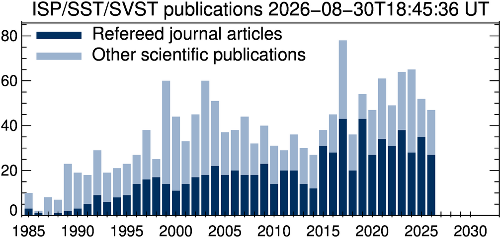

Here we list publications that
- use data from the Swedish 1-meter Solar Telescope (SST, 2001-) or its predecessor, the Swedish Vacuum Solar Telescope (SVST, 1985-2000),
- are (co-)authored by members of the Institute for Solar Physics (ISP) staff,
- describe instrument development for the SST/SVST,

We want to keep this list as accurate and up to date as possible. If this is the first time you see this list and you know you have published results using data from the SST or SVST, please make sure your publications are listed. Please also let us know of any new work. Corrections and additions can be sent to mats@astro.su.se.
Also please note that publications that use data from the SST must have the following two sentences in the Acknowledgements section:
The Swedish 1-m Solar Telescope is operated on the island of La Palma by the Institute for Solar Physics of Stockholm University in the Spanish Observatorio del Roque de los Muchachos of the Instituto de Astrofísica de Canarias. The Swedish 1-m Solar Telescope, SST, is co-funded by the Swedish Research Council as a national research infrastructure (registration number 4.3-2021-00169).Substitute "Vacuum" for "1-m" if the data were collected with SVST.
The bibliographic information is mostly collected from the ADS and curated for accuracy (in particular many of the proceedings papers). The journal abbreviation macros of AASTeX/A&A are used. See the Bɪʙ links below for the individual bibliographic records or the single bibtex file svst.bib with all the records. (The file name was chosen a long time ago, before the 50 cm SVST was retired and the 1-m SST was built.) The single bibtex file is also available from github: git clone git@github.com:mlofdahl/isp-bib.git.
This page was last updated on 2026-08-30T18:45:36 UT.
To be published
TBP : Refereed journal articles (12)
Asensio Ramos, A., "Marginal multi-object multi-frame blind deconvolution", Solar Physics, Submitted. {2026arXiv260511980A} Bɪʙ ads arXiv html pdf
Jarolim, R., da Silva Santos, J. M., Rempel, M., Korsós, M. B., Erdélyi, R., Veronig, A., Soós, S., & Kuridze, D., "Chromospheric magnetic field extrapolations reveal the flux-rope configuration of a solar filament", arXiv e-prints, 2026. {2026arXiv260610411J} Bɪʙ ads arXiv html pdf
Kriginsky, M., Leenaarts, J., de la Cruz Rodríguez, J., & Pastor Yabar, A., "Chromospheric heating and magnetic topology above the shared penumbra of a delta-spot: Multi-line inversions and multi-height magnetic-field extrapolations", arXiv e-prints, 2026. {2026arXiv260819983K} Bɪʙ ads arXiv html pdf
Meissner, A., Pastor Yabar, A., & de la Cruz Rodríguez, J., "A method for the inference of electric currents from spectropolarimetric inversions", Astronomy & Astrophysics, Submitted. {meissner_method} Bɪʙ author? title? title?
Rahangdale, G., "Statistical Study of Rapid Blue Excursions as Mass Conduits in Solar Atmosphere", arXiv e-prints, 2026. {2026arXiv260222811R} Bɪʙ ads arXiv html pdf
Scharmer, G. B., Löfdahl, M. G., de la Cruz Rodríguez, J., Lindberg, B., Socas-Navarro, H., Kiselman, D., Rempel, M., & Leenaarts, J., "Operating the Fabry-Pérot systems of the European Solar Telescope in multi-aperture mode", Astronomy & Astrophysics, Submitted. {2026arXiv260502687S} Bɪʙ ads arXiv html pdf
Silva, S. S. A., Dakanalis, I., Schiavo, L. A. C. A., Tziotziou, K., Ballai, I., Jafarzadeh, S., Pereira, T. M. D., Tsiropoula, G., Verth, G., Esnaola, I., & al., "Solar Vortices as Conduits for Magnetoacoustic Waves: Multi-Layer Coupling and Their Role in Atmospheric Heating", arXiv e-prints, 2025. {2025arXiv250902895S} Bɪʙ ads arXiv html pdf
Skan, M. & Danilovic, S., "Investigating processes behind synthetic Si IV redshifts in the solar transition region", Astronomy & Astrophysics, Submitted. {skan_investigative} Bɪʙ author? title? title?
Skan, M. & Danilovic, S., "Signatures of torsional Alfvén waves in synthetic Hα", Astronomy & Astrophysics, Submitted. {skan_signatures} Bɪʙ author? title? title?
Skan, M., Pietrow, A. G. M., Åkerman, H., & Kiselman, D., "Measuring the temperature of sunspots with state-of-the-art Solar observations", The Physics Teacher, Submitted. {skan_measuring} Bɪʙ author? title? title? AIP
Soler Poquet, I. J., Díaz Baso, C. J., Sainz Dalda, A., Rouppe van der Voort, L. H. M., Nóbrega-Siverio, D., & Joshi, R., "IRIS NUV diagnostics for Ellerman bombs: spectral properties, thermodynamics, and formation height", arXiv e-prints, 2026. {2026arXiv260503818S} Bɪʙ ads arXiv html pdf
Udnæs, E. R., Pereira, T. M. D., Soler Poquet, I. J., & Rouppe van der Voort, L., "Bifrost spectral inversions, Fast non-LTE solar chromospheric diagnostics from 3D simulations", Astronomy & Astrophysics, Submitted. {2026arXiv260826629U} Bɪʙ ads arXiv html pdf
Publications from 2026
2026 : Refereed journal articles (27)
Adebali, Ö. & Pietrow, A. G. M., "Forward modeling solar spectra onto Doppler images of λ And", Astronomy & Astrophysics, 710:A51, 2026. {2026A&A...710A..51A} Bɪʙ ads arXiv html pdf doi
Ashfield, W., Polito, V., Lörinčík, J., De Pontieu, B., Chintzoglou, G., Bose, S., Freij, N., Rouppe van der Voort, L., Joshi, R., & Thoen Faber, J., "Spectroscopic observations of solar flare pulsations driven by oscillatory magnetic reconnection", Nature Astronomy, 10:54-63, 2026. {2026NatAs..10...54A} Bɪʙ ads doi
Campos Rozo, J. I., Jurcák, J., Díaz Castillo, S. M., & van Noort, M., "Morphological variations of solar granules in the presence of magnetic fields", Astronomy & Astrophysics, 708:A66, 2026. {2026A&A...708A..66C} Bɪʙ ads arXiv html pdf doi
Chaurasiya, R., Pereira, T. M. D., & Bayanna, A. R., "Multi-thermal dynamics and transverse oscillations of solar spicules revealed by coordinated SST, IRIS, and SDO observations", Astronomy & Astrophysics, 712:A5, 2026. {2026A&A...712A...5C} Bɪʙ ads arXiv html pdf doi
Chaurasiya, R., Raja Bayanna, A., & Joshi, J., "Comparative Analysis of Ellerman and Quiet Sun Ellerman Bombs in the Solar Atmosphere", Astrophysical Journal, 1006(1):51, 2026. {2026ApJ..1006...51C} Bɪʙ ads arXiv html pdf doi
Chaurasiya, R., Srivastava, S., Chatterjee, P., Dey, S., Erdélyi, R., & Raja Bayanna, A., "On the Relationship between Solar Spicules and Propagating Coronal Disturbances: The Role of Shocks", Astrophysical Journal, 1005(1):111, 2026. {2026ApJ..1005..111C} Bɪʙ ads arXiv html pdf doi
Díaz Baso, C. J., de la Cruz Rodríguez, J., Doerr, H. P., van Noort, M., Prasad, A., Feller, A., & Kiselman, D., "Thermodynamic and magnetic evolution of an eruptive C-class solar flare observed with SST/TRIPPEL-SP", Astronomy & Astrophysics, 707:A164, 2026. {2026A&A...707A.164D} Bɪʙ ads arXiv html pdf doi
Díaz Baso, C. J., Soler Poquet, I. J., Kuckein, C., van Noort, M., & Poirier, N., "Inspectorch: Efficient rare event exploration in solar observations", Astronomy & Astrophysics, 711:A256, 2026. {2026A&A...711A.256D} Bɪʙ ads arXiv html pdf doi
de la Cruz Rodríguez, J., Scharmer, G. B., Sütterlin, P., Leenaarts, J., Löfdahl, M. G., Kiselman, D., Hillberg, T., & Andriienko, O., "Characterization of telecentric dual-etalon Fabry–Pérot systems from observational data. Properties of the CRISP2 instrument at the Swedish 1-m Solar Telescope", Astronomy & Astrophysics, 711:A99, 2026. {2026A&A...711A..99D} Bɪʙ ads arXiv html pdf doi
De Wilde, M., Pietrow, A. G. M., Druett, M. K., Pastor Yabar, A., Koza, J., Kontogiannis, I., Andriienko, O., Berlicki, A., Brunvoll, A. R., de la Cruz Rodríguez, J., & al., "Synthesizing Sun-as-a-star flare spectra from high-resolution solar observations (Corrigendum)", Astronomy & Astrophysics, 710:C1, 2026. {2026A&A...710C...1D} Bɪʙ ads doi
Dorval, P., Piskunov, N., & de la Cruz Rodríguez, J., "Small-scale magnetic field effects on individual spectral line radial velocities in the photosphere and chromosphere of the Sun", Astronomy & Astrophysics, 707:A36, 2026. {2026A&A...707A..36D} Bɪʙ ads doi
Dubey, S., Beck, C., Yadav, R., Felipe, T., & Mathew, S. K., "Chromospheric Flashes in a Solar Pore: Insights from Multiline Spectropolarimetric Diagnostics", Astrophysical Journal, 1000(1):63, 2026. {2026ApJ..1000...63D} Bɪʙ ads arXiv html pdf doi
Hoppe, R., Bergemann, M., Eitner, P., Ellwarth, M., Nordlund, Å., Leenaarts, J., Plez, B., & Serenelli, A., "Solar carbon abundance from 3D non-LTE modelling of the diagnostic lines of the CH molecule", Monthly Notices of the RAS, 546(3):1-22, 2026. {2026MNRAS.546f2085H} Bɪʙ ads arXiv html pdf doi
Joshi, R., Rouppe van der Voort, L., Aulanier, G., Danilovic, S., Prasad, A., Díaz Baso, C. J., Nóbrega-Siverio, D., Poirier, N., & Calchetti, D., "Active chromospheric fibril singularity: Coordinated observations from Solar Orbiter, SST, and IRIS", Astronomy & Astrophysics, 706:A369, 2026. {2026A&A...706A.369J} Bɪʙ ads ads arXiv html pdf doi
Kriginsky, M., Leenaarts, J., de la Cruz Rodríguez, J., Danilovic, S., & Andriienko, O., "The magnetic sensitivity of the Ca II H and K lines", Astronomy & Astrophysics, p. A282, 2026. {2026A&A...708A.282K} Bɪʙ ads arXiv html pdf doi
Milić, I., "Spectropolarimetric Diagnostics of the Lower Solar Atmosphere: a Review of Inversion Techniques", Serbian Astronomical Journal, 212:1-29, 2026. {2026SerAJ.212....1M} Bɪʙ ads doi
Ondratschek, P., Przybylski, D., Smitha, H. N., Leenaarts, J., Cameron, R., & Solanki, S. K., "Mg II h&k spectral line properties computed using 3D radiative transfer in an enhanced network region simulated with the MURaM-ChE code", Astronomy & Astrophysics, 711:A216, 2026. {2026A&A...711A.216O} Bɪʙ ads arXiv html pdf
Ornig, S., Rouppe van der Voort, L., Carlsson, M., Díaz Baso, C. J., Sommer Øyre, E., Soler Poquet, I. J., & Rangøy Brunvoll, A., "Investigating white-light flare mechanisms via the Paschen jump using high-resolution continuum observations from the Swedish 1-m Solar Telescope", Astronomy & Astrophysics, 712:A133, 2026. {2026arXiv260706006O} Bɪʙ ads arXiv html pdf doi
Sainz Dalda, A., de la Cruz Rodríguez, J., Hansteen, V., De Pontieu, B., & Gošić, M., "The IRIS2+ Inversion Tool: Recovering the Radiative Losses and the Thermodynamics in the Lower Solar Atmosphere", Astrophysical Journal, 997(2):229, 2026. {2026ApJ...997..229S} Bɪʙ ads arXiv html pdf doi
Saneshwar, Y. B., Scullion, E., & Botha, G. J. J., "Mapping Oscillatory Flows in a Giant Chromospheric Spiral", Astrophysical Journal, 1007(2):114, 2026. {2026ApJ..1007..114S} Bɪʙ ads arXiv html pdf doi
Scharmer, G. B., de la Cruz Rodríguez, J., Leenaarts, J., Lindberg, B., Sütterlin, P., Hillberg, T., Pietraszewski, C., de Wijn, A. G., Foster, M., & Storey, J., "The making of robust and highly performing imaging spectropolarimeters for large solar telescopes", Astronomy & Astrophysics, 705:A55, 2026. {2026A&A...705A..55S} Bɪʙ ads arXiv html pdf doi
Singh, V., Scullion, E., Botha, G. J. J., Jeffrey, N. L. S., Druett, M., Doyle, G., Nelson, C., O'Flannagain, A., & Pietrow, A. G. M., "Multi-wavelength observations of substructures in solar flare ribbons", Astrophysical Journal, 1007(1):99, 2026. {2025arXiv250701169S} Bɪʙ ads arXiv html pdf doi
Skirvin, S. J., Grant, S. D. T., Jess, D. B., Campbell, R. J., Jafarzadeh, S., Kontiainen, M. V., Berretti, M., Duckenfield, T. J., Chambers, G., Stangalini, M., & al., "The Influence of Opacity on Inferred MHD Wave Signatures in the Lower Solar Atmosphere", Frontiers in Astronomy and Space Science, 13:1814323, 2026. Special Issue 'Magnetohydrodynamic Motions: Daniel K. Inouye Solar Telescope's Window into the Dynamic Sun. {2026FrASS..1314323S} Bɪʙ ads arXiv html pdf
Thoen Faber, J., Joshi, R., Rouppe van der Voort, L., Wedemeyer, S., Sommer Øyre, E., Soler Poquet, I. J., & Rangøy Brunvoll, A., "Fine details in solar flare ribbons: Statistical insights from observations with the Swedish 1-m Solar Telescope", Astronomy & Astrophysics, 705:A174, 2026. {2026A&A...705A.174T} Bɪʙ ads arXiv html pdf doi
Vicente Arévalo, A., Borrero, J. M., Milić, I., Pastor Yabar, A., Kontogiannis, I., & Pietrow, A. G. M., "Chromospheric and photospheric properties of sunspots as inferred from Stokes inversions under magneto-hydrostatic and non-local thermodynamic equilibrium", Astronomy & Astrophysics, 708:A351, 2026. {2026A&A...708A.351V} Bɪʙ ads arXiv html pdf doi
Yu, H. C., Ding, M. D., Hong, J., Wang, Y. K., & Li, Z., "Limb Shift of the Fe I 6569 Å Line on the Sun", Astrophysical Journal, 998(1):145, 2026. {2026ApJ...998..145Y} Bɪʙ ads arXiv html pdf doi
Zbinden, J., de la Cruz Rodríguez, J., Díaz Baso, C. J., & Kleint, L., "Insights into penumbral formation from high-resolution photospheric and chromospheric observations", Astronomy & Astrophysics, 705:A35, 2026. {2026A&A...705A..35Z} Bɪʙ ads doi
2026 : Other scientific publications (18)
Asensio Ramos, A., "GPU/AI-powered image reconstruction", in Methods and techniques for high-resolution spectro-polarimetry with current and future high-resolution telescopes: lessons learned and ways forward, 2026. {asensio_ramos26GPU} Bɪʙ author? title? title? pdf
de la Cruz Rodríguez, J., "Full characterization of telecentric dual-etalon FPI from observational data", in Methods and techniques for high-resolution spectro-polarimetry with current and future high-resolution telescopes: lessons learned and ways forward, 2026. {delacruz26full} Bɪʙ author? title? title?
de la Cruz Rodríguez, J., "Polarimetric calibration of Fabry-Pérot instruments", in Methods and techniques for high-resolution spectro-polarimetry with current and future high-resolution telescopes: lessons learned and ways forward, 2026. {delacruz26polarimetric} Bɪʙ author? title? title?
De Pontieu, B., "Coordinated Interface Region Imaging Spectrograph (IRIS) and Swedish 1 m Solar Telescope (SST) Observations", Heliophysics Digital Resource Library (HDRL) dataset, 2026, 2026. {2026hdrl.data..639D} Bɪʙ ads doi
Doerr, H. P., "Slit-reconstructed spectrographs", in Methods and techniques for high-resolution spectro-polarimetry with current and future high-resolution telescopes: lessons learned and ways forward, 2026. {doerr26slit-reconstructed} Bɪʙ author? title? title? pdf
Löfdahl, M., "Image restoration with MFBD methods", in Methods and techniques for high-resolution spectro-polarimetry with current and future high-resolution telescopes: lessons learned and ways forward, 2026. {lofdahl26image} Bɪʙ author? title? title? pdf
Löfdahl, M., "Mosaicking and power spectra", in Methods and techniques for high-resolution spectro-polarimetry with current and future high-resolution telescopes: lessons learned and ways forward, 2026. {lofdahl26power} Bɪʙ author? title? title? pdf
Meissner, A., "Electric currents in the chromosphere", Licentiate thesis, Stockholm University, 2026. {meissner26electric} Bɪʙ author? title? title? BOX
Nguyen, R., "Detection of Ellerman bombs in the solar atmosphere", MSc thesis, University of Oslo, 2026. {nguyen26detection} Bɪʙ author? title? title?
Sand, M. O., "Reconnection-Driven Jets in the Lower Solar Atmosphere", PhD thesis, University of Oslo, 2026. {sand26reconnection-driven} Bɪʙ author? title? title? hdl
Scharmer, G. B., "Optimising the Use of the European Solar Telescope before MCAO: the Multi-Aperture Option", ESPOS seminar on 2026-01-29, 2026. {scharmer26espos} Bɪʙ author? title? title? ESPOS
Scharmer, G. B., Löfdahl, M., de la Cruz Rodríguez, J., Lindberg, B., Leenaarts, J., & Socas-Navarro, H., "Optimising the use of the EST FPI systems before MCAO is operational", in Methods and techniques for high-resolution spectro-polarimetry with current and future high-resolution telescopes: lessons learned and ways forward, 2026. {scharmer26optimising} Bɪʙ author? title? title? pdf
Scharmer, G. B., Lindberg, B., de la Cruz Rodríguez, J., Leenaarts, J., Sütterlin, P., Hillberg, T., de Wijn, A. G., Rouppe van der Voort, L., Pietraszewski, C., Foster, M., & al., "The making of robust and highly performing imaging spectropolarimeters for SST and EST", in Methods and techniques for high-resolution spectro-polarimetry with current and future high-resolution telescopes: lessons learned and ways forward, 2026. {scharmer26making} Bɪʙ author? title? title? pdf
Scharmer, G., Löfdahl, M., de la Cruz Rodríguez, J., Leenaarts, J., & Socas-Navarro, H., "Maximising the science output of EST without multi-conjugate adaptive optics", 2026. Abstract to the Special Session “EST, the next-generation solar telescope” (SS34) in the EAS 2026 meeting in Lausanne. Paper number 980. {scharmer26maximising} Bɪʙ author? title? title? UNIGE
Skan, M., "Spectral Signatures of Synthetic Solar Plage: Bridging the gap between theory and observations", PhD thesis, Stockholm University, 2026. {skan26spectral} Bɪʙ author? title? title? DIVA-PORTAL
Thoen Faber, J., "A detailed view of solar flare ribbons", PhD thesis, University of Oslo, 2026. {thoen_faber26detailed} Bɪʙ author? title? title? hdl
Udnæs, E. R., "Probing energy transfer in the solar chromosphere with numerical simulations and observations", PhD thesis, University of Oslo, 2026. {udnaes26probing} Bɪʙ author? title? title? hdl
van Noort, M., "IFU microlenses", in Methods and techniques for high-resolution spectro-polarimetry with current and future high-resolution telescopes: lessons learned and ways forward, 2026. {vannoort26IFU} Bɪʙ author? title? title?
2026 : Other publications (2)
Poirier, N., "Et stålende samarbeid", Astronomi, (1), 2026. Norsk Astronomisk Selskap. {poirier26} Bɪʙ author? title? title? ASTRONOMI
Vogt, Y., "Astrofysikere avslører stadig nye mysterier på solen", Apollon, (1), 2026. Universitetet i Oslo. {vogt26astrofysikere} Bɪʙ author? title? title? UiO
Publications from 2025
2025 : Refereed journal articles (35)
Asensio Ramos, A. & de la Cruz Rodríguez, J., "Neural translation for Stokes inversion and synthesis", Astronomy & Astrophysics, 703:A55, 2025. {2025A&A...703A..55A} Bɪʙ ads arXiv html pdf doi
Asensio Ramos, A., Löfdahl, M. G., Díaz Baso, C., Kuckein, C., & Esteban Pozuelo, S., "torchmfbd: a flexible multi-object multi-frame blind deconvolution code", Astronomy & Astrophysics, 703:A269, 2025. {2025A&A...703A.269A} Bɪʙ ads arXiv html pdf doi
Bhatnagar, A., Prasad, A., Nóbrega-Siverio, D., Rouppe van der Voort, L., & Joshi, J., "Small-scale dynamic phenomena associated with interacting fan-spine topologies: quiet-Sun Ellerman bombs, UV brightenings, and chromospheric inverted-Y-shaped jets", Astronomy & Astrophysics, 698:A174, 2025. {2025A&A...698A.174B} Bɪʙ ads arXiv html pdf doi
Bhatnagar, A., Prasad, A., Rouppe van der Voort, L., Nóbrega-Siverio, D., & Joshi, J., "Magnetic Topology of quiet-Sun Ellerman bombs and associated Ultraviolet brightenings", Astronomy & Astrophysics, 693:A221, 2025. {2025A&A...693A.221B} Bɪʙ ads arXiv html pdf doi
Borrero, J. M., Pastor Yabar, A., Schmassmann, M., Rempel, M., van Noort, M., & Collados, M., "The role of the Lorentz force in sunspot equilibrium", Astronomy & Astrophysics, 699:A149, 2025. {2025A&A...699A.149B} Bɪʙ ads arXiv html pdf doi
Chandra, S., Cameron, R., Przybylski, D., Solanki, S. K., Ondratschek, P., & Danilovic, S., "Probing chromospheric fine structures with a Hα proxy using MURaM-ChE (Corrigendum)", Astronomy & Astrophysics, 703:C3, 2025. {2025A&A...703C...3C} Bɪʙ ads doi
Chandra, S., Cameron, R., Przybylski, D., Solanki, S. K., Ondratschek, P., & Danilovic, S., "Probing chromospheric fine structures with a Hα proxy using MURaM-ChE", Astronomy & Astrophysics, 701:A294, 2025. {2025A&A...701A.294C} Bɪʙ ads doi
Chaurasiya, R. & Raja Bayanna, A., "Observational study of the atmospheric gravity waves in the lower solar atmosphere", Monthly Notices of the RAS, 537(3):2243-2257, 2025. {2025MNRAS.537.2243C} Bɪʙ ads arXiv html pdf doi
Chaurasiya, R., Raja Bayanna, A., & Erdélyi, R., "Propagation and energy dissipation of shock waves in the solar chromosphere", Monthly Notices of the RAS, 543(4):3791-3801, 2025. {2025MNRAS.543.3791C} Bɪʙ ads arXiv html pdf doi
Díaz Baso, C. J., Asensio Ramos, A., de la Cruz Rodríguez, J., da Silva Santos, J. M., & Rouppe van der Voort, L., "Exploring spectropolarimetric inversions using neural fields: Solar chromospheric magnetic field under the weak-field approximation", Astronomy & Astrophysics, 693:A170, 2025. {2025A&A...693A.170D} Bɪʙ ads arXiv html pdf doi
Díaz-Castillo, S. M., Fischer, C. E., Moreno-Insertis, F., Guglielmino, S. L., Ishikawa, R., & Criscuoli, S., "Emergence of magnetic flux sheets in the quiet Sun. I. Statistical properties", Astronomy & Astrophysics, 695:A45, 2025. {2025A&A...695A..45D} Bɪʙ ads arXiv html pdf doi
da Silva Santos, J. M., Dunnington, E., Jarolim, R., Danilovic, S., & Criscuoli, S., "Magnetic Reconnection in a Compact Magnetic Dome: Chromospheric Emissions and High-velocity Plasma Flows", Astrophysical Journal, 985(2):157, 2025. {2025ApJ...985..157D} Bɪʙ ads doi
De Wilde, M., Pietrow, A. G. M., Druett, M. K., Pastor Yabar, A., Koza, J., Kontogiannis, I., Andriienko, O., Berlicki, A., Brunvoll, A. R., de la Cruz Rodríguez, J., & al., "Synthesizing Sun-as-a-star flare spectra from high-resolution solar observations", Astronomy & Astrophysics, 700:A275, 2025. {2025A&A...700A.275D} Bɪʙ ads arXiv html pdf doi
Faryad, A., Pietrow, A. G. M., Verma, M., & Denker, C., "Automatic detection of Ellerman bombs in the Hα line", Solar Physics, 300(9):127, 2025. {2025SoPh..300..127F} Bɪʙ ads arXiv html pdf doi
Felipe, T., González Manrique, S. J., Martínez-Gómez, D., Gómez-Míguez, M. M., Khomenko, E., Quintero Noda, C., & Socas-Navarro, H., "Observations of umbral flashes in the resonant sunspot chromosphere", Astronomy & Astrophysics, 693:A165, 2025. {2025A&A...693A.165F} Bɪʙ ads arXiv html pdf doi
Gošić, M., Hansteen, V. H., Sainz Dalda, A., De Pontieu, B., & Rouppe van der Voort, L. H. M., "Bifrost Models of the Quiet Sun. I. Comparison with Solar Observations", Astrophysical Journal, 990(2):195, 2025. {2025ApJ...990..195G} Bɪʙ ads arXiv html pdf doi
Kianfar, S., Leenaarts, J., Esteban Pozuelo, S., da Silva Santos, J. M., de la Cruz Rodríguez, J., & Danilovic, S., "Transverse oscillations in 3D along Ca II K bright fibrils in the Solar chromosphere", Astronomy & Astrophysics, 698:A124, 2025. {2025A&A...698A.124K} Bɪʙ ads arXiv html pdf doi
Kriginsky, M. & Oliver, R., "On the Magnetic and Thermodynamic Properties of Dark Fibrils in the Chromosphere", Astrophysical Journal, 981(2):121, 2025. {2025ApJ...981..121K} Bɪʙ ads arXiv html pdf doi
Kwak, H., Lim, E. K., Chae, J., Kang, J., Lee, K. S., Madjarska, M. S., van Noort, M., & Yi, Y., "Elliptically polarized transverse magnetohydrodynamic waves in quiet-region thread-like structures observed using the MiHI prototype", Astronomy & Astrophysics, 700:A133, 2025. {2025A&A...700A.133K} Bɪʙ ads doi
Leenaarts, J., van Noort, M., de la Cruz Rodríguez, J., Danilovic, S., Díaz Baso, C. J., Hillberg, T., Sütterlin, P., Kiselman, D., Scharmer, G., & Solanki, S. K., "High flow speeds and transition-region-like temperatures in the solar chromosphere during flux emergence – Evidence from imaging spectropolarimetry in He I 1083 nm and numerical simulations", Astronomy & Astrophysics, 696:A3, 2025. {2025A&A...696A...3L} Bɪʙ ads arXiv html pdf doi SU
Liu, G., Milić, I., Castellanos Durán, J. S., Borrero, J. M., van Noort, M., & Kuckein, C., "Fine-scale opposite-polarity magnetic fields in a solar plage revealed by integral field spectropolarimetry", Astronomy & Astrophysics, 697:L7, 2025. {2025A&A...697L...7L} Bɪʙ ads arXiv html pdf doi
Petrova, E., Van Doorsselaere, T., van Noort, M., Berghmans, D., & Castellanos Durán, J. S., "Transverse waves observed in a fibril with the MiHI prototype", Astronomy & Astrophysics, 697:A168, 2025. {2025A&A...697A.168P} Bɪʙ ads arXiv html pdf doi
Poirier, N., Danilovic, S., Kohutova, P., Díaz Baso, C. J., Rouppe van der Voort, L., Calchetti, D., & Sinjan, J., "Coronal kink oscillations and photospheric driving: Combining SolO/EUI and SST/CRISP high-resolution observations", Astronomy & Astrophysics, 696:A125, 2025. {2025A&A...696A.125P} Bɪʙ ads arXiv html pdf doi
Przybylski, D., Cameron, R., Solanki, S. K., Rempel, M., Danilovic, S., & Leenaarts, J., "Structure and dynamics of the internetwork solar chromosphere: Results of a small-scale dynamo simulation", Astronomy & Astrophysics, 703:A148, 2025. {2025A&A...703A.148P} Bɪʙ ads arXiv html pdf doi
Reche, A., Pastor Yabar, A., & Griñón-Marín, A. B., "Polar faculae and their relationship to the solar cycle", Astronomy & Astrophysics, 699:A340, 2025. {2025A&A...699A.340R} Bɪʙ ads doi
Sand, M. O., Rouppe van der Voort, L. H. M., Joshi, J., Bose, S., Nóbrega-Siverio, D., & Griñón-Marín, A. B., "Quiet Sun Ellerman bombs as a possible proxy for reconnection-driven spicules", Astronomy & Astrophysics, 697:A180, 2025. {2025A&A...697A.180S} Bɪʙ ads arXiv html pdf doi
Siu-Tapia, A. L., Bellot Rubio, L. R., Orozco Suárez, D., & Gafeira, R., "Diagnosing the solar atmosphere through the Mg I b₂ 5173 Å line: II. Morphological classification of the intensity and circular polarization profiles", Astronomy & Astrophysics, 696:A106, 2025. {2025A&A...696A.106S} Bɪʙ ads arXiv html pdf doi
Soler Poquet, I. J., Díaz Baso, C. J., Rouppe van der Voort, L. H. M., & Vissers, G. J. M., "Automatic detection of Ellerman bombs using deep learning", Astronomy & Astrophysics, 699:A54, 2025. {2025A&A...699A..54S} Bɪʙ ads arXiv html pdf doi
Thoen Faber, J., Joshi, R., Rouppe van der Voort, L., Wedemeyer, S., Fletcher, L., Aulanier, G., & Nóbrega-Siverio, D., "High-resolution observational analysis of flare ribbon fine structures", Astronomy & Astrophysics, 693:A8, 2025. {2025A&A...693A...8T} Bɪʙ ads arXiv html pdf doi
Tian, J., Li, Y., Hong, J., & Ding, M. D., "Continuum Enhancement and Line Asymmetries of Solar Flares in Different Heating Models: Alfvén Waves, Nonthermal Electron Beams, and Their Joint Effect", Astrophysical Journal, 987(2):163, 2025. {2025ApJ...987..163T} Bɪʙ ads doi
van Noort, M., Hölken, J., Doerr, H. P., Chae, J., Cao, W., Gorceix, N., Kang, J., Ahn, K., & Solanki, S. K., "Large-aperture diffraction-limited spectro-polarimetry with FISS-SP", Astronomy & Astrophysics, 704:A215, 2025. {2025A&A...704A.215V} Bɪʙ ads doi
Xie, Q. & Liu, J., "Standard Dataset for Machine Detection of Small-scale Swirls in the Solar Photosphere", Chinese Journal of Space Science, 45(6):1656-1664, 2025. {2025ChJSS..45.1656X} Bɪʙ ads doi
Xie, Q., Liu, J., Nelson, C. J., Erdélyi, R., & Wang, Y., "Photospheric Swirls in a Quiet-Sun Region", Astrophysical Journal, 979(1):27, 2925. {2025ApJ...979...27X} Bɪʙ ads arXiv html pdf doi
Yu, H. C., Hong, J., & Ding, M. D., "Sun-as-a-star analysis of simulated solar flares", Astronomy & Astrophysics, 694:A315, 2025. {2025A&A...694A.315Y} Bɪʙ ads arXiv html pdf doi
Zhou, Y., Li, X., Jenkins, J. M., Hong, J., & Keppens, R., "Frozen-field Modeling of Coronal Condensations with MPI-AMRVAC II: Optimization and application in three-dimensional models", Astrophysical Journal, 978(1):72, 2025. {2025ApJ...978...72Z} Bɪʙ ads arXiv html pdf doi
2025 : Other scientific publications (16)
Asensio Ramos, A., Díaz Baso, C., Kuckein, C., Esteban Pozuelo, S., & Löfdahl, M. G., "torchmfbd: Multi-object multi-frame blind deconvolution of point-like or extended objects", Astrophysics Source Code Library, record ascl:2507.028, 2025. {2025ascl.soft07028A} Bɪʙ ads ASCL
Ashfield, W., Polito, V., Lörinčík, J., De Pontieu, B., Chintzoglou, G., Bose, S., Freij, N., Rouppe van der Voort, L., Joshi, R., & Thoen Faber, J., "Spectroscopic Observations of Solar Flare Pulsations Driven by Oscillatory Reconnection", Bulletin of the AAS, 57(4):210.08, 2025. 246th Meeting of the American Astronomical Society. {2025AAS...24621008A} Bɪʙ ads
Bhatnagar, A., "Spectral and topological study of small-scale energetic events in the solar atmosphere", PhD thesis, University of Oslo, 2025. {bhatnagar25spectral} Bɪʙ author? title? title? hdl
Canocchi, G., "A Tale of Sodium in Stellar and Planetary Atmospheres, Advancing transmission and million-star spectroscopy with 3D non-LTE radiative transfer", PhD thesis, Stockholm University, 2025. {canocchi25tale} Bɪʙ author? title? title? DIVA-PORTAL
Chaurasiya, R. & Raja Bayanna, A., "Shock Wave Propagation in the Solar Atmosphere", in International conference on Sun, Space Weather, and Solar-Stellar Connection, 2025. Abstract. {chaurasiya25shock} Bɪʙ author? title? title? RES
Da Silva Santos, J. M., Dunnington, E., Jarolim, R., Danilovic, S., & Criscuoli, S., "Small-Scale Magnetic Reconnection with DKIST: Emission Signatures and Dynamics", Bulletin of the AAS, 57(4):308.02, 2025. 246th Meeting of the American Astronomical Society. {2025AAS...24630802D} Bɪʙ ads
Faryad, A., "Automatic Detection of Ellerman Bombs in the Strong Chromospheric Absorption Line Hα", MSc thesis, University of Potsdam, 2025. {faryad25automatic} Bɪʙ author? title? title? doi
Faryad, A., Pietrow, A. G. M., Denker, C., & Verma, M., "Automatic Detection of Elleman Bombs in Hα using COCOPLOT", in SOLARNET 2023, 2025. {faryad25automatic_poster} Bɪʙ author? title? title? doi
Jarolim, R., Da Silva Santos, J. M., Rempel, M., Korsos, M., van Fay-Siebenburgen, R., Veronig, A., Soos, S., & Kuridze, D., "Chromospheric Magnetic Field Extrapolations Unveil the Magnetic Topology of Solar Active Region Filament", Bulletin of the AAS, 57(4):110.10, 2025. 246th Meeting of the American Astronomical Society. {2025AAS...24611010J} Bɪʙ ads
Joshi, R., Thoen Faber, J., Rouppe van der Voort, L., Wedemeyer, S., Fletcher, L., Aulanier, G., & Nóbrega-Siverio, D., "Fine-Structure Flare Ribbons: Insights from SST, IRIS, and SDO", in American Astronomical Society Meeting Abstracts, American Astronomical Society Meeting Abstracts, 246:224.04, 2025. {2025AAS...24622404J} Bɪʙ ads
Koza, J., "Exploring Solar Flares: The Magnetism of Flare Loops", in Tatra Astro Summit, p. 8, 2025. {2025tas..conf....8K} Bɪʙ ads MUNI
Krikova, K., "Small-scale energetic phenomena in Hε: line formation and diagnostic potential", PhD thesis, University of Oslo, 2025. {krikova25small-scale} Bɪʙ author? title? title? hdl
Milić, I., "Spectral resolution effects on the information content in solar spectra", ESPOS seminar on 2025-04-24, 2025. {milic25espos} Bɪʙ author? title? title? ESPOS
Pietrow, A., "Sun-as-a-star flare observations with HARPS-N and SST", ESPOS seminar on 2025-01-30, 2025. {pietrow25espos} Bɪʙ author? title? title? ESPOS
Scharmer, G. B. & Lindberg, B., "Proposal for the optical design of three robust and highly performing FPI systems for the European Solar Telescope", Institute for Solar Physics, Stockholm University, Tech. report, 2025. {2025arXiv250521053S} Bɪʙ ads arXiv html pdf doi
Singh, V., Botha, G., Scullion, E., Jeffrey, N., & Druett, M., "Probing the substructures of solar flare ribbons", in SDO 2025 Science Workshop: A Gathering of the Helio-hive!, p. 169, 2025. {2025ghh..confP.169S} Bɪʙ ads SDO-WORKSHOPS
2025 : Other publications (1)
"Ny teknik öppnar för att förutsäga framtida solutbrott", Stockholms universitet nyheter, 2025. {nyheter25nyteknik} Bɪʙ title? title? SU
Publications from 2024
2024 : Refereed journal articles (28)
Arramy, D., de la Cruz Rodríguez, J., & Leenaarts, J., "Jacobian-free Newton-Krylov method for multilevel nonlocal thermal equilibrium radiative transfer problems", Astronomy & Astrophysics, 690:A12, 2024. {2024A&A...690A..12A} Bɪʙ ads arXiv html pdf doi
Asensio Ramos, A., "Solar multi-object multi-frame blind deconvolution with a spatially variant convolution neural emulator", Astronomy & Astrophysics, 688:A88, 2024. {2024A&A...688A..88A} Bɪʙ ads arXiv html pdf doi
Bhatnagar, A., Rouppe van der Voort, L., & Joshi, J., "Transition region response to Quiet Sun Ellerman Bombs", Astronomy & Astrophysics, 689:A156, 2024. {2024A&A...689A.156B} Bɪʙ ads arXiv html pdf doi
Borrero, J. M., Milić, I., Pastor Yabar, A., Kaithakkal, A. J., & de la Cruz Rodríguez, J., "One-dimensional, geometrically stratified semi-empirical models of the quiet-Sun photosphere and lower chromosphere", Astronomy & Astrophysics, 688:A56, 2024. {2024A&A...688A..56B} Bɪʙ ads arXiv html pdf doi
Borrero, J. M., Pastor Yabar, A., & Ruiz Cobo, B., "Combining magneto-hydrostatic constraints with Stokes profile inversions. IV. Imposing ∇ · B=0 condition", Astronomy & Astrophysics, 2024. {2024A&A...687A.155B} Bɪʙ ads arXiv html pdf doi
Canocchi, G., Lind, K., Lagae, C., Pietrow, A. G. M., Amarsi, A. M., Kiselman, D., Andriienko, O., & Hoeijmakers, H. J., "3D non-LTE modeling of the stellar center-to-limb variation for transmission spectroscopy studies: Na I D and K I resonance lines in the Sun", Astronomy & Astrophysics, 683:A242, 2024. {2024A&A...683A.242C} Bɪʙ ads arXiv html pdf doi
Chae, J., van Noort, M., Madjarska, M. S., Lee, K., Kang, J., & Cho, K., "Large-amplitude transverse MHD waves prevailing in the Hα chromosphere of a solar quiet region revealed by MiHI integrated field spectral observations", Astronomy & Astrophysics, 687:A249, 2024. {2024A&A...687A.249C} Bɪʙ ads arXiv html pdf doi
Chaurasiya, R., Raja Bayanna, A., Louis, R. E., Pereira, T. M. D., & Mathew, S. K., "On the Response of the Transition Region and the Corona to Rapid Excursions in the Chromosphere", Astrophysical Journal, 970(2):179, 2024. {2024ApJ...970..179C} Bɪʙ ads arXiv html pdf doi
Chitta, L. P., van Noort, M., Smitha, H. N., Priest, E. R., & Rouppe van der Voort, L. H. M., "Photospheric hot spots at solar coronal loop footpoints revealed by hyperspectral imaging observations", Astrophysical Journal, 976(1):134, 2024. {2024ApJ...976..134C} Bɪʙ ads arXiv html pdf doi
Cumming, R. J., Pietrow, A. G. M., Pietrow, L., Cavallius, M., Petit dit de la Roche, D., Pietrow, C., Schroetter, I., & Skan, M., "Why every observatory needs a disco ball", Physics Education, 59(2):025012, 2024. {2024PhyEd..59b5012C} Bɪʙ ads arXiv html pdf doi
Díaz-Castillo, S. M., Fischer, C. E., Rezaei, R., Steiner, O., & Berdyugina, S., "Connectivity between the solar photosphere and chromosphere in a vortical structure. Observations of multi-phase, small-scale magnetic field amplification", Astronomy & Astrophysics, 691:A37, 2024. {2024A&A...691A..37D} Bɪʙ ads arXiv html pdf doi
da Silva Santos, J. M., Molnar, M., Milić, I., Rempel, M., Reardon, K., & de la Cruz Rodríguez, J., "Constraints on Acoustic Wave Energy Fluxes and Radiative Losses in the Solar Chromosphere from Non-LTE Inversions", Astrophysical Journal, 976(1):21, 2024. {2024ApJ...976...21D} Bɪʙ ads arXiv html pdf doi
de la Cruz Rodríguez, J. & Leenaarts, J., "Improved reconstruction of solar magnetic fields from imaging spectropolarimetry through spatio-temporal regularisation", Astronomy & Astrophysics, 685:A85, 2024. {2024A&A...685A..85D} Bɪʙ ads arXiv html pdf doi
Joshi, R., Aulanier, G., Radcliffe, A., Rouppe van der Voort, L., Pariat, E., Nóbrega-Siverio, D., & Schmieder, B., "Generic low-atmosphere signatures of swirled-anemone jets", Astronomy & Astrophysics, 2024. {2024A&A...687A.172J} Bɪʙ ads arXiv html pdf doi
Joshi, R., Rouppe van der Voort, L., Schmieder, B., Moreno-Insertis, F., Prasad, A., Aulanier, G., & Nóbrega-Siverio, D., "High-resolution observations of recurrent jets from an arch filament system", Astronomy & Astrophysics, 691:A198, 2024. {2024A&A...691A.198J} Bɪʙ ads arXiv html pdf doi
Koza, J., "Equilibria and the protomodel of the Sun's atmosphere by Karl Schwarzschild in hindsight", European Physical Journal H, 49(1):22, 2024. {2024EPJH...49...22K} Bɪʙ ads doi
Kuridze, D., Uitenbroek, H., Wöger, F., Mathioudakis, M., Morgan, H., Campbell, R., Fischer, C., Cauzzi, G., Schad, T., Reardon, K., & al., "Insight into the solar plage chromosphere with DKIST", Astrophysical Journal, 965(1):15, 2024. {2024ApJ...965...15K} Bɪʙ ads arXiv html pdf doi
Milić, I., Centeno, R., Sun, X., Rempel, M., & de la Cruz Rodriguez, J., "Spatial resolution effects on the solar open flux estimates", Astronomy & Astrophysics, 683:A134, 2024. {2024A&A...683A.134M} Bɪʙ ads arXiv html pdf doi
Millar, D. C. L., Fletcher, L., & Joshi, J., "Intensity and velocity oscillations in a flaring active region", Monthly Notices of the RAS, 527(3):5916-5928, 2024. {2024MNRAS.527.5916M} Bɪʙ ads doi
Moe, T. E., Pereira, T. M. D., Rouppe van der Voort, L., Carlsson, M., Hansteen, V., Calvo, F., & Leenaarts, J., "Comparative clustering analysis of Ca II 854.2 nm spectral profiles from simulations and observations", Astronomy & Astrophysics, 682:A11, 2024. {2024A&A...682A..11M} Bɪʙ ads arXiv html pdf doi
Nóbrega-Siverio, D., Cabello, I., Bose, S., Rouppe van der Voort, L. H. M., Joshi, R., Froment, C., & Henriques, V. M. J., "Small-scale magnetic flux emergence preceding a chain of energetic solar atmospheric events", Astronomy & Astrophysics, 686:A218, 2024. {2024A&A...686A.218N} Bɪʙ ads arXiv html pdf doi
Ondratschek, P., Przybylski, D., Smitha, H. N., Cameron, R., Solanki, S. K., & Leenaarts, J., "Mg II h&k spectra of an enhanced network region simulated with the MURaM-ChE code. Results using 1.5D synthesis", Astronomy & Astrophysics, 692:A6, 2024. {2024A&A...692A...6O} Bɪʙ ads arXiv html pdf doi
Pietrow, A. G. M., Cretignier, M., Druett, M. K., Alvarado-Gómez, J. D., Hofmeister, S. J., Verma, M., Kamlah, R., Baratella, M., Amazo-Gómez, E. M., Kontogiannis, I., & al., "A comparative study of two X2.2 and X9.3 solar flares observed with HARPS-N. Reconciling Sun-as-a-star spectroscopy and high-spatial resolution solar observations in the context of the solar-stellar connection", Astronomy & Astrophysics, 682:A46, 2024. {2024A&A...682A..46P} Bɪʙ ads arXiv html pdf doi
Pietrow, A. G. M., Druett, M. K., & Singh, V., "Spectral variations within solar flare ribbons", Astronomy & Astrophysics, 685:A137, 2024. {2024A&A...685A.137P} Bɪʙ ads arXiv html pdf doi
Rees-Crockford, T., Scullion, E., Khomenko, E., & de Vicente, Á., "The Observational and Numerical Analysis of the Rayleigh–Taylor Instability beneath a Hedgerow Prominence", Astrophysical Journal, 974(1):64, 2024. {2024ApJ...974...64R} Bɪʙ ads doi
Rouppe van der Voort, L., Joshi, J., & Krikova, K., "Observations of magnetic reconnection in the deep solar atmosphere in the Hε line", Astronomy & Astrophysics, 683:A190, 2024. {2024A&A...683A.190R} Bɪʙ ads arXiv html pdf doi
Scharmer, G. B., Sliepen, G., Sinquin, J. C., Löfdahl, M. G., Lindberg, B., & Sütterlin, P., "The 85-electrode AO system of the Swedish 1-m Solar Telescope", Astronomy & Astrophysics, 685:A32, 2024. {2024A&A...685A..32S} Bɪʙ ads arXiv html pdf doi
Sobotka, M., Jurčák, J., Castellanos Durán, J. S., & García-Rivas, M., "The relation between magnetic field inclination and the apparent motion of penumbral grains", Astronomy & Astrophysics, 682:A65, 2024. {2024A&A...682A..65S} Bɪʙ ads arXiv html pdf doi
2024 : Other scientific publications (35)
Arramy, D., "Jacobian-Free Newton-Krylov method for multilevel NLTE radiative transfer problems", Licentiate thesis, Stockholm University, 2024. {arramy24jacobian-free} Bɪʙ author? title? title? pdf
Ashfield, W., Polito, V., Lorincik, J., Thoen Faber, J., & De Pontieu, B., "Quasi-periodic Pulsations in an M4.2 Flare: Insights from High-Cadence and High-Resolution Observations", in AGU Fall Meeting Abstracts, 2024:SH13C-2934, 2024. {2024AGUFMSH13C2934A} Bɪʙ ads
Borrero, J. M., Milic, I., Pastor Yabar, A., Kaithakkal, A. J., & de La Cruz Rodriguez, J., "VizieR Online Data Catalog: Quiet-Sun photosphere and lower chromosphere (Borrero+, 2024)", VizieR On-line Data Catalog: J/A+A/688/A56. Originally published in: 2024A&A...688A..56B, 2024. {2024yCat..36880056B} Bɪʙ ads doi
Brunvoll, A. R., "A Co-Spatial, Co-Temporal View of the Solar Chromosphere in the Balmer H-alpha and H-beta Spectral Lines", MSc thesis, University of Oslo, 2024. {brunvoll24co-spatial} Bɪʙ author? title? title? UiO
Chae, J., Noort, M. V., & Madjarska-Theissen, M., "High-Speed Dynamics in the Chromosphere of a Very Typical Quiet Solar Region Revealed by the MiHI Integrated Field Spectral Observations", in 45th COSPAR Scientific Assembly, 45:1974, 2024. Abstract E2.2-0031-24. {2024cosp...45.1974C} Bɪʙ ads COSPAR2024
Díaz Castillo, S. M., Fischer, C., Rezaei, R., Steiner, O., & Berdyugina, S., "Spectropolarimetric observations of multi-phase small-scale magnetic field amplification in a vortical structure", in EAS Annual Meeting 2024, p. 1240, 2024. {2024eas..conf.1240D} Bɪʙ ads UNIGE
da Silva Santos, J. M., Molnar, M., Milic, I., Rempel, M., Reardon, K., & de la Cruz Rodr\iguez, J., "Evaluating acoustic wave flux contributions to spatially resolved chromospheric radiative losses", in AGU Fall Meeting Abstracts, 2024:SH21G-2902, 2024. {2024AGUFMSH21G2902D} Bɪʙ ads
Danilovic, S., "An overview of last October's SST-SolO observational campaign", ESPOS seminar on 2024-05-02, 2024. {danilovic24espos} Bɪʙ author? title? title? ESPOS
Danilovic, S., "Chromospheric features in plages and the present state of numerical modeling", in 45th COSPAR Scientific Assembly, 45:1962, 2024. Abstract E2.2-0017-24. {2024cosp...45.1962D} Bɪʙ ads COSPAR2024
Danilovic, S., "Understanding energetics and dynamics of the quiet lower solar atmosphere with MHD modeling and observations", in 45th COSPAR Scientific Assembly, 45:1912, 2024. Abstract E2.1-0010-24. {2024cosp...45.1912D} Bɪʙ ads COSPAR2024
de la Cruz Rodríguez, J., "Diagnostics of the magnetic chromosphere", in EAS Annual Meeting 2024, p. 1297, 2024. {2024eas..conf.1297D} Bɪʙ ads UNIGE
Ermolli, I., Murabito, M., Chatzistergos, T., Jafarzadeh, S., Giorgi, F., & Rouppe van der Voort, L., "Ca II K brightness as a function of magnetic field strength and characteristics of the observations", in EAS Annual Meeting 2024, p. 2277, 2024. {2024eas..conf.2277E} Bɪʙ ads UNIGE
Herde, V. L., Bose, S., Chamberlin, P. C., Schmit, D., Daw, A., Polito, V., & Gonzalez, G., "Identifying Spicules in Mg II: Statistics and Comparisons with Hα", arXiv, 2024. Withdrawn draft. {2024arXiv241108801H} Bɪʙ ads arXiv html pdf
Herde, V., "Instrumentation and Analysis Tools for Studying Solar Spicules in the Sun's Upper Chromosphere", PhD thesis, University of Colorado at Boulder, 2024. {2024PhDT........19H} Bɪʙ ads PROQUEST
Janvier, M., "4 years of the Sun revealed by the Solar Orbiter mission", in 45th COSPAR Scientific Assembly, 45:840, 2024. Abstract D0.1-0005-24.. {2024cosp...45..840J} Bɪʙ ads COSPAR2024
Kianfar, S., "Fine dynamic features in the lower solar atmosphere: An investigation of physical characteristics and temporal evolution", PhD thesis, Stockholm University, 2024. {kianfar24fine} Bɪʙ author? title? title? KB
Lagae, C. R., "Looking back in time: 3D non-LTE chemical compositions of metal-poor stars", PhD thesis, Stockholm University, 2024. {lagae24looking} Bɪʙ author? title? title? KB
Meissner, A., Young, A. R., Martin, A. A., Skoglund, C., Urtubey, E., Huxhagen, F. E., Frediani, J., Ohlsson, J., Racca, M., Lövfors, V. K., & al., "Spectroscopic classification of transients", Transient Name Server AstroNote, 124:1, 2024. {2024TNSAN.124....1M} Bɪʙ ads
Meissner, A., Young, A. R., Martin, A. A., Skoglund, C., Urtubey, E., Huxhagen, F. E., Frediani, J., Ohlsson, J., Racca, M., Lövfors, V. K., & al., "Transient Classification Report for 2024-05-08", Transient Name Server Classification Report, 2024-1433:1, 2024. {2024TNSCR1433....1M} Bɪʙ ads
Milić, I. & van Noort, M., "Structure of a solar plage inferred from high-resolution, high-spectral fidelity spectropolarimetry", in EAS Annual Meeting 2024, p. 1507, 2024. {2024eas..conf.1507M} Bɪʙ ads UNIGE
Murabito, M., "Ca II K brightness as a function of magnetic field strength and characteristics of the observations", ESPOS seminar on 2024-09-19, 2024. {murabito24espos} Bɪʙ author? title? title? ESPOS
Nóbrega-Siverio, D., "Deciphering solar coronal heating: Energizing small-scale loops through surface convection", ESPOS seminar on 2024-04-04, 2024. {nobrega-siverio24espos} Bɪʙ author? title? title? ESPOS
Pietrow, A. G. M. & Pastor Yabar, A., "Center-to-limb variation of spectral lines and their effect on full-disk observations", in Getling, A. V. & Kitchatinov, L. L., eds., IAU Symposium 365: Dynamics of Solar and Stellar Convection Zones and Atmosphere, Proc. IAU, 19:389-393, 2024. {2024IAUS..365..389P} Bɪʙ ads arXiv html pdf doi pdf MSU
Pietrow, A. G. M., Cretignier, M., Druett, M. K., Alvarado-Gómez, J. D., Hofmeister, S. J., Verma, M., Kamlah, R., Barlatella, M., Amazo-Gómez, E. M., Kontogiannis, I., & al., "Investigating the absence of stellar CMEs through solar observations", in EGU General Assembly 2024, EGU General Assembly Conference Abstracts, p. 12140, 2024. {2024EGUGA..2612140P} Bɪʙ ads doi EGU23
Poirier, N., "Transverse oscillations in coronal loops and photospheric driving: combining high-resolution coronal and photospheric diagnostics together", ESPOS seminar on 2024-10-03, 2024. {poirier24espos} Bɪʙ author? title? title? ESPOS
Rouppe van der Voort, L., "High-resolution observations of magnetic reconnection in the deep solar atmosphere", in EAS Annual Meeting 2024, p. 579, 2024. {2024eas..conf..579R} Bɪʙ ads UNIGE
Rouppe van der Voort, L., "High-resolution observations of small-scale activity in the low solar atmosphere", in 45th COSPAR Scientific Assembly, 45:1950, 2024. Abstract E2.2-0002-24. {2024cosp...45.1950R} Bɪʙ ads COSPAR2024
Scharmer, G., de la Cruz Rodríguez, J., & Lindberg, B., "CRISP and CHROMIS as path finders for the EST Fabry-Perot systems", in EAS Annual Meeting 2024, p. 1203, 2024. {2024eas..conf.1203S} Bɪʙ ads UNIGE
Soler Poquet, I. J., Rouppe van der Voort, L., & Díaz Baso, C. J., "Ellerman Bomb detection in SST and SDO observations with Deep Learning", in EAS Annual Meeting 2024, p. 1444, 2024. {2024eas..conf.1444S} Bɪʙ ads UNIGE
Sowmya, K., Shapiro, A. I., Rouppe van der Voort, L. H. M., Krivova, N. A., & Solanki, S. K., "Starspot contribution to stellar Ca II H & K emission: lessons from sunspots", in 42nd meeting of the Astronomical Society of India (ASI), p. O53, 2024. {2024asi..confO..53S} Bɪʙ ads ASTRON-SOC
Steyn, R., Botha, G., & Scullion, E., "A multi-wavelength investigation into the photospheric effects of a solar flare on 1 July 2012 using Swedish Solar Telescope observations", in 32nd General Assembly International Union (IAUGA 2024), p. 1420, 2024. {2024IAUGA..32P1420S} Bɪʙ ads
Stossmeister, G. J., de Wijn, A. G., & Zmarzly, P., "CHROMIS Modulator Engineering Analysis, Design, Assembly, and Testing", National Center for Atmospheric Research (NCAR), NCAR Technical Notes, (NCAR/TN-579+EDD), 2024. {2024NCART.579.....S} Bɪʙ ads doi
Wedemeyer, S., "Broadening ALMA's Scientific Potential through Wideband Observations of the Sun", in The Promises and Challenges of the ALMA Wideband Sensitivity Upgrade, p. 25, 2024. {2024pcaw.confE..25W} Bɪʙ ads doi ESO
Wedemeyer, S., Szydlarski, M., Toribio, M. C., Carozzi, T., Jakobsson, D., Guevara Gomez, J. C., Eklund, H., Henriques, V. M. J., Jafarzadeh, S., & de la Cruz Rodriguez, J., "High-cadence observations of the Sun", NRAO, ALMA Memo, (628), 2024. {2024arXiv240814265W} Bɪʙ ads arXiv html pdf doi pdf NRAO
Yadav, R., Kazachenko, M., de la Cruz Rodr\iguez, J., Leenaarts, J., & Afanasev, A., "Solar Atmospheric Heating Due to Small-scale Events in an Emerging Flux Region", in AGU Fall Meeting Abstracts, 2024:SH21G-2921, 2024. {2024AGUFMSH21G2921Y} Bɪʙ ads
2024 : Other publications (2)
del Sol, R., Helios, K. G., Skeeto, M., & del Ray, S., "On Bio-Signatures in Sunspot Activity", GitHub, 2024. {pietrow24aprilfools} Bɪʙ GitHub author? title? title?
Kiselman, D., "Svenska sextiocentimetern nedmonterad – Ett teleskop har lämnat oss", Populär Astronomi, 2024(1):6, 2024. {kiselman24svenska} Bɪʙ author? title? title?
Publications from 2023
2023 : Refereed journal articles (38)
Asensio Ramos, A., Esteban Pozuelo, S., & Kuckein, C., "Accelerating Multiframe Blind Deconvolution via Deep Learning", Solar Physics, 298(7):91, 2023. {2023SoPh..298...91A} Bɪʙ ads arXiv pdf doi
Borrero, J. M. & Pastor Yabar, A., "Combining magneto-hydrostatic constraints with Stokes profiles inversions. III. Uncertainty in the inference of electric currents", Astronomy & Astrophysics, 669:A122, 2023. {2023A&A...669A.122B} Bɪʙ ads arXiv pdf doi
Bose, S., Nóbrega-Siverio, D., De Pontieu, B., & Rouppe van der Voort, L., "The Chromosphere Underneath a Coronal Bright Point", Astrophysical Journal, 944(2):171, 2023. {2023ApJ...944..171B} Bɪʙ ads arXiv pdf doi
Carlsson, M. & De Pontieu, B., "An Optically Thin View of the Solar Chromosphere from Observations of the O I 1355 Å Spectral Line", Astrophysical Journal, 959(2):87, 2023. {2023ApJ...959...87C} Bɪʙ ads arXiv pdf doi
Díaz Baso, C. J., Rouppe van der Voort, L., de la Cruz Rodríguez, J., & Leenaarts, J., "Designing wavelength sampling for Fabry-Pérot observations. Information-based spectral sampling", Astronomy & Astrophysics, 673:A35, 2023. {2023A&A...673A..35D} Bɪʙ ads arXiv pdf doi
Danilovic, S., "Modeling of Chromospheric Features and Dynamics in Solar Plage", Advances in Space Research, 71(4):1939-1947, 2023. {2023AdSpR..71.1939D} Bɪʙ ads arXiv pdf doi
Danilovic, S., Bjørgen, J. P., Leenaarts, J., & Rempel, M., "Rapid Blue- and Red-shifted Excursions in Hα line profiles synthesized from realistic 3D MHD simulations", Astronomy & Astrophysics, 670:A50, 2023. {2023A&A...670A..50D} Bɪʙ ads arXiv pdf doi
Eklund, H., "Deep solar ALMA neural network estimator for image refinement and estimates of small-scale dynamics", Astronomy & Astrophysics, 669:A106, 2023. {2023A&A...669A.106E} Bɪʙ ads arXiv pdf doi
Eklund, H., Szydlarski, M., & Wedemeyer, S., "Using the slope of the brightness temperature continuum as a diagnostic tool for solar ALMA observations", Astronomy & Astrophysics, 669:A105, 2023. {2023A&A...669A.105E} Bɪʙ ads arXiv pdf doi
Espedal Moe, T., Pereira, T. M. D., Calvo, F., & Leenaarts, J., "Shape-based clustering of synthetic Stokes profiles using k-means and k-Shape", Astronomy & Astrophysics, 675:A130, 2023. {2023A&A...675A.130M} Bɪʙ ads arXiv pdf doi
Esteban Pozuelo, S., Asensio Ramos, A., de la Cruz Rodríguez, J., Trujillo Bueno, J., & Martínez González, M. J., "Estimating the longitudinal magnetic field in the chromosphere of quiet-Sun magnetic concentrations", Astronomy & Astrophysics, 672:A141, 2023. {2023A&A...672A.141E} Bɪʙ ads arXiv pdf doi
Guevara Gómez, J. C., Jafarzadeh, S., Wedemeyer, S., Grant, S. D. T., Eklund, H., & Szydlarski, M., "The Sun at millimeter wavelengths. IV. Magnetohydrodynamic waves in small-scale bright features", Astronomy & Astrophysics, 671:A69, 2023. {2023A&A...671A..69G} Bɪʙ ads arXiv pdf doi
Jess, D. B., Jafarzadeh, S., Keys, P. H., Stangalini, M., Verth, G., & Grant, S. D. T., "Waves in the lower solar atmosphere: the dawn of next-generation solar telescopes", Living Reviews in Solar Physics, 20(1):1, 2023. {2023LRSP...20....1J} Bɪʙ ads arXiv pdf doi
Kaithakkal, A. J., Borrero, J. M., Yabar, A. P., & de la Cruz Rodríguez, J., "A reconnection-driven magnetic flux cancellation and a quiet Sun Ellerman bomb", Monthly Notices of the RAS, 521(3):3882-3897, 2023. {2023MNRAS.521.3882K} Bɪʙ ads arXiv pdf doi
Kriginsky, M., Oliver, R., & Kuridze, D., "Temperature diagnostics of chromospheric fibrils", Astronomy & Astrophysics, 672:A89, 2023. {2023A&A...672A..89K} Bɪʙ ads arXiv pdf doi
Krikova, K., Pereira, T. M. D., & Rouppe van der Voort, L. H. M., "Formation of Hε in the solar atmosphere", Astronomy & Astrophysics, 677:A52, 2023. {2023A&A...677A..52K} Bɪʙ ads arXiv pdf doi
Lindner, P., Schlichenmaier, R., Bello González, N., & de la Cruz Rodríguez, J., "Decay of a photospheric transient filament at the boundary of a pore and the chromospheric response", Astronomy & Astrophysics, 673:A65, 2023. {2023A&A...673A..65L} Bɪʙ ads arXiv pdf doi
Liu, J., Jess, D., Erdélyi, R., & Mathioudakis, M., "Five-minute oscillations of photospheric and chromospheric swirls", Astronomy & Astrophysics, 674:A142, 2023. {2023A&A...674A.142L} Bɪʙ ads arXiv pdf doi
Martínez González, M. J., del Pino Alemán, T., Yabar, A. P., Noda, C. Q., & Asensio Ramos, A., "On the Magnetic Nature of Quiet-Sun Chromospheric Grains", Astrophysical Journal, Letters, 955(2):L40, 2023. {2023ApJ...955L..40M} Bɪʙ ads doi
Martínez Sykora, J., de la Cruz Rodríguez, J., Gošić, M., Sainz Dalda, A., Hansteen, V. H., & De Pontieu, B., "Chromospheric Heating from Local Magnetic Growth and Ambipolar Diffusion Under Non-Equilibrium Conditions", Astrophysical Journal, Letters, 943(2):L14, 2023. {2023ApJ...943L..14M} Bɪʙ ads arXiv pdf doi
Mathur, H., Nagaraju, K., Joshi, J., & de la Cruz Rodríguez, J., "Do Hα Stokes V profiles probe the chromospheric magnetic field? An observational perspective", Astrophysical Journal, 946(1):38, 2023. {2023ApJ...946...38M} Bɪʙ ads arXiv pdf doi
Morton, R. J., Sharma, R., Tajfirouzhe, E., & Miriyala, H., "Alfvénic waves in the inhomogeneous solar atmosphere", Reviews of Modern Plasma Physics, 7(1):17, 2023. {2023RvMPP...7...17M} Bɪʙ ads arXiv pdf doi
Murabito, M., Ermolli, I., Chatzistergos, T., Jafarzadeh, S., Giorgi, F., & Rouppe van der Voort, L., "Investigating the effect of solar ambient and data characteristics on Ca II K observations and line profile measurements", Astrophysical Journal, 947(1):18, 2023. {2023ApJ...947...18M} Bɪʙ ads arXiv pdf doi
Nóbrega-Siverio, D., Moreno-Insertis, F., Galsgaard, K., Krikova, K., Rouppe van der Voort, L., Joshi, R., & Madjarska, M. S., "Deciphering Solar Coronal Heating: Energizing Small-scale Loops through Surface Convection", Astrophysical Journal, Letters, 958(2):L38, 2023. {2023ApJ...958L..38N} Bɪʙ ads arXiv pdf doi
Orozco Suárez, D., del Toro Iniesta, J. C., Bailén Martínez, F. J., Balaguer Jiménez, M., Álvarez García, D., Serrano, D., Peñin, L. F., Vázquez-Ramos, A., Bellot Rubio, L. R., Atienzar, J., & al., "CMAG: A Mission to Study and Monitor the Inner Corona Magnetic Field", Aerospace, 10(12):987, 2023. {2023Aeros..10..987O} Bɪʙ ads doi
Pietrow, A. G. M., "Did Christiaan Huygens need glasses? A study of Huygens' telescope equations and tables", Notes and Records: the Royal Society Journal of the History of Science, 2023. {2023arXiv230305170P} Bɪʙ ads arXiv pdf doi
Pietrow, A. G. M., Hoppe, R., Bergemann, M., & Calvo, F., "Solar oxygen abundance using SST/CRISP center-to-limb observations of the O I 7772 Å line", Astronomy & Astrophysics, 672:L6, 2023. {2023A&A...672L...6P} Bɪʙ ads arXiv pdf doi
Pietrow, A. G. M., Kiselman, D., Andriienko, O., Petit dit de la Roche, D. J. M., Díaz Baso, C. J., & Calvo, F., "Center-to-limb variation of spectral lines and continua observed with SST/CRISP and SST/CHROMIS", Astronomy & Astrophysics, 671:A130, 2023. {2023A&A...671A.130P} Bɪʙ ads arXiv pdf doi
Quintero Noda, C., Khomenko, E., Collados, M., Ruiz Cobo, B., Gafeira, R., Vitas, N., Rempel, M., Campbell, R. J., Pastor Yabar, A., Uitenbroek, H., & al., "A study of the capabilities for inferring atmospheric information from high-spatial-resolution simulations", Astronomy & Astrophysics, 675:A93, 2023. {2023A&A...675A..93Q} Bɪʙ ads arXiv pdf doi
Rouppe van der Voort, L., van Noort, M., & de la Cruz Rodriguez, J., "Ultra-high resolution observations of plasmoid-mediated magnetic reconnection in the deep solar atmosphere", Astronomy & Astrophysics, 673:A11, 2023. {2023A&A...673A..11R} Bɪʙ ads arXiv pdf doi
Ryan, D. F., Mumford, S., Barnes, W. T., Baruah, A. K., Bhope, A., Buchlin, É., Freij, N., Ginsburg, A., Hayes, L. A., Homeier, D., & al., "A Unified Framework for Manipulating N-dimensional Astronomical Data and Coordinate Transformations in Python: The NDCube 2 and Astropy APE-14 World Coordinate System APIs", Astrophysical Journal, 956(1):44, 2023. {2023ApJ...956...44R} Bɪʙ ads doi
Skan, M., Danilovic, S., Leenaarts, J., Calvo, F., & Rempel, M., "Small-scale loops heated to transition region temperatures and their chromospheric signatures in the simulated solar atmosphere", Astronomy & Astrophysics, 672:A47, 2023. {2023A&A...672A..47S} Bɪʙ ads arXiv pdf doi
Sowmya, K., Shapiro, A. I., Rouppe van der Voort, L. H. M., Krivova, N. A., & Solanki, S. K., "Modeling Stellar Ca II H and K Emission Variations: Spot Contribution to the S-index", Astrophysical Journal, Letters, 956(1):L10, 2023. {2023ApJ...956L..10S} Bɪʙ ads arXiv pdf doi
Testa, P., Bakke, H., Rouppe van der Voort, L., & De Pontieu, B., "High Resolution Observations of the Low Atmospheric Response to Small Coronal Heating Events in an Active Region Core", Astrophysical Journal, 956(2):85, 2023. {2023ApJ...956...85T} Bɪʙ ads arXiv pdf doi
Tziotziou, K., Scullion, E., Shelyag, S., Steiner, O., Khomenko, E., Tsiropoula, G., Canivete Cuissa, J. R., Wedemeyer, S., Kontogiannis, I., Yadav, N., & al., "Vortex Motions in the Solar Atmosphere", Space Science Reviews, 219(1):1, 2023. {2023SSRv..219....1T} Bɪʙ ads doi
Vilangot Nhalil, N., Shetye, J., & Doyle, J. G., "Searching for signatures of Hα spicule-like features in the solar transition region", Monthly Notices of the RAS, 524(1):1156-1168, 2023. {2023MNRAS.524.1156V} Bɪʙ ads arXiv pdf pdf doi
Yadav, R., Kazachenko, M. D., Afanasyev, A. N., de la Cruz Rodríguez, J., & Leenaarts, J., "Solar Atmospheric Heating Due to Small-scale Events in an Emerging Flux Region", Astrophysical Journal, 958(1):54, 2023. {2023ApJ...958...54Y} Bɪʙ ads arXiv pdf doi
Yuan, Y., de Souza e Almeida Silva, S., Fedun, V., Kitiashvili, I. N., & Verth, G., "Advanced Γ Method for Small-scale Vortex Detection in the Solar Atmosphere", Astrophysical Journal, Supplement, 267(2):35, 2023. {2023ApJS..267...35Y} Bɪʙ ads doi
2023 : Other scientific publications (24)
Bakke, H., "Impact of nanoflare heating in the lower solar atmosphere", PhD thesis, University of Oslo, 2023. {bakke23impact} Bɪʙ author? title? title? hdl
Berrilli, F., Del Moro, D., Giovannelli, L., Liberati, F., Reda, R., & Scharmer, G., "NBI Review and Analysis of tolerances", European Commission, Deliverable, (D6.15), 2023. SOLARNET EU H2020 project (Integrating High Resolution Solar Physics, grant 824135). {berrilli23solarnet_d6.15} Bɪʙ author? title? title? EUROPA
Canocchi, G., Lind, K., Lagae, C., Pietrow, A. G. M., Amarsi, A. M., Kiselman, D., Andriienko, O., & Hoeijmakers, H. J., "VizieR Online Data Catalog: NaI 5896, KI 769 SST normalized line profiles (Canocchi+, 2024)", VizieR On-line Data Catalog: J/A+A/683/A242. Originally published in: 2024A&A...683A.242C, 2023. {2023yCat..36830242C} Bɪʙ ads doi
Carlsson, M., Vasintjan, R., Löfdahl, M., Bello Gonzalez, N., & Ermolli, I., "Statistics of access provided 3", European Commission, Deliverable, (D10.3), 2023. SOLARNET EU H2020 project (Integrating High Resolution Solar Physics, grant 824135). {carlsson23solarnet_d10.3} Bɪʙ author? title? title? EUROPA
Denker, C., Verma, M., Pietrow, A. G. M., Kontogiannis, I., & Kamlah, R., "Spectral Background-subtracted Activity Maps", Research Notes of the American Astronomical Society, 7(10):224, 2023. {2023RNAAS...7..224D} Bɪʙ ads arXiv pdf doi
Hagfors Haugan, S. V., Carlsson, M., Fredvik, T., Löfdahl, M., & Thompson, W. T., "Final metadata recommendations for observational data", European Commission, Deliverable, (D2.19), 2023. SOLARNET EU H2020 project (Integrating High Resolution Solar Physics, grant 824135). {haugan23solarnet_d2.19} Bɪʙ author? title? title? EUROPA
Kiselman, D. & Som, T., "3rd Periodic and final report on the Trans-National Access programme", European Commission, Deliverable, (D9.3), 2023. SOLARNET EU H2020 project (Integrating High Resolution Solar Physics, grant 824135). {kiselman23solarnet_d9.3} Bɪʙ author? title? title? EUROPA
Kiselman, D., "3rd Report on the activities of the EAST TAC and promotion of the Access programmes", European Commission, Deliverable, (D2.3), 2023. SOLARNET EU H2020 project (Integrating High Resolution Solar Physics, grant 824135). {kiselman23solarnet_d2.3} Bɪʙ author? title? title? EUROPA
Kuridze, D., Wöger, F., Fischer, C., Mathioudakis, M., Rimmele, T., Cauzzi, G., Reardon, K., & Uitenbroek, H., "DKIST observations of the fine-scale chromospheric structures", Bulletin of the AAS, 55(7), 2023. AAS/Solar Physics Division Meeting presentation 407.02. {2023SPD....5440702K} Bɪʙ ads
Löfdahl, M. & Kiselman, D., "Minutes of the 4th SOLARNET Forum for telescopes and databases", European Commission, Deliverable, (D2.7), 2023. SOLARNET EU H2020 project (Integrating High Resolution Solar Physics, grant 824135). {lofdahl23solarnet_d2.7} Bɪʙ author? title? title? EUROPA
Löfdahl, M., "Improvements on Image Reconstruction Techniques", European Commission, Deliverable, (D5.2), 2023. SOLARNET EU H2020 project (Integrating High Resolution Solar Physics, grant 824135). {lofdahl23solarnet_d5.2} Bɪʙ author? title? title? EUROPA
Löfdahl, M., Scharmer, G., & Kiselman, D., "Results of Turbulence Profile Comparison", European Commission, Deliverable, (D7.10), 2023. SOLARNET EU H2020 project (Integrating High Resolution Solar Physics, grant 824135). {lofdahl23solarnet_d7.10} Bɪʙ author? title? title? EUROPA
Lindner, P., "Evolution of sunspots and the role of the coupling between atmospheric layers", PhD thesis, Kiepenheuer-Institut für Sonnenphysik, 2023. {lindner23evolution} Bɪʙ author? title? title? doi UNI-FREIBURG
Moe, T. E., "Line formation in the magnetized solar chromosphere", PhD thesis, University of Oslo, 2023. {moe23line} Bɪʙ author? title? title? hdl
Nived, V. N., "Searching for signatures of Hα spicule-like features in the solar transition region", ESPOS seminar on 2023-09-21, 2023. {nived23espos} Bɪʙ author? title? title? ESPOS
Pandit, S., "A new look at Solar-Stellar Activity with the Atacama Large Millimeter/submillimeter Array", PhD thesis, University of Oslo, 2023. {pandit23new} Bɪʙ author? title? title? hdl
Pastor Yabar, A., "Quiet Sun radiative losses as inferred from spatially coupled inversions", ESPOS seminar on 2023-04-13, 2023. {pastor_yabar23espos} Bɪʙ author? title? title? ESPOS
Pietrow, A. G. M., Cretignier, M., Druett, M. K., Alvarado-Gómez, J. D., Hofmeister, S. J., Verma, M., Kamlah, R., Baratella, M., Amazo-Gomez, E. M., Kontogiannis, I., & al., "Bridging the gap: Sun-as-a-star flare observations with HARPS-N", ESA Heliophysics In Europe workshop 2023, 2023. {pietrow23bridging} Bɪʙ author? title? title? pdf pdf
Raouafi, N. E., Hoeksema, J. T., Newmark, J. S., Gibson, S., Berger, T. E., Upton, L. A., Vourlidas, A., Hassler, D. M., Kinnison, J., Ho, G. C., & al., "Firefly: The Case for a Holistic Understanding of the Global Structure and Dynamics of the Sun and the Heliosphere", Bulletin of the AAS, 55(3):333, 2023. {2023BAAS...55c.333R} Bɪʙ ads doi pdf
Robinson, R. A., "Magnetic characteristics of quiet Sun nanoflares: How to find order out of a tangled mess", PhD thesis, University of Oslo, 2023. {robinson23magnetic} Bɪʙ author? title? title? hdl
Scharmer, G. B., Lindberg, B., Rouppe van der Voort, L., & de la Cruz Rodríguez, J., "CRISP and CHROMIS - pathfinders for EST-TIS?", in Sun in Science and Society, Venice 11–15 Sept 2023, 2023. {scharmer23CRISP} Bɪʙ author? title? title? pdf SOLARNET-S3
Skan, M., "Dynamic structures of the solar chromosphere", Licentiate thesis, Stockholm University, 2023. {skan23dynamic} Bɪʙ author? title? title? pdf
Wülser, J. P., Löfdahl, M. G., Tarbell, T., & Pontieu, B. D., "IRIS NUV Slit-Jaw Image Deconvolution with Field Angle Dependent PSFs", LMSAL, IRIS Technical Note, (52), 2023. {wuelser23iris} Bɪʙ author? title? title? pdf
Yadav, R., Kazachenko, M., Afanasev, A., de la Cruz Rodríguez, J., & Leenaarts, J., "Atmospheric heating due to small-scale events in the flux emerging region", Bulletin of the AAS, 55(7), 2023. AAS/Solar Physics Division Meeting presentation 303.04. {2023SPD....5430304Y} Bɪʙ ads AAS
2023 : Other publications (2)
de la Cruz Rodríguez, J., Pastor Yabar, A., & Morosin, R., "Espectroscopía al límite: Modelado multi-resolución de observaciones", SEA Boletín, 2023(48):52, 2023. {delacruz23espectroscopia} Bɪʙ author? title? title? pdf SEA-ASTRONOMIA
Sigalotti, L. D. G. & Cruz, F., "Unveiling the mystery of solar-coronal heating", Physics Today, 76(4):34-40, 2023. {2023PhT....76d..34S} Bɪʙ ads doi
Publications from 2022
2022 : Refereed journal articles (31)
Antolin, P. & Froment, C., "Multi-Scale Variability of Coronal Loops Set by Thermal Non-Equilibrium and Instability as a Probe for Coronal Heating", Frontiers in Astronomy and Space Sciences, 9:820116, 2022. {2022FrASS...920116A} Bɪʙ ads doi
Asensio Ramos, A., Díaz Baso, C. J., & Kochukhov, O., "Approximate Bayesian Neural Doppler Imaging", Astronomy & Astrophysics, 658:A162, 2022. {2022A&A...658A.162A} Bɪʙ ads arXiv pdf doi
Cheung, M. C. M., Martínez-Sykora, J., Testa, P., De Pontieu, B., Chintzoglou, G., Rempel, M., Polito, V., Kerr, G. S., Reeves, K. K., Fletcher, L., & al., "Probing the Physics of the Solar Atmosphere with the Multi-slit Solar Explorer (MUSE). II. Flares and Eruptions", Astrophysical Journal, 926(1):53, 2022. {2022ApJ...926...53C} Bɪʙ ads arXiv pdf doi
Díaz Baso, C. J., Asensio Ramos, A., & de la Cruz Rodríguez, J., "Bayesian Stokes inversion with normalizing flows", Astronomy & Astrophysics, 659:A165, 2022. {2022A&A...659A.165D} Bɪʙ ads arXiv pdf doi
da Silva Santos, J. M., Danilovic, S., Leenaarts, J., de la Cruz Rodríguez, J., Zhu, X., White, S. M., Vissers, G. J. M., & Rempel, M., "Heating of the solar chromosphere through current dissipation", Astronomy & Astrophysics, 661:A59, 2022. {2022A&A...661A..59D} Bɪʙ ads arXiv pdf doi
da Silva Santos, J. M., White, S. M., Reardon, K., Cauzzi, G., Gunár, S., Heinzel, P., & Leenaarts, J., "Subarcsecond Imaging of a Solar Active Region Filament With ALMA and IRIS", Frontiers in Astronomy and Space Sciences, 9:898115, 2022. {2022FrASS...9.8115D} Bɪʙ ads arXiv pdf doi
Dakanalis, I., Tsiropoula, G., Tziotziou, K., & Kontogiannis, I., "Chromospheric swirls. I. Automated detection in Hα observations and their statistical properties", Astronomy & Astrophysics, 663:A94, 2022. {2022A&A...663A..94D} Bɪʙ ads arXiv pdf doi
De Pontieu, B., Testa, P., Martínez-Sykora, J., Antolin, P., Karampelas, K., Hansteen, V., Rempel, M., Cheung, M. C. M., Reale, F., Danilovic, S., & al., "Probing the Physics of the Solar Atmosphere with the Multi-slit Solar Explorer (MUSE). I. Coronal Heating", Astrophysical Journal, 926(1):52, 2022. {2022ApJ...926...52D} Bɪʙ ads arXiv pdf doi
Druett, M. K., Pietrow, A. G. M., Vissers, G. J. M., & Robustini, C., "COCOPLOT: COlor COllapsed PLOTting software : Using color to view 3D data as a 2D image", RAS Tech. & Instr., 1(1):29-42, 2022. {2022RASTI...1...29D} Bɪʙ ads arXiv pdf doi
Kuridze, D., Heinzel, P., Koza, J., & Oliver, R., "Dark Off-limb Gap: Manifestation of a Temperature Minimum and the Dynamic Nature of the Chromosphere", Astrophysical Journal, 937(2):56, 2022. {2022ApJ...937...56K} Bɪʙ ads arXiv pdf doi
Löfdahl, M. G. & Hillberg, T., "Multi-frame blind deconvolution and phase diversity with statistical inclusion of uncorrected high-order modes", Astronomy & Astrophysics, 668:A129, 2022. {2022A&A...668A.129L} Bɪʙ ads arXiv pdf doi
Ledvina, V. E., Kazachenko, M. D., Criscuoli, S., Tilipman, D., Ermolli, I., Falco, M., Guglielmino, S., Jafarzadeh, S., van der Voort, L. R., & Zuccarello, F., "Quantifying Properties of Photospheric Magnetic Cancellations in the Quiet Sun Internetwork", Astrophysical Journal, 934(1):38, 2022. {2022ApJ...934...38L} Bɪʙ ads arXiv pdf doi
Mathur, H., Joshi, J., Nagaraju, K., Rouppe van der Voort, L., & Bose, S., "Properties of shock waves in the quiet Sun chromosphere", Astronomy & Astrophysics, 668:A153, 2022. {2022A&A...668A.153M} Bɪʙ ads arXiv pdf doi
Morosin, R., de la Cruz Rodríguez, J., Díaz Baso, C. J., & Leenaarts, J., "Spatio-temporal analysis of chromospheric heating in a plage region", Astronomy & Astrophysics, 664:A8, 2022. {2022A&A...664A...8M} Bɪʙ ads arXiv pdf doi
Nived, V. N., Scullion, E., Doyle, J. G., Susino, R., Antolin, P., Spadaro, D., Sasso, C., Sahin, S., & Mathioudakis, M., "Implications of spicule activity on coronal loop heating and catastrophic cooling", Monthly Notices of the RAS, 509(4):5523-5537, 2022. {2022MNRAS.509.5523N} Bɪʙ ads arXiv pdf doi
Pastor Yabar, A., Asensio Ramos, A., Manso Sainz, R., & Collados, M., "Polarimetric characterization of segmented mirrors", Applied Optics, 61(16):4908, 2022. {2022ApOpt..61.4908P} Bɪʙ ads arXiv pdf doi
Pietrow, A. G. M., Druett, M. K., de la Cruz Rodriguez, J., Calvo, F., & Kiselman, D., "Physical properties of a fan-shaped jet backlit by an X9.3 flare", Astronomy & Astrophysics, 659:A58, 2022. {2022A&A...659A..58P} Bɪʙ ads arXiv pdf doi
Przybylski, D., Cameron, R., Solanki, S. K., Rempel, M., Leenaarts, J., Anusha, L. S., Witzke, V., & Shapiro, A. I., "Chromospheric extension of the MURaM code", Astronomy & Astrophysics, 664:A91, 2022. {2022A&A...664A..91P} Bɪʙ ads arXiv pdf doi
Quintero Noda, C., Schlichenmaier, R., Bellot Rubio, L. R., Löfdahl, M. G., Khomenko, E., Jurčák, J., Leenaarts, J., Kuckein, C., González Manrique, S. J., Gunár, S., & al., "The European Solar Telescope", Astronomy & Astrophysics, 666:A21, 2022. {2022A&A...666A..21Q} Bɪʙ ads arXiv pdf doi
Rachmeler, L. A., Bueno, J. T., McKenzie, D. E., Ishikawa, R., Auchère, F., Kobayashi, K., Kano, R., Okamoto, T. J., Bethge, C. W., Song, D., & al., "Quiet Sun Center to Limb Variation of the Linear Polarization Observed by CLASP2 Across the Mg II h and k Lines", Astrophysical Journal, 936(1):67, 2022. {2022ApJ...936...67R} Bɪʙ ads arXiv pdf doi
Sobotka, M. & Puschmann, K. G., "Horizontal motions in sunspot penumbrae", Astronomy & Astrophysics, 662:A13, 2022. {2022A&A...662A..13S} Bɪʙ ads arXiv pdf doi
Song, D., Ishikawa, R., Kano, R., McKenzie, D. E., Trujillo Bueno, J., Auchère, F., Rachmeler, L. A., Okamoto, T. J., Yoshida, M., Kobayashi, K., & al., "Polarization Accuracy Verification of the Chromospheric LAyer SpectroPolarimeter", Solar Physics, 297(10):135, 2022. {2022SoPh..297..135S} Bɪʙ ads doi
van Noort, M. & Chanumolu, A., "Characterization of the Microlensed Hyperspectral Imager prototype", Astronomy & Astrophysics, 668:A150, 2022. {2022A&A...668A.150V} Bɪʙ ads doi
van Noort, M. & Doerr, H. P., "Data reduction and restoration of spectropolarimetric microlensed hyperspectral imager data", Astronomy & Astrophysics, 668:A151, 2022. {2022A&A...668A.151V} Bɪʙ ads doi
van Noort, M., Bischoff, J., Kramer, A., Solanki, S. K., & Kiselman, D., "A prototype of a microlensed hyperspectral imager for solar observations", Astronomy & Astrophysics, 668:A149, 2022. {2022A&A...668A.149V} Bɪʙ ads doi
Vargas Domínguez, S. & Utz, D., "Interaction of convective plasma and small-scale magnetic fields in the lower solar atmosphere", Reviews of Modern Plasma Physics, 6(1):33, 2022. {2022RvMPP...6...33V} Bɪʙ ads arXiv pdf doi
Vicente Arévalo, A., Asensio Ramos, A., & Esteban Pozuelo, S., "Accelerating Non-LTE Synthesis and Inversions with Graph Networks", Astrophysical Journal, 928(2):101, 2022. {2022ApJ...928..101V} Bɪʙ ads arXiv pdf doi
Vilangot Nhalil, N., Shetye, J., & Doyle, J. G., "Detection of spicules termed Rapid Blue-shifted Excursions as seen in the chromosphere via Hα and the transition region via Si IV 1394 Å line emission", Monthly Notices of the RAS, 515(2):2672-2680, 2022. {2022MNRAS.515.2672V} Bɪʙ ads arXiv pdf doi
Vissers, G. J. M., Danilovic, S., Zhu, X., Leenaarts, J., Díaz Baso, C. J., da Silva Santos, J. M., de la Cruz Rodríguez, J., & Wiegelmann, T., "Active region chromospheric magnetic fields. Observational inference versus magnetohydrostatic modelling", Astronomy & Astrophysics, 662:A88, 2022. {2022A&A...662A..88V} Bɪʙ ads arXiv pdf doi
Wedemeyer, S., Fleishman, G., de la Cruz Rodríguez, J., Gunár, S., da Silva Santos, J. M., Antolin, P., Guevara Gómez, J. C., Szydlarski, M., & Eklund, H., "Prospects and challenges of numerical modeling of the Sun at millimeter wavelengths", Frontiers in Astronomy and Space Sciences, 9:967878, 2022. {2022FrASS...9.7878W} Bɪʙ ads arXiv pdf doi
Yadav, R., de la Cruz Rodríguez, J., Kerr, G. S., Díaz Baso, C. J., & Leenaarts, J., "Radiative losses in the chromosphere during a C-class flare", Astronomy & Astrophysics, 665:A50, 2022. {2022A&A...665A..50Y} Bɪʙ ads arXiv pdf doi
2022 : Other scientific publications (17)
Beckman Berg, G., "Observing the radial velocity of the Sun with the AlbaNova heliostat", BSc thesis, Stockholm University, 2022. {beckman-berg22observing} Bɪʙ author? title? title? KB
Bose, S., Nóbrega Siverio, D., De Pontieu, B., & Rouppe van der Voort, L., "On the relationship between spicules and coronal bright points", in 44th COSPAR Scientific Assembly, 44:2522, 2022. {2022cosp...44.2522B} Bɪʙ ads
Cabello, I., Nóbrega Siverio, D., Rouppe van der Voort, L., Bose, S., & Moreno-Insertis, F., "A textbook example of magnetic flux emergence leading to EBs, UV bursts, surges and EUV signatures", in 44th COSPAR Scientific Assembly, 44:2531, 2022. {2022cosp...44.2531C} Bɪʙ ads
Carlsson, M., Lefevre, L., Löfdahl, M., Bello Gonzalez, N., & Ermolli, I., "Statistics of access provided 2", European Commission, Deliverable, (D10.2), 2022. SOLARNET EU H2020 project (Integrating High Resolution Solar Physics, grant 824135). {carlsson22solarnet_d10.2} Bɪʙ author? title? title? EUROPA
da Silva Santos, J. M., White, S. M., Reardon, K., Cauzzi, G., Gunár, S., Heinzel, P., & Leenaarts, J., "Subarcsecond imaging of a solar active region filament with ALMA and IRIS", Bulletin of the AAS, 54(7), 2022. The Third Triennial Earth-Sun Summit (TESS) Abstracts. {2022tess.conf12301D} Bɪʙ ads AAS
de Wijn, A., Rouppe van der Voort, L., Snik, F., Leenaarts, J., & Uitenbroek, H., "Obituary: Robert J. Rutten (1942-2022)", Bulletin of the AAS, 54:076, 2022. {2022BAAS...54..076D} Bɪʙ ads doi
Eklund, H., "Image refinement and estimation of intensity contrast degradation at small scales events of Solar observations", in Proc. 2nd Machine Learning in Heliophysics, p. 35, 2022. {2022mlph.conf...35E} Bɪʙ ads pdf
Eklund, H., "Image refinement and estimations of radiation formation heights with the Deep Solar ALMA Neural Network Estimator", in Cauzzi, G. & Tritschler, A., eds., The Era of Multi-Messenger Solar Physics, Proc. IAU, 18:150-155, 2022. {2023IAUS..372..150E} Bɪʙ ads doi
Grinon Marin, A. B. & Pastor Yabar, A., "A new view into flaring sunspots", in EAS2022, European Astronomical Society Annual Meeting, p. 1715, 2022. {2022eas..conf.1715G} Bɪʙ ads
Kiselman, D. & Som, T., "2nd Periodic Report on the Trans-National Access programme", European Commission, Deliverable, (D9.2), 2022. SOLARNET EU H2020 project (Integrating High Resolution Solar Physics, grant 824135). {kiselman22solarnet_d9.2} Bɪʙ author? title? title? EUROPA
Mardini, E., "Spectral series limits of the hydrogen atom", BSc thesis, Stockholm University, 2022. {mardini22spectral} Bɪʙ author? title? title? KB
Morosin, R., "Constraining magnetic heating in the solar chromosphere", PhD thesis, Stockholm University, 2022. {morosin22constraining} Bɪʙ author? title? title? KB
Murabito, M., "Formation and disappearance of a penumbra: Recent results", ESPOS seminar on 2022-02-03, 2022. {murabito22espos} Bɪʙ author? title? title? ESPOS
Pastor Yabar, A. & de la Cruz Rodríguez, J., "Quiet-Sun radiative losses: contribution to chromospheric heating", in 44th COSPAR Scientific Assembly. Held 16-24 July, 44:2517, 2022. {2022cosp...44.2517P} Bɪʙ ads
Pietrow, A. G. M., "Physical properties of chromospheric features: Plage, peacock jets, and calibrating it all", PhD thesis, Stockholm University, 2022. {2022PhDT.........3P} Bɪʙ ads KB
Vithlani, K., "Studying the magnetic fields in sunspots using the Unno-Rachkovsky solution for the radiative transfer equation", BSc thesis, Stockholm University, 2022. {vithlani22studying} Bɪʙ author? title? title?
White, S., Loukitcheva, M., Leenaarts, J., & da Silva Santos, J. M., "Vertical temperature structure in the active-region chromosphere", Bulletin of the AAS, 54(7), 2022. The Third Triennial Earth-Sun Summit (TESS) Abstracts. {2022tess.conf20603W} Bɪʙ ads AAS
2022 : Other publications (1)
Hammerstrøm, M., "En solskinnshistorie. Det svenske solteleskopet fyller 20 år", Astronomi, 2022(4), 2022. Norsk Astronomisk Selskap. {hammerstrom22solskinnshistorie} Bɪʙ author? title? title? UiO
Publications from 2021
2021 : Refereed journal articles (34)
Armstrong, J. A. & Fletcher, L., "A machine-learning approach to correcting atmospheric seeing in solar flare observations", Monthly Notices of the RAS, 501(2):2647-2658, 2021. {2021MNRAS.501.2647A} Bɪʙ ads arXiv pdf doi
Asensio Ramos, A. & Olspert, N., "Learning to do multiframe wavefront sensing unsupervisedly: applications to blind deconvolution", Astronomy & Astrophysics, 646:A100, 2021. {2021A&A...646A.100A} Bɪʙ ads arXiv pdf doi
Battaglia, A. F., Canivete Cuissa, J. R., Calvo, F., Bossart, A. A., & Steiner, O., "The Alfvénic nature of chromospheric swirls", Astronomy & Astrophysics, 649:A121, 2021. {2021A&A...649A.121B} Bɪʙ ads arXiv pdf doi
Bergemann, M., Hoppe, R., Semenova, E., Carlsson, M., Yakovleva, S. A., Voronov, Y. V., Bautista, M., Nemer, A., Belyaev, A. K., Leenaarts, J., & al., "Solar oxygen abundance", Monthly Notices of the RAS, 508(2):2236-2253, 2021. {2021MNRAS.508.2236B} Bɪʙ ads arXiv pdf doi
Borrero, J. M., Pastor Yabar, A., & Ruiz Cobo, B., "Combining magneto-hydrostatic constraints with Stokes profiles inversions. II. Application to Hinode/SP observations", Astronomy & Astrophysics, 647:A190, 2021. {2021A&A...647A.190B} Bɪʙ ads arXiv pdf doi
Bose, S., Joshi, J., Henriques, V. M. J., & Rouppe van der Voort, L., "Spicules and downflows in the solar chromosphere", Astronomy & Astrophysics, 647:A147, 2021. {2021A&A...647A.147B} Bɪʙ ads arXiv pdf doi
Bose, S., Rouppe van der Voort, L., Joshi, J., Henriques, V. M. J., Nóbrega-Siverio, D., Martínez-Sykora, J., & De Pontieu, B., "Evidence of the multi-thermal nature of spicular downflows. Impact on solar atmospheric heating", Astronomy & Astrophysics, 654:A51, 2021. {2021A&A...654A..51B} Bɪʙ ads arXiv pdf doi
Centeno, R., de la Cruz Rodríguez, J., & del Pino Aleman, T., "On the (mis)interpretation of the scattering polarization signatures in the Ca II 8542 Å line through spectral line inversions", Astrophysical Journal, 918(1):15, 2021. {2021ApJ...918...15C} Bɪʙ ads arXiv pdf doi
Chintzoglou, G., De Pontieu, B., Martínez-Sykora, J., Hansteen, V., de la Cruz Rodríguez, J., Szydlarski, M., Jafarzadeh, S., Wedemeyer, S., Bastian, T. S., & Saínz Dalda, A., "ALMA and IRIS Observations of the Solar Chromosphere I: an On-Disk Type II Spicule", Astrophysical Journal, 906(2):82, 2021. {2021ApJ...906...82C} Bɪʙ ads arXiv pdf doi
Chintzoglou, G., De Pontieu, B., Martínez-Sykora, J., Hansteen, V., de la Cruz Rodríguez, J., Szydlarski, M., Jafarzadeh, S., Wedemeyer, S., Bastian, T. S., & Sainz Dalda, A., "ALMA and IRIS Observations of the Solar Chromosphere II: Structure and Dynamics of Chromospheric Plage", Astrophysical Journal, 906(2):83, 2021. {2021ApJ...906...83C} Bɪʙ ads arXiv pdf doi
Díaz Baso, C. J., de la Cruz Rodríguez, J., & Leenaarts, J., "An observationally constrained model of strong magnetic reconnection in the solar chromosphere. Atmospheric stratification and estimates of heating rates", Astronomy & Astrophysics, 647:A188, 2021. {2021A&A...647A.188D} Bɪʙ ads arXiv pdf doi
Dakanalis, I., Tsiropoula, G., Tziotziou, K., & Koutroumbas, K., "Automated Detection of Chromospheric Swirls Based on Their Morphological Characteristics", Solar Physics, 296(1):17, 2021. {2021SoPh..296...17D} Bɪʙ ads doi
de Wijn, A. G., de la Cruz Rodríguez, J., Scharmer, G. B., Sliepen, G., & Sütterlin, P., "Design and Performance Analysis of a Highly Efficient Polychromatic Full Stokes Polarization Modulator for the CRISP Imaging Spectrometer", Astronomical Journal, 161(2):89, 2021. {2021AJ....161...89D} Bɪʙ ads arXiv pdf doi
Druett, M. & Snow, B., "New eyes and ideas for the chromosphere", Astronomy and Geophysics, 62(2):2.34–2.39, 2021. {2021A&G....62.2.34D} Bɪʙ ads doi
Felipe, T., Henriques, V. M. J., de la Cruz Rodríguez, J., & Socas-Navarro, H., "Downflowing umbral flashes as evidence of standing waves in sunspot umbrae", Astronomy & Astrophysics, 645:L12, 2021. {2021A&A...645L..12F} Bɪʙ ads arXiv pdf doi
Gošic, M., De Pontieu, B., Bellot Rubio, L. R., Sainz Dalda, A., & Esteban Pozuelo, S., "Emergence of internetwork magnetic fields through the solar atmosphere", Astrophysical Journal, 911(1):41, 2021. {2021ApJ...911...41G} Bɪʙ ads arXiv pdf doi
Griñón-Marín, A. B., Pastor Yabar, A., Centeno, R., & Socas-Navarro, H., "Long-term evolution of three light bridges developed on the same sunspot", Astronomy & Astrophysics, 647:A148, 2021. {2021A&A...647A.148G} Bɪʙ ads arXiv pdf doi
Griñón-Marín, A. B., Pastor Yabar, A., Liu, Y., Hoeksema, J. T., & Norton, A., "Improvement of the Helioseismic and Magnetic Imager (HMI) Vector Magnetic Field Inversion Code", Astrophysical Journal, 923(1):84, 2021. {2021ApJ...923...84G} Bɪʙ ads arXiv pdf doi
Ishikawa, R., Trujillo Bueno, J., del Pino Aleman, T., Okamoto, T. J., McKenzie, D. E., Auchere, F., Kano, R., Song, D., Yoshida, M., Rachmeler, L. A., & al., "Mapping Solar Magnetic Fields from the Photosphere to the Base of the Corona", Science Advances, 7(8):eabe8406, 2021. {2021SciA....7.8406I} Bɪʙ ads arXiv pdf doi
Kuridze, D., Socas-Navarro, H., Koza, J., & Oliver, R., "Semi-empirical models of spicule from inversion of Ca II 8542 Å line", Astrophysical Journal, 908(2):168, 2021. {2021ApJ...908..168K} Bɪʙ ads arXiv pdf doi
Löfdahl, M. G., Hillberg, T., de la Cruz Rodríguez, J., Vissers, G., Andriienko, O., Scharmer, G. B., Haugan, S. V. H., & Fredvik, T., "SSTRED: Data- and metadata-processing pipeline for CHROMIS and CRISP", Astronomy & Astrophysics, 653:A68, 2021. {2021A&A...653A..68L} Bɪʙ ads arXiv pdf doi
Libbrecht, T., Bjørgen, J. P., Leenaarts, J., de la Cruz Rodríguez, J., Hansteen, V., & Joshi, J., "Line formation of He I D3 and He I 10830 Å in a small-scale reconnection event", Astronomy & Astrophysics, 652:A146, 2021. {2021A&A...652A.146L} Bɪʙ ads arXiv pdf doi
Millar, D. C. L., Fletcher, L., & Milligan, R. O., "The effect of a solar flare on chromospheric oscillations", Monthly Notices of the RAS, 503(2):2444-2456, 2021. {2021MNRAS.503.2444M} Bɪʙ ads arXiv pdf doi
Morton, R. J., Mooroogen, K., & Henriques, V. M. J., "Transverse motions in sunspot super-penumbral fibrils", Philosophical Transactions of the Royal Society A, 379(2190):20200183, 2021. {2021RSPTA.37900183M} Bɪʙ ads arXiv pdf doi
Murabito, M., Guglielmino, S. L., Ermolli, I., Romano, P., Jafarzadeh, S., & Rouppe van der Voort, L. H. M., "Penumbral decay observed in active region NOAA 12585", Astronomy & Astrophysics, 653:A93, 2021. {2021A&A...653A..93M} Bɪʙ ads arXiv pdf doi
Pastor Yabar, A., Borrero, J. M., Quintero Noda, C., & Ruiz Cobo, B., "Inference of electric currents in the solar photosphere", Astronomy & Astrophysics, 656:L20, 2021. {2021A&A...656L..20P} Bɪʙ ads arXiv pdf doi
Rast, M. P., Bello González, N., Bellot Rubio, L., Cao, W., Cauzzi, G., DeLuca, E., De Pontieu, B., Fletcher, L., Gibson, S. E., Judge, P. G., & al., "Critical Science Plan for the Daniel K. Inouye Solar Telescope (DKIST)", Solar Physics, 296(4):70, 2021. {2021SoPh..296...70R} Bɪʙ ads arXiv pdf doi
Rouppe van der Voort, L. H. M., Joshi, J., Henriques, V. M. J., & Bose, S., "Signatures of ubiquitous magnetic reconnection in the deep atmosphere of sunspot penumbrae", Astronomy & Astrophysics, 648:A54, 2021. {2021A&A...648A..54R} Bɪʙ ads arXiv pdf doi
Saranathan, S., van Noort, M., & Solanki, S. K., "Correction of atmospheric stray light in restored slit spectra", Astronomy & Astrophysics, 653:A17, 2021. {2021A&A...653A..17S} Bɪʙ ads arXiv pdf doi
Shetye, J., Verwichte, E., Stangalini, M., & Doyle, J. G., "The Nature of High-frequency Oscillations Associated with Short-lived Spicule-type Events", Astrophysical Journal, 921(1):30, 2021. {2021ApJ...921...30S} Bɪʙ ads arXiv pdf doi
Srivastava, A. K., Ballester, J. L., Cally, P. S., Carlsson, M., Goossens, M., Jess, D. B., Khomenko, E., Mathioudakis, M., Murawski, K., & Zaqarashvili, T. V., "Chromospheric Heating by Magnetohydrodynamic Waves and Instabilities", Journal of Geophysical Research (Space Physics), 126(6):e029097, 2021. {2021JGRA..12629097S} Bɪʙ ads arXiv pdf doi
Viavattene, G., Murabito, M., Guglielmino, S. L., Ermolli, I., Consolini, G., Giorgi, F., & Jafarzadeh, S., "Analysis of Pseudo-Lyapunov Exponents of Solar Convection Using State-of-the-Art Observations", Entropy, 23(4):413, 2021. {2021Entrp..23..413V} Bɪʙ ads arXiv pdf doi
Vissers, G. J. M., Danilovic, S., de la Cruz Rodríguez, J., Leenaarts, J., Morosin, R., Díaz Baso, C. J., Reid, A., Pomoell, J., Price, D. J., & Inoue, S., "Non-LTE inversions of a confined X2.2 flare: I. Vector magnetic field in the photosphere and chromosphere", Astronomy & Astrophysics, 645:A1, 2021. {2021A&A...645A...1V} Bɪʙ ads arXiv pdf doi
Yadav, R., Baso, C. J. D., de la Cruz Rodríguez, J., Calvo, F., & Morosin, R., "Stratification of physical parameters in a C-class solar flare using multi-line observations", Astronomy & Astrophysics, 649:A106, 2021. {2021A&A...649A.106Y} Bɪʙ ads arXiv pdf doi
2021 : Other scientific publications (23)
Bose, S., "On the dynamics of spicules and mass flows in the solar atmosphere", PhD thesis, University of Oslo, 2021. {2021arXiv211010656B} Bɪʙ ads arXiv pdf doi NB
Cheung, C. M. M., Martinez-Sykora, J., Testa, P., De Pontieu, B., Chintzoglou, G., Rempel, M., Polito, V., Kerr, G., Reeves, K., Fletcher, L., & al., "Probing the Physics of the Solar Atmosphere with the Multi-slit Solar Explorer (MUSE): II. Flares and Eruptions", in AGU Fall Meeting Abstracts, 2021:SH51A-08, 2021. {2021AGUFMSH51A..08C} Bɪʙ ads CONFEX
Danilovic, S., "What drives peacock jets?", in AGU Fall Meeting Abstracts, 2021:SH43A-04, 2021. {2021AGUFMSH43A..04D} Bɪʙ ads CONFEX
de La Cruz Rodríguez, J., Szydlarski, M., & Wedemeyer, S., "ART: Advanced (and fast!) Radiative Transfer code for Solar Physics.", in Zenodo Software Release, 2021. v1.1. {2021zndo...4604825D} Bɪʙ ads doi
Diaz Baso, C., Vissers, G., Calvo, F., Pietrow, A. G. M., Yadav, R., de la Cruz Rodríguez, J., & Zivadinovic, L., "ISP-SST/ISPy: ISPy release v0.2.0", in Zenodo Software package, 56:5608441, 2021. {2021zndo...5608441D} Bɪʙ ads doi
Drews, A., "On microjets in sunspot penumbrae", PhD thesis, University of Oslo, 2021. {drews21microjets} Bɪʙ author? title? title? NB
Druett, M. K., Pietrow, A. G. M., Vissers, G. J. M., & Robustini, C., "COCOPLOT: COlor COllapsed PLOTting software", 2021. {2021ascl.soft11008D} Bɪʙ ads ASCL
Henriques, V., "The corrugated umbra model", ESPOS seminar on 2021-02-11, 2021. {henriques21espos} Bɪʙ author? title? title? ESPOS
Kianfar, S., "Physical characteristics of Ca II K bright fibrils in the solar chromosphere", Licentiate thesis, Stockholm University, 2021. {kianfar21lic} Bɪʙ author? title? title?
Kiselman, D. & Som, T., "2nd Report on the activities of the EAST TAC and promotion of the Access programmes", European Commission, Deliverable, (D2.2), 2021. SOLARNET EU H2020 project (Integrating High Resolution Solar Physics, grant 824135). {kiselman21solarnet_d2.2} Bɪʙ author? title? title? EUROPA
Kiselman, D., Rouppe van der Voort, L., & Kleint, L., "Guidelines for service observations", European Commission, Deliverable, (D2.10), 2021. SOLARNET EU H2020 project (Integrating High Resolution Solar Physics, grant 824135). {kiselman21solarnet_d2.10} Bɪʙ author? title? title? EUROPA
Kriginsky, M., "Magnetic field inference in spicules and coronal rain clumps", ESPOS seminar on 2021-05-06, 2021. {kriginsky21espos} Bɪʙ author? title? title? ESPOS
Löfdahl, M. & Kiselman, D., "Minutes of the 3rd SOLARNET Forum for telescopes and databases", European Commission, Deliverable, (D2.6), 2021. SOLARNET EU H2020 project (Integrating High Resolution Solar Physics, grant 824135). {lofdahl21solarnet_d2.6} Bɪʙ author? title? title? EUROPA
Sand, M. O., "Hyperspectral detection of spicules in Ca II K", MSc thesis, University of Oslo, 2021. {sand21hyperspectral} Bɪʙ author? title? title? NB
Schulze, S., Johansson, J., Skan, M., Cehula, J., Schoelch, M., Lagae, C., Hayes, M., & Sollerman, J., "ZTF Transient Classification Report for 2021-05-13", Transient Name Server Classification Report, 2021-1619:1-1619, 2021. {2021TNSCR1619....1S} Bɪʙ ads
Schulze, S., Skan, M., Cehula, J., Schoelch, M., Lagae, C., Hayes, M., & Sollerman, J., "ZTF Transient Classification Report for 2021-05-11", Transient Name Server Classification Report, 2021-1593:1-1593, 2021. {2021TNSCR1593....1S} Bɪʙ ads
Schulze, S., Skan, M., Cehula, J., Schoelch, M., Lagae, C., Hayes, M., & Sollerman, J., "ZTF Transient Classification Report for 2021-05-13", Transient Name Server Classification Report, 2021-1618:1-1618, 2021. {2021TNSCR1618....1S} Bɪʙ ads
Schulze, S., Skan, M., Cehula, J., Schoelch, M., Lagae, C., Hayes, M., & Sollerman, J., "ZTF Transient Classification Report for 2021-05-17", Transient Name Server Classification Report, 2021-1679:1-1679, 2021. {2021TNSCR1679....1S} Bɪʙ ads
Schulze, S., Skan, M., Cehula, J., Schoelch, M., Lagae, C., Hayes, M., & Sollerman, J., "ZTF Transient Classification Report for 2021-05-18", Transient Name Server Classification Report, 2021-1699:1-1699, 2021. {2021TNSCR1699....1S} Bɪʙ ads
Siu-Tapia, A. L., "The solar atmosphere as observed through the Mg I b2 line at high spatial resolution", ESPOS seminar on 2021-06-03, 2021. {sau-tapia21espos} Bɪʙ author? title? title? ESPOS
Skan, M., Cehula, J., Schoelch, M., Lagae, C., Hayes, M., Sollerman, J., & Schulze, S., "ZTF Transient Classification Report for 2021-05-17", Transient Name Server Classification Report, 2021-1678:1-1678, 2021. {2021TNSCR1678....1S} Bɪʙ ads
Skan, M., Cehula, J., Schoelch, M., Lagae, C., Hayes, M., Sollerman, J., Schulze, S., & Johansson, J., "Spectroscopic classification of 10 ZTF transients", Transient Name Server AstroNote, 159:1-159, 2021. {2021TNSAN.159....1S} Bɪʙ ads
Yadav, R., "Multiline Spectropolarimetric Observation of a C2-Class Solar Flare", ESPOS seminar on 2021-09-23, 2021. {yadav21espos} Bɪʙ author? title? title? ESPOS
2021 : Other publications (4)
Kiselman, D., Kärnfelt, J., & Sollerman, J., eds., "Universum på glänt. Hundra år av svensk astronomi", Svenska astronomiska sällskapet, 2021. {kiselman21universum} Bɪʙ title? title? VULKANMEDIA
Löfdahl, M., "Image restoration: basics and requirements for EST instrumentation", EST News, 2021(8), 2021. {lofdahl21image} Bɪʙ author? title? title? pdf EST-EAST
Rouppe van der Voort, L., "Sola på nært hold: Hemmelighetene til Solas magnetfelter kan skjule seg på små skalaer", Astronomi, 2021(2), 2021. Norsk Astronomisk Selskap. {rouppe21sola} Bɪʙ author? title? title? ASTRONOMI
Yordanova, E., "Forskning för att skydda samhällskritisk infrastruktur mot extrema solstormar", Myndigheten för samhällsskydd och beredskap (MSB), Tech. report, 2021. {yordanova21forskning} Bɪʙ author? title? title? pdf MSB
Publications from 2020
2020 : Refereed journal articles (27)
Bose, S., Henriques, V. M. J., Joshi, J., & Rouppe van der Voort, L., "Characterization and formation of on-disk spicules in the Ca II K and Mg II k spectral lines (Corrigendum)", Astronomy & Astrophysics, 637:C1, 2020. {2020A&A...637C...1B} Bɪʙ ads doi
da Silva Santos, J. M., de la Cruz Rodríguez, J., Leenaarts, J., Chintzoglou, G., De Pontieu, B., Wedemeyer, S., & Szydlarski, M., "The multi-thermal chromosphere: inversions of ALMA and IRIS data", Astronomy & Astrophysics, 634:A56, 2020. {2020A&A...634A..56D} Bɪʙ ads arXiv pdf doi
da Silva Santos, J. M., de la Cruz Rodríguez, J., White, S. M., Leenaarts, J., Vissers, G. J. M., & Hansteen, V. H., "ALMA observations of transient heating in a solar active region", Astronomy & Astrophysics, 643:A41, 2020. {2020A&A...643A..41D} Bɪʙ ads arXiv pdf doi
Dover, F. M., Sharma, R., Korsós, M. B., & Erdélyi, R., "Signatures of Cross-sectional Width Modulation in Solar Spicules due to Field-aligned Flows", Astrophysical Journal, 905(1):72, 2020. {2020ApJ...905...72D} Bɪʙ ads doi
Drews, A. & Rouppe van der Voort, L., "A multi-diagnostic spectral analysis of penumbral microjets", Astronomy & Astrophysics, 638:A63, 2020. {2020A&A...638A..63D} Bɪʙ ads arXiv pdf doi
Fischer, C. E., Vigeesh, G., Lindner, P., Borrero, J. M., Calvo, F., & Steiner, O., "Interaction of Magnetic Fields with a Vortex Tube at Solar Subgranular Scale", Astrophysical Journal, Letters, 903(1):L10, 2020. {2020ApJ...903L..10F} Bɪʙ ads arXiv pdf doi
Froment, C., Antolin, P., Henriques, V. M. J., Kohutova, P., & Rouppe van der Voort, L. H. M., "Multi-scale observations of thermal non-equilibrium cycles in coronal loops", Astronomy & Astrophysics, 633:A11, 2020. {2020A&A...633A..11F} Bɪʙ ads arXiv pdf doi
González Manrique, S. J., Kuckein, C., Pastor Yabar, A., Diercke, A., Collados, M., Gömöry, P., Zhong, S., Hou, Y., & Denker, C., "Tracking downflows from the chromosphere to the photosphere in a solar arch filament system", Astrophysical Journal, 890(1):82, 2020. {2020ApJ...890...82G} Bɪʙ ads arXiv pdf doi
Heinzel, P., Schwartz, P., Lörinčík, J., Koza, J., Jejčič, S., & Kuridze, D., "Signatures of Helium Continuum in Cool Flare Loops Observed by SDO/AIA", Astrophysical Journal, Letters, 896(2):L35, 2020. {2020ApJ...896L..35H} Bɪʙ ads arXiv pdf doi
Henriques, V. M. J., Nelson, C. J., Rouppe van der Voort, L. H. M., & Mathioudakis, M., "Umbral chromospheric fine structure and umbral flashes modelled as one: The corrugated umbra", Astronomy & Astrophysics, 642:A215, 2020. {2020A&A...642A.215H} Bɪʙ ads arXiv pdf doi
Joshi, J., Rouppe van der Voort, L. H. M., & de la Cruz Rodríguez, J., "Signatures of ubiquitous magnetic reconnection in the lower solar atmosphere", Astronomy & Astrophysics, 641:L5, 2020. {2020A&A...641L...5J} Bɪʙ ads arXiv pdf doi
Keys, P. H., Reid, A., Mathioudakis, M., Shelyag, S., Henriques, V. M. J., Hewitt, R. L., Del Moro, D., Jafarzadeh, S., Jess, D. B., & Stangalini, M., "High-resolution spectropolarimetric observations of the temporal evolution of magnetic fields in photospheric bright points", Astronomy & Astrophysics, 633:A60, 2020. {2020A&A...633A..60K} Bɪʙ ads arXiv pdf doi
Kianfar, S., Leenaarts, J., Danilovic, S., de la Cruz Rodríguez, J., & José Díaz Baso, C., "Physical properties of bright Ca II K fibrils in the solar chromosphere", Astronomy & Astrophysics, 637:A1, 2020. {2020A&A...637A...1K} Bɪʙ ads arXiv pdf doi
Kriginsky, M., Oliver, R., Freij, N., Kuridze, D., Asensio Ramos, A., & Antolin, P., "Ubiquitous hundred-Gauss magnetic fields in solar spicules", Astronomy & Astrophysics, 642:A61, 2020. {2020A&A...642A..61K} Bɪʙ ads arXiv pdf doi
Kuridze, D., Mathioudakis, M., Heinzel, P., Koza, J., Morgan, H., Oliver, R., Kowalski, A. F., & Allred, J. C., "Spectral Characteristics and Formation Height of Off-Limb Flare Ribbons", Astrophysical Journal, 896(2):120, 2020. {2020ApJ...896..120K} Bɪʙ ads arXiv pdf doi
Leenaarts, J., "Radiation hydrodynamics in simulations of the solar atmosphere.", Living Reviews in Solar Physics, 17(1):3, 2020. {2020LRSP...17....3L} Bɪʙ ads doi
Martínez-Sykora, J., Leenaarts, J., De Pontieu, B., Nóbrega-Siverio, D., Hansteen, V. H., Carlsson, M., & Szydlarski, M., "Ion-neutral Interactions and Nonequilibrium Ionization in the Solar Chromosphere", Astrophysical Journal, 889(2):95, 2020. {2020ApJ...889...95M} Bɪʙ ads arXiv pdf doi
Martinez-Sykora, J., De Pontieu, B., Cruz la de Rodriguez, J., & Chintzoglou, G., "The Formation Height of Millimetre-wavelength Emission in the Solar Chromosphere", Astrophysical Journal, Letters, 891(1):L8, 2020. {2020ApJ...891L...8M} Bɪʙ ads arXiv pdf doi
Morosin, R., de la Cruz Rodríguez, J., Vissers, G. J. M., & Yadav, R., "Stratification of canopy magnetic fields in a plage region. Constraints from a spatially-regularized weak-field approximation method", Astronomy & Astrophysics, 642:A210, 2020. {2020A&A...642A.210M} Bɪʙ ads arXiv pdf doi
Ortiz, A., Hansteen, V. H., Nóbrega-Siverio, D., & Rouppe van der Voort, L., "Ellerman bombs and UV bursts: reconnection at different atmospheric layers", Astronomy & Astrophysics, 633:A58, 2020. {2020A&A...633A..58O} Bɪʙ ads arXiv pdf doi
Pietrow, A. G. M., Kiselman, D., de la Cruz Rodríguez, J., Díaz Baso, C. J., Pastor Yabar, A., & Yadav, R., "Inference of the chromospheric magnetic field configuration of solar plage using the Ca II 8542 Å line", Astronomy & Astrophysics, 644:A43, 2020. {2020A&A...644A..43P} Bɪʙ ads arXiv pdf doi
Rouppe van der Voort, L. H. M., De Pontieu, B., Carlsson, M., de la Cruz Rodríguez, J., Bose, S., Chintzoglou, G., Drews, A., Froment, C., Gošić, M., Graham, D. R., & al., "High-resolution observations of the solar photosphere, chromosphere, and transition region. A database of coordinated IRIS and SST observations", Astronomy & Astrophysics, 641:A146, 2020. {2020A&A...641A.146R} Bɪʙ ads arXiv pdf doi
Siu-Tapia, A. L., Bellot Rubio, L. R., Orozco Suárez, D., & Gafeira, R., "Temporal evolution of short-lived penumbral microjets", Astronomy & Astrophysics, 642:A128, 2020. {2020A&A...642A.128S} Bɪʙ ads arXiv pdf doi
Tziotziou, K., Tsiropoula, G., & Kontogiannis, I., "A persistent quiet-Sun small-scale tornado. III. Waves", Astronomy & Astrophysics, 643:A166, 2020. {2020A&A...643A.166T} Bɪʙ ads arXiv pdf doi
Wedemeyer, S., Szydlarski, M., Jafarzadeh, S., Eklund, H., Guevara Gomez, J. C., Bastian, T., Fleck, B., de la Cruz Rodriguez, J., Rodger, A., & Carlsson, M., "The Sun at millimeter wavelengths I. Introduction to ALMA Band 3 observations", Astronomy & Astrophysics, 635:A71, 2020. {2020A&A...635A..71W} Bɪʙ ads arXiv pdf doi
Zharkov, S., Matthews, S., Zharkova, V., Druett, M., Inoue, S., Dammasch, I. E., & Macrae, C., "Sunquake with a second bounce, other sunquakes, and emission associated with the X9.3 flare of 6 September 2017. I. Observations", Astronomy & Astrophysics, 639:A78, 2020. {2020A&A...639A..78Z} Bɪʙ ads doi
Zharkova, V., Zharkov, S., Druett, M., Matthews, S., & Inoue, S., "Sunquake with a second bounce, other sunquakes, and emission associated with the X9.3 flare of 6 September 2017. II. Proposed interpretation", Astronomy & Astrophysics, 639:A79, 2020. {2020A&A...639A..79Z} Bɪʙ ads doi
2020 : Other scientific publications (20)
Armstrong, J., "Learning to Invert Solar Flares with RADYN Physics", ESPOS seminar on 2020-02-20, 2020. {armstrong20espos} Bɪʙ author? title? title? ESPOS
Burtscher, L., Politopoulos, I., Fernández-Acosta, S., Agocs, T., van den Ancker, M., van Boekel, R., Brandl, B., Käufl, H. U., Pantin, E., Pietrow, A. G. M., & al., "Towards a physical understanding of the thermal background in large ground-based telescopes", in Evans, C. J., Bryant, J. J., & Motohara, K., eds., Ground-based and Airborne Instrumentation for Astronomy VIII, Proc. SPIE, 11447:1678-1694, 2020. {2020SPIE11447E..7LB} Bɪʙ ads arXiv pdf doi
da Silva Santos, J. M., "A multiwavelength approach to solar chromospheric heating: New insights from the millimeter continuum", PhD thesis, Stockholm University, 2020. {2020PhDT.........9D} Bɪʙ ads KB
da Silva Santos, J. M., de la Cruz Rodriguez, J., White, S. M., Leenaarts, J., Vissers, G. J. M., Hansteen, V. H., & Danilovic, S., "Probing chromospheric heating with millimeter interferometry", in AGU Fall Meeting Abstracts, 2020:SH001-0001, 2020. {2020AGUFMSH0010001D} Bɪʙ ads
de la Cruz Rodríguez, J., "Open Questions and New Challenges in Chromospheric Solar Physics", in AGU Fall Meeting Abstracts, 2020:SH004-01, 2020. {2020AGUFMSH004..01D} Bɪʙ ads
Doyle, L., "Solar and Stellar Flares and Their Connection", PhD thesis, Northumbria University, 2020. {2020PhDT........10D} Bɪʙ ads AC
Erdelyi, R., Löfdahl, M., Carlson, M., Mathioudakis, M., Sobotka, M., & Leonard, A. J., "Report on the inventory of existing software and expressed needs for solar physics data tools", European Commission, Deliverable, (D2.17), 2020. SOLARNET EU H2020 project (Integrating High Resolution Solar Physics, grant 824135). {erdelyi20solarnet_d2.17} Bɪʙ author? title? title? EUROPA
Hagfors Haugan, S. V., Carlsson, M., Fredvik, T., Löfdahl, M., & Thompson, W. T., "Update on metadata recommendations for observational data", European Commission, Deliverable, (D2.18), 2020. SOLARNET EU H2020 project (Integrating High Resolution Solar Physics, grant 824135). {haugan20solarnet_d2.18} Bɪʙ author? title? title? EUROPA
Kiselman, D., "1st Report on the activities of the EAST TAC and promotion of the Access programmes", European Commission, Deliverable, (D2.1), 2020. SOLARNET EU H2020 project (Integrating High Resolution Solar Physics, grant 824135). {kiselman20solarnet_d2.1} Bɪʙ author? title? title? EUROPA
Kjelseth, I. M. E., "Intensity Contrast as a Function of Underlying Magnetic Field Through the Solar Atmosphere", MSc thesis, University of Oslo, 2020. {kjelseth20intensity} Bɪʙ author? title? title? NB
Koskelainen, F., "Investigating magnetic reconnection events in the solar chromosphere", MSc thesis, Stockholm University, 2020. {koskelainen20investigating} Bɪʙ author? title? title? KB
Kriginsky, M., Oliver, R., Freij, N., Kuridze, D., Asensio Ramos, A., & Antolin, P., "Magnetic field inference in the chromosphere and lower corona", in XIV.0 Scientific Meeting (virtual) of the Spanish Astronomical Society, p. 201, 2020. {2020sea..confE.201K} Bɪʙ ads SEA-ASTRONOMIA
Löfdahl, M. & Kiselman, D., "Minutes of the 2nd SOLARNET Forum for telescopes and databases", European Commission, Deliverable, (D2.5), 2020. SOLARNET EU H2020 project (Integrating High Resolution Solar Physics, grant 824135). {lofdahl20solarnet_d2.5} Bɪʙ author? title? title? EUROPA
Pietrow, A. G. M., "Investigating magnetic fields in the solar chromosphere", Licentiate thesis, Stockholm University, 2020. {pietrow20investigating} Bɪʙ author? title? title? KB
Rees-Crockford, T., "Magnetohydrodynamic Instabilities in Solar Prominences", PhD thesis, Northumbria University, 2020. {rees20magnetohydrodynamic} Bɪʙ author? title? title? AC
Rouppe van der Voort, L., "A database of coordinated IRIS and SST observations", LMSAL, IRIS Technical Note, (47), 2020. {rouppe20database} Bɪʙ author? title? title? pdf
Rutten, R., "Small-scale solar surface magnetism", in de Jager, C., Duhau, S., & Nieuwenhuizen, A. C. T., eds., Solar Magnetic Variability and Climate, p. 29, 2020. {2020smvc.book...29R} Bɪʙ ads arXiv pdf ZENITONLINE
Siu Tapia, A. L., "Magnetic properties of short-lived penumbral microjets", ESPOS seminar on 2020-03-05, 2020. {siu-tapia20espos} Bɪʙ author? title? title? ESPOS
Testa, P., Rouppe van der Voort, L., De Pontieu, B., & Bakke, H., "High Resolution Observations of the Low Atmospheric Response to Small Heating Events in Active Regions", in AGU Fall Meeting Abstracts, 2020:SH004-03, 2020. {2020AGUFMSH004..03T} Bɪʙ ads
Yadav, R., "Three-dimensional magnetic field structure of a flux-emerging region in the solar atmosphere", ESPOS seminar on 2020-04-16, 2020. {yadav20espos} Bɪʙ author? title? title? ESPOS
Publications from 2019
2019 : Refereed journal articles (43)
Asensio Ramos, A. & Diaz Baso, C., "Stokes Inversion based on Convolutional Neural Networks", Astronomy & Astrophysics, 626:A102, 2019. {2019A&A...626A.102A} Bɪʙ ads arXiv pdf doi
Bjørgen, J. P., Leenaarts, J., Rempel, M., Cheung, M. C. M., Danilovic, S., de la Cruz Rodríguez, J., & Sukhorukov, A. V., "Three-dimensional modeling of chromospheric spectral lines in a simulated active region", Astronomy & Astrophysics, 631:A33, 2019. {2019A&A...631A..33B} Bɪʙ ads arXiv pdf doi
Bose, S., Henriques, V. M. J., Joshi, J., & Rouppe van der Voort, L., "Characterization and formation of on-disk spicules in the Ca II K and Mg II k spectral lines", Astrophysical Journal, Letters, 631:L5, 2019. {2019A&A...631L...5B} Bɪʙ ads arXiv pdf doi
Bose, S., Henriques, V. M. J., Rouppe van der Voort, L., & Pereira, T. M. D., "Semi-empirical model atmospheres for the chromosphere of the sunspot penumbra and umbral flashes", Astronomy & Astrophysics, 627:A46, 2019. {2019A&A...627A..46B} Bɪʙ ads arXiv pdf
Buehler, D., Esteban Pozuelo, S., de la Cruz Rodriguez, J., & Scharmer, G. B., "The Dark Side of Penumbral Microjets: Observations in Hα", Astrophysical Journal, 876(1):47, 2019. {2019ApJ...876...47B} Bɪʙ ads arXiv pdf doi
Buehler, D., Lagg, A., van Noort, M., & Solanki, S. K., "A comparison between solar plage and network properties", Astronomy & Astrophysics, 630:A86, 2019. {2019A&A...630A..86B} Bɪʙ ads arXiv pdf doi
Chitta, L. P., Sukarmadji, A. R. C., Rouppe van der Voort, L., & Peter, H., "Energetics of magnetic transients in solar active region plage", Astronomy & Astrophysics, 623:A176, 2019. {2019A&A...623A.176C} Bɪʙ ads arXiv pdf doi
Díaz Baso, C. J., de la Cruz Rodríguez, J., & Danilovic, S., "Solar image denoising with convolutional neural networks", Astronomy & Astrophysics, 629:A99, 2019. {2019A&A...629A..99D} Bɪʙ ads arXiv pdf doi
Díaz Baso, C. J., Martínez González, M. J., & Asensio Ramos, A., "Spectropolarimetric analysis of an active region filament. I. Magnetic and dynamical properties from single component inversions", Astronomy & Astrophysics, 625:A128, 2019. {2019A&A...625A.128D} Bɪʙ ads arXiv pdf doi
Díaz Baso, C. J., Martínez González, M. J., & Asensio Ramos, A., "Spectropolarimetric analysis of an active region filament. II. Evidence of the limitations of a single component model", Astronomy & Astrophysics, 625:A129, 2019. {2019A&A...625A.129D} Bɪʙ ads arXiv pdf doi
Díaz Baso, C. J., Martínez González, M. J., Asensio Ramos, A., & de la Cruz Rodríguez, J., "Diagnostic potential of the Ca II 8542 Å line for solar filaments", Astronomy & Astrophysics, 623:A178, 2019. {2019A&A...623A.178D} Bɪʙ ads arXiv pdf doi
da Silva Santos, J. M., Ramos-Medina, J., Contreras, C. S., & García-Lario, P., "Warm CO in evolved stars from the THROES catalogue. II. Herschel/PACS spectroscopy of C-rich envelopes", Astronomy & Astrophysics, 622:A123, 2019. {2019A&A...622A.123D} Bɪʙ ads arXiv pdf doi
de la Cruz Rodríguez, J., "A method for global inversion of multi-resolution solar data", Astronomy & Astrophysics, 631:A153, 2019. {2019A&A...631A.153D} Bɪʙ ads arXiv pdf doi
de la Cruz Rodríguez, J., Leenaarts, J., Danilovic, S., & Uitenbroek, H., "STiC – A multi-atom non-LTE PRD inversion code for full-Stokes solar observations", Astronomy & Astrophysics, 623:A74, 2019. {2019A&A...623A..74D} Bɪʙ ads arXiv pdf doi
Doyle, L., Wyper, P. F., Scullion, E., McLaughlin, J. A., Ramsay, G., & Doyle, J. G., "Observations and 3D Magnetohydrodynamic Modeling of a Confined Helical Jet Launched by a Filament Eruption", Astrophysical Journal, 887(2):246, 2019. {2019ApJ...887..246D} Bɪʙ ads arXiv pdf doi
Druett, M. K. & Zharkova, V. V., "Non-thermal hydrogen Lyman line and continuum emission in solar flares generated by electron beams", Astronomy & Astrophysics, 623:A20, 2019. {2019A&A...623A..20D} Bɪʙ ads doi
Duckenfield, T. & Broomhall, A. M., "Flares on the Sun and on other stars", Astronomy and Geophysics, 60(6):6.29-6.33, 2019. {2019A&G....60f6.29D} Bɪʙ ads doi
Esteban Pozuelo, S., de la Cruz Rodriguez, J., Drews, A., Rouppe van der Voort, L., Scharmer, G. B., & Carlsson, M., "Observationally based models of penumbral microjets", Astrophysical Journal, 870(2):88, 2019. {2019ApJ...870...88E} Bɪʙ ads arXiv pdf doi
Hansteen, V., Ortiz, A., Archontis, V., Carlsson, M., Pereira, T. M. D., & Bjørgen, J. P., "Ellerman bombs and UV bursts: transient events in chromospheric current sheets", Astronomy & Astrophysics, 626:A33, 2019. {2019A&A...626A..33H} Bɪʙ ads arXiv pdf doi
Huang, Y., Jia, P., Cai, D., & Cai, B., "Perception Evaluation: A New Solar Image Quality Metric Based on the Multi-fractal Property of Texture Features", Solar Physics, 294(9):133, 2019. {2019SoPh..294..133H} Bɪʙ ads arXiv pdf doi
Jurcak, J., Collados, M., Leenaarts, J., van Noort, M., & Schlichenmaier, R., "Recent advancements in the EST project", Advances in Space Research, 63:1389-1395, 2019. Proc. 15th European Solar Physics Meeting. {2019AdSpR..63.1389J} Bɪʙ ads arXiv pdf doi
Keys, P. H., Reid, A., Mathioudakis, M., Shelyag, S., Henriques, V. M. J., Hewitt, R. L., Del Moro, D., Jafarzadeh, S., Jess, D. B., & Stangalini, M., "The magnetic properties of photospheric magnetic bright points with high resolution spectropolarimetry", Monthly Notices of the RAS, 488(1):L53-L58, 2019. {2019MNRAS.488L..53K} Bɪʙ ads arXiv pdf doi
Koza, J., Kuridze, D., Heinzel, P., Jejčič, S., Morgan, H., & Zapiór, M., "Spectral diagnostics of cool flare loops observed by SST: I. Inversion of the Ca II 8542 Å and Hβ lines", Astrophysical Journal, 885(2), 2019. {2019ApJ...885..154K} Bɪʙ ads arXiv pdf doi
Kuridze, D., Mathioudakis, M., Morgan, H., Oliver, R., Kleint, L., Zaqarashvili, T. V., Reid, A., Koza, J., Löfdahl, M. G., Hillberg, T., & al., "Mapping the magnetic field of flare coronal loops", Astrophysical Journal, 874:126, 2019. {2019ApJ...874..126K} Bɪʙ ads arXiv pdf doi
Libbrecht, T., de la Cruz Rodriguez, J., Danilovic, S., Leenaarts, J., & Pazira, H., "Chromospheric condensations and magnetic field in a C3.6-class flare studied via He I D₃ spectro-polarimetry", Astronomy & Astrophysics, 621:A35, 2019. {2019A&A...621A..35L} Bɪʙ ads arXiv pdf doi
Liu, J., Nelson, C. J., & Erdélyi, R., "Automated Swirl Detection Algorithm (ASDA) and Its Application to Simulation and Observational Data", Astrophysical Journal, 872:22, 2019. {2019ApJ...872...22L} Bɪʙ ads arXiv pdf doi
Nelson, C. J., Freij, N., Bennett, S., Erdélyi, R., & Mathioudakis, M., "Spatially resolved signatures of bi-directional flows observed in inverted-Y shaped jets", Astrophysical Journal, 883(2):115, 2019. {2019ApJ...883..115N} Bɪʙ ads arXiv pdf doi
Osborne, C. M. J., Armstrong, J. A., & Fletcher, L., "RADYNVERSION: Learning to Invert a Solar Flare Atmosphere with Invertible Neural Networks", Astrophysical Journal, 873:128, 2019. {2019ApJ...873..128O} Bɪʙ ads arXiv pdf doi
Papadogiannakis, S., Dhawan, S., Morosin, R., & Goobar, A., "Characterizing the secondary maximum in the r-band for Type Ia supernovae: diagnostic for the ejecta mass", Monthly Notices of the RAS, 485(2):2343-2354, 2019. {2019MNRAS.485.2343P} Bɪʙ ads arXiv pdf doi
Pietrow, A. G. M., "Investigations into the origin of Einstein's Sink", Studium: Tijdschrift voor Wetenschaps- en Universiteitsgeschiedenis, 11(4):1, 2019. {2019Studi..11E...1P} Bɪʙ ads arXiv pdf doi
Quinn, S., Reid, A., Mathioudakis, M., Nelson, C., Krishna Prasad, S., & Zharkov, S., "The Chromospheric Response to the Sunquake generated by the X9.3 Flare of NOAA 12673", Astrophysical Journal, 881(1):82, 2019. {2019ApJ...881...82Q} Bɪʙ ads arXiv pdf doi
Quintero Noda, C., Iijima, H., Katsukawa, Y., Shimizu, T., Carlsson, M., de la Cruz Rodríguez, J., Ruiz Cobo, B., Orozco Suárez, D., Oba, T., Anan, T., & al., "Chromospheric polarimetry through multi-line observations of the 850 nm spectral region III: Chromospheric jets driven by twisted magnetic fields", Monthly Notices of the RAS, 486(3):4203-4215, 2019. {2019MNRAS.486.4203Q} Bɪʙ ads doi
Robustini, C., Esteban Pozuelo, S., Leenaarts, J., & de la Cruz Rodríguez, J., "Chromospheric observations and magnetic configuration of a supergranular structure", Astronomy & Astrophysics, 621:A1, 2019. {2019A&A...621A...1R} Bɪʙ ads arXiv pdf doi
Rouppe van der Voort, L. & Drews, A., "Penumbral micro-jets at high spatial and temporal resolution", Astronomy & Astrophysics, 626:A62, 2019. {2019A&A...626A..62R} Bɪʙ ads arXiv pdf doi
Rutten, R. J., Rouppe van der Voort, L. H. M., & De Pontieu, B., "Solar Hα features with hot onsets. IV. Network fibrils", Astronomy & Astrophysics, 632:A96, 2019. {2019A&A...632A..96R} Bɪʙ ads arXiv pdf doi
Scharmer, G. B., Löfdahl, M. G., Sliepen, G., & de la Cruz Rodríguez, J., "Is the sky the limit? Performance of the revamped Swedish 1-m Solar Telescope and its blue- and red-beam re-imaging systems", Astronomy & Astrophysics, 626:A55, 2019. {2019A&A...626A..55S} Bɪʙ ads arXiv pdf doi
Shetye, J., Verwichte, E., Stangalini, M., Judge, P. G., Doyle, J. G., Arber, T., Scullion, E., & Wedemeyer, S., "Multiwavelength High-resolution Observations of Chromospheric Swirls in the Quiet Sun", Astrophysical Journal, 881(1):83, 2019. {2019ApJ...881...83S} Bɪʙ ads doi
Solov'ev, A. A., Parfinenko, L. D., Efremov, V. I., Kirichek, E. A., & Korolkova, O. A., "Structure of photosphere under high resolution: granules, faculae, micropores, intergranular lanes", Astrophysics and Space Science, 364(12):222, 2019. {2019Ap&SS.364..222S} Bɪʙ ads doi
Stodilka, M. I., Sukhorukov, A. V., & Prysiazhnyi, A. I., "Diagnostics of the Quiet Sun Atmosphere's Photospheric Jets", Kinematics and Physics of Celestial Bodies, 35(5):231-251, 2019. {2019KPCB...35..231S} Bɪʙ ads doi
Tziotziou, K., Tsiropoula, G., & Kontogiannis, I., "A persistent quiet-Sun small-scale tornado. II. Oscillations", Astronomy & Astrophysics, 623:A160, 2019. {2019A&A...623A.160T} Bɪʙ ads arXiv pdf doi
Vissers, G. J. M., de la Cruz Rodriguez, J., Libbrecht, T., Rouppe van der Voort, L. H. M., Scharmer, G. B., & Carlsson, M., "Dissecting bombs and bursts: non-LTE inversions of low-atmosphere reconnection in SST and IRIS observations", Astronomy & Astrophysics, 627:A101, 2019. {2019A&A...627A.101V} Bɪʙ ads arXiv pdf doi
Vissers, G. J. M., Rouppe van der Voort, L. H. M., & Rutten, R. J., "Automating Ellerman bomb detection in ultraviolet continua", Astronomy & Astrophysics, 626:A4, 2019. {2019A&A...626A...4V} Bɪʙ ads arXiv pdf doi
Yadav, R., de la Cruz Rodríguez, J., Díaz Baso, C. J., Prasad, A., Libbrecht, T., Robustini, C., & Asensio Ramos, A., "Three-dimensional magnetic field structure of a flux-emerging region in the solar atmosphere", Astronomy & Astrophysics, 632:A112, 2019. {2019A&A...632A.112Y} Bɪʙ ads doi
2019 : Other scientific publications (11)
Bjørgen, J. P., "The synthetic chromosphere: Results and techniques with a numerical approach", PhD thesis, Stockholm University, 2019. {2019PhDT.......176B} Bɪʙ ads KB
Hansteen, V. H., Ortiz-Carbonell, A. N., Nobrega, D. E., & Rouppe van der Voort, L., "Ellerman bombs and UV bursts: reconnection at different atmospheric layers", in AGU Fall Meeting Abstracts, 2019:SH13B-06, 2019. {2019AGUFMSH13B..06H} Bɪʙ ads
Koza, J., "Spectral diagnostics of cool flare loops observed by SST", ESPOS seminar on 2019-11-21, 2019. {koza19espos} Bɪʙ author? title? title? ESPOS
Löfdahl, M. & Kiselman, D., "Minutes of the 1st SOLARNET Forum for telescopes and databases", European Commission, Deliverable, (D2.4), 2019. SOLARNET EU H2020 project (Integrating High Resolution Solar Physics, grant 824135). {lofdahl19solarnet_d2.4} Bɪʙ author? title? title? EUROPA
Libbrecht, T., "The diagnostic potential of the He I D₃ spectral line in the solar atmosphere", PhD thesis, Stockholm University, 2019. {2019PhDT.......127L} Bɪʙ ads KB
Murray, R., "Horizontal Magnetic Fields in the Sun's Atmosphere", MSc thesis, Queen's University Belfast, 2019. {murray19horizontal} Bɪʙ author? title? title?
Pietrow, A. G. M. & Kiselman, D., "Centre-to-limb variation of the Ca II H & K lines", Poster at IAU symposium 354 in Chile, 2019. {pietrow19centre} Bɪʙ author? title? title?
Pietrow, A. G. M., "CRISpy: A Python module for working with CRISP data from the Swedish 1-m Solar Telescope", in Zenodo Software Release, 32:29961, 2019. {2019zndo...3229961P} Bɪʙ ads doi Zenodo
Pietrow, A. G. M., Burtscher, L., & Brandl, B., "Inverse Chop Addition: Thermal IR Background Subtraction without Nodding", Research Notes of the AAS, 3(2):42, 2019. {2019RNAAS...3...42P} Bɪʙ ads arXiv pdf doi
Robustini, C., "Chromospheric observations and magnetic configuration of a supergranular structure", ESPOS seminar on 2019-02-14, 2019. {robustini19espos} Bɪʙ author? title? title? ESPOS
Schlichenmaier, R., Bellot Rubio, L. R., Collados, M., Erdelyi, R., Feller, A., Fletcher, L., Jurcak, J., Khomenko, E., Leenaarts, J., Matthews, S., & al., "Science Requirement Document (SRD) for the European Solar Telescope (EST) (2nd edition, December 2019)", European Association for Solar Telescopes (EAST), Tech. report, 2019. {2019arXiv191208650S} Bɪʙ ads arXiv pdf
Publications from 2018
2018 : Refereed journal articles (20)
Anugu, N., Garcia, P. J. V., & Correia, C. M., "Peak-locking centroid bias in Shack-Hartmann wavefront sensing", Monthly Notices of the RAS, 476(1):300-306, 2018. {2018MNRAS.476..300A} Bɪʙ ads arXiv pdf doi
Asensio Ramos, A., de la Cruz Rodriguez, J., & Pastor Yabar, A., "Real-time, multiframe, blind deconvolution of solar images", Astronomy & Astrophysics, 620:A73, 2018. {2018A&A...620A..73A} Bɪʙ ads arXiv pdf doi
Bjørgen, J. P., Sukhorukov, A. V., Leenaarts, J., Carlsson, M., de la Cruz Rodríguez, J., Scharmer, G. B., & Hansteen, V. H., "Three-dimensional modeling of the Ca II H and K lines in the solar atmosphere", Astronomy & Astrophysics, 611:A62, 2018. {2018A&A...611A..62B} Bɪʙ ads arXiv pdf doi
da Silva Santos, J. M., de la Cruz Rodríguez, J., & Leenaarts, J., "Temperature constraints from inversions of synthetic solar optical, UV and radio spectra", Astronomy & Astrophysics, 620:A124, 2018. {2018A&A...620A.124D} Bɪʙ ads arXiv pdf doi
Giagkiozis, I., Fedun, V., Scullion, E., Jess, D. B., & Verth, G., "Vortex Flows in the Solar Atmosphere: Automated Identification and Statistical Analysis", Astrophysical Journal, 869(2):169, 2018. {2018ApJ...869..169G} Bɪʙ ads arXiv pdf doi
Gošić, M., de la Cruz Rodríguez, J., De Pontieu, B., Bellot Rubio, L. R., Carlsson, M., Esteban Pozuelo, S., Ortiz, A., & Polito, V., "Chromospheric heating due to cancellation of quiet Sun internetwork fields", Astrophysical Journal, 857:48, 2018. {2018ApJ...857...48G} Bɪʙ ads arXiv pdf doi
Joshi, J. & de la Cruz Rodríguez, J., "Magnetic field variations associated with umbral flashes and penumbral waves", Astronomy & Astrophysics, 619:A63, 2018. {2018A&A...619A..63J} Bɪʙ ads arXiv pdf doi
Kianfar, S., Jafarzadeh, S., Mirtorabi, M. T., & Riethmüller, T. L., "Linear Polarization Features in the Quiet-Sun Photosphere: Structure and Dynamics", Solar Physics, 293:123, 2018. {2018SoPh..293..123K} Bɪʙ ads arXiv pdf doi
Kuridze, D., Henriques, V., Mathioudakis, M., Rouppe van der Voort, L., de la Cruz Rodríguez, J., & Carlsson, M., "Spectropolarimetric inversions of the Ca II 8542 Å line in a M-class solar flare", Astrophysical Journal, 860:10, 2018. {2018ApJ...860...10K} Bɪʙ ads arXiv pdf doi
Leenaarts, J., de la Cruz Rodríguez, J., Danilovic, S., Scharmer, G., & Carlsson, M., "Chromospheric heating during flux emergence in the solar atmosphere", Astronomy & Astrophysics, 612, 2018. {2018A&A...612A..28L} Bɪʙ ads arXiv pdf doi
Macrae, C., Zharkov, S., Zharkova, V., Druett, M., Matthews, S., & Kawate, T., "Lost and found sunquake in the 6 September 2011 flare caused by beam electrons", Astronomy & Astrophysics, 619:A65, 2018. {2018A&A...619A..65M} Bɪʙ ads doi
Pereira, T. M. D., Rouppe van der Voort, L., Hansteen, V. H., & De Pontieu, B., "Chromospheric counterparts of solar transition region unresolved fine structure loops", Astronomy & Astrophysics, 611:L6, 2018. {2018A&A...611L...6P} Bɪʙ ads arXiv pdf doi
Ramos-Medina, J., Sánchez Contreras, C., García-Lario, P., & da Silva Santos, J. M., "Warm CO in evolved stars from the THROES catalogue. I. Herschel-PACS spectroscopy of O-rich envelopes", Astronomy & Astrophysics, 618:A171, 2018. {2018A&A...618A.171R} Bɪʙ ads doi
Reid, A., Henriques, V. M. J., Mathioudakis, M., & Samanta, T., "Penumbral Waves driving Solar chromospheric fan-shaped jets", Astrophysical Journal, Letters, 855:L19, 2018. {2018ApJ...855L..19R} Bɪʙ ads arXiv pdf doi
Robustini, C., Leenaarts, J., & de la Cruz Rodríguez, J., "The chromosphere above a δ-sunspot in the presence of fan-shaped jets", Astronomy & Astrophysics, 609:A14, 2018. {2018A&A...609A..14R} Bɪʙ ads arXiv pdf doi
Sharma, R., Verth, G., & Erdélyi, R., "Evolution of Complex 3D Motions in Spicules", Astrophysical Journal, 853:61, 2018. {2018ApJ...853...61S} Bɪʙ ads doi
Shetye, J., Shelyag, S., Reid, A. L., Scullion, E., Doyle, J. G., & Arber, T. D., "Signatures of quiet Sun reconnection events in Ca II, Hα, and Fe I", Monthly Notices of the RAS, 479:3274-3287", eprint="1703.10968, 2018. {2018MNRAS.479.3274S} Bɪʙ ads doi
Townson, M. J., Love, G. D., & Saunter, C. D., "Generating artificial reference images for open loop correlation wavefront sensors", Monthly Notices of the RAS, 479:1595-1602, 2018. {2018MNRAS.479.1595T} Bɪʙ ads doi
Tziotziou, K., Tsiropoula, G., Kontogiannis, I., Scullion, E., & Doyle, J. G., "A persistent quiet-Sun small-scale tornado. I. Characteristics and dynamics", Astronomy & Astrophysics, 618:A51, 2018. {2018A&A...618A..51T} Bɪʙ ads doi
Young, P. R., Tian, H., Peter, H., Rutten, R. J., Nelson, C. J., Huang, Z., Schmieder, B., Vissers, G. J. M., Toriumi, S., Rouppe van der Voort, L. H. M., & al., "Solar ultraviolet bursts", Space Science Reviews, 214:120, 2018. {2018SSRv..214..120Y} Bɪʙ ads arXiv pdf doi
2018 : Other scientific publications (15)
Borrero, J. M., Jafarzadeh, S., Schüssler, M., & Solanki, S. K., "Solar Magnetoconvection and Small-Scale Dynamo", in Balogh, A., Cliver, E., Petrie, G., Solanki, S., Thompson, M., & von Steiger, R., eds., Solar Magnetic Fields, Space Sciences Series of ISSI, 57:275-316, 2018. ISBN: 978-94-024-1520-9. {2018smf..book..275B} Bɪʙ ads doi
Chamandy, T. M., "Multi-layer observations of sunspot waves at high resolution", MSc thesis, University of Oslo, 2018. {chamandy18multi-layer} Bɪʙ author? title? title? NB
Díaz Baso, C. J., "Analysis of the magnetic and dynamic structure of solar filaments", PhD thesis, Universidad de La Laguna, 2018. {diaz_baso18analysis} Bɪʙ author? title? title? UNIRIOJA
da Silva Santos, J., "Constraints on the gas temperature in the solar atmosphere from multiwavelength inversions", Licentiate thesis, Stockholm University, 2018. {dasilva18constraints} Bɪʙ author? title? title? KB
Dahlberg, C., "Observing the radial velocity of the Sun", Bachelor's thesis, Stockholm University, 2018. {dahlberg18observing} Bɪʙ author? title? title?
de la Cruz Rodríguez, J. & van Noort, M., "Radiative Diagnostics in the Solar Photosphere and Chromosphere", in Balogh, A., Cliver, E., Petrie, G., Solanki, S., Thompson, M., & von Steiger, R., eds., Solar Magnetic Fields, 57:109-143, 2018. {2018smf..book..109D} Bɪʙ ads doi
de la Cruz Rodríguez, J., Leenaarts, J., Danilovic, S., & Uitenbroek, H., "STiC: Stockholm inversion code", Astrophysics Source Code Library, record ascl:1810.014, 2018. {2018ascl.soft10014D} Bɪʙ ads
Druett, M., "The Effects of Energetic Particles on Radiative Transfer and Emission from Hydrogen in Solar Flares", PhD thesis, Northumbria University, 2018. {druett18effect} Bɪʙ author? title? title? AC
Eriksson, I., "Characterizing the Albanova heliostat and spectrograph", Bachelor's thesis, Stockholm University, 2018. {eriksson18characterizing} Bɪʙ author? title? title?
Kuridze, D., "Spectropolarimetric Inversions of the Ca II 8542 Å Line in an M-class Solar Flare", espos SEMINAR ON 2018-11-01, 2018. {kuridze18espos} Bɪʙ author? title? title? ESPOS
Lindström, B., "A study of magnetic canopies in the solar chromosphere", BSc Thesis, Stockholm University, 2018. {lindstrom18study} Bɪʙ author? title? title?
Mooroogen, K., "Observing the dynamic Sun: MHD waves in the chromosphere", PhD thesis, Northumbria University, 2018. {mooroogen18observing} Bɪʙ author? title? title? AC
Ortiz, A., "Ellerman bombs and UV bursts: reconnection at different atmospheric layers?", ESPOS seminar on 2018-11-29, 2018. {ortiz18espos} Bɪʙ author? title? title? ESPOS
Robustini, C., "The dynamic chromosphere", PhD thesis, Stockholm University, 2018. {2018PhDT........98R} Bɪʙ ads KB
Vissers, G., "Dissecting bombs and bursts: inversions of reconnection events in SST-IRIS observations", ESPOS seminar on 2018-02-08, 2018. {vissers18espos} Bɪʙ author? title? title? ESPOS
2018 : Other publications (1)
Kiselman, D., "Extremt rymdväder", Fysikaktuellt, 2018(1):24-26, 2018. {kiselman18extremt} Bɪʙ author? title? title? pdf KB
Publications from 2017
2017 : Refereed journal articles (43)
Asensio Ramos, A., de la Cruz Rodríguez, J., Martínez González, M. J., & Socas-Navarro, H., "Inference of the chromospheric magnetic field orientation in the Ca II 8542 Å line fibrils", Astronomy & Astrophysics, 599:A133, 2017. {2017A&A...599A.133A} Bɪʙ ads arXiv pdf doi
Bastian, T. S., Chintzoglou, G., De Pontieu, B., Shimojo, M., Schmit, D., Leenaarts, J., & Loukitcheva, M., "A First Comparison of Millimeter Continuum and Mg II Ultraviolet Line Emission from the Solar Chromosphere", Astrophysical Journal, Letters, 845:L19, 2017. {2017ApJ...845L..19B} Bɪʙ ads arXiv pdf doi
Bharti, L., Solanki, S. K., & Hirzberger, J., "Lambda-shaped jets from a penumbral intrusion into a sunspot umbra: a possibility for magnetic reconnection", Astronomy & Astrophysics, 597:A127, 2017. {2017A&A...597A.127B} Bɪʙ ads arXiv pdf doi
Bjørgen, J. P. & Leenaarts, J., "Numerical non-LTE 3D radiative transfer using a multigrid method", Astronomy & Astrophysics, 599:A118, 2017. {2017A&A...599A.118B} Bɪʙ ads arXiv pdf doi
Borrero, J. M., Jafarzadeh, S., Schüssler, M., & Solanki, S. K., "Solar Magnetoconvection and Small-Scale Dynamo. Recent Developments in Observation and Simulation", Space Science Reviews, 210(1-4):275-316, 2017. {2017SSRv..210..275B} Bɪʙ ads arXiv pdf doi
Chen, J., "Physics of erupting solar flux ropes: Coronal mass ejections (CMEs)—Recent advances in theory and observation", Physics of Plasmas, 24(9):090501, 2017. {2017PhPl...24i0501C} Bɪʙ ads doi
Cristaldi, A. & Ermolli, I., "1D atmosphere models from inversion of Fe I 630 nm observations with an application to solar irradiance studies", Astrophysical Journal, 841:115, 2017. {2017ApJ...841..115C} Bɪʙ ads arXiv pdf doi
de la Cruz Rodríguez, J. & van Noort, M., "Radiative diagnostics in the solar photosphere and chromosphere", Space Science Reviews, 210(1–4):109-143, 2017. {2017SSRv..210..109D} Bɪʙ ads arXiv pdf doi
Dravins, D., Ludwig, H. G., Dahlén, E., & Pazira, H., "Spatially resolved spectroscopy across stellar surfaces. I. Using exoplanet transits to analyze 3-D stellar atmospheres", Astronomy & Astrophysics, 605:A90, 2017. {2017A&A...605A..90D} Bɪʙ ads arXiv pdf doi
Dravins, D., Ludwig, H. G., Dahlén, E., & Pazira, H., "Spatially resolved spectroscopy across stellar surfaces. II. High-resolution spectra across HD209458 (G0V)", Astronomy & Astrophysics, 605:A91, 2017. {2017A&A...605A..91D} Bɪʙ ads arXiv pdf doi
Drews, A. & Rouppe van der Voort, L., "Microjets in the penumbra of a sunspot", Astronomy & Astrophysics, 602:A80, 2017. {2017A&A...602A..80D} Bɪʙ ads arXiv pdf doi
Druett, M., Scullion, E., Zharkova, V., Matthews, S., Zharkov, S., & Rouppe Van der Voort, L., "Beam electrons as a source of Hα flare ribbons", Nature Communications, 8:15905, 2017. Online. {2017NatCo...815905D} Bɪʙ ads doi
Falco, M., Puglisi, G., Guglielmino, S. L., Romano, P., Ermolli, I., & Zuccarello, F., "Comparison of different populations of granular features in the solar photosphere", Astronomy & Astrophysics, 605:A87, 2017. {2017A&A...605A..87F} Bɪʙ ads doi
Golding, T. P., Leenaarts, J., & Carlsson, M., "Formation of the helium EUV resonance lines", Astronomy & Astrophysics, 597:A102, 2017. {2017A&A...597A.102G} Bɪʙ ads arXiv pdf doi
Hansteen, V. H., Archontis, V., Pereira, T. M. D., Carlsson, M., Rouppe van der Voort, L., & Leenaarts, J., "Bombs and Flares at the Surface and Lower Atmosphere of the Sun", Astrophysical Journal, 839:22, 2017. {2017ApJ...839...22H} Bɪʙ ads arXiv pdf doi
Henriques, V. M. J., Mathioudakis, M., Socas-Navarro, H., & de la Cruz Rodriguez, J., "A Hot Downflowing Model Atmosphere For Umbral Flashes And The Physical Properties Of Their Dark Fibrils", Astrophysical Journal, 845:102, 2017. {2017ApJ...845..102H} Bɪʙ ads arXiv pdf doi
Huang, Z., Madjarska, M. S., Scullion, E. M., Xia, L. D., Doyle, J. G., & Ray, T., "Explosive events in active region observed by IRIS and SST/CRISP", Monthly Notices of the RAS, 464:1753-1761, 2017. {2017MNRAS.464.1753H} Bɪʙ ads arXiv pdf doi
Joshi, J., Lagg, A., Hirzberger, J., & Solanki, S. K., "Three-dimensional magnetic structure of a sunspot: comparison of the photosphere and upper chromosphere", Astronomy & Astrophysics, 604:A98, 2017. {2017A&A...604A..98J} Bɪʙ ads arXiv pdf doi
Joshi, J., Lagg, A., Hirzberger, J., Solanki, S. K., & Tiwari, S. K., "Vertical magnetic field gradient in the photospheric layers of sunspots", Astronomy & Astrophysics, 599:A35, 2017. {2017A&A...599A..35J} Bɪʙ ads arXiv pdf doi
Kleint, L. & Gandorfer, A., "Prospects of solar magnetometry – from ground and in space", Space Science Reviews, 210(1–4):397-426, 2017. {2017SSRv..210..397K} Bɪʙ ads arXiv pdf doi
Kuridze, D., Henriques, V., Mathioudakis, M., Koza, J., Zaqarashvili, T. V., Rybák, J., Hanslmeier, A., & Keenan, F. P., "Spectroscopic inversions of the Ca II 8542 Å line in a C-class solar flare", Astrophysical Journal, 846:9, 2017. {2017ApJ...846....9K} Bɪʙ ads arXiv pdf doi
Lagg, A., Lites, B., Harvey, J., Gosain, S., & Centeno, R., "Measurements of Photospheric and Chromospheric Magnetic Fields", Space Science Reviews, 210(1–4):37-76, 2017. {2017SSRv..210...37L} Bɪʙ ads arXiv pdf doi
Libbrecht, T., Joshi, J., de la Cruz Rodríguez, J., Leenaarts, J., & Asensio Ramos, A., "Observations of Ellerman bomb emission features in He I D3 and He I 10830 Å", Astronomy & Astrophysics, 598:A33, 2017. {2017A&A...598A..33L} Bɪʙ ads arXiv pdf doi
Lin, H. H., Carlsson, M., & Leenaarts, J., "The Formation of IRIS Diagnostics. IX. The Formation of the C I 135.58 NM Line in the Solar Atmosphere", Astrophysical Journal, 846:40, 2017. {2017ApJ...846...40L} Bɪʙ ads arXiv pdf doi
Lind, K., Amarsi, A., Asplund, M., Barklem, P., Bautista, M., Bergemann, M., Collet, R., Kiselman, D., Leenaarts, J., & Pereira, T., "Non-LTE line formation of Fe in late-type stars IV: Modelling of the solar centre-to-limb variation in 3D", Monthly Notices of the RAS, 468(4):4311-4322, 2017. {2017MNRAS.468.4311L} Bɪʙ ads arXiv pdf doi
Martínez-Sykora, J., Pontieu, B. D., Hansteen, V. H., Rouppe van der Voort, L., Carlsson, M., & Pereira, T. M. D., "On the generation of solar spicules and Alfvénic waves", Science, 356(6344):1269-1272, 2017. {2017Sci...356.1269M} Bɪʙ ads doi
Mooroogen, K., Morton, R. J., & Henriques, V., "Dynamics of internetwork chromospheric fibrils: Basic properties and MHD kink waves", Astronomy & Astrophysics, 607:A46, 2017. {2017A&A...607A..46M} Bɪʙ ads arXiv pdf doi
Nóbrega-Siverio, D., Martínez-Sykora, J., Moreno-Insertis, F., & Rouppe van der Voort, L., "Surges and Si IV bursts in the solar atmosphere. Understanding IRIS and SST observations through RMHD experiments", Astrophysical Journal, 850:153, 2017. {2017ApJ...850..153N} Bɪʙ ads arXiv pdf doi
Nelson, C. J., Freij, N., Reid, A., Oliver, R., Mathioudakis, M., & Erdélyi, R., "IRIS Burst Spectra Co-spatial to a Quiet-Sun Ellerman-like Brightening", Astrophysical Journal, 845:16, 2017. {2017ApJ...845...16N} Bɪʙ ads arXiv pdf doi
Nelson, C. J., Henriques, V. M. J., Mathioudakis, M., & Keenan, F. P., "The formation of small-scale umbral brightenings in sunspot atmospheres", Astronomy & Astrophysics, 605:A14, 2017. {2017A&A...605A..14N} Bɪʙ ads arXiv pdf doi
Nordlander, T., Amarsi, A. M., Lind, K., Asplund, M., Barklem, P. S., Casey, A. R., Collet, R., & Leenaarts, J., "3D NLTE analysis of the most iron-deficient star, SMSS0313-6708", Astronomy & Astrophysics, 597:A6, 2017. {2017A&A...597A...6N} Bɪʙ ads arXiv pdf doi
Pazira, H., Kiselman, D., & Leenaarts, J., "Solar off-limb emission of the OI 7772 Å line", Astronomy & Astrophysics, 604:A49, 2017. {2017A&A...604A..49P} Bɪʙ ads arXiv pdf doi
Quintero Noda, C., Kato, Y., Katsukawa, Y., Oba, T., de la Cruz Rodríguez, J., Carlsson, M., Shimizu, T., Orozco Suárez, D., Ruiz Cobo, B., Kubo, M., & al., "Chromospheric polarimetry through multiline observations of the 850-nm spectral region - II. A magnetic flux tube scenario", Monthly Notices of the RAS, 472:727-737, 2017. {2017MNRAS.472..727Q} Bɪʙ ads arXiv pdf doi
Quintero Noda, C., Shimizu, T., Katsukawa, Y., de la Cruz Rodríguez, J., Carlsson, M., Anan, T., Oba, T., Ichimoto, K., & Suematsu, Y., "Chromospheric polarimetry through multiline observations of the 850-nm spectral region", Monthly Notices of the RAS, 464:4534-4543, 2017. {2017MNRAS.464.4534Q} Bɪʙ ads arXiv pdf doi
Reid, A., Henriques, V., Mathioudakis, M., Doyle, J. G., & Ray, T., "Chromospheric Inversions of a Micro-flaring Region", Astrophysical Journal, 845:100, 2017. {2017ApJ...845..100R} Bɪʙ ads arXiv pdf doi
Rouppe van der Voort, L., De Pontieu, B., Scharmer, G. B., de la Cruz Rodriguez, J., Martinez-Sykora, J., Nobrega-Siverio, D., Guo, L. J., Jafarzadeh, S., Pereira, T. M. D., Hansteen, V. H., & al., "Intermittent reconnection and plasmoids in UV bursts in the low solar atmosphere", Astrophysical Journal, Letters, 851:L6, 2017. {2017ApJ...851L...6R} Bɪʙ ads arXiv pdf doi
Rutten, R. J. & Rouppe van der Voort, L. H. M., "H-alpha features with hot onsets. II. A contrail fibril", Astronomy & Astrophysics, 597:A138, 2017. {2017A&A...597A.138R} Bɪʙ ads arXiv pdf doi
Schmit, D., Sukhorukov, A. V., De Pontieu, B., Leenaarts, J., Bethge, C., Winebarger, A., Auchère, F., Bando, T., Ishikawa, R., Kano, R., & al., "Comparison of Solar Fine Structure Observed Simultaneously in Ly α and Mg II h", Astrophysical Journal, 847(2):141, 2017. {2017ApJ...847..141S} Bɪʙ ads arXiv pdf doi
Sharma, R., Verth, G., & Erdélyi, R., "Dynamic Behavior of Spicules Inferred from Perpendicular Velocity Components", Astrophysical Journal, 840:96, 2017. {2017ApJ...840...96S} Bɪʙ ads doi
Srivastava, A. K., Shetye, J., Murawski, K., Doyle, J. G., Stangalini, M., Scullion, E., Ray, T., Wójcik, D. P., & Dwivedi, B. N., "High-frequency torsional Alfvén waves as an energy source for coronal heating", Scientific Reports, 7:43147, 2017. {2017NatSR...743147S} Bɪʙ ads doi
Stangalini, M., Giannattasio, F., Erdélyi, R., Jafarzadeh, S., Consolini, G., Criscuoli, S., Ermolli, I., Guglielmino, S. L., & Zuccarello, F., "Polarised kink waves in magnetic elements: evidence for chromospheric helical waves", Astrophysical Journal, 840:19, 2017. {2017ApJ...840...19S} Bɪʙ ads arXiv pdf doi
Sukhorukov, A. V. & Leenaarts, J., "Partial redistribution in 3D non-LTE radiative transfer in solar-atmosphere models", Astronomy & Astrophysics, 597:A46, 2017. {2017A&A...597A..46S} Bɪʙ ads arXiv pdf doi
van Noort, M., "Image restoration of solar spectra", Astronomy & Astrophysics, 608:A76, 2017. {2017A&A...608A..76V} Bɪʙ ads arXiv pdf doi
2017 : Other scientific publications (35)
Bjørgen, J. P., "Non-LTE 3D radiative transfer with a Multigrid Solver", in SOLARNET IV: The Physics of the Sun from the Interior to the Outer Atmosphere, p. 24, 2017. {2017psio.confE..24P} Bɪʙ ads pdf
Carlsson, M., "On the generation of solar spicules and Alfvén waves", in SOLARNET IV: The Physics of the Sun from the Interior to the Outer Atmosphere, p. 46, 2017. {2017psio.confE..46C} Bɪʙ ads
Collados, M., "SOLARNET WP70: Turbulence characterisation and correction", in SOLARNET IV: The Physics of the Sun from the Interior to the Outer Atmosphere, p. 98, 2017. {2017psio.confE..98C} Bɪʙ ads IAC
de la Cruz Rodríguez, J., "Non-LTE chromospheric diagnostics and inversions", in SOLARNET IV: The Physics of the Sun from the Interior to the Outer Atmosphere, p. 20, 2017. {2017psio.confE..20D} Bɪʙ ads
Del Moro, D., Giovannelli, L., Berrilli, F., Pietropaolo, E., Ermolli, I., & Kiselman, D., "JP3D compression of solar data-cubes: photospheric imaging and spectropolarimetry", in SOLARNET IV: The Physics of the Sun from the Interior to the Outer Atmosphere, p. 121, 2017. {2017psio.confE.121D} Bɪʙ ads pdf
Esteban Pozuelo, S., de la Cruz Rodríguez, J., Drews, A., Rouppe van der Voort, L., Scharmer, G., & Carlsson, M., "Polarization in Penumbral Microjets", in Our Mysterious Sun: magnetic coupling between solar interior and atmosphere, p. 13, 2017. {esteban17polarization} Bɪʙ author? title? title? pdf EDU
Falco, M., Borrero, J. M., Guglielmino, S. L., Romano, P., Zuccarello, F., Criscuoli, S., Cristaldi, A., Ermolli, I., Jafarzadeh, S., & Voort, L. R. v. d., "Kinematics and Magnetic Properties of a Light Bridge in a Decaying Sunspot", in SOLARNET IV: The Physics of the Sun from the Interior to the Outer Atmosphere, p. 34, 2017. {2017psio.confE..34F} Bɪʙ ads IAC
González Manrique, S. J., Kuckein, C., Pastor Yabar, A., Collados, M., Denker, C., Verma, M., Diercke, A., Balthasar, H., Gömöry, P., Cubas Armas, M., & al., "Photospheric and chromospheric observations of dynamic features in an arch filament system", in SOLARNET IV: The Physics of the Sun from the Interior to the Outer Atmosphere, p. 38, 2017. {2017psio.confE..38G} Bɪʙ ads pdf
Gosic, M., de la Cruz Rodríguez, J., De Pontieu, B., Bellot Rubio, L., Esteban Pozuelo, S., & Ortiz-Carbonell, A. N., "Chromospheric Heating Driven by Cancellations of Internetwork Magnetic Flux", in AGU Fall Meeting Abstracts, 2017:SH41C-02, 2017. {2017AGUFMSH41C..02G} Bɪʙ ads
Gosic, M., de la Cruz Rodríguez, J., De Pontieu, B., Bellot Rubio, L., Ortiz, A., & Esteban Pozuelo, S., "Chromospheric heating due to internetwork magnetic flux cancellations", in AAS/Solar Physics Division Abstracts #48, AAS/Solar Physics Division Meeting, 48:104.04, 2017. {2017SPD....4810404G} Bɪʙ ads
Hanslmeier, A., Zaqarashvili, T., Koza, J., & Rybak, J., "Probing the lower solar atmosphere with CRISP-SST Data", in SOLARNET IV: The Physics of the Sun from the Interior to the Outer Atmosphere, p. 113, 2017. {2017psio.confE.113H} Bɪʙ ads IAC
Hansteen, V. H., Ortiz-Carbonell, A. N., & Rouppe van der Voort, L., "Ellerman bombs and UV bursts: reconnection at different atmospheric layers?", in AGU Fall Meeting Abstracts, 2017:SH43A-2801, 2017. {2017AGUFMSH43A2801H} Bɪʙ ads
Hartogensis, O., Hammerschlag, R., Sliepen, G., Sprung, D., von der Lühe, O., & Collados, M., "Micro-meteorological contribution to the SHABAR seeing retrieval", in SOLARNET IV: The Physics of the Sun from the Interior to the Outer Atmosphere, p. 102, 2017. {2017psio.confE.102H} Bɪʙ ads pdf
Joshi, J., "Magnetic field variations associated with umbral flashes and penumbral waves", ESPOS seminar on 2017-05-18, 2017. {joshi17espos} Bɪʙ author? title? title? ESPOS
Jurčák, J., Lemmerer, B., & van Noort, M., "Granular cells in the presence of magnetic field", in Vargas Domínguez, S., Kosovichev, A. G., Antolin, P., & Harra, L., eds., IAU Symposium, IAU Symposium, 327:34-39, 2017. {2017IAUS..327...34J} Bɪʙ ads doi
KIS, IAC, INAF, CNRS, MPQ, UiO, AIP, SU, UPS, QUB, & al., "SOLARNET WP20: Integrated operation and exploitation of solar physics facilities and coordination", in SOLARNET IV: The Physics of the Sun from the Interior to the Outer Atmosphere, p. 92, 2017. {2017psio.confE..92K} Bɪʙ ads pdf
KIS, IAC, INAF, CNRS, SU, & QUB, "SOLARNET WP90: Transnational access programme", in SOLARNET IV: The Physics of the Sun from the Interior to the Outer Atmosphere, p. 100, 2017. {2017psio.confE.100K} Bɪʙ ads pdf
Kiselman, D., "SOLARNET WP50: The SOLARNET data pipeline activity", in SOLARNET IV: The Physics of the Sun from the Interior to the Outer Atmosphere, p. 95, 2017. {2017psio.confE..95K} Bɪʙ ads pdf
Koza, J., Vashalomidze, Z., Zaqarashvili, T., Rybák, J., & Hanslmeier, A., "Spectral Inversion of the Halpha and Ca II 8542 A lines by Modified Cloud Model", in Our Mysterious Sun: magnetic coupling between solar interior and atmosphere, p. 36, 2017. {koza17spectral} Bɪʙ author? title? title? pdf EDU
Kuridze, D., "Line diagnostics of the flare chromosphere in the visible - a comparison of observations with RHD simulations", ESPOS seminar on 2017-06-08, 2017. {kuridze17espos} Bɪʙ author? title? title? ESPOS
Kuridze, D., Henriques, V., Mathioudakis, M., de la Cruz Rodríguez, J., & Carlsson, M., "Spectropolarimetric inversions of the Ca 8542 and Fe I 6173 Å lines in a M-class solar flare", in Our Mysterious Sun: magnetic coupling between solar interior and atmosphere, p. 11, 2017. {kuridze17spectropolarimetric} Bɪʙ author? title? title? pdf EDU
Leenaarts, J., "Helium lines in the solar spectrum: spatial structure in He I 10830 and the anomalous intensity of the resonance lines", in SOLARNET IV: The Physics of the Sun from the Interior to the Outer Atmosphere, p. 25, 2017. {2017psio.confE..25L} Bɪʙ ads pdf
Libbrecht, T., "Ellerman bomb emission features in He I D3 and He I 10830: observations and modelling", in SOLARNET IV: The Physics of the Sun from the Interior to the Outer Atmosphere, p. 51, 2017. {2017psio.confE..51L} Bɪʙ ads pdf
Ortiz, A., "Emergence of granular-sized magnetic bubbles through the solar atmosphere", in SOLARNET IV: The Physics of the Sun from the Interior to the Outer Atmosphere, p. 32, 2017. {2017psio.confE..32O} Bɪʙ ads
Pastor Yabar, A., "Solar poles magnetism", PhD thesis, University of La Laguna, 2017. {pastor_yabar17solar} Bɪʙ author? title? title? IAC
Pazira, H., "Chromospheric line formation of OI 7772 Å", in SOLARNET IV: The Physics of the Sun from the Interior to the Outer Atmosphere, p. 30, 2017. {2017psio.confE..30P} Bɪʙ ads
Reid, A., "Ellerman Bombs: Explosive Photospheric Reconnection", PhD thesis, Queen's University Belfast, 2017. {reid17ellerman} Bɪʙ author? title? title? BL
Robustini, C., "Peacock jets above a sunspot light-bridge", Licentiate thesis, Stockholm University, 2017. {robustini17peacock} Bɪʙ author? title? title? KB
Rutten, R., "Observations and diagnostics of the solar chromosphere", in SOLARNET IV: The Physics of the Sun from the Interior to the Outer Atmosphere, p. 42, 2017. {2017psio.confE..42R} Bɪʙ ads pdf
Samanta, T., "On the coupling between the lower and upper atmosphere of the Sun", PhD thesis, Pondicherry University, 2017. {samanta17coupling} Bɪʙ author? title? title? RES
Scharmer, G., "SST/CHROMIS: a new window to the solar chromosphere", in SOLARNET IV: The Physics of the Sun from the Interior to the Outer Atmosphere, p. 85, 2017. {2017psio.confE..85S} Bɪʙ ads
Shetye, J., "High-resolution observations of the Solar atmosphere", PhD thesis, Queen's University Belfast/Armagh Observatory, 2017. {shetye17high-resolution} Bɪʙ author? title? title? BL
Stangalini, M., "Polarized Kink Waves in Magnetic Elements: Evidence for Chromospheric Helical Waves", in Our Mysterious Sun: magnetic coupling between solar interior and atmosphere, p. 14, 2017. {stangalini17polarized} Bɪʙ author? title? title? pdf EDU
van Noort, M., "Image restoration of polarimetric slit spectra", in SOLARNET IV: The Physics of the Sun from the Interior to the Outer Atmosphere, p. 90, 2017. {2017psio.confE..90V} Bɪʙ ads
Publications from 2016
2016 : Refereed journal articles (28)
Amarsi, A. M., Asplund, M., Collet, R., & Leenaarts, J., "Non-LTE oxygen line formation in 3D hydrodynamic model stellar atmospheres", Monthly Notices of the RAS, 455:3735-3751, 2016. {2016MNRAS.455.3735A} Bɪʙ ads arXiv pdf doi
Aschwanden, M. J., Crosby, N. B., Dimitropoulou, M., Georgoulis, M. K., Hergarten, S., McAteer, J., Milovanov, A. V., Mineshige, S., Morales, L., Nishizuka, N., & al., "25 Years of Self-Organized Criticality: Solar and Astrophysics", Space Science Reviews, 198(1-4):47-166, 2016. {2016SSRv..198...47A} Bɪʙ ads arXiv pdf doi
Asensio Ramos, A., de la Cruz Rodríguez, J., Martínez González, M. J., & Pastor Yabar, A., "Inversion of Stokes profiles with systematic effects", Astronomy & Astrophysics, 590:A87, 2016. {2016A&A...590A..87A} Bɪʙ ads arXiv pdf doi
Carlsson, M., Hansteen, V. H., Gudiksen, B. V., Leenaarts, J., & De Pontieu, B., "A publicly available simulation of an enhanced network region of the Sun", Astronomy & Astrophysics, 585:A4, 2016. {2016A&A...585A...4C} Bɪʙ ads arXiv pdf doi
de la Cruz Rodríguez, J., Leenaarts, J., & Asensio Ramos, A., "Non-LTE inversions of the Mg II h & k and UV triplet lines", Astrophysical Journal, Letters, 830:L30, 2016. {2016ApJ...830L..30D} Bɪʙ ads arXiv pdf doi
Esteban Pozuelo, S., Bellot Rubio, L. R., & de la Cruz Rodriguez, J., "Properties of Supersonic Evershed Downflows", Astrophysical Journal, 832(2):170, 2016. {2016ApJ...832..170P} Bɪʙ ads arXiv pdf doi
Falco, M., Borrero, J. M., Guglielmino, S. L., Romano, P., Zuccarello, F., Criscuoli, S., Cristaldi, A., Ermolli, I., Jafarzadeh, S., & Rouppe van der Voort, L., "Kinematics and Magnetic Properties of a Light Bridge in a Decaying Sunspot", Solar Physics, 2016. {2016SoPh..291.1939F} Bɪʙ ads arXiv pdf doi
Golding, T. P., Leenaarts, J., & Carlsson, M., "Non-equilibrium Helium Ionization in an MHD Simulation of the Solar Atmosphere", Astrophysical Journal, 817:125, 2016. {2016ApJ...817..125G} Bɪʙ ads arXiv pdf doi
Guglielmino, S. L., Zuccarello, F., Romano, P., Cristaldi, A., Ermolli, I., Criscuoli, S., Falco, M., & Zuccarello, F. P., "A Multi-instrument Analysis of a C4.1 Flare Occurring in a δ Sunspot", Astrophysical Journal, 819:157, 2016. {2016ApJ...819..157G} Bɪʙ ads doi
Hamedivafa, H., Sobotka, M., Bellot Rubio, L., & Esteban Pozuelo, S., "A study on Ca II 854.2 nm emission in a sunspot umbra using a thin cloud model", Iranian Journal of Astronomy and Astrophysics, 3(1):25-45, 2016. {2016arXiv161206636H} Bɪʙ ads arXiv pdf doi
Henriques, V. M. J., Kuridze, D., Mathioudakis, M., & Keenan, F. P., "Quiet Sun Hα Transients and Corresponding Small-Scale Transition Region and Coronal Heating", Astrophysical Journal, 820:124, 2016. {2016ApJ...820..124H} Bɪʙ ads arXiv pdf doi
Joshi, J., Lagg, A., Solanki, S. K., Feller, A., Collados, M., Orozco Suárez, D., Schlichenmaier, R., Franz, M., Balthasar, H., Denker, C., & al., "Upper Chromospheric Magnetic Field of a Sunspot Penumbra: Observations of Fine Structure", Astronomy & Astrophysics, 596:A8, 2016. {2016A&A...596A...8J} Bɪʙ ads arXiv pdf doi
Kuridze, D., Zaqarashvili, T. V., Henriques, V., Mathioudakis, M., Keenan, F. P., & Hanslmeier, A., "Kelvin-Helmholtz instability in solar chromospheric jets: theory and observation", Astrophysical Journal, 830:133, 2016. {2016ApJ...830..133K} Bɪʙ ads arXiv pdf doi
Löfdahl, M. G., "Off-disk straylight measurements for the Swedish 1-meter Solar Telescope", Astronomy & Astrophysics, 585:A140, 2016. {2016A&A...585A.140L} Bɪʙ ads arXiv pdf doi
Leenaarts, J., Golding, T., Carlsson, M., Libbrecht, T., & Joshi, J., "The cause of spatial structure in solar He I 1083 nm multiplet images", Astronomy & Astrophysics, 594:A104, 2016. {2016A&A...594A.104L} Bɪʙ ads arXiv pdf doi
Martínez González, M. J., Asensio Ramos, A., Arregui, I., Collados, M., Beck, C., & de la Cruz Rodríguez, J., "On the Magnetism and Dynamics of Prominence Legs Hosting Tornadoes", Astrophysical Journal, 825:119, 2016. {2016ApJ...825..119M} Bɪʙ ads arXiv pdf doi
Ortiz, A., Hansteen, V. H., Ramón Bellot Rubio, L., de la Cruz Rodríguez, J., De Pontieu, B., Carlsson, M., & Rouppe van der Voort, L., "Emergence of Granular-sized Magnetic Bubbles Through the Solar Atmosphere. III. The Path to the Transition Region", Astrophysical Journal, 825:93, 2016. {2016ApJ...825...93O} Bɪʙ ads arXiv pdf doi
Park, S. H., Tsiropoula, G., Kontogiannis, I., Tziotziou, K., Scullion, E., & Doyle, J. G., "First simultaneous SST/CRISP and IRIS observations of a small-scale quiet Sun vortex", Astronomy & Astrophysics, 586:A25, 2016. {2016A&A...586A..25P} Bɪʙ ads arXiv pdf doi
Pereira, T. M. D., Rouppe van der Voort, L., & Carlsson, M., "The Appearance of Spicules in High Resolution Observations of Ca II H and H-alpha", Astrophysical Journal, 824:65, 2016. {2016ApJ...824...65P} Bɪʙ ads arXiv pdf doi
Quintero Noda, C., Shimizu, T., de la Cruz Rodríguez, J., Katsukawa, Y., Ichimoto, K., Anan, T., & Suematsu, Y., "Spectropolarimetric capabilities of Ca II 8542 Å line", Monthly Notices of the RAS, 459:3363-3376, 2016. {2016MNRAS.459.3363Q} Bɪʙ ads arXiv pdf doi
Reid, A., Mathioudakis, M., Doyle, J. G., Scullion, E., Henriques, V., Nelson, C., & Ray, T., "Magnetic Flux Cancellation in Ellerman Bombs", Astrophysical Journal, 823:110, 2016. {2016ApJ...823..110R} Bɪʙ ads arXiv pdf doi
Robustini, C., Leenaarts, J., de la Cruz Rodriguez, J., & Rouppe van der Voort, L., "Fan-shaped jets above the light bridge of a sunspot driven by reconnection", Astronomy & Astrophysics, 590:A57, 2016. {2016A&A...590A..57R} Bɪʙ ads arXiv pdf doi
Rouppe van der Voort, L. H. M., Rutten, R. J., & Vissers, G. J. M., "Reconnection brightenings in the quiet solar photosphere", Astronomy & Astrophysics, 592:A100, 2016. {2016A&A...592A.100R} Bɪʙ ads arXiv pdf doi
Samanta, T., Henriques, V. M. J., Banerjee, D., Krishna Prasad, S., Mathioudakis, M., Jess, D., & Pant, V., "The effects of transients on photospheric and chromospheric power distributions", Astrophysical Journal, 828:23, 2016. {2016ApJ...828...23S} Bɪʙ ads arXiv pdf doi
Scullion, E., Rouppe Van Der Voort, L., Antolin, P., Wedemeyer, S., Vissers, G., Kontar, E. P., & Gallagher, P., "Observing the formation of flare-driven coronal rain", Astrophysical Journal, 833(2):184, 2016. {2016ApJ...833..184S} Bɪʙ ads arXiv pdf doi
Shchukina, N., Sukhorukov, A., & Trujillo Bueno, J., "Impact of surface dynamo magnetic fields on the solar abundance of the CNO elements", Astronomy & Astrophysics, 586:A145, 2016. {2016A&A...586A.145S} Bɪʙ ads doi
Shetye, J., Doyle, J. G., Scullion, E., Nelson, C. J., Kuridze, D., Henriques, V., Woeger, F., & Ray, T., "High-cadence observations of spicular-type events on the Sun", Astronomy & Astrophysics, 589:A3, 2016. {2016A&A...589A...3S} Bɪʙ ads arXiv pdf doi
Skogsrud, H., Rouppe van der Voort, L., & De Pontieu, B., "On the Active Region Bright Grains Observed in the Transition Region Imaging Channels of IRIS", Astrophysical Journal, 817:124, 2016. {2016ApJ...817..124S} Bɪʙ ads arXiv pdf doi
2016 : Other scientific publications (17)
Anugu, N. & Garcia, P., "Efficient Solar Scene Wavefront Estimation with Reduced Systematic and RMS Errors: Summary", in Dorotovič, I., Fischer, C., & Temmer, M., eds., Ground-based Solar Observations in the Space Instrumentation Era, ASP Conf. Ser., 504:113, 2016. {2016ASPC..504..113A} Bɪʙ ads
Bylund, T., "Studies of unidentified lines in the solar spectrum", Master Thesis, Stockholm University, 2016. {bylund16studies} Bɪʙ author? title? title?
Cristaldi, A., "Atmosphere models of solar magnetic regions derived from high resolution spectro-polarimetric observations", PhD thesis, INAF – Osservatorio Astronomico di Roma, 2016. {cristaldi16atmosphere} Bɪʙ author? title? title?
Dravins, D., Ludwig, H. G., Dahlén, E., & Pazira, H., "Exoplanet Transits Enable High-Resolution Spectroscopy Across Spatially Resolved Stellar Surfaces", in Feiden, G. A., ed., Proc. 19th Cambridge Workshop on Cool Stars, Stellar Systems, and the Sun (CS19), p. 66, 2016. {2016csss.confE..66D} Bɪʙ ads arXiv pdf doi
Esteban Pozuelo, S., "Observations of small-scale flows in sunspot penumbrae", PhD thesis, Universidad de Granada, 2016. {2016PhDT........87E} Bɪʙ ads pdf UGR
Falco, M., "Analysis of high resolution observations of sunspots fine structures", PhD thesis, University of Catania, 2016. {falco16analysis} Bɪʙ author? title? title? hdl
Freij, N., "The identification and analysis of MHD waves and oscillations in localised solar atmospheric wave guides", PhD thesis, University of Sheffield, 2016. {freij16identification} Bɪʙ author? title? title? BL
Hewitt, R., "Small-scale structures on the Solar Surface: The Evolution of Magnetic Bright Points", PhD thesis, Queen's University Belfast, 2016. {hewitt16small-scale} Bɪʙ author? title? title? BL
Jess, D. B. & Verth, G., "Ultra-high-resolution Observations of MHD Waves in Photospheric Magnetic Structures", in Keiling, A., Lee, D. H., & Nakariakov, V., eds., Low-frequency Waves in Space Plasmas, Washington DC American Geophysical Union Geophysical Monograph Series, 216:449-465, 2016. {2016GMS...216..449J} Bɪʙ ads arXiv pdf doi
Löfdahl, M., "A comparison of solar image restoration techniques for SST/CRISP data (summary)", in Dorotovič, I., Fischer, C., & Temmer, M., eds., Ground-based Solar Observations in the Space Instrumentation Era, ASP Conf. Ser., 504:111, 2016. {2016ASPC..504..111L} Bɪʙ ads ASPBOOKS
Libbrecht, T., "Exploring the diagnostic value of He I D₃ in the solar chromosphere", Licentiate thesis, Stockholm University, 2016. {2016MsT.........55L} Bɪʙ ads KB
Lindberg, A., "Measuring the solar Fe abundance using a 1D model atmosphere", Bachelor Thesis, Stockholm University, 2016. {lindberg16measuring} Bɪʙ author? title? title?
Palacios, J., Vargas Dominguez, S., Balmaceda, L. A., Cabello, I., & Domingo, V., "Multi-wavelength Observations of Photospheric Vortex Flows in the Photosphere Using Ground-based and Space-borne Telescopes", in Dorotovič, I., Fischer, C., & Temmer, M., eds., Ground-based Solar Observations in the Space Instrumentation Era, ASP Conf. Ser., 504:139, 2016. {2016ASPC..504..139P} Bɪʙ ads arXiv pdf
Shetye, J., Doyle, J. G., Scullion, E., Nelson, C. J., & Kuridze, D., "High Cadence Observations and Analysis of Spicular-type Events Using CRISP Onboard SST", in Dorotovič, I., Fischer, C., & Temmer, M., eds., Ground-based Solar Observations in the Space Instrumentation Era, ASP Conf. Ser., 504:115, 2016. {2016ASPC..504..115S} Bɪʙ ads
Townson, M. J., Love, G. D., Kellerer, A., & Saunter, C. D., "Correlation Wavefront Sensing for Extended Objects", in Marchetti, E., Close, L. M., & Véran, J. P., eds., Adaptive Optics Systems V, Proc. SPIE, 9909:99096Q, 2016. {2016SPIE.9909E..6QT} Bɪʙ ads doi
Tziotziou, K., "Quiet sun and its dynamics as viewed from the ground and from space", in Dorotovič, I., Fischer, C., & Temmer, M., eds., Ground-based Solar Observations in the Space Instrumentation Era, ASP Conf. Ser., 504:3, 2016. {2016ASPC..504....3T} Bɪʙ ads
Verth, G. & Jess, D. B., "MHD wave modes resolved in fine-scale chromospheric magnetic structures", in Keiling, A., Lee, D. H., & Nakariakov, V., eds., Low-frequency Waves in Space Plasmas, Geophysical Monograph Series, 216:431-448, 2016. {2016GMS...216..431V} Bɪʙ ads arXiv pdf doi
Publications from 2015
2015 : Refereed journal articles (31)
Štěpán, J., Trujillo Bueno, J., Leenaarts, J., & Carlsson, M., "Three-dimensional radiative transfer simulations of the scattering polarization of the hydrogen Ly α line in a MHD model of the chromosphere-corona transition region", Astrophysical Journal, 803:65, 2015. {2015ApJ...803...65S} Bɪʙ ads arXiv pdf doi
Amarsi, A. M., Asplund, M., Collet, R., & Leenaarts, J., "The Galactic chemical evolution of oxygen inferred from 3D non-LTE spectral line formation calculations", Monthly Notices of the RAS, 454:L11-L15, 2015. {2015MNRAS.454L..11A} Bɪʙ ads arXiv pdf doi
Antolin, P., Vissers, G., Pereira, T. M. D., Rouppe van der Voort, L., & Scullion, E., "The multi-thermal and multi-stranded nature of coronal rain", Astrophysical Journal, 806:81, 2015. {2015ApJ...806...81A} Bɪʙ ads arXiv pdf doi
Asensio Ramos, A. & de la Cruz Rodríguez, J., "Sparse inversion of Stokes profiles. I. Two-dimensional Milne-Eddington inversions", Astronomy & Astrophysics, 577:A140, 2015. {2015A&A...577A.140A} Bɪʙ ads arXiv pdf doi
Carlsson, M., Leenaarts, J., & De Pontieu, B., "What Do IRIS Observations of Mg II k Tell Us about the Solar Plage Chromosphere?", Astrophysical Journal, Letters, 809:L30, 2015. {2015ApJ...809L..30C} Bɪʙ ads arXiv pdf doi
de la Cruz Rodríguez, J., Hansteen, V., Bellot-Rubio, L., & Ortiz, A., "Emergence of granular-sized magnetic bubbles through the solar atmosphere. II. Non-LTE chromospheric diagnostics and inversions", Astrophysical Journal, 810(2):145, 2015. {2015ApJ...810..145D} Bɪʙ ads arXiv pdf
de la Cruz Rodríguez, J., Löfdahl, M., Sütterlin, P., Hillberg, T., & Rouppe van der Voort, L., "CRISPRED: A data pipeline for the CRISP imaging spectropolarimeter", Astronomy & Astrophysics, 573:A40, 2015. {2015A&A...573A..40D} Bɪʙ ads arXiv pdf doi
Esteban Pozuelo, S., Bellot Rubio, L. R., & de la Cruz Rodriguez, J., "Lateral downflows in sunspot penumbral filaments and their temporal evolution", Astrophysical Journal, 803(2):93, 2015. {2015ApJ...803...93E} Bɪʙ ads arXiv pdf doi
Henriques, V. M. J., Scullion, E., Mathioudakis, M., Kiselman, D., Gallagher, P. T., & Keenan, F. P., "Stable Umbral Chromospheric Structures", Astronomy & Astrophysics, 574:A131, 2015. {2015A&A...574A.131H} Bɪʙ ads arXiv pdf doi
Jafarzadeh, S., Rouppe van der Voort, L., & de la Cruz Rodríguez, J., "Magnetic upflow events in the quiet-Sun photosphere. I. Observations", Astrophysical Journal, 810(1):54, 2015. {2015ApJ...810...54J} Bɪʙ ads arXiv pdf doi IOP
Kuridze, D., Henriques, V., Mathioudakis, M., Erdélyi, R., Zaqarashvili, T. V., Shelyag, S., Keys, P. H., & Keenan, F. P., "The Dynamics of Rapid Redshifted and Blueshifted Excursions in the Solar Halpha line", Astrophysical Journal, 802:26, 2015. {2015ApJ...802...26K} Bɪʙ ads arXiv pdf doi
Kuridze, D., Mathioudakis, M., Simões, P. J. A., Rouppe van der Voort, L., Carlsson, M., Jafarzadeh, S., Allred, J. C., Kowalski, A. F., Kennedy, M., Fletcher, L., & al., "Hα line profile asymmetries and the chromospheric flare velocity field", Astrophysical Journal, 813:125, 2015. {2015ApJ...813..125K} Bɪʙ ads arXiv pdf doi
Leenaarts, J., Carlsson, M., & Rouppe van der Voort, L., "On fibrils and field lines: The nature of Hα fibrils in the solar chromosphere", Astrophysical Journal, 802:136, 2015. {2015ApJ...802..136L} Bɪʙ ads arXiv pdf doi
Louis, R. E., Bellot Rubio, L. R., de la Cruz Rodriguez, J., Socas-Navarro, H., & Ortiz, A., "Small-scale magnetic flux emergence in a sunspot light bridge", Astronomy & Astrophysics, 584:A1, 2015. {2015A&A...584A...1L} Bɪʙ ads arXiv pdf doi
Marténez-Sykora, J., Rouppe van der Voort, L., Carlsson, M., De Pontieu, B., Pereira, T. M. D., Boerner, P., Hurlburt, N., Kleint, L., Lemen, J., Tarbell, T. D., & al., "Internetwork Chromospheric Bright Grains Observed With IRIS and SST", Astrophysical Journal, 803(1):44, 2015. {2015ApJ...803...44M} Bɪʙ ads arXiv pdf doi
Martinez Gonzalez, M. J., Manso Sainz, R., Asensio Ramos, A., Beck, C., de la Cruz Rodriguez, J., & Diaz, A. J., "Spectro-polarimetric Imaging Reveals Helical Magnetic Fields in Solar Prominence Feet", Astrophysical Journal, 802:3, 2015. {2015ApJ...802....3M} Bɪʙ ads arXiv pdf doi
Melandri, A., Bernardini, M. G., D'Avanzo, P., Sánchez-Ramírez, R., Nappo, F., Nava, L., Japelj, J., de Ugarte Postigo, A., Oates, S., Campana, S., & al., "The high-redshift gamma-ray burst GRB 140515A. A comprehensive X-ray and optical study", Astronomy & Astrophysics, 581:A86, 2015. {2015A&A...581A..86M} Bɪʙ ads arXiv pdf doi
Moreels, M. G., Freij, N., Erdélyi, R., Van Doorsselaere, T., & Verth, G., "Observations and mode identification of sausage waves in a magnetic pore", Astronomy & Astrophysics, 579:A73, 2015. {2015A&A...579A..73M} Bɪʙ ads doi
Nelson, C. J., Scullion, E. M., Doyle, J. G., Freij, N., & Erdélyi, R., "Small-scale structuring of Ellerman bombs at solar limb", Astrophysical Journal, 798:19, 2015. {2015ApJ...798...19N} Bɪʙ ads arXiv pdf doi
Rathore, B., Carlsson, M., Leenaarts, J., & De Pontieu, B., "The formation of IRIS diagnostics VI. The Diagnostic Potential of the C II Lines at 133.5 nm in the Solar Atmosphere", Astrophysical Journal, 811:81, 2015. {2015ApJ...811...81R} Bɪʙ ads arXiv pdf doi
Reid, A., Mathioudakis, M., Scullion, E., Doyle, J. G., Shelyag, S., & Gallagher, P., "Ellerman Bombs with Jets: Cause and Effect", Astrophysical Journal, 805:64, 2015. {2015ApJ...805...64R} Bɪʙ ads arXiv pdf doi
Rouppe van der Voort, L., De Pontieu, B., Pereira, T. M. D., Carlsson, M., & Hansteen, V., "Heating Signatures in the Disk Counterparts of Solar Spicules in Interface Region Imaging Spectrograph Observations", Astrophysical Journal, Letters, 799(1):L3, 2015. {2015ApJ...799L...3R} Bɪʙ ads arXiv pdf doi
Rutten, R. J., Rouppe van der Voort, L. H. M., & Vissers, G. J. M., "Ellerman bombs at high resolution. IV. Visibility in Na I and Mg I", Astrophysical Journal, 808:133, 2015. {2015ApJ...808..133R} Bɪʙ ads arXiv pdf doi
Schmit, D., Bryans, P., De Pontieu, B., McIntosh, S., Leenaarts, J., & Carlsson, M., "Observed Variability of the Solar Mg II h Spectral Line", Astrophysical Journal, 811:127, 2015. {2015ApJ...811..127S} Bɪʙ ads arXiv pdf doi
Scullion, E., Engvold, O., Lin, Y., & Rouppe van der Voort, L., "Observing Cascades of Solar Bullets at High Resolution. II.", Astrophysical Journal, 814:123, 2015. {2015ApJ...814..123S} Bɪʙ ads doi
Socas-Navarro, H., de la Cruz Rodríguez, J., Asensio Ramos, A., Trujillo Bueno, J., & Ruiz Cobo, B., "An Open Source, Massively Parallel Code for Non-LTE Synthesis and Inversion of Spectral Lines and Zeeman-induced Stokes Profiles", Astronomy & Astrophysics, 577:A7, 2015. {2015A&A...577A...7S} Bɪʙ ads arXiv pdf doi
Stangalini, M., Giannattasio, F., & Jafarzadeh, S., "Non-linear propagation of kink waves to the solar chromosphere", Astronomy & Astrophysics, 577:A17, 2015. {2015A&A...577A..17S} Bɪʙ ads arXiv pdf doi
Townson, M. J., Kellerer, A., & Saunter, C. D., "Improved shift estimates on extended Shack-Hartmann wavefront sensor images", Monthly Notices of the RAS, 452:4022-4028, 2015. {2015MNRAS.452.4022T} Bɪʙ ads arXiv pdf doi
Vargas Dominguez, S., Palacios, J., Balmaceda, L., Cabello, I., & Domingo, V., "Evolution of small-scale magnetic elements in the vicinity of granular-size swirl convective motions", Solar Physics, 290:301-319, 2015. {2015SoPh..290..301V} Bɪʙ ads arXiv pdf doi
Vissers, G. J. M., Rouppe van der Voort, L. H. M., & Carlsson, M., "Evidence for a Transition Region response to penumbral microjets in sunspots", Astrophysical Journal, Letters, 811:L33, 2015. {2015ApJ...811L..33V} Bɪʙ ads arXiv pdf doi
Vissers, G. J. M., Rouppe van der Voort, L. H. M., Rutten, R. J., Carlsson, M., & De Pontieu, B., "Ellerman bombs at high resolution III. Simultaneous observations with IRIS and SST", Astrophysical Journal, 812:11, 2015. {2015ApJ...812...11V} Bɪʙ ads arXiv pdf doi
2015 : Other scientific publications (5)
Dravins, D., Ludwig, H. G., Dahlen, E., & Pazira, H., "Stellar Spectroscopy During Exoplanet Transits: Dissecting Fine Structure Across Stellar Surfaces", in van Belle, G. T. & Harris, H. C., eds., Proc. 18th Cambridge Workshop on Cool Stars, Stellar Systems, and the Sun, p. 853-868, 2015. {2015csss...18..853D} Bɪʙ ads arXiv pdf
Izadparast, M., "Multi-wavelength observations of magnetic bright points (MBPs) in the lower solar atmosphere", MSc thesis, University of Oslo, 2015. {izadparast15multi-wavelength} Bɪʙ author? title? title? NB
Jennerholm Hammar, F., "Inference of chromospheric magnetic fields with the Ca II 8542 line", MSc thesis, Uppsala University, 2015. {jennerholm_hammar15inference} Bɪʙ author? title? title? KB
Nelson, C., "Properties of Ellerman Bombs and Implications about Formation Mechanisms", PhD thesis, University of Sheffield, 2015. {nelson15properties} Bɪʙ author? title? title?
Townson, M. J., Kellerer, A., Osborn, J., Butterley, T., Morris, T., & Wilson, R. W., "Characterising daytime atmospheric conditions on La Palma", in Adapting to the Atmosphere Conference 2014, Journal of Physics Conf. Ser., 595:012035, 2015. {2015JPhCS.595a2035T} Bɪʙ ads doi
2015 : Other publications (2)
Kiselman, D., "E-ELT", Fysikaktuellt, 2015(4):24-25, 2015. {kiselman15e-elt} Bɪʙ author? title? title? pdf
Kiselman, D., "Solens ljus – var kommer det ifrån?", Fysikaktuellt, 2015(1):6-8, 2015. {kiselman15solens} Bɪʙ author? title? title? pdf
Publications from 2014
2014 : Refereed journal articles (12)
Cristaldi, A., Guglielmino, S. L., Zuccarello, F., Romano, P., Falco, M., Rouppe van der Voort, L., de la Cruz Rodríguez, J., Ermolli, I., & Criscuoli, S., "Dynamic properties along the neutral line of a delta spot inferred from high-resolution observations", Astrophysical Journal, 789(2):162, 2014. {2014ApJ...789..162C} Bɪʙ ads doi
De Pontieu, B., Rouppe van der Voort, L., McIntosh, S. W., Pereira, T. M. D., Carlsson, M., Hansteen, V., Skogsrud, H., Lemen, J., Title, A., Boerner, P., & al., "On the prevalence of small-scale twist in the solar chromosphere and transition region", Science, 346(6207):1255732, 2014. {2014Sci...346D.315D} Bɪʙ ads
De Pontieu, B., Title, A. M., Lemen, J. R., Kushner, G. D., Akin, D. J., Allard, B., Berger, T., Boerner, P., Cheung, M., Chou, C., & al., "The Interface Region Imaging Spectrograph (IRIS)", Solar Physics, 289(7):2733-2779, 2014. {2014SoPh..289.2733D} Bɪʙ ads arXiv pdf doi
Dorotovič, I., Erdélyi, R., Freij, N., Karlovský, V., & Márquez, I., "On standing sausage waves in photospheric magnetic waveguides", Astronomy & Astrophysics, 563:A12, 2014. {2014A&A...563A..12D} Bɪʙ ads arXiv pdf doi
Freij, N., Scullion, E. M., Nelson, C. J., Mumford, S., Wedemeyer, S., & Erdélyi, R., "The detection of upwardly propagating waves channelling energy from the chromosphere to the low corona", Astrophysical Journal, 791:61, 2014. {2014ApJ...791...61F} Bɪʙ ads arXiv pdf doi
Golding, T. P., Carlsson, M., & Leenaarts, J., "Detailed and Simplified Nonequilibrium Helium Ionization in the Solar Atmosphere", Astrophysical Journal, 784:30, 2014. {2014ApJ...784...30G} Bɪʙ ads arXiv pdf doi
Leenaarts, J., de la Cruz Rodríguez, J., Kochukhov, O., & Carlsson, M., "The Effect of Isotopic Splitting on the Bisector and Inversions of the Solar Ca II 854.2 nm Line", Astrophysical Journal, Letters, 784:L17, 2014. {2014ApJ...784L..17L} Bɪʙ ads arXiv pdf doi
Ortiz, A., Bellot Rubio, L., Hansteen, V., de la Cruz Rodríguez, J., & Rouppe van der Voort, L., "Emergence of granular-sized magnetic bubbles through the solar atmosphere: I. Spectropolarimetric observations and simulations", Astrophysical Journal, 781:126, 2014. {2014ApJ...781..126O} Bɪʙ ads arXiv pdf doi
Scharmer, G. B., "Response to ”Stray-light correction in 2D spectroscopy” by R. Schlichenmaier and M. Franz", Astronomy & Astrophysics, 561:A31, 2014. {2014A&A...561A..31S} Bɪʙ ads arXiv pdf doi
Scullion, E., Rouppe van der Voort, L., Wedemeyer, S., & Antolin, P., "Unresolved fine-scale structure in solar coronal loop-tops", Astrophysical Journal, 797:36, 2014. {2014ApJ...797...36S} Bɪʙ ads arXiv pdf doi
Skogsrud, H., Rouppe van der Voort, L., & De Pontieu, B., "On the multi-threaded nature of solar spicules", Astrophysical Journal, 795:L23, 2014. {2014ApJ...795L..23S} Bɪʙ ads arXiv pdf doi
Thaler, I. & Spruit, H. C., "Brightness of the Sun's small scale magnetic field: proximity effects", Astronomy & Astrophysics, 566:A11, 2014. {2014A&A...566A..11T} Bɪʙ ads arXiv pdf doi
2014 : Other scientific publications (14)
Asensio Ramos, A. & de la Cruz Rodríguez, J., "New generation Stokes inversion codes", in Nagendra, K. N., Bagnulo, S., Centeno, R., & Jesús Martínez González, M., eds., Polarimetry: From the Sun to Stars and Stellar Environments, Proc. IAU, 10:225-233, 2014. Symposium 305. {2015IAUS..305..225A} Bɪʙ ads doi
de la Cruz Rodríguez, J., "Inversion and Inter-Comparison of Photospheric and Chromospheric Magnetic Fields", in 40th COSPAR Scientific Assembly, 40, 2014. Abstract E2.2-1-14. {2014cosp...40E.649D} Bɪʙ ads
De Pontieu, B., Pereira, T., Rouppe van der Voort, L., & Skogsrud, H., "IRIS observations of twist in the low solar atmosphere", in 40th COSPAR Scientific Assembly. Held 2-10 August 2014, in Moscow, Russia, COSPAR Meeting, 40, 2014. Abstract E2.3-6-14.. {2014cosp...40E.654D} Bɪʙ ads
de Ugarte Postigo, A., Gorosabel, J., Xu, D., Fynbo, J. P. U., Jakobsson, P., Malesani, D., Tanvir, N. R., Gafton, E., & Libbrecht, T., "GRB 140515A: Optical observations from the 2.5 m NOT.", GRB Coordinates Network, 16278:1, 2014. {2014GCN.16278....1D} Bɪʙ ads ads
de Ugarte Postigo, A., Gorosabel, J., Xu, D., Kruehler, T., Djupvik, A. A., Gafton, E., & Libbrecht, T., "GRB 140512A: Optical observations from the 2.5 m NOT.", GRB Coordinates Network, 16253:1, 2014. {2014GCN.16253....1D} Bɪʙ ads ads
de Ugarte Postigo, A., Gorosabel, J., Xu, D., Malesani, D., Leloudas, G., Jakobsson, P., Kruehler, T., Djupvik, A. A., Gafton, E., & Libbrecht, T., "GRB 140512A: Redshift from NOT.", GRB Coordinates Network, 16310:1, 2014. {2014GCN.16310....1D} Bɪʙ ads ads
Drews, A., "Chromospheric Microjets in the Penumbra of a Sunspot", MSc thesis, Institutt for teoretisk astrofysikk, Universitetet i Oslo, 2014. {drews14chromospheric} Bɪʙ author? title? title? NB
Falco, M., Criscuoli, S., Cristaldi, A., de la Cruz Rodríguez, J., Ermolli, I., Guglielmino, S. L., Romano, P., Rouppe van der Voort, L., & Zuccarello, F., "High-resolution observations of a light bridge in a decaying sunspot", in Spitaleri, C., Lamia, L., & Gianluca Pizzone, R., eds., Proc. 7th European Summer School on Experimental Nuclear Astrophysics, American Institute of Physics Conference Series, 1595:221-223, 2014. {2014AIPC.1595..221F} Bɪʙ ads doi
Gorosabel, J., Xu, D., de Ugarte Postigo, A., Fynbo, J. P. U., Jakobsson, P., Malesani, D., Tanvir, N. R., Watson, D., Gafton, E., & Libbrecht, T., "GRB 150416A: NOT optical observations.", GRB Coordinates Network, 16290:1, 2014. {2014GCN.16290....1G} Bɪʙ ads ads
Joshi, J., "Magnetic and Velocity Field of Sunspots in the Photosphere and Upper Chromosphere", PhD thesis, Technischen Universität Braunschweig, 2014. ISBN 978-3-944072-01-2. {2014PhDT.......127J} Bɪʙ ads
Kobel, P., Hirzberger, J., & Solanki, S. K., "Discriminant analysis of solar bright points and faculae II. Contrast and morphology analysis", ArXiv, 1410.5354, 2014. {2014arXiv1410.5354K} Bɪʙ ads arXiv pdf
Ortiz Carbonell, A., De Pontieu, B., Bellot Rubio, L. R., Hansteen, V., Rouppe van der Voort, L., & Carlsson, M., "Effects of flux emergence in the outer solar atmosphere. Observational advances", in 40th COSPAR Scientific Assembly, 40, 2014. Abstract E2.4-14-14. {2014cosp...40E2387O} Bɪʙ ads
Sinquin, J. C., Bastard, A., Beaufort, E., Berkefeld, T., Cadiergues, L., Costes, V., Cousty, R., Dekhtiar, C., Di Gesu, F., Gilbert, X., & al., "Recent results and future DMs for astronomy and for space applications at CILAS", in Adaptive Optics Systems IV, Proc. SPIE, 9148:91480G, 2014. {2014SPIE.9148E..0GS} Bɪʙ ads doi
Townson, M. J., Kellerer, A., Osborn, J., Butterley, T., Morris, T., & Wilson, R. W., "Daytime site characterisation of La Palma, and its relation to night-time conditions", in Ground-based and Airborne Instrumentation for Astronomy V, Proc. SPIE, 9147:3E, 2014. {2014SPIE.9147E..3ET} Bɪʙ ads doi
2014 : Other publications (1)
Priest, E., "Magnetohydrodynamics of the Sun", Cambridge University Press, 2014. {2014masu.book.....P} Bɪʙ ads doi
Publications from 2013
2013 : Refereed journal articles (14)
Aschwanden, M. J., De Pontieu, B., & Katrukha, E. A., "Optimization of Curvilinear Tracing Applied to Solar Physics and Biophysics", Entropy, 15(8):3007-3030, 2013. {2013Entrp..15.3007A} Bɪʙ ads arXiv pdf doi
Bharti, L., Hirzberger, J., & Solanki, S. K., "Fine structures in the atmosphere above a sunspot umbra", Astronomy & Astrophysics, 552:L1, 2013. {2013A&A...552L...1B} Bɪʙ ads arXiv pdf doi
de la Cruz Rodríguez, J., De Pontieu, B., Carlsson, M., & Rouppe van der Voort, L. H. M., "Heating of the Magnetic Chromosphere: Observational Constraints from Ca II łambda8542 Spectra", Astrophysical Journal, Letters, 764:L11, 2013. {2013ApJ...764L..11D} Bɪʙ ads arXiv pdf doi
de la Cruz Rodríguez, J., Rouppe van der Voort, L., Socas-Navarro, H., & van Noort, M., "Physical properties of a sunspot chromosphere with umbral flashes", Astronomy & Astrophysics, 556:A115, 2013. {2013A&A...556A.115D} Bɪʙ ads arXiv pdf doi
Henriques, V. M. J. & Kiselman, D., "Ca II H sunspot tomography from the photosphere to the chromosphere", Astronomy & Astrophysics, 557:A5, 2013. {2013A&A...557A...5H} Bɪʙ ads doi
Koza, J., Sütterlin, P., Gömöry, P., Rybák, J., & Kučera, A., "Search for Alfvén waves in a bright network element observed in Hα", Contributions of the Astronomical Observatory Skalnate Pleso, 43:5-26, 2013. {2013CoSka..43....5K} Bɪʙ ads arXiv pdf
Martinez-Sykora, J., De Pontieu, B., Leenaarts, J., Pereira, T. M. D., Carlsson, M., Hansteen, V., Stern, J. V., Tian, H., McIntosh, S. W., & Rouppe van der Voort, L., "A Detailed Comparison Between The Observed and Synthesized Properties of a Simulated Type II Spicule", Astrophysical Journal, 771:66, 2013. {2013ApJ...771...66M} Bɪʙ ads arXiv pdf doi
Mathioudakis, M., Jess, D. B., & Erdelyi, R., "Alfvén Waves in the Solar Atmosphere: From Theory to Observations", Space Science Reviews, 175:1-27, 2013. {2013SSRv..175....1M} Bɪʙ ads arXiv pdf doi
Rouppe van der Voort, L. & de la Cruz Rodriguez, J., "Short dynamic fibrils in sunspot chromospheres", Astrophysical Journal, 776:56, 2013. {2013ApJ...776...56R} Bɪʙ ads arXiv pdf doi
Scharmer, G. B., de la Cruz Rodriguez, J., Sütterlin, P., & Henriques, V. M. J., "Opposite polarity field with convective downflow and its relation to magnetic spines in a sunspot penumbra", Astronomy & Astrophysics, 553:A63, 2013. {2013A&A...553A..63S} Bɪʙ ads arXiv pdf doi
Sekse, D. H., Rouppe van der Voort, L., & De Pontieu, B., "On the Temporal Evolution of the Disk Counterpart of Type II Spicules in the Quiet Sun", Astrophysical Journal, 764(2):164, 2013. {2013ApJ...764..164S} Bɪʙ ads arXiv pdf doi
Sekse, D. H., Rouppe van der Voort, L., De Pontieu, B., & Scullion, E., "Interplay of three kinds of motion in the disk counterpart of type II spicules: up-flow, transversal and torsional motions", Astrophysical Journal, 769:44, 2013. {2013ApJ...769...44S} Bɪʙ ads arXiv pdf doi
Vissers, G. J. M., Rouppe van der Voort, L. H. M., & Rutten, R. J., "Ellerman Bombs at high resolution: II. Visibility, triggering and effect on upper atmosphere", Astrophysical Journal, 774(1):32, 2013. {2013ApJ...774...32V} Bɪʙ ads arXiv pdf doi
Wedemeyer, S., Scullion, E., Rouppe van der Voort, L., Bosnjak, A., & Antolin, P., "Are Giant Tornadoes the Legs of Solar Prominences?", Astrophysical Journal, 774:123, 2013. {2013ApJ...774..123W} Bɪʙ ads arXiv pdf doi
2013 : Other scientific publications (14)
Bågenholm, T., "Solar limb darkening", Bachelor's thesis, Stockholm University, 2013. {bagenholm13solar} Bɪʙ author? title? title?
Cabello, I., Domingo, V., Bonet, J. A., Blanco Rodríguez, J., & Balmaceda, L. A., "Study of small magnetic structures in the solar photosphere", in Guirado, J. C., Lara, L. M., Quilis, V., & Gorgas, J., eds., Highlights of Spanish Astrophysics VII, p. 805-805, 2013. Proceedings of the X Scientific Meeting of the Spanish Astronomical Society (SEA). {2013hsa7.conf..805C} Bɪʙ ads
Cristaldi, A., Guglielmino, S. L., Zuccarello, F., Ermolli, I., Falco, M., & Criscuoli, S., "Small-scale brightenings observed in active regions with SST and Hinode", Mem. Societa Astronomica Italiana, 84:339, 2013. {2013MmSAI..84..339C} Bɪʙ ads
Falco, M., Zuccarello, F., Criscuoli, S., Cristaldi, A., Guglielmino, S. L., & Ermolli, I., "Sunspot evolution observed with SST", Mem. Societa Astronomica Italiana, 84:345, 2013. {2013MmSAI..84..345F} Bɪʙ ads
Henriques, V. M. J., "Three-dimensional mapping of fine structure in the solar atmosphere", PhD thesis, Stockholm University, 2013. {2013PhDT.........2H} Bɪʙ ads KB
Jordahl, E. H. F., "Investigation of dynamic fibrils in H-alpha 6563 and Ca II 8542", MSc thesis, University of Oslo, 2013. {jordahl13investigation} Bɪʙ author? title? title? NB
Norén, A., "Calibration of the SST Image Scale Through the Use of Imaging Techniques", Bachelor's thesis, Stockholm University, 2013. {2013arXiv1311.5148N} Bɪʙ ads arXiv pdf
Riethmüller, T. L., "Investigations of small-scale magnetic features on the solar surface", PhD thesis, Braunschweig University, 2013. {2013PhDT.........6R} Bɪʙ ads arXiv pdf
Rutten, R. J., Vissers, G. J. M., Rouppe van der Voort, L. H. M., Sütterlin, P., & Vitas, N., "Ellerman bombs: fallacies, fads, usage", in Cally, P. S., Erdélyi, R., & Norton, A. A., eds., Eclipse on the Coral Sea: Cycle 24 Ascending, Journal of Physics: Conference Series, 440:012007, 2013. {2013JPhCS.440a2007R} Bɪʙ ads arXiv pdf doi
Sekse, D. H., "An in-depth study of the on-disk counterpart to type II spicules", PhD thesis, University of Oslo, 2013. {sekse13in-depth} Bɪʙ author? title? title? NB
Sliepen, G. & Sütterlin, P., "A Primary Image Guider for the SST", in Synergies Between Ground and Space Based Solar Research, 1st SOLARNET – 3rd EAST/ATST meeting, 2013. {sliepen13primary} Bɪʙ author? title? title?
Tarbell, T. D., Kankelborg, C. C., Jaeggli, S., Weber, M., & Löfdahl, M., "IRIS Spatial Resolution and Deconvolution (Invited)", AGU Fall Meeting Abstracts, 2013. {2013AGUFMSH23B2107T} Bɪʙ ads
Vissers, G. J. M., "Dynamics of fine structure in the atmosphere of solar active regions", PhD thesis, University of Oslo, 2013. {2011PhDT.......106V} Bɪʙ ads NB
Wedemeyer, S., Scullion, E., Steiner, O., de la Cruz Rodriguez, J., & Rouppe van der Voort, L., "Magnetic tornadoes and chromospheric swirls – Definition and classification", in Cally, P. S., Erdélyi, R., & Norton, A. A., eds., Eclipse on the Coral Sea: Cycle 24 Ascending, Journal of Physics: Conference Series, 440:012005, 2013. {2013JPhCS.440a2005W} Bɪʙ ads arXiv pdf doi
2013 : Other publications (2)
Kiselman, D., "Svensk solfysik – forskning i detalj", Fysikaktuellt, 2013(2):14-19, 2013. {kiselman13svensk} Bɪʙ author? title? title? pdf
Nilsson, L. G., "Solen strålar och stormar", Allt om vetenskap, 2013(6):28-33, 2013. {nilsson13solen} Bɪʙ author? title? title?
Publications from 2012
2012 : Refereed journal articles (20)
Antolin, P. & Rouppe van der Voort, L., "Observing the Fine Structure of Loops through High-resolution Spectroscopic Observations of Coronal Rain with the CRISP Instrument at the Swedish Solar Telescope", Astrophysical Journal, 745:152, 2012. {2012ApJ...745..152A} Bɪʙ ads arXiv pdf doi
Antolin, P., Vissers, G., & Rouppe van der Voort, L., "On-disk coronal rain", Solar Physics, 280(2):457-474, 2012. {2012SoPh..280..457A} Bɪʙ ads arXiv pdf doi
Bonet, J. A., Cabello, I., & Sánchez Almeida, J., "Center-to-limb variation of the area covered by magnetic bright points in the quiet Sun", Astronomy & Astrophysics, 539:A6, 2012. {2012A&A...539A...6B} Bɪʙ ads arXiv pdf doi
Chitta, L., van Ballegooijen, A. A., Rouppe van der Voort, L., DeLuca, E. E., & Kariyappa, R., "Dynamics of the solar magnetic bright points derived from their horizontal motions", Astrophysical Journal, 752:48, 2012. {2012ApJ...752...48C} Bɪʙ ads arXiv pdf doi
de la Cruz Rodríguez, J., Socas-Navarro, H., Carlsson, M., & Leenaarts, J., "Non-local thermodynamic equilibrium inversions from a 3D magnetohydrodynamic chromospheric model", Astronomy & Astrophysics, 543:A34, 2012. {2012A&A...543A..34D} Bɪʙ ads arXiv pdf doi
De Pontieu, B., Carlsson, M., Rouppe van der Voort, L. H. M., Rutten, R. J., Hansteen, V. H., & Watanabe, H., "Ubiquitous torsional motions in type II spicules", Astrophysical Journal, 752:L12, 2012. {2012ApJ...752L..12D} Bɪʙ ads arXiv pdf
Hammerschlag, R. H., Kommers, J. N., Visser, S., Bettonvil, F. C. M., van Schie, A. G. M., van Leverink, S. J., Sliepen, G., Jägers, A. P. L., Schmidt, W., & Volkmer, R., "Open-foldable domes with high-tension textile membranes: The GREGOR dome", Astronomische Nachrichten, 333(9):830, 2012. {2012AN....333..830H} Bɪʙ ads doi
Henriques, V. M. J., "Three-Dimensional Temperature Mapping of Solar Photospheric Fine Structure Using Ca II H Filtergrams", Astronomy & Astrophysics, 548:A114, 2012. {2012A&A...548A.114H} Bɪʙ ads arXiv pdf doi
Löfdahl, M. G. & Scharmer, G. B., "Sources of straylight in the post-focus imaging instrumentation of the Swedish 1-m Solar Telescope", Astronomy & Astrophysics, 537:A80, 2012. {2012A&A...537A..80L} Bɪʙ ads
Leenaarts, J., Carlsson, M., & Rouppe van der Voort, L., "The formation of the Hα line in the solar chromosphere", Astrophysical Journal, 746:158, 2012. {2012ApJ...749..136L} Bɪʙ ads arXiv pdf doi
Lin, Y., Engvold, O., & Rouppe van der Voort, L. H. M., "Small-scale, Dynamic Bright Blobs in Solar Filaments and Active Regions", Astrophysical Journal, 747:129, 2012. {2012ApJ...747..129L} Bɪʙ ads arXiv pdf doi
Rüdiger, G., Küker, M., & Schnerr, R. S., "Cross helicity at the solar surface by simulations and observations", Astronomy & Astrophysics, 546:A23, 2012. {2012A&A...546A..23R} Bɪʙ ads arXiv pdf doi
Scharmer, G. B. & Henriques, V. M. J., "SST/CRISP Observations of Convective Flows in a Sunspot Penumbra", Astronomy & Astrophysics, 540:A19, 2012. {2012A&A...540A..19S} Bɪʙ ads arXiv pdf doi
Sekse, D. H., Rouppe van der Voort, L., & De Pontieu, B., "Statistical properties of the Disk Counterparts of Type II Spicules from simultaneous observations of RBEs in Ca II 8542 and Hα", Astrophysical Journal, 752:108, 2012. {2012ApJ...752..108S} Bɪʙ ads arXiv pdf
Tanga, P., Widemann, T., Sicardy, B., Pasachoff, J. M., Arnaud, J., Comolli, L., Rondi, A., Rondi, S., & Sütterlin, P., "Sunlight refraction in the mesosphere of Venus during the transit on June 8th, 2004", Icarus, 218:207-219, 2012. {2012Icar..218..207T} Bɪʙ ads arXiv pdf doi
Tsiropoula, G., Tziotziou, K., Kontogiannis, I., Madjarska, M. S., Doyle, J. G., & Suematsu, Y., "Solar Fine-Scale Structures. I. Spicules and Other Small-Scale, Jet-Like Events at the Chromospheric Level: Observations and Physical Parameters", Space Science Reviews, 169:181-244, 2012. {2012SSRv..169..181T} Bɪʙ ads arXiv pdf doi
Vissers, G. & Rouppe van der Voort, L., "Flocculent flows in the chromospheric canopy of a sunspot", Astrophysical Journal, 750:22, 2012. {2012ApJ...750...22V} Bɪʙ ads arXiv pdf doi
Watanabe, H., Bellot Rubio, L. R., de la Cruz Rodríguez, J., & Rouppe van der Voort, L., "Temporal Evolution of Velocity and Magnetic Field in and around Umbral Dots", Astrophysical Journal, 757:49, 2012. {2012ApJ...757...49W} Bɪʙ ads arXiv pdf doi
Wedemeyer-Böhm, S., Scullion, E., Steiner, O., Rouppe van der Voort, L., de la Cruz Rodriguez, J., Fedun, V., & Erdélyi, R., "Magnetic tornadoes as energy channels into the solar corona", Nature, 486:505-508, 2012. {2012Natur.486..505W} Bɪʙ ads doi
Weiss, N. O., "Reflections on magnetoconvection", Geophysical and Astrophysical Fluid Dynamics, 106:353-371, 2012. {2012GApFD.106..353W} Bɪʙ ads doi
2012 : Other scientific publications (15)
Antolin, P., "Implications for coronal heating and magnetic field topology from coronal rain observations", PhD thesis, University of Oslo, 2012. {2012PhDT........99A} Bɪʙ ads NB
Antolin, P., Carlsson, M., Rouppe van der Voort, L., Verwichte, E., & Vissers, G., "A Sharp Look at Coronal Rain with Hinode/SOT and SST/CRISP", in Bellot Rubio, L. R., Reale, F., & Carlsson, M., eds., Proc. 4th Hinode Science Meeting: Unsolved Problems and Recent Insights, ASP Conference Series, 455:253-260, 2012. {2012ASPC..455..253A} Bɪʙ ads arXiv pdf
Antolin, P., Shibata, K., Carlsson, M., van der Voort, L. R., Vissers, G., & Hansteen, V., "Implications for Coronal Heating from Coronal Rain", in Sekii, T., Watanabe, T., & Sakurai, T., eds., Proc. 3rd Hinode Science Meeting, ASP Conference Series, 454:171, 2012. {2012ASPC..454..171A} Bɪʙ ads
Bello González, N., Bellot Rubio, L. R., Ortiz, A., Rezaei, R., Rouppe van der Voort, L., & Schlichenmaier, R., "Comparing Simultaneous Measurements of two High-Resolution Imaging Spectropolarimeters: The `Göttingen' FPI@VTT and CRISP@SST", in Rimmele, T. R., Tritschler, A., Wöger, F., Collados Vera, M., Socas-Navarro, H., Schlichenmaier, R., Carlsson, M., Berger, T., Cadavid, A., Gilbert, P. R., Goode, P. R., & Knölker, M., eds., The Second ATST-EAST Meeting: Magnetic Fields from the Photosphere to the Corona, Astronomical Society of the Pacific Conference Series, 463:251, 2012. {2012ASPC..463..251B} Bɪʙ ads arXiv pdf
Cristaldi, A., "Interazioni magnetiche osservate ad alta risoluzione da SST e HINODE", MSc thesis, University of Catania, 2012. {cristaldi12interazioni} Bɪʙ author? title? title?
de la Cruz Rodríguez, J., Socas-Navarro, H., Carlsson, M., & Leenaarts, J., "Chromospheric magnetic fields. Observations, simulations and their interpretation", in Rimmele, T. R., Tritschler, A., Wöger, F., Collados Vera, M., Socas-Navarro, H., Schlichenmaier, R., Carlsson, M., Berger, T., Cadavid, A., Gilbert, P. R., Goode, P. R., & Knölker, M., eds., 2nd ATST - EAST Meeting: Magnetic Fields from the Photosphere to the Corona, Conference Series of the Astronomical Society of the Pacific, 463:15, 2012. {2012ASPC..463...15D} Bɪʙ ads arXiv pdf
Esteban Pozuelo, S., "Velocidades Doppler en twisting motions de filamentos penumbrales", MSc thesis, Universidad de Granada, 2012. {esteban12velocidades} Bɪʙ author? title? title?
Falco, M., "Analisi ad altissima risoluzione spaziale di macchie solari con SST e HINODE", MSc thesis, University of Catania, 2012. {falco12analisi} Bɪʙ author? title? title?
Hammerschlag, R. H., Kommers, J. N., Visser, S., Bettonvil, F. C. M., van Schie, A. G. M., van Leverink, S. J., Sliepen, G., & Jägers, A. P. L., "The GREGOR dome, pathfinder for the EST dome", in Navarro, R., Cunningham, C. R., & Prieto, E., eds., Modern Technologies in Space- and Ground-based Telescopes and Instrumentation II, Proc. SPIE, 8450:845007, 2012. {2012SPIE.8450E..07H} Bɪʙ ads doi
Hammerschlag, R. H., Sliepen, G., Bettonvil, F. C. M., Jägers, A. P. L., Sütterlin, P., & Martin, S. F., "Large-field high-resolution mosaic movies", in Stepp, L. M., Gilmozzi, R., & Hall, H. J., eds., Ground-based and Airborne Telescopes IV, Proc. SPIE, 8444:844406, 2012. {2012SPIE.8444E..06H} Bɪʙ ads doi
Hole, I. B. A., "The Inverse-C shape of the Ca II 8542 Å Spectral Line", MSc thesis, University of Oslo, 2012. {hole12inverse-c} Bɪʙ author? title? title? NB
Löfdahl, M. G., "Restoration of the contrast in solar images", in Cauzzi, G., Tritschler, A., & Deng, Y., eds., Proc. Special Session 6 of the 2012 IAU General Assembly: Science with large solar telescopes, 2012. {2012IAUSS...6E.305L} Bɪʙ ads pdf
Ortiz, A., Rubio, L. B., & Rouppe van der Voort, L., "Velocities in Magnetoconvective Structures inside Sunspot Umbrae", in Sekii, T., Watanabe, T., & Sakurai, T., eds., Hinode-3: The 3rd Hinode Science Meeting, Astronomical Society of the Pacific Conference Series, 454:217, 2012. {2012ASPC..454..217O} Bɪʙ ads
Steiner, O. & Rezaei, R., "Recent Advances in the Exploration of the Small-Scale Structure of the Quiet Solar Atmosphere: Vortex Flows, the Horizontal Magnetic Field, and the Stokes-V Line-Ratio Method", in Golub, L., Moortel, I. d., & Shimizu, T., eds., 5th Hinode Science Meeting: Exploring the Active Sun, ASP Conf. Ser., 456:3, 2012. {2012ASPC..456....3S} Bɪʙ ads arXiv pdf
van Werkhoven, T. I. M., Homs, L., Sliepen, G., Rodenhuis, M., & Keller, C. U., "FOAM: the modular adaptive optics framework", in Ellerbroek, B. L., Marchetti, E., & Véran, J. P., eds., Adaptive Optics Systems III, Proc. SPIE, 8447:84472V, 2012. {2012SPIE.8447E..2VV} Bɪʙ ads doi
2012 : Other publications (1)
Kiselman, D., "Mytomspunnen händelse när Venus passerar solen", Fysikaktuellt, 2012(2):10-11, 2012. {kiselman12mytomspunnen} Bɪʙ author? title? title? pdf
Publications from 2011
2011 : Refereed journal articles (20)
Borrero, J. M. & Ichimoto, K., "Magnetic Structure of Sunspots", Living Reviews in Solar Physics, 8(4), 2011. {2011LRSP....8....4B} Bɪʙ ads doi
de la Cruz Rodríguez, J. & Socas-Navarro, H., "Are solar chromospheric fibrils tracing the magnetic field?", Astronomy & Astrophysics, 527:L8, 2011. {2011A&A...527L...8D} Bɪʙ ads arXiv pdf doi
de la Cruz Rodríguez, J., Kiselman, D., & M., C., "Solar velocity references from 3D HD photospheric models", Astronomy & Astrophysics, 528:A113, 2011. {2011A&A...528A.113D} Bɪʙ ads arXiv pdf doi
Fedun, V., Verth, G., Jess, D. B., & Erdélyi, R., "Frequency Filtering of Torsional Alfvén Waves by Chromospheric Magnetic Field", Astrophysical Journal, 740:L46, 2011. {2011ApJ...740L..46F} Bɪʙ ads doi
Foukal, P., Ortiz, A., & Schnerr, R., "Dimming of the 17th century Sun", Astrophysical Journal, Letters, 733(2):L38, 2011. {2011ApJ...733L..38F} Bɪʙ ads doi
Hamedivafa, H., "Kinematics of Umbral Dots: Their Typical Area, Brightness and Lifetime", Solar Physics, 270(1):75-88, 2011. {2011SoPh..270...75H} Bɪʙ ads doi
Joshi, J., Pietarila, A., Hirzberger, J., Solanki, S. K., Aznar Cuadrado, R., & Merenda, L., "Convective Nature of Sunspot Penumbral Filaments: Discovery of Downflows in the Deep Photosphere", Astrophysical Journal, 734:L18, 2011. {2011ApJ...734L..18J} Bɪʙ ads arXiv pdf doi
Joshi, J., Pietarila, A., Hirzberger, J., Solanki, S. K., Aznar Cuadrado, R., & Merenda, L., "Erratum: ”Convective Nature of Sunspot Penumbral Filaments: Discovery of Downflows in the Deep Photosphere” (2011, ApJ, 734, L18)", Astrophysical Journal, 740:L55, 2011. {2011ApJ...740L..55J} Bɪʙ ads doi
Judge, P. G., Tritschler, A., & Chye Low, B., "Thermal Fine Structure and Magnetic Fields in the Solar Atmosphere: Spicules and Fibrils", Astrophysical Journal, 730:L4, 2011. {2011ApJ...730L...4J} Bɪʙ ads arXiv pdf doi
Keys, P. H., Jess, D. B., Mathioudakis, M., & Keenan, F. P., "The chromospheric velocities of a C-class flare", Astronomy & Astrophysics, 529:A127, 2011. {2011A&A...529A.127K} Bɪʙ ads arXiv pdf doi
Kiselman, D., Pereira, T., Gustafsson, B., Asplund, M., Meléndez, J., & Langhans, K., "Is the solar spectrum latitude dependent? An investigation with SST/TRIPPEL", Astronomy & Astrophysics, 535:A14, 2011. {2011A&A...535A..14K} Bɪʙ ads arXiv pdf doi
Löfdahl, M. G., Henriques, V. M. J., & Kiselman, D., "A tilted interference filter in a converging beam", Astronomy & Astrophysics, 533:A82, 2011. {2011A&A...533A..82L} Bɪʙ ads arXiv pdf doi
Narayan, G., "Transient downflows associated with the intensification of small-scale magnetic features and bright point formation", Astronomy & Astrophysics, 529:A79, 2011. {2011A&A...529A..79N} Bɪʙ ads arXiv pdf doi
Pietarila, A., Aznar Cuadrado, R., Hirzberger, J., & Solanki, S. K., "Kink Waves in an Active Region Dynamic Fibril", Astrophysical Journal, 739:92, 2011. {2011ApJ...739...92P} Bɪʙ ads arXiv pdf doi
Rutten, R. J., Leenaarts, J., Rouppe van der Voort, L. H. M., de Wijn, A. G., Carlsson, M., & Hansteen, V., "Quiet-Sun imaging asymmetries in Na I D₁ compared with other strong Fraunhofer lines", Astronomy & Astrophysics, 531:A17, 2011. {2011A&A...531A..17R} Bɪʙ ads arXiv pdf doi
Scharmer, G. B., Henriques, V. M. J., Kiselman, D., & Rodríguez, J. d. l. C., "Detection of Convective Downflows in a Sunspot Penumbra", Science, 333(6040):316-319, 2011. Published Online 2 June 2011. {2011Sci...333..316S} Bɪʙ ads doi
Schnerr, R. S. & Spruit, H. C., "The brightness of magnetic field concentrations in the quiet Sun", Astronomy & Astrophysics, 532:A136, 2011. {2011A&A...532A.136S} Bɪʙ ads arXiv pdf doi
Schnerr, R., de la Cruz Rodríguez, J., & van Noort, M., "Stokes imaging polarimetry using image restoration: a calibration strategy for Fabry-Pérot based instruments", Astronomy & Astrophysics, 534:A45, 2011. {2011A&A...534A..45S} Bɪʙ ads arXiv pdf doi
Vargas Dominguez, S., Palacios, J., Balmaceda, L., Cabello, I., & Domingo, V., "Spatial distribution and statistical properties of small-scale convective vortex-like motions in a quiet Sun region", Monthly Notices of the RAS, 416:148-154, 2011. {2011MNRAS.416..148V} Bɪʙ ads arXiv pdf doi
Watanabe, H., Vissers, G., Kitai, R., Rouppe van der Voort, L., & Rutten, R. J., "Ellerman Bombs at high resolution: I. Morphological evidence for photospheric reconnection", Astrophysical Journal, 736:71, 2011. {2011ApJ...736...71W} Bɪʙ ads arXiv pdf doi
2011 : Other scientific publications (8)
Crockett, P., "Detection and Tracking of Solar Magnetic Bright Points", PhD thesis, Queen's University Belfast, 2011. {2011PhDT.......318C} Bɪʙ ads BL
de la Cruz Rodríguez, J., Kiselman, D., & Carlsson, M., "VizieR Online Data Catalog: Synthetic lines in the Sun (de la Cruz Rodríguez+, 2011)", VizieR On-line Data Catalog: J/A+A/528/A113. Originally published in: 2011A&A...528A.113D, 2011. {2011yCat..35289113D} Bɪʙ ads doi
Foukal, P. V., Ortiz, A., & Schnerr, R., "Dimming of the 17th Century Sun", in AAS/Solar Physics Division Abstracts #42, p. 702, 2011. {2011SPD....42.0702F} Bɪʙ ads
Foukal, P. V., Ortiz, A., & Schnerr, R., "Dimming of the 17th Century Sun", in American Astronomical Society Meeting Abstracts #218, p. 224.23, 2011. {2011AAS...21822423F} Bɪʙ ads
Narayan, G., "Imaging spectropolarimetry of solar active regions", PhD thesis, Stockholm University, 2011. {2011PhDT.......107N} Bɪʙ ads KB
Schnerr, R. S. & Spruit, H. C., "The Total Solar Irradiance and Small Scale Magnetic Fields", in Kuhn, J. R., Harrington, D. M., Lin, H., Berdyugina, S. V., Trujillo-Bueno, J., Keil, S. L., & Rimmele, T., eds., Solar Polarization 6, ASP Conf. Ser., 437:167, 2011. {2011ASPC..437..167S} Bɪʙ ads
Skogsrud, H., "High resolution observations of spicules type II", MSc thesis, University of Oslo, 2011. {skogsrud11high} Bɪʙ author? title? title? NB
Tham, M., "Wide field wavefront sensing", MSc thesis, Stockholm University, 2011. {2011arXiv1103.4327T} Bɪʙ ads arXiv pdf KB
2011 : Other publications (1)
Lobato, J. P., "Luz sobre a penumbra", Super Interessante, 2011(159):18-21, 2011. {lobato11luz} Bɪʙ author? title? title?
Publications from 2010
2010 : Refereed journal articles (14)
Asensio Ramos, A. & López Ariste, A., "Image reconstruction with analytical point spread functions", Astronomy & Astrophysics, 518:A6, 2010. {2010A&A...518A...6A} Bɪʙ ads arXiv pdf doi
Balmaceda, L., Vargas Domínguez, S., Palacios, J., Cabello, I., & Domingo, V., "Evidence of small-scale magnetic concentrations dragged by vortex motion of solar photospheric plasma", Astronomy & Astrophysics, 513:L6, 2010. {2010A&A...513L...6B} Bɪʙ ads arXiv pdf doi
Bellot Rubio, L. R., Schlichenmaier, R., & Langhans, K., "Searching for overturning convection in penumbral filaments: slit spectroscopy at 0.2 arcsec resolution", Astrophysical Journal, 725(1):11-16, 2010. {2010ApJ...725...11B} Bɪʙ ads arXiv pdf doi
Guglielmino, S. L., Bellot Rubio, L. R., Zuccarello, F., Aulanier, G., Vargas Domínguez, S., & Kamio, S., "Multiwavelength observations of small-scale reconnection events triggered by magnetic flux emergence in the Solar atmosphere", Astrophysical Journal, 724:1083-1098, 2010. {2010ApJ...724.1083G} Bɪʙ ads arXiv pdf doi
Jess, D. B., Mathioudakis, M., Browning, P. K., Crockett, P. J., & Keenan, F. P., "Microflare Activity driven by Forced Magnetic Reconnection", Astrophysical Journal, Letters, 712:L111-L115, 2010. {2010ApJ...712L.111J} Bɪʙ ads arXiv pdf doi
Löfdahl, M. G., "Evaluation of image shift measurement algorithms for solar Shack–Hartmann wavefront sensors", Astronomy & Astrophysics, 524:A90, 2010. {2010A&A...524A..90L} Bɪʙ ads arXiv pdf doi
Narayan, G. & Scharmer, G. B., "Small-scale convection signatures associated with strong plage solar magnetic field", Astronomy & Astrophysics, 524:A3, 2010. {2010A&A...524A...3N} Bɪʙ ads arXiv pdf doi
Ortiz, A., Bellot Rubio, L. R., & Rouppe van der Voort, L., "Downflows in Sunspot Umbral Dots", Astrophysical Journal, 713:1282-1291, 2010. {2010ApJ...713.1282O} Bɪʙ ads arXiv pdf doi
Rouppe van der Voort, L., Bellot Rubio, L. R., & Ortiz, A., "Upflows in the Central Dark Lane of Sunspot Light Bridges", Astrophysical Journal, 718:L78-L82, 2010. {2010ApJ...718L..78R} Bɪʙ ads arXiv pdf doi
Sánchez Almeida, J., Bonet, J. A., Viticchié, B., & Del Moro, D., "Magnetic bright points in the quiet Sun", Astrophysical Journal, 715:L26-L29, 2010. {2010ApJ...715L..26S} Bɪʙ ads arXiv pdf doi
Scharmer, G. B. & van Werkhoven, T. I. M., "S-DIMM+ height characterization of day-time seeing using solar granulation", Astronomy & Astrophysics, 513:A25, 2010. {2010A&A...513A..25S} Bɪʙ ads arXiv pdf doi
Scharmer, G. B., Löfdahl, M. G., van Werkhoven, T. I. M., & de la Cruz Rodríguez, J., "High-order aberration compensation with Multi-Frame Blind Deconvolution and Phase Diversity image restoration techniques", Astronomy & Astrophysics, 521:A68, 2010. {2010A&A...521A..68S} Bɪʙ ads arXiv pdf doi
Spruit, H. C., Scharmer, G. B., & Löfdahl, M., "Striation and convection in penumbral filaments", Astronomy & Astrophysics, 521:A72, 2010. {2010A&A...521A..72S} Bɪʙ ads arXiv pdf doi
Vargas Domínguez, S., de Vicente, A., Bonet, J. A., & Martínez Pillet, V., "Characterization of horizontal flows around solar pores from high-resolution time series of images", Astronomy & Astrophysics, p. A91, 2010. {2010A&A...516A..91V} Bɪʙ ads arXiv pdf doi
2010 : Other scientific publications (17)
Berkefeld, T., Bettonvil, F., Collados, M., López, R., Martín, Y., Peñate, J., Pérez, A., Scharmer, G. B., Sliepen, G., Soltau, D., & al., "Site-seeing measurements for the European Solar Telescope", in Stepp, L. M., Gilmozzi, R., & Hall, H. J., eds., Ground-based and Airborne Telescopes III, Proc. SPIE, 7733, 2010. {2010SPIE.7733E..4IB} Bɪʙ ads doi Rɢ
Berkefeld, T., Soltau, D., Del Moro, D., & Löfdahl, M., "Wavefront sensing and wavefront reconstruction for the 4m European Solar Telescope EST", in Ellerbroek, B. L., Hart, M., Hubin, N., & Wizinowich, P. L., eds., Adaptive Optics Systems II, Proc. SPIE, 7736, 2010. {2010SPIE.7736E..2JB} Bɪʙ ads doi
de la Cruz Rodríguez, J. & Socas-Navarro, H., "Are chromospheric fibrils tracing the magnetic field?", IAC Talks, Astronomy and Astrophysics Seminars from the Instituto de Astrofísica de Canarias, id.221, 2010. {2010iac..talk..221D} Bɪʙ ads IAC
de la Cruz Rodríguez, J., "Instrumental characterization of SST/CRISP from observations", Dept. of Astronomy, Stockholm University, Report of a self-study PhD course, 2010. Submitted 2010-11-29. {delacruz10instrumental} Bɪʙ author? title? title? pdf
de la Cruz Rodríguez, J., Socas-Navarro, H., van Noort, M., & Rouppe van der Voort, L., "Observation and analysis of chromospheric magnetic fields", Mem. Societa Astronomica Italiana, 81:716, 2010. NSO Workshop #25, Chromospheric Structure and Dynamics: From Old Wisdom to New Insights. {2010MmSAI..81..716D} Bɪʙ ads arXiv pdf
de la Cruz Rodriguez, J., "Measuring the solar atmosphere", PhD thesis, Stockholm University, 2010. {2010PhDT.......219D} Bɪʙ ads arXiv pdf KB
de Pontieu, B., McIntosh, S. W., Carlsson, M., Hansteen, V. H., Tarbell, T. D., Boerner, P., Martinez-Sykora, J., Schrijver, C. J., & Title, A. M., "The role of the chromosphere in filling the corona with hot plasma (Invited)", AGU Fall Meeting Abstracts, p. C3, 2010. {2010AGUFMSH21C..03D} Bɪʙ ads
Guglielmino, S. L., Bellot Rubio, L. R., Zuccarello, F., Romano, P., & Vargas Domínguez, S., "High-resolution observations of interactions during the emergence of magnetic flux from the photosphere to the corona", Mem. Societa Astronomica Italiana Supplementi, 14:184, 2010. {2010MSAIS..14..184G} Bɪʙ ads
Henriques, V. M. J., Kiselman, D., & van Noort, M., "Photospheric Temperatures from Ca II H", in Hasan, S. S. & Rutten, R. J., eds., Magnetic Coupling between the Interior and the Atmosphere of the Sun, Astrophysics and Space Science Proceedings, 19:511-512, 2010. {2010ASSP...19..511H} Bɪʙ ads doi
Johansson, U., "Cross-correlation techniques with different interpolation methods in adaptive optics", Masters thesis, Stockholm University, 2010. {johansson10cross-correlation} Bɪʙ author? title? title? pdf KB
Keys, P., "Chromospheric velocities of a C-class flare", MSc thesis, Queen's University Belfast, 2010. {keys10chromospheric} Bɪʙ author? title? title?
Nordlund, Å. & Scharmer, G. B., "Convection and the Origin of Evershed Flows", in Hasan, S. S. & Rutten, R. J., eds., Magnetic Coupling between the Interior and the Atmosphere of the Sun, Astrophysics and Space Science Proceedings, 19:243-254, 2010. {2010ASSP...19..243N} Bɪʙ ads arXiv pdf doi
Ortiz, A. & Rouppe van der Voort, L. H. M., "Spectropolarimetry with CRISP at the Swedish 1-m Solar Telescope", in Hasan, S. S. & Rutten, R. J., eds., Magnetic Coupling between the Interior and the Atmosphere of the Sun, Astrophysics and Space Science Proceedings, 19:150-155, 2010. {2010ASSP...19..150O} Bɪʙ ads arXiv pdf
Sánchez Almeida, J., "A Topology for the Penumbral Magnetic Fields", in Hasan, S. S. & Rutten, R. J., eds., Magnetic Coupling between the Interior and the Atmosphere of the Sun, Astrophysics and Space Science Proceedings, 19:210-228, 2010. {2010ASSP...19..210S} Bɪʙ ads arXiv pdf doi
Sliepen, G., Jägers, A. P. L., Bettonvil, F. C. M., & Hammerschlag, R. H., "Seeing measurements with autonomous, short-baseline shadow band rangers", in Stepp, L. M., Gilmozzi, R., & Hall, H. J., eds., Ground-based and Airborne Telescopes III, Proc SPIE, 7733:77334L, 2010. {2010SPIE.7733E..4LS} Bɪʙ ads doi
Soltau, D., Berkefeld, T., Sánchez Capuchino, J., Collados Vera, M., Del Moro, D., Löfdahl, M., & Scharmer, G., "Adaptive optics and MCAO for the 4-m European Solar Telescope EST", in Ellerbroek, B. L., Hart, M., Hubin, N., & Wizinowich, P. L., eds., Adaptive Optics Systems II, Proc. SPIE, 7736, 2010. {2010SPIE.7736E..0US} Bɪʙ ads doi
Wedemeyer-Böhm, S., "Small-scale structure and dynamics of the chromospheric magnetic field", Mem. Societa Astronomica Italiana, 81:693, 2010. NSO Workshop #25, Chromospheric Structure and Dynamics: From Old Wisdom to New Insights. {2010MmSAI..81..693W} Bɪʙ ads arXiv pdf
Publications from 2009
2009 : Refereed journal articles (23)
Bein, B., Veronig, A., Rybak, J., Gömöry, P., Berkebile-Stoiser, S., & Sütterlin, P., "Multi-wavelength Observations of Microflares Near an Active Region", Central European Astrophysical Bulletin, 33:179-182, 2009. {2009CEAB...33..179B} Bɪʙ ads
Berkebile-Stoiser, S., Gömöry, P., Veronig, A. M., Rybák, J., & Sütterlin, P., "Multi-wavelength fine structure and mass flows in solar microflares", Astronomy & Astrophysics, 505:811-823, 2009. {2009A&A...505..811B} Bɪʙ ads doi
Crockett, P. J., Jess, D. B., Mathioudakis, M., & Keenan, F. P., "Automated detection and tracking of solar magnetic bright points", Monthly Notices of the RAS, 397(4):1852-1861, 2009. {2009MNRAS.397.1852C} Bɪʙ ads arXiv pdf doi
Deng, Y., Wang, J., & Ai, G., "The detection of ”magnetic element” Why we need a one-meter Space Solar Telescope", Advances in Space Research, 43:365-368, 2009. {2009AdSpR..43..365D} Bɪʙ ads doi
Fabbian, D., Asplund, M., Barklem, P. S., Carlsson, M., & Kiselman, D., "Neutral oxygen spectral line formation revisited with new collisional data: large departures from LTE at low metallicity", Astronomy & Astrophysics, 500:1221-1238, 2009. {2009A&A...500.1221F} Bɪʙ ads arXiv pdf doi
Fonte, C. C. & Fernandes, J., "Application of Fuzzy Sets to the Determination of Sunspot Areas", Solar Physics, 260:21-41, 2009. {2009SoPh..260...21F} Bɪʙ ads doi
Hirzberger, J., Riethmüller, T., Lagg, A., Solanki, S. K., & Kobel, P., "High-resolution spectro-polarimetry of a flaring sunspot penumbra", Astronomy & Astrophysics, 505(2):771-790, 2009. {2009A&A...505..771H} Bɪʙ ads arXiv pdf doi
Jess, D. B., Mathioudakis, M., Erdélyi, R., Crockett, P. J., Keenan, F. P., & Christian, D. J., "Alfvén Waves in the Lower Solar Atmosphere", Science, 323(5921):1582-1585, 2009. {2009Sci...323.1582J} Bɪʙ ads arXiv pdf doi
Kobel, P., Hirzberger, J., Solanki, S. K., Gandorfer, A., & Zakharov, V., "Discriminant analysis of solar bright points and faculae. I. Classification method and center-to-limb distribution", Astronomy & Astrophysics, 502:303-314, 2009. {2009A&A...502..303K} Bɪʙ ads arXiv pdf doi
Leenaarts, J., Carlsson, M., Hansteen, V., & Rouppe van der Voort, L., "Three-Dimensional Non-LTE Radiative Transfer Computation of the Ca 8542 Infrared Line From a Radiation-MHD Simulation", Astrophysical Journal, 694(2):L128-L131, 2009. {2009ApJ...694L.128L} Bɪʙ ads arXiv pdf doi
Lin, Y., Soler, R., Engvold, O., Ballester, J. L., Langangen, Ø., Oliver, R., & Rouppe van der Voort, L. H. M., "Swaying Threads of a Solar Filament", Astrophysical Journal, 704:870-876, 2009. {2009ApJ...704..870L} Bɪʙ ads arXiv pdf doi
Madjarska, M. S., Doyle, J. G., & De Pontieu, B., "Explosive Events Associated with a Surge", Astrophysical Journal, 701:253-259, 2009. {2009ApJ...701..253M} Bɪʙ ads arXiv pdf doi
Pasachoff, J. M., Jacobson, W. A., & Sterling, A. C., "Limb Spicules from the Ground and from Space", Solar Physics, 260:59-82, 2009. {2009SoPh..260...59P} Bɪʙ ads arXiv pdf doi
Pereira, T. M. D., Asplund, M., & Kiselman, D., "Oxygen lines in solar granulation. II. Centre-to-limb variation, NLTE line formation, blends, and the solar oxygen abundance", Astronomy & Astrophysics, 508:1403-1416, 2009. {2009A&A...508.1403P} Bɪʙ ads arXiv pdf doi
Pereira, T. M. D., Kiselman, D., & Asplund, M., "Oxygen lines in solar granulation. I. Testing 3D models against new observations with high spatial and spectral resolution", Astronomy & Astrophysics, 507:417-432, 2009. {2009A&A...507..417P} Bɪʙ ads arXiv pdf doi
Pietarila, A., Hirzberger, J., Zakharov, V., & Solanki, S. K., "Bright fibrils in Ca II K", Astronomy & Astrophysics, 502:647-660, 2009. {2009A&A...502..647P} Bɪʙ ads arXiv pdf doi
Rodriguez-Gil, P., Martinez-Pais, I. G., & de la Cruz Rodriguez, J., "The magnetic SW Sextantis star RX J1643.7+3402", Monthly Notices of the RAS, 395(2):973-978, 2009. {2009MNRAS.395..973R} Bɪʙ ads arXiv pdf doi
Rouppe van der Voort, L., Leenaarts, J., de Pontieu, B., Carlsson, M., & Vissers, G., "On-disk Counterparts of Type II Spicules in the Ca II 854.2 nm and Hα Lines", Astrophysical Journal, 705:272-284, 2009. {2009ApJ...705..272R} Bɪʙ ads arXiv pdf doi
Scharmer, G. B., "Recent Evidence for Convection in Sunspot Penumbrae", Space Science Reviews, 144(1-4):229-247, 2009. {2009SSRv..144..229S} Bɪʙ ads doi pdf
Sobotka, M. & Puschmann, K. G., "Morphology and evolution of umbral dots and their substructures", Astronomy & Astrophysics, 504:575-581, 2009. {2009A&A...504..575S} Bɪʙ ads arXiv pdf doi
Wedemeyer-Böhm, S. & Rouppe van der Voort, L., "Small-scale swirl events in the quiet Sun chromosphere", Astronomy & Astrophysics, 507:L9-L12, 2009. {2009A&A...507L...9W} Bɪʙ ads arXiv pdf doi
Wedemeyer-Böhm, S., Lagg, A., & Nordlund, Å., "Coupling from the Photosphere to the Chromosphere and the Corona", Space Science Reviews, 144:317-350, 2009. {2009SSRv..144..317W} Bɪʙ ads arXiv pdf doi
Wheelwright, H. E., Oudmaijer, R. D., & Schnerr, R. S., "The close Be star companion of β Cephei", Astronomy & Astrophysics, 497:487-495, 2009. {2009A&A...497..487W} Bɪʙ ads arXiv pdf doi
2009 : Other scientific publications (17)
Balmaceda, L. A., Palacios, J., Cabello, I., & Domingo, V., "Observations of Magnetic Elements in the Quiet Sun Internetwork", in Lites, B., Cheung, M., Magara, T., Mariska, J., & Reeves, K., eds., The Second Hinode Science Meeting: Beyond Discovery-Toward Understanding, ASP Conference Series, 415:156, 2009. {2009ASPC..415..156B} Bɪʙ ads ASPBOOKS
Henrichs, H. F., Neiner, C., Schnerr, R. S., Verdugo, E., Alecian, A., Catala, C., Cochard, F., Gutiérrez, J., Huat, A. L., Silvester, J., & al., "The magnetic field of the B3V star 16 Pegasi", in Strassmeier, K. G., Kosovichev, A. G., & Beckman, J. E., eds., Cosmic Magnetic Fields: From Planets, to Stars and Galaxies, IAU Symposium, 259:393-394, 2009. {2009IAUS..259..393H} Bɪʙ ads arXiv pdf doi
Henrichs, H. F., Schnerr, R. S., de Jong, J. A., Kaper, L., Donati, J. F., & Catala, C., "Search for the magnetic field of the O7.5 III star ξ Persei", in Strassmeier, K. G., Kosovichev, A. G., & Beckman, J. E., eds., Cosmic Magnetic Fields: From Planets, to Stars and Galaxies, IAU Symposium, 259:383-384, 2009. {2009IAUS..259..383H} Bɪʙ ads arXiv pdf doi
Henriques, V. M. J. & Kiselman, D., "Temperature stratification in the Sun's photosphere in high horizontal resolution using Ca II H filtergrams", in K. N. Nagendra, P. B. & Ludwig, H. G., eds., 3D views on cool stellar atmospheres: theory meets observation, Mem. Societa Astronomica Italiana, 80:639, 2009. Joint Discussion 10, IAU General Assembly, Rio de Janeiro, August 10-11, 2009. {2009MmSAI..80..639H} Bɪʙ ads
Hirzberger, J., Riethmüller, T., Solanki, S. K., & Kobel, P., "Multi-Channel Observations of a Solar Flare", in Berdyugina, S. V., Nagendra, K. N., & Ramelli, R., eds., Solar Polarization 5: In Honor of Jan Stenflo, ASP Conference Series, 405:125, 2009. {2009ASPC..405..125H} Bɪʙ ads
Hubrig, S., Schöller, M., Briquet, M., De Cat, P., Morel, T., Kurtz, D., Elkin, V., Stelzer, B., Schnerr, R., Grady, C., & al., "Studying the magnetic properties of upper main-sequence stars with FORS1", The Messenger, 135:21-25, 2009. {2009Msngr.135...21H} Bɪʙ ads
Hubrig, S., Schöller, M., Schnerr, R. S., Ilyin, I., Henrichs, H. F., Ignace, R., & González, J. F., "Magnetic fields in O-type stars measured with FORS 1 at the VLT", in Strassmeier, K. G., Kosovichev, A. G., & Beckman, J. E., eds., Cosmic Magnetic Fields: From Planets, to Stars and Galaxies, IAU Symposium, 259:381-382, 2009. {2009IAUS..259..381H} Bɪʙ ads arXiv pdf doi
Kerr, R. A., "Unseen Link May Solve the Mystery of the Sun's Superhot Corona", Science, 323(5921):1551, 2009. News of the week. {kerr09unseen} Bɪʙ author? title? title?
McIntosh, S. W., de Pontieu, B., Hansteen, V. H., & Schrjver, K., "Observing the Roots of Coronal Heating - in the Chromosphere", AGU Fall Meeting Abstracts, p. A1, 2009. {2009AGUFMSH44A..01M} Bɪʙ ads
Pereira, T. M. D., "Confronting the new generation of stellar model atmospheres with observations", PhD thesis, Australian National University, Canberra, 2009. {2009PhDT.......266P} Bɪʙ ads doi hdl
Pereira, T. M. D., Asplund, M., & Kiselman, D., "Testing 3D solar models against observations: Center-to-limb variations of oxygen lines, spatially-resolved line formation and probing for departures from LTE", in Nagendra, K. N., Bonifacio, P., & Ludwig, H. G., eds., 3D views on cool stellar atmospheres: theory meets observation, Mem. Societa Astronomica Italiana, 80:650, 2009. Joint Discussion 10, IAU General Assembly, Rio de Janeiro, August 10-11, 2009. {2009MmSAI..80..650P} Bɪʙ ads arXiv pdf
Pereira, T. M. D., Kiselman, D., & Asplund, M., "VizieR Online Data Catalog: Oxygen lines in solar granulation. I. (Pereira+, 2009)", VizieR On-line Data Catalog: J/A+A/507/417. Originally published in: 2009A&A...507..417P, 2009. {2009yCat..35070417P} Bɪʙ ads doi
Scharmer, G. B., "Recent Evidence for Convection in Sunspot Penumbrae", in Thompson, M. J., Balogh, A., Culhane, J. L., Nordlund, Å., Solanki, S. K., & Zahn, J. P., eds., The Origin and Dynamics of Solar Magnetism, Space Sciences Series, 32:229, 2009. {2009odsm.book..229S} Bɪʙ ads doi
Scharmer, G. B., "Sunspot Flows and Filaments", Science, 325(5937):155-156, 2009. Perspectives. {scharmer09sunspot_persp} Bɪʙ author? title? title? doi
Vargas Dominguez, S., "Study of horizontal flows in solar active regions based on high-resolution image reconstruction techniques", PhD thesis, Instituto de Astrofisica de Canarias, 2009. {2009PhDT........78V} Bɪʙ ads arXiv pdf
Wedemeyer-Böhm, S., Lagg, A., & Nordlund, Å., "Coupling from the Photosphere to the Chromosphere and the Corona", in Thompson, M. J., Balogh, A., Culhane, J. L., Nordlund, Å., Solanki, S. K., & Zahn, J. P., eds., The Origin and Dynamics of Solar Magnetism, Space Sciences Series of ISSI, 32:317, 2009. {2009odsm.book..317W} Bɪʙ ads doi
Yelles Chaouche, L., Solanki, S. K., Rouppe van der Voort, L., & van Noort, M., "Spectropolarimetric Diagnostics at the Solar Photosphere near the Limb", in Berdyugina, S. V., Nagendra, K. N., & Ramelli, R., eds., Solar Polarization 5: In Honor of Jan Stenflo, ASP Conference Series, 405:189, 2009. {2009ASPC..405..189Y} Bɪʙ ads arXiv pdf
Publications from 2008
2008 : Refereed journal articles (18)
Bonet, J. A., Márquez, I., Sánchez Almeida, J., Cabello, I., & Domingo, V., "Convectively Driven Vortex Flows in the Sun", Astrophysical Journal, 687:L131-L134, 2008. {2008ApJ...687L.131B} Bɪʙ ads arXiv pdf doi
Brandt, P. N. & Getling, A. V., "Do Long-Lived Features Really Exist in the Solar Photosphere? II. Contrast of Time-Averaged Granulation Images", Solar Physics, 249(2):307-314, 2008. {2008SoPh..249..307B} Bɪʙ ads arXiv pdf doi
Hasan, S. S., "Chromospheric dynamics", Advances in Space Research, 42:86-95, 2008. {2008AdSpR..42...86H} Bɪʙ ads doi
Jess, D. B., Mathioudakis, M., Crockett, P. J., & Keenan, F. P., "Do All Flares Have White-Light Emission?", Astrophysical Journal, 688:L119-L122, 2008. {2008ApJ...688L.119J} Bɪʙ ads arXiv pdf doi
Kiselman, D., "Solar 3D models vs. observations – a few comments", Physica Scripta, T133(1):014016, 2008. {2008PhST..133a4016K} Bɪʙ ads doi
Langangen, Ø., Carlsson, M., Rouppe van der Voort, L., Hansteen, V., & De Pontieu, B., "Spectroscopic Measurements of Dynamic Fibrils in the Ca II łambda8662 Line", Astrophysical Journal, 673(2):1194-1200, 2008. {2008ApJ...673.1194L} Bɪʙ ads arXiv pdf doi
Langangen, Ø., Rouppe van der Voort, L., & Lin, Y., "Measurements of plasma motions in dynamic fibrils", Astrophysical Journal, 673(2):1201-1208, 2007. {2008ApJ...673.1201L} Bɪʙ ads arXiv pdf doi
Lin, Y., Martin, S. F., Engvold, O., Rouppe van der Voort, L. H. M., & van Noort, M., "On small active region filaments, fibrils and surges", Advances in Space Research, 42:803-811, 2008. {2008AdSpR..42..803L} Bɪʙ ads doi
Riethmüller, T. L., Solanki, S. K., Zakharov, V., & Gandorfer, A., "Brightness, distribution, and evolution of sunspot umbral dots", Astronomy & Astrophysics, 492:233-243, 2008. {2008A&A...492..233R} Bɪʙ ads arXiv pdf doi
Ryutova, M., Berger, T., & Title, A., "On the Fine Structure and Formation of Sunspot Penumbrae", Astrophysical Journal, 676(2):1356-1366, 2008. {2008ApJ...676.1356R} Bɪʙ ads doi
Ryutova, M., Berger, T., Frank, Z., & Title, A., "On the Penumbral Jetlike Features and Chromospheric Bow Shocks", Astrophysical Journal, 686:1404-1419, 2008. {2008ApJ...686.1404R} Bɪʙ ads doi
Scharmer, G. B., Narayan, G., Hillberg, T., de la Cruz Rodriguez, J., Sütterlin, P., Löfdahl, M. G., van Noort, M., Kiselman, D., & Lagg, A., "CRISP Spectropolarimetric Imaging of Penumbral Fine Structure", Astrophysical Journal, Letters, 689(1):L69-L72, 2008. {2008ApJ...689L..69S} Bɪʙ ads arXiv pdf doi
Scharmer, G. B., Nordlund, Å., & Heinemann, T., "Convection and the origin of Evershed flow in sunspot penumbrae", Astrophysical Journal, 677(2):L149-L152, 2008. {2008ApJ...677L.149S} Bɪʙ ads arXiv pdf doi
Scharmer, G., "Recent Evidence for Convection in Penumbrae", Physica Scripta, T133:014015, 2008. {2008PhST..133a4015S} Bɪʙ ads arXiv pdf doi
Sobotka, M., Puschmann, K. G., & Hamedivafa, H., "Kinematics of Umbral Fine Structure", Central European Astrophysical Bulletin, 32:125-132, 2008. {2008CEAB...32..125S} Bɪʙ ads
van Noort, M. J. & Rouppe van der Voort, L. H. M., "Stokes imaging polarimetry using image restoration at the Swedish 1-m Solar Telescope", Astronomy & Astrophysics, 489(1):429-440, 2008. {2008A&A...489..429V} Bɪʙ ads arXiv pdf doi
Vargas Domínguez, S., Rouppe van der Voort, L., Bonet, J. A., Martínez Pillet, V., Van Noort, M., & Katsukawa, Y., "Moat Flow in the Vicinity of Sunspots for Various Penumbral Configurations", Astrophysical Journal, 679(1):900-909, 2008. {2008ApJ...679..900V} Bɪʙ ads arXiv pdf doi
Zakharov, V., Hirzberger, J., Riethmüller, T. L., Solanki, S. K., & Kobel, P., "Evidence of convective rolls in a sunspot penumbra", Astronomy & Astrophysics, 488(2):L17-L20, 2008. {2008A&A...488L..17Z} Bɪʙ ads arXiv pdf doi
2008 : Other scientific publications (12)
de La Cruz Rodriguez, J. & van Noort, M., "SST/CRISP observations of Ca II 854.2 nm", 12th European Solar Physics Meeting, Freiburg, Germany, 12:2, 2008. {2008ESPM...12.2.77D} Bɪʙ ads
Henriques, V., Kiselman, D., & van Noort, M., "Temperature structure from Ca II H wing inversions", 12th European Solar Physics Meeting, Freiburg, Germany, 12:2.76, 2008. {2008ESPM...12.2.76H} Bɪʙ ads
Henriques, V., Kiselman, D., & van Noort, M., "Temperature structure from Ca II H wing inversions", in International Workshop of 2008 Solar Total Eclipse: Solar Magnetism, Corona and Space Weather, 2008. {henriques08temperature_cn} Bɪʙ author? title? title? AC
Jacobson, W. A. & Pasachoff, J. M., "Using SST and TRACE Observations to Test Spicule Models", in AGU Spring Meeting Abstracts, 2008:SP43B-02, 2008. {2008AGUSMSP43B..02J} Bɪʙ ads
Kobel, P., Hirzberger, J., Gandorfer, A., Solanki, S. K., & Zakharov, V., "Discriminant Analysis of Bright Points and Faculae: Center-to-Limb Distribution, Contrast and Morphology", 12th European Solar Physics Meeting, Freiburg, Germany, 12:2, 2008. {2008ESPM...12.2.60K} Bɪʙ ads
Lawrence, J. K. & Cadavid, A. C., "Fine Scale, Rapid Dynamics of the Solar Atmosphere from Space-Based Versus Ground- Based Observations", AGU Fall Meeting Abstracts, p. A1609, 2008. {2008AGUFMSH41A1609L} Bɪʙ ads
Lin, Y., Engvold, O., Martin, S., & Panasenco, O., "The Unique 3D Magnetic Structure of Filaments", AGU Spring Meeting Abstracts, p. SH23A-05, 2008. {2008AGUSMSH23A..05L} Bɪʙ ads
Narayan, G., Scharmer, G. B., Hillberg, T., Löfdahl, M., van Noort, M., Sutterlin, P., & Lagg, A., "SST/CRISP Magnetometry with Fe I 630.2 nm", in Peter, H., ed., European Solar Physics Meeting, 12:2.2-64, 2008. 12th European Solar Physics Meeting, Freiburg, Germany. {2008ESPM...122.120N} Bɪʙ ads
Palacios, J., Domingo, V., Cabello, I., Bonet, J. A., & Sánchez Almeida, J., "Small magnetic structures in the photosphere, radiative properties", in 37th COSPAR Scientific Assembly, 13–20 July 2008, Montréal, Canada, COSPAR, Plenary Meeting, 37:2331, 2008. {2008cosp...37.2331P} Bɪʙ ads
Pietarila, A., Solanki, S., Hirzberger, J., & Zakharov, V., "Fibrils in Ca II K", in Peter, H., ed., European Solar Physics Meeting, European Solar Physics Meeting, 12:2.51, 2008. 12th European Solar Physics Meeting, Freiburg, Germany. {2008ESPM...12.2.51P} Bɪʙ ads
Sanchez Almeida, J., "A topology for the penumbral magnetic fields", 2008. Original version submitted to ApJ on December 21, 2004, but never published. {2008arXiv0811.4319S} Bɪʙ ads arXiv pdf
Scharmer, G., Henriques, V., Hillberg, T., Kiselman, D., Löfdahl, M., Narayan, G., Sütterlin, P., van Noort, M., & de La Cruz Rodriguez, J., "Spectropolarimetry of Sunspots at 0.16 arcsec resolution", 12th European Solar Physics Meeting, Freiburg, Germany, 12:2, 2008. {scharmer08spectropolarimetry_espm} Bɪʙ author? title? title?
2008 : Other publications (2)
Kiselman, D. & Lundqvist, S., "Utsikt från jorden 22: När natt blir dag", Populär astronomi, 2008(1):22, 2008. {kiselman08utsikt_nar} Bɪʙ author? title? title? KB PopAst
Kiselman, D. & Lundqvist, S., "Utsikt från jorden 23: Allting har en ände", Populär astronomi, 2008(2):46, 2008. {kiselman08utsikt_lik} Bɪʙ author? title? title? KB PopAst
Publications from 2007
2007 : Refereed journal articles (18)
Berger, T. E., Rouppe van der Voort, L., & Löfdahl, M., "Contrast Analysis of Solar Faculae and Magnetic Bright Points", Astrophysical Journal, 661(2):1272-1288, 2007. {2007ApJ...661.1272B} Bɪʙ ads doi
Brooks, D. H., Kurokawa, H., & Berger, T. E., "An Hα Surge Provoked by Moving Magnetic Features near an Emerging Flux Region", Astrophysical Journal, 656:1197-1207, 2007. {2007ApJ...656.1197B} Bɪʙ ads doi
De Pontieu, B., Hansteen, V. H., Rouppe van der Voort, L., van Noort, M., & Carlsson, M., "High-Resolution Observations and Modeling of Dynamic Fibrils", Astrophysical Journal, 655(1):624-641, 2007. {2007ApJ...655..624D} Bɪʙ ads arXiv pdf doi
Heinemann, T., Nordlund, Å., Scharmer, G. B., & Spruit, H. C., "MHD simulations of penumbra fine structure", Astrophysical Journal, 669:1390-1394, 2007. {2007ApJ...669.1390H} Bɪʙ ads arXiv pdf doi
Ishikawa, R., Tsuneta, S., Kitakoshi, Y., Katsukawa, Y., Bonet, J. A., Vargas Domínguez, S., Rouppe van der Voort, L. H. M., Sakamoto, Y., & Ebisuzaki, T., "Relationships between magnetic foot points and G-band bright structures", Astronomy & Astrophysics, 472(3):911-918, 2007. {2007A&A...472..911I} Bɪʙ ads arXiv pdf doi
Löfdahl, M. G., "Multi-frame deconvolution with space-variant point spread functions by use of inverse filtering and fast Fourier transform", Applied Optics, 46(21):4686-4693, 2007. {2007ApOpt..46.4686L} Bɪʙ ads doi pdf
Langangen, Ø., Carlsson, M., Rouppe van der Voort, L., & Stein, R. F., "Velocities Measured in Small-Scale Solar Magnetic Elements", Astrophysical Journal, 655(1):615-623, 2007. {2007ApJ...655..615L} Bɪʙ ads arXiv pdf doi
Langhans, K., Scharmer, G. B., Kiselman, D., & Löfdahl, M. G., "Observations of dark-cored filaments in sunspot penumbrae", Astronomy & Astrophysics, 464:763-774, 2007. {2007A&A...464..763L} Bɪʙ ads doi
Li, Q., Liao, S., Wei, H., & Shen, M., "Restoration of solar and star images with phase diversity-based blind deconvolution", Chinese Optics Letters, 5:201-203, 2007. {2007ChOpL...5..201L} Bɪʙ ads
Lin, Y., Engvold, O., Rouppe van der Voort, L., & van Noort, M., "Evidence of Traveling Waves in Filament Threads", Solar Physics, 246:65-72, 2007. {2007SoPh..246...65L} Bɪʙ ads doi
Pötzi, W. & Brandt, P. N., "Divergence and Vorticity at Solar Mesogranular Scales", Central European Astrophysical Bulletin, 31:11-20, 2007. {2007CEAB...31...11P} Bɪʙ ads
Rouppe van der Voort, L. H. M., Pontieu, B. D., Hansteen, V. H., Carlsson, M., & van Noort, M., "Magnetoacoustic shocks as driver of quiet Sun mottles", Astrophysical Journal, 660(2):L169-L172, 2007. {2007ApJ...660L.169R} Bɪʙ ads arXiv pdf doi
Ryutova, M. & Hagenaar, H., "Magnetic Solitons: Unified Mechanism for Moving Magnetic Features", Solar Physics, p. 70-83, 2007. {2007SoPh..246..281R} Bɪʙ ads doi
Ryutova, M. P., Hagenaar, H., & Title, A., "Anticorrelation between Moving Magnetic Features and Coronal Loop Formation", Astrophysical Journal, 656:L45-L48, 2007. {2007ApJ...656L..45R} Bɪʙ ads doi
Sánchez Almeida, J., Márquez, I., Bonet, J. A., & Domínguez Cerdeña, I., "The Evershed Effect Observed with 0.2” Angular Resolution", Astrophysical Journal, 658(2):1357-1371, 2007. {2007ApJ...658.1357S} Bɪʙ ads arXiv pdf doi
Vargas Dominguez, S., Bonet, J. A., Martinez Pillet, V., Katsukawa, Y., Kitakoshi, Y., & Rouppe van der Voort, L., "On the Moat-Penumbra Relation", Astrophysical Journal, Letters, 660:L165-L168, 2007. {2007ApJ...660L.165V} Bɪʙ ads arXiv pdf doi
Wiehr, E., Stellmacher, G., & Hirzberger, J., "Two-dimensional mapping of the He D₃/Hβ emission ratio in solar prominences", Solar Physics, 240(1):25-36, 2007. {2007SoPh..240...25W} Bɪʙ ads
Zakharov, V., Gandorfer, A., Solanki, S. K., & Löfdahl, M. G., "Erratum – A comparative study of the contrast of solar magnetic elements in CN and CH", Astronomy & Astrophysics, 461:695, 2007. {2007A&A...461..695Z} Bɪʙ ads doi
2007 : Other scientific publications (22)
Berger, T. E., Title, A. M., Tarbell, T., Rouppe van der Voort, L., Löfdahl, M. G., & Scharmer, G. B., "What are 'Faculae'?", in Shibata, K., Nagata, S., & Sakurai, T., eds., New Solar Physics with Solar-B Mission, ASP Conference Series, 369:103, 2007. {2007ASPC..369..103B} Bɪʙ ads pdf
De Pontieu, B., "Chromospheric Dynamics: Spicules and Waves", in Shibata, K., Nagata, S., & Sakurai, T., eds., New Solar Physics with Solar-B Mission, ASP Conference Series, 369:231, 2007. {2007ASPC..369..231D} Bɪʙ ads
De Pontieu, B., Hansteen, V. H., Rouppe van der Voort, L., van Noort, M., & Carlsson, M., "High-Resolution Observations and Numerical Simulations of Chromospheric Fibrils and Mottles", in Heinzel, P., Dorotovič, I., & Rutten, R. J., eds., The Physics of Chromospheric Plasmas, ASP Conference Series, 368:65, 2007. {2007ASPC..368...65D} Bɪʙ ads arXiv pdf
Hirzberger, J., Wiehr, E., & Stellmacher, G., "Imaging of the He D₃/Hβ emission ratio in quiescent solar prominences", in Heinzel, P., Dorotovič, I., & Rutten, R. J., eds., The Physics of Chromospheric Plasmas, ASP Conference Series, 368:321, 2007. {2007ASPC..368..321H} Bɪʙ ads
Jefferies, S., De Pontieu, B., McIntosh, S., & Hansteen, V. H., "Magneto-acoustic Waves And Their Role In The Energetics And Dynamics Of The Solar Chromosphere", Bulletin of the AAS, 39:245, 2007. {2007AAS...21012004J} Bɪʙ ads
Jurčák, J. & Sobotka, M., "The observational counterpart of the rising flux tube model?", in Kneer, F., Puschmann, K. G., & Wittmann, A. D., eds., Modern Solar Facilities – Advanced Solar Science, p. 225-228, 2007. {2007msfa.conf..225J} Bɪʙ ads
Jurčák, J., Martinez Pillet, V., & Sobotka, M., "The Use of Spectro-Polarimetric Measurements to determine the Plasma Heating", in Shibata, K., Nagata, S., & Sakurai, T., eds., New Solar Physics with Solar-B Mission, ASP Conference Series, 369:171, 2007. {2007ASPC..369..171J} Bɪʙ ads
Kiselman, D., Löfdahl, M., & Scharmer, G., "EST: the European Solar Telescope", in Astronomdagar i Kiruna, 2007. Poster. {kiselman07european_ad} Bɪʙ author? title? title? pdf
Kiselman, D., Löfdahl, M., Scharmer, G., & van Noort, M., "The Swedish 1-m Solar Telescope", in Astronomdagar i Kiruna, 2007. Poster. {kiselman07swedish_ad} Bɪʙ author? title? title? pdf
Löfdahl, M. G., van Noort, M. J., & Denker, C., "Solar image restoration", in Kneer, F., Puschmann, K. G., & Wittmann, A. D., eds., Modern Solar Facilities – Advanced Solar Science, p. 119-126, 2007. Invited. {2007msfa.conf..119L} Bɪʙ ads pdf
Langangen, O., Carlsson, M., Rouppe van der Voort, L., Hansteen, V., & De Pontieu, B., "Chromospheric Spectrometry at High Spatial Resolution", in Heinzel, P., Dorotovič, I., & Rutten, R. J., eds., The Physics of Chromospheric Plasmas, ASP Conference Series, 368:145, 2007. {2007ASPC..368..145L} Bɪʙ ads
Narayan, G., van Noort, M., & Scharmer, G., "Ca II H line wing images of sunspot penumbrae recorded with the Swedish 1-m Solar Telescope", in Kneer, F., Puschmann, K. G., & Wittmann, A. D., eds., Modern Solar Facilities – Advanced Solar Science, p. 213-216, 2007. {2007msfa.conf..213N} Bɪʙ ads
Pasachoff, J. M. & Bruck, M. A., "High-spectral-resolution Observations of the Solar Chromosphere and Corona", Bulletin of the AAS, 38:224, 2007. {2007AAS...210.9507P} Bɪʙ ads
Scharmer, G. B., Langhans, K., Kiselman, D., & Löfdahl, M. G., "Recent High Resolution Observations and Interpretations of Sunspot Fine Structure", in Shibata, K., Nagata, S., & Sakurai, T., eds., New Solar Physics with Solar-B Mission, ASP Conference Series, 369:71, 2007. {2007ASPC..369...71S} Bɪʙ ads pdf
Sobotka, M. & Puschmann, K. G., "Fine structure in a dark umbra", in Kneer, F., Puschmann, K. G., & Wittmann, A. D., eds., Modern Solar Facilities – Advanced Solar Science, p. 205-208, 2007. {2007msfa.conf..205S} Bɪʙ ads
Spite, M., Landstreet, J. D., Asplund, M., Ayres, T. R., Balachandran, S. C., Dravins, D., Hauschildt, P. H., Kiselman, D., Nagendra, K. N., Sneden, C., & al., "Commission 36: Theory of Stellar Atmospheres", Transactions of the International Astronomical Union, Series B, 26:160-161, 2007. {2007IAUTB..26..160S} Bɪʙ ads doi
Spite, M., Landstreet, J., Asplund, M., Ayres, T., Balachandran, S., Dravins, D., Hauschildt, P., Kiselman, D., Nagendra, K. N., Sneden, C., & al., "Commission 36: Theory of Stellar Atmospheres", Transactions of the International Astronomical Union, Series A, 26:215-219, 2007. {2007IAUTA..26..215S} Bɪʙ ads doi
Steiner, O., "Recent progresses in the simulation of small-scale magnetic fields", in Kneer, F., Puschmann, K. G., & Wittmann, A. D., eds., Modern Solar Facilities – Advanced Solar Science, p. 321-337, 2007. Invited. {2007msfa.conf..321S} Bɪʙ ads
Title, A. M., "The magnetic field and its effects on the solar atmosphere in high resolution", Highlights of Astronomy, 14:30-40, 2007. {2007HiA....14...30T} Bɪʙ ads doi
Vargas Domínguez, S., Bonet, J. A., Martinez Pillet, V., & Katsukawa, Y., "Evidence of an association between the presence of penumbrae and strong radial outflows in sunspots", in Marsch, E., Tsinganos, K., Marsden, R., & Conroy, L., eds., The Second Solar Orbiter Workshop, ESA Special Publication, 641:87, 2007. {2007ESASP.641E..87S} Bɪʙ ads arXiv pdf
Wiehr, E., Stellmacher, G., & Hirzberger, J., "Two-dimensional imaging of the He D₃/Hβ emission ratio in quiescent solar prominences", in Kneer, F., Puschmann, K. G., & Wittmann, A. D., eds., Modern Solar Facilities – Advanced Solar Science, p. 261-264, 2007. {2007msfa.conf..261W} Bɪʙ ads
Zakharov, V. V., Gandorfer, A., & Solanki, S. K., "High-resolution CN spectroscopy of small-scale solar magnetic features", in Kneer, F., Puschmann, K. G., & Wittmann, A. D., eds., Modern Solar Facilities – Advanced Solar Science, p. 161-164, 2007. Invited. {2007msfa.conf..161Z} Bɪʙ ads
2007 : Other publications (4)
Kiselman, D. & Lundqvist, S., "Utsikt från jorden 19: Det bara händer", Populär astronomi, 2007(2):39, 2007. {kiselman07utsikt_bara} Bɪʙ author? title? title? KB PopAst
Kiselman, D. & Lundqvist, S., "Utsikt från jorden 20: Longitud", Populär astronomi, 2007(3):46, 2007. {kiselman07utsikt_longitud} Bɪʙ author? title? title? KB PopAst
Kiselman, D. & Lundqvist, S., "Utsikt från jorden 21: Lik en diamant i skyn", Populär astronomi, 2007(4):50, 2007. {kiselman07utsikt_lik} Bɪʙ author? title? title? KB PopAst
McFadden, L. A., Weissman, P. R., & Johnson, T. V., eds., "Encyclopedia of the solar system", Academic Press (Elsevier), 2007, 2007. {2007ess..book.....M} Bɪʙ ads
Publications from 2006
2006 : Refereed journal articles (20)
De Pontieu, B., Carlsson, M., Stein, R., Rouppe van der Voort, L., Löfdahl, M., van Noort, M., Nordlund, Å., & Scharmer, G., "Rapid Temporal Variability of Faculae: High-Resolution Observations and Modeling", Astrophysical Journal, 646:1405-1420, 2006. {2006ApJ...646.1405D} Bɪʙ ads doi
de Wijn, A. G. & De Pontieu, B., "Dynamic fibrils in Hα and C IV", Astronomy & Astrophysics, 460(1):309-316, 2006. {2006A&A...460..309D} Bɪʙ ads arXiv pdf doi
Fabbian, D., Asplund, M., Carlsson, M., & Kiselman, D., "The non-LTE line formation of neutral carbon in late-type stars", Astronomy & Astrophysics, 458:899-914, 2006. {2006A&A...458..899F} Bɪʙ ads arXiv pdf doi
Falco, R. E., "A mechanism for the local production of faculae", Solar Physics, 234(2):213-242, 2006. {2006SoPh..234..213F} Bɪʙ ads doi
Foukal, P., Fröhlich, C., Spruit, H., & Wigley, T. M. L., "Variations in solar luminosity and their effect on the Earth's climate", Nature, 443(7108):161-166, 2006. {2006Natur.443..161F} Bɪʙ ads doi
Hansteen, V. H., De Pontieu, B., Rouppe van der Voort, L., Noort, M. v., & Carlsson, M., "Dynamic Fibrils are driven by Magnetoacoustic Shocks", Astrophysical Journal, 647(1):L73-L76, 2006. {2006ApJ...647L..73H} Bɪʙ ads arXiv pdf doi
Jurčák, J., Martínez Pillet, V., & Sobotka, M., "The magnetic canopy above light bridges", Astronomy & Astrophysics, 453(3):1079-1088, 2006. {2006A&A...453.1079J} Bɪʙ ads doi
Jurčák, J., Sobotka, M., & Martínez Pillet, V., "The Canopy Structure above Light Bridges", Central European Astrophysical Bulletin, 30:55-64, 2006. {2006CEAB...30...55J} Bɪʙ ads
Kozu, H., Kitai, R., Brooks, D. H., Kurokawa, H., Yoshimura, K., & Berger, T. E., "Horizontal and Vertical Flow Structure in Emerging Flux Regions", Publications of the ASJ, 58:407-421, 2006. {2006PASJ...58..407K} Bɪʙ ads doi
Márquez, I., Sánchez Almeida, J., & Bonet, J. A., "High-resolution proper motions in a sunspot penumbra", Astrophysical Journal, 638(1):553-563, 2006. {2006ApJ...638..553M} Bɪʙ ads arXiv pdf doi
Möstl, C., Hanslmeier, A., Sobotka, M., Puschmann, K., & Muthsam, H. J., "Dynamics of Magnetic Bright Points in an Active Region", Solar Physics, 237(1):13-23, 2006. {2006SoPh..237...13M} Bɪʙ ads doi
Puschmann, K. G. & Sailer, M., "Speckle reconstruction of photometric data observed with adaptive optics", Astronomy & Astrophysics, 454(3):1011-1019, 2006. {2006A&A...454.1011P} Bɪʙ ads doi
Puschmann, K. G. & Wiehr, E., "The flux-gap between bright and dark solar magnetic structures", Astronomy & Astrophysics, 445(1):337-340, 2006. {2006A&A...445..337P} Bɪʙ ads doi
Ryutova, M. & Shine, R., "Coupling effects throughout the solar atmosphere: Emerging magnetic flux and structure formation", Journal of Geophysical Research, 111(A3), 2006. {2006JGRA..111.3101R} Bɪʙ ads doi
Scharmer, G. B. & Spruit, H. C., "Magnetostatic penumbra models with field-free gaps", Astronomy & Astrophysics, 460(2):605-615, 2006. {2006A&A...460..605S} Bɪʙ ads arXiv pdf doi
Scharmer, G. B., "Comments on the optimization of high resolution Fabry–Pérot filtergraphs", Astronomy & Astrophysics, 447(3):1111-1120, 2006. {2006A&A...447.1111S} Bɪʙ ads doi
Solanki, S. K., Inhester, B., & Schüssler, M., "The solar magnetic field", Reports on Progress in Physics, 69(3):563-668, 2006. {2006RPPh...69..563S} Bɪʙ ads doi
Spruit, H. C. & Scharmer, G. B., "Fine structure, magnetic field and heating of sunspot penumbrae", Astronomy & Astrophysics, 447(1):343-354, 2006. {2006A&A...447..343S} Bɪʙ ads arXiv pdf doi
van Noort, M. J. & Rouppe van der Voort, L. H. M., "High Resolution Observations of Fast Events in the Solar Chromosphere", Astrophysical Journal, 648(1):L67-L70, 2006. {2006ApJ...648L..67V} Bɪʙ ads doi
Warell, J. & Valegård, P. G., "Albedo-color distribution on Mercury. A photometric study of the poorly known hemisphere", Astronomy & Astrophysics, 460:625-633, 2006. {2006A&A...460..625W} Bɪʙ ads doi
2006 : Other scientific publications (14)
Bonet, J. A., "Ground-based solar telescopes", in Briand, C., ed., International Heliophysical Year: European General assembly, 2006. {bonet06ground-based_ihy} Bɪʙ author? title? title?
Bonet, J. A., Márquez, I., & Sánchez Almeida, J., "Proper motions in sunspot penumbrae: Signs of Convection", in Casini, R. & Lites, B. W., eds., Solar Polarization 4, ASP Conf. Series, 358:80-83, 2006. {2006ASPC..358...80B} Bɪʙ ads
de Pontieu, B., Hansteen, V. H., Rouppe van der Voort, L., van Noort, M., & Carlsson, M., "Dynamic Fibrils Are Driven by Magnetoacoustic Shocks", AGU Fall Meeting Abstracts, p. B359, 2006. {2006AGUFMSH23B0359D} Bɪʙ ads
de Wijn, A. G., "Dynamics of fine structure in the solar chromosphere", PhD thesis, University of Utrecht, 2006. {2006PhDT.......161D} Bɪʙ ads
Hammerschlag, R. H., Bettonvil, F. C. M., Jägers, A. P. L., & Scharmer, G. B., "Large bearings with incorporated gears, high stiffness and precision for the Swedish Solar Telescope (SST) on La Palma", in Atad-Ettedgui, E., Antebi, J., & Lemke, D., eds., Optomechanical Technologies for Astronomy, Proc. SPIE, 6273:627315, 2006. {2006SPIE.6273E..15H} Bɪʙ ads doi
Hillberg, T., "Spectropolarimetry at the Swedish Solar Telescope", in Solar Active Regions and 3D Magnetic Structure, IAU Joint Discussion, 3, 2006. 26th meeting of the IAU, Joint Discussion 3, 16–17 August, 2006, Prague, Czech Republic, JD03, #81. {2006IAUJD...3E..81H} Bɪʙ ads
Langhans, K., "Signatures of penumbral magnetic field at very high spatial resolution", in Casini, R. & Lites, B. W., eds., Solar Polarization 4, ASP Conf. Series, 358:3-12, 2006. {2006ASPC..358....3L} Bɪʙ ads
Lin, Y., Martin, S. F., Engvold, O., Rouppe van der Voort, L. H. M., & van Noort, M., "Dynamics of an active region filament, fibrils and surges in high resolution", in COSPAR, Plenary Meeting, p. 3193, 2006. {2006cosp...36.3193L} Bɪʙ ads
Márquez, I., Bonet, J. A., Sánchez Almeida, J., & Domínguez Cerdeña, I., "The Evershed Effect Observed with 0.2” Angular Resolution", in Casini, R. & Lites, B. W., eds., Solar Polarization 4, ASP Conf. Series, 358:96-99, 2006. {2006ASPC..358...96M} Bɪʙ ads
Reardon, K., Casini, R., Cavallini, F., Tomczyk, S., Rouppe van der Voort, L., Van Noort, M., Woeger, F., Socas Navarro, H., & Team, I., "High Resolution Spectropolarimetry of Penumbral Formation with IBIS", in AAS/Solar Physics Division Meeting, AAS/Solar Physics Division Meeting, 37:260, 2006. {2006SPD....37.3503R} Bɪʙ ads
Rouppe van der Voort, L., van Noort, M., Carlsson, M., & Hansteen, V., "High Spatial Resolution Observations of Solar Magnetic Structures", in Leibacher, J., Stein, R. F., & Uitenbroek, H., eds., Solar MHD: Theory and Observations – a High Spatial Resolution Perspective, ASP Conf. Ser., 354:37, 2006. {2006ASPC..354...37R} Bɪʙ ads
van Noort, M., Rouppe van der Voort, L., & Löfdahl, M., "Solar image restoration by use of multi-object multi-frame blind deconvolution", in Leibacher, J., Stein, R. F., & Uitenbroek, H., eds., Solar MHD: Theory and Observations – a High Spatial Resolution Perspective, ASP Conf. Ser., 354:55, 2006. {2006ASPC..354...55V} Bɪʙ ads pdf
Westbrook, O. W., Pasachoff, J. M., Kozarev, K., & Yee, J., "High-Resolution Observations of Limb Spicules from the Transition Region and Coronal Explorer and the Swedish Solar Telescope", in spring SPD/AAS meeting, p. 221, 2006. {2006SPD....37.0202W} Bɪʙ ads
Zakharov, V. V., Gandorfer, A., & Solanki, S. K., "High-Resolution CN Spectroscopy of Small-Scale Solar Magnetic Features", Solar Active Regions and 3D Magnetic Structure, 26th meeting of the IAU, Joint Discussion 3, 16-17 August, 2006, Prague, Czech Republic, JD03, #87, 3, 2006. {2006IAUJD...3E..87Z} Bɪʙ ads
2006 : Other publications (4)
Kiselman, D. & Lundqvist, S., "Utsikt från jorden 15: Att mäta himlarna", Populär astronomi, 2006(1):21, 2006. {kiselman06utsikt_mata} Bɪʙ author? title? title? PopAst
Kiselman, D. & Lundqvist, S., "Utsikt från jorden 16: Storlekar", Populär astronomi, 2006(2):15, 2006. {kiselman06utsikt_storlekar} Bɪʙ author? title? title? PopAst
Kiselman, D. & Lundqvist, S., "Utsikt från jorden 17: Med alla sinnen", Populär astronomi, 2006(3):15, 2006. {kiselman06utsikt_sinnen} Bɪʙ author? title? title? pdf PopAst
Kiselman, D. & Lundqvist, S., "Utsikt från jorden 18: Som en satellit", Populär astronomi, 2006(4):15, 2006. {kiselman06utsikt_satellit} Bɪʙ author? title? title? pdf PopAst
Publications from 2005
2005 : Refereed journal articles (18)
Asplund, M., Grevesse, N., Sauval, A. J., Allende Prieto, C., & Kiselman, D., "Erratum: Line formation in solar granulation. IV. [O I], O I and OH lines and the photospheric O abundance", Astronomy & Astrophysics, 435:339-340, 2005. {2005A&A...435..339A} Bɪʙ ads doi
Bellot Rubio, L. R., Langhans, K., & Schlichenmaier, R., "Multi-line spectroscopy of dark cored penumbral filaments", Astronomy & Astrophysics, 443(1):L7-L10, 2005. {2005A&A...443L...7B} Bɪʙ ads doi
Bonet, J. A., Márquez, I., Muller, R., M., S., & Roudier, T., "Phase diversity restoration of sunspot images II. Dynamics around a decaying sunspot", Astronomy & Astrophysics, 430:1089-1097, 2005. {2005A&A...430.1089B} Bɪʙ ads doi
Gudiksen, B. V. & Nordlund, Å., "Erratum: An ab initio approach to solar coronal loops", Astrophysical Journal, 623(1):597-599, 2005. {2005ApJ...623..597G} Bɪʙ ads doi
Gudiksen, B. V. & Nordlund, Å., "Erratum: An ab initio approach to the solar coronal heating problem", Astrophysical Journal, 623(1):600, 2005. {2005ApJ...623..600G} Bɪʙ ads
Gudiksen, B. V. & Nordlund, \., "An AB Initio Approach to Solar Coronal Loops", Astrophysical Journal, 618(2):1031-1038, 2005. {2005ApJ...618.1031G} Bɪʙ ads arXiv pdf doi
Gudiksen, B. V. & Nordlund, \., "An Ab Initio Approach to the Solar Coronal Heating Problem", Astrophysical Journal, 618(2):1020-1030, 2005. {2005ApJ...618.1020G} Bɪʙ ads arXiv pdf doi
Hagenaar, H. J. & Shine, R. A., "Moving Magnetic Features around Sunspots", Astrophysical Journal, 635(1):659-669, 2005. {2005ApJ...635..659H} Bɪʙ ads doi
Hirzberger, J. & Wiehr, E., "Solar limb faculae", Astronomy & Astrophysics, 438:1059-1065, 2005. {2005A&A...438.1059H} Bɪʙ ads doi
Langhans, K., Scharmer, G. B., Kiselman, D., Löfdahl, M. G., & Berger, T. E., "Inclination of magnetic fields and flows in sunspot penumbrae", Astronomy & Astrophysics, 436(3):1087-1101, 2005. {2005A&A...436.1087L} Bɪʙ ads doi
Lin, Y., Engvold, O., Rouppe van der Voort, L., Wiik, J. E., & Berger, T., "Thin threads of solar filaments", Solar Physics, 226(2):239-254, 2005. {2005SoPh..226..239L} Bɪʙ ads doi
Lin, Y., Wiik, J. E., Engvold, O., Rouppe van der Voort, L., & Frank, Z., "Solar filaments and supergranular network", Solar Physics, 227(2):283-297, 2005. {2005SoPh..227..283L} Bɪʙ ads
Puschmann, K. G. & Kneer, F., "On super-resolution in astronomical imaging", Astronomy & Astrophysics, 436:373-378, 2005. {2005A&A...436..373P} Bɪʙ ads doi
Rouppe van der Voort, L. H. M., Hansteen, V. H., Carlsson, M., Fossum, A., Marthinussen, E., van Noort, M. J., & Berger, T. E., "Solar magnetic elements at 0.''1 resolution. II. Dynamical evolution", Astronomy & Astrophysics, 435(1):327-337, 2005. {2005A&A...435..327R} Bɪʙ ads doi
Sheminova, V. A., Rutten, R. J., & Rouppe van der Voort, L. H. M., "The wings of Ca II H and K as solar fluxtube diagnostics", Astronomy & Astrophysics, 437(3):1069-1080, 2005. {2005A&A...437.1069S} Bɪʙ ads doi
Sobotka, M. & Hanslmeier, A., "Photometry of umbral dots", Astronomy & Astrophysics, 442(1):323-329, 2005. {2005A&A...442..323S} Bɪʙ ads doi
van Noort, M., Rouppe van der Voort, L., & Löfdahl, M. G., "Solar image restoration by use of multi-frame blind deconvolution with multiple objects and phase diversity", Solar Physics, 228(1–2):191-215, 2005. {2005SoPh..228..191V} Bɪʙ ads doi pdf
Zakharov, V., Gandorfer, A., Solanki, S. K., & Löfdahl, M. G., "A comparative study of the contrast of solar magnetic elements in CN and CH", Astronomy & Astrophysics, 437:L43-L46, 2005. {2005A&A...437L..43Z} Bɪʙ ads doi
2005 : Other scientific publications (14)
Berger, T. E., Rouppe van der Voort, L., & Löfdahl, M. G., "High resolution magnetogram measurements of solar faculae", AGU Spring Meeting Abstracts, p. SP31A-02, 2005. {2005AGUSMSP31A..02B} Bɪʙ ads
de Wijn, A. G., de Pontieu, B., & Erdélyi, R., "A Comparison Between Spicules in Hα and CIV", in Danesy, D., Poedts, S., De Groof, A., & Andries, J., eds., The Dynamic Sun: Challenges for Theory and Observations, ESA Special Publication, 600:14.1, 2005. {2005ESASP.600E..14D} Bɪʙ ads
de Wijn, A. G., de Pontieu, B., & Erdélyi, R., "A Comparison Between Spicules in Hα and CIV", in Innes, D. E., Lagg, A., & Solanki, S. A., eds., Chromospheric and Coronal Magnetic Fields, ESA Special Publication, 596:33.1, 2005. {2005ESASP.596E..33D} Bɪʙ ads
Denker, C., Tritschler, A., & Löfdahl, M., "Image restoration", in Driggers, R. G., ed., Encyclopedia of Optical Engineering, 2005. {denker05image_book} Bɪʙ author? title? title? pdf
Fabbian, D., Asplund, M., Carlsson, M., & Kiselman, D., "CI non LTE spectral line formation in late-type stars", in Hill, V., François, P., & Primas, F., eds., IAU Symposium, p. 255-256, 2005. {2005IAUS..228..255F} Bɪʙ ads arXiv pdf doi
Fleck, B., Armstrong, J., Cacciani, A., de Pontieu, B., Finsterle, W., Jefferies, S. M., McIntosh, S. W., & Tarbell, T. D., "Travel Time and Phase Analysis of Waves in the Lower Solar Chromosphere", AGU Spring Meeting Abstracts, p. SH13C-04, 2005. {2005AGUSMSH13C..04F} Bɪʙ ads
Hagenaar, H. J. & Shine, R. S., "Moving Magnetic Features around Sunspots", in Danesy, D., Poedts, S., de Groof, A., & Andries, J., eds., The Dynamic Sun: Challenges for Theory and Observations, ESA Special Publication, 600:60.1, 2005. {2005ESASP.600E..60H} Bɪʙ ads
Jurčák, J., Sobotka, M., & Martínez-Pillet, V., "Velocity fields in an irregular sunspot", in Hanslmeier, A., Veronig, A., & Messerotti, M., eds., Solar Magnetic Phenomena, Astronomy and Astrophysics Space Science Library, 320:227-230, 2005. Proc. 3rd Summerschool and Workshop, at the Solar Observatory Kanzelhöhe, Kärnten, Austria, August 25 – September 5, 2003. {2005ASSL..320..227J} Bɪʙ ads doi
Langangen, Ø., Carlsson, M., & Rouppe van der Voort, L., "The Diagnostic potential of the Mg I 4571.1 Å Line", in Danesy, D., Poedts, S., de Groof, A., & Andries, J., eds., The Dynamic Sun: Challenges for Theory and Observations, ESA-SP, 600, 2005. {2005ESASP.600E..65L} Bɪʙ ads
Lawrence, J. K., Cadavid, A. C., McIntosh, S. W., & Berger, T. E., "Magnetic Topology and Wave Propagation in the Solar Atmosphere", AGU Spring Meeting Abstracts, p. SH13C-01, 2005. {2005AGUSMSH13C..01L} Bɪʙ ads
Müller, D. A. N., de Groof, A., de Pontieu, B., & Hansteen, V. H., "a Multi-Wavelength View on Coronal Rain", in Danesy, D., Poedts, S., De Groof, A., & Andries, J., eds., The Dynamic Sun: Challenges for Theory and Observations, ESA Special Publication, 600:30.1, 2005. {2005ESASP.600E..30M} Bɪʙ ads
Pasachoff, J. M., Kozarev, K. A., Butts, D. L., Gangestad, J. W., Seaton, D. B., de Pontieu, B., Golub, L., Deluca, E., Wilhelm, K., & Dammasch, I., "Spicules, mass transfer, oscillations, and the heating of the corona", AGU Spring Meeting Abstracts, p. SH13C-02, 2005. {2005AGUSMSH13C..02P} Bɪʙ ads
Selbing, J., "SST polarization model and polarimeter calibration", MSc thesis, Stockholm University, 2005. {2010arXiv1010.4142S} Bɪʙ ads arXiv pdf
Sheminova, V. A., Rutten, R. J., & Rouppe van der Voort, L. H. M., "The temperature gradient in and around solar magnetic fluxtubes", Kinematika i Fizika Nebesnykh Tel Supplement, 5:110-116, 2005. {2005KFNTS...5..110S} Bɪʙ ads
2005 : Other publications (5)
Kiselman, D. & Lundqvist, S., "Utsikt från jorden 12: Vacker som en dag", Populär astronomi, 2005(1):45, 2005. {kiselman05utsikt_vacker} Bɪʙ author? title? title? PopAst
Kiselman, D. & Lundqvist, S., "Utsikt från jorden 13: Latitud", Populär astronomi, 2005(2):15, 2005. {kiselman05utsikt_latitud} Bɪʙ author? title? title? PopAst
Kiselman, D. & Lundqvist, S., "Utsikt från jorden 14: Gott nytt år!", Populär astronomi, 2005(4):15, 2005. {kiselman05utsikt_gott} Bɪʙ author? title? title? pdf PopAst
Scharmer, G., "Solens böljande landskap", Populär astronomi, 2005(1):31-33, 2005. {scharmer05solens} Bɪʙ author? title? title? pdf PopAst
Stenholm, B., "En plats i solen för Göran", Populär astronomi, 2005(1):27-29, 2005. {stenholm05plats} Bɪʙ author? title? title?
Publications from 2004
2004 : Refereed journal articles (22)
Asplund, M., Grevesse, N., Sauval, A. J., Allende Prieto, C., & Kiselman, D., "Line formation in solar granulation: IV. [O I], O I and OH lines and the photospheric O abundance", Astronomy & Astrophysics, 417:751-768, 2004. {2004A&A...417..751A} Bɪʙ ads arXiv pdf doi
Berger, T. E., Rouppe van der Voort, L. H. M., Löfdahl, M. G., Carlsson, M., Fossum, A., Hansteen, V. H., Marthinussen, E., Title, A., & Scharmer, G., "Solar magnetic elements at 0.''1 resolution – General appearance and magnetic structure", Astronomy & Astrophysics, 428:613-628, 2004. {2004A&A...428..613B} Bɪʙ ads doi
Bonet, J. A., Márquez, I., Muller, R., Sobotka, M., & Tritschler, A., "Phase diversity restoration of sunspot images. I. Relations between penumbral and photospheric features", Astronomy & Astrophysics, 423:737-744, 2004. {2004A&A...423..737B} Bɪʙ ads arXiv pdf doi
Carlsson, M., Stein, R. F., Nordlund, \., & Scharmer, G. B., "Observational Manifestations of Solar Magnetoconvection: Center-to-Limb Variation", Astrophysical Journal, 610:L137-L140, 2004. {2004ApJ...610L.137C} Bɪʙ ads arXiv pdf doi
De Pontieu, B., Erdélyi, R., & James, S. P., "Solar chromospheric spicules from the leakage of photospheric oscillations and flows", Nature, 430(6999):536-539, 2004. {2004Natur.430..536D} Bɪʙ ads doi
Del Moro, D., "Solar granulation properties derived from three different time series", Astronomy & Astrophysics, 428:1007-1015, 2004. {2004A&A...428.1007D} Bɪʙ ads doi
Hamedivafa, H. & Sobotka, M., "Observational evidences of Joule heating in some umbral dots", Astronomy & Astrophysics, 428:215-218, 2004. {2004A&A...428..215H} Bɪʙ ads doi
Keller, C. U., Schüssler, M., Vögler, A., & Zakharov, V., "On the Origin of Solar Faculae", Astrophysical Journal, 607(1):L59-L62, 2004. {2004ApJ...607L..59K} Bɪʙ ads doi
Langhans, K., Schmidt, W., & Rimmele, T., "Diagnostic spectroscopy of G-band brightenings in the photosphere of the sun", Astronomy & Astrophysics, 423:1147-1157, 2004. {2004A&A...423.1147L} Bɪʙ ads doi
Lites, B. W., Scharmer, G. B., Berger, T. E., & Title, A. M., "Three-Dimensional Structure of the Active Region Photosphere as Revealed by High Angular Resolution", Solar Physics, 221(1):65-84, 2004. {2004SoPh..221...65L} Bɪʙ ads doi
Peter, H., Gudiksen, B. V., & Nordlund, Å., "Coronal Heating through Braiding of Magnetic Field Lines", Astrophysical Journal, 617(1):L85-L88, 2004. {2004ApJ...617L..85P} Bɪʙ ads arXiv pdf doi
Rouppe van der Voort, L. H. M., Löfdahl, M. G., Kiselman, D., & Scharmer, G. B., "Penumbral structure at 0.''1 resolution. I. General appearance and power spectra", Astronomy & Astrophysics, 414:717-726, 2004. {2004A&A...414..717R} Bɪʙ ads doi pdf
Sánchez Almeida, J., Márquez, I., Bonet, J. A., Domínguez Cerdeña, I., & Muller, R., "Bright Points in the Internetwork Quiet Sun", Astrophysical Journal, Letters, 609:L91, 2004. {2004ApJ...609L..91S} Bɪʙ ads arXiv pdf doi
Sarson, G. R., Shukurov, A., Nordlund, Å., Gudiksen, B., & Brandeburg, A., "Self-Regulating Supernova Heating in Interstellar Medium Simulations", Astrophysics and Space Science, 292:267-272, 2004. {2004Ap&SS.292..267S} Bɪʙ ads arXiv pdf doi
Schmieder, B., Lin, Y., Heinzel, P., & Schwartz, P., "Multi-wavelength study of a high-latitude EUV filament", Solar Physics, 221(2):297-323, 2004. {2004SoPh..221..297S} Bɪʙ ads doi
Shukurov, A., Sarson, G. R., Nordlund, Å., Gudiksen, B., & Brandeburg, A., "The effects of spiral arms on the multi-phase ISM", Astrophysics and Space Science, 289:319-322, 2004. {2004Ap&SS.289..319S} Bɪʙ ads arXiv pdf doi
Sobotka, M., Bonet, J. A., Marquez, I., Muller, R., & Roudier, T., "Motions of photospheric features in a sunspot moat", Hvar Observatory Bulletin, 28(1):27-36, 2004. {2004HvaOB..28...27S} Bɪʙ ads
Socas-Navarro, H., Martínez Pillet, V., Sobotka, M., & Vázquez, M., "The Thermal and Magnetic Structure of Umbral Dots from the Inversion of High-Resolution Full Stokes Observations", Astrophysical Journal, 614(1):448-456, 2004. {2004ApJ...614..448S} Bɪʙ ads doi
Thomas, J. H. & Weiss, N. O., "Fine Structure in Sunspots", Astronomy & Astrophysics Reviews, 42(1):517-548, 2004. {2004ARA&A..42..517T} Bɪʙ ads doi
van Ballegooijen, A. A., "Observations and Modeling of a Filament on the Sun", Astrophysical Journal, 612(1):519-529, 2004. {2004ApJ...612..519V} Bɪʙ ads doi
Warell, J., "Properties of the Hermean regolith: IV. Photometric parameters of Mercury and the Moon contrasted with Hapke modelling", Icarus, 167(2):271-286, 2003. {2004Icar..167..271W} Bɪʙ ads doi
Wiehr, E., Bovelet, B., & Hirzberger, J., "Brightness and size of small-scale solar magnetic flux concentrations", Astronomy & Astrophysics, 422:L63-L66, 2004. {2004A&A...422L..63W} Bɪʙ ads doi
2004 : Other scientific publications (17)
Astley, V., Komm, R., & Howe, R., "Acoustic Power Maps of High Spatial Resolution Sunspot Data", Bulletin of the AAS, 34(2):757, 2004. {2004AAS...204.5311A} Bɪʙ ads
Berger, T. E. & Title, A. M., "Recent Progress in High-Resolution Observations", in Sakurai, T. & Sekii, T., eds., The Solar-B Mission and the Forefront of Solar Physics, ASP Conf. Ser., 325:95, 2004. {2004ASPC..325...95B} Bɪʙ ads
Berger, T. E., Rouppe van der Voort, L. H. M., Löfdahl, M. G., Carlsson, M., Fossum, A., Hansteen, V. H., Marthinussen, E., Title, A. M., & Scharmer, G., "Observations of solar magnetic elements with 0.''1 resolution", Bulletin of the AAS, 34(2):20.05, 2004. {2004AAS...204.2005B} Bɪʙ ads
Brandt, P. N. & Getling, A. V., "Contrast of time-averaged images of the solar granulation", in Stepanov, A. V., Benevolenskaya, E. E., & Kosovichev, A. G., eds., Multi Wavelength Investigations of Solar Activity, IAU Symposium, 223:231-232, 2004. {2004IAUS..223..231B} Bɪʙ ads doi
Carlsson, M., Rouppe van der Voort, L. H. M., & Hansteen, V. H., "Observations at 0.1 arcsec Resolution of the Dynamic Evolution of Magnetic Elements", in Stepanov, A. V., Benevolenskaya, E. E., & Kosovichev, A. G., eds., Multi Wavelength Investigations of Solar Activity, IAU Symposium, 223:207-210, 2004. {2004IAUS..223..207C} Bɪʙ ads doi
Carlsson, M., Stein, R. F., Nordlund, Å., & Scharmer, G. B., "High resolution limb images synthesized from 3D MHD simulations", in Stepanov, A. V., Benevolenskaya, E. E., & Kosovichev, A. G., eds., Multi Wavelength Investigations of Solar Activity, IAU Symposium, 223:233-234, 2004. {2004IAUS..223..233C} Bɪʙ ads doi
Denker, C., Tritschler, A., & Löfdahl, M. G., "Image Reconstruction in Solar Physics", in Gallagher, P., ed., Solar Image Processing Workshop II (abstracts), 2004. {denker04image_sip} Bɪʙ author? title? title?
Engvold, O., "Structures and Dynamics of Solar Filaments - challenges in observing and modeling", in Stepanov, A. V., Benevolenskaya, E. E., & Kosovichev, A. G., eds., Multi-Wavelength Investigations of Solar Activity, IAU Symposium, 223:187-194, 2004. {2004IAUS..223..187E} Bɪʙ ads doi
Getling, A. V., "Structure of solar convection: Guesses and observational evidence", in Stepanov, A. V., Benevolenskaya, E. E., & Kosovichev, A. G., eds., Multi Wavelength Investigations of Solar Activity, IAU Symposium, 223:247-248, 2004. {2004IAUS..223..247G} Bɪʙ ads doi
Gudiksen, B. V., "The coronal heating problem", PhD thesis, Stockholm University, 2004. {2004PhDT.......169G} Bɪʙ ads KB
Löfdahl, M. G. & Scharmer, G. B., "Image quality effects from wavelength dependent pupil apodisation in narrow-band filters", in Gallagher, P., ed., Solar Image Processing Workshop II (abstracts), 2004. {lofdahl04image_sip} Bɪʙ author? title? title? pdf
Lin, Y., "Magnetic field topology inferred from studies of fine threads in solar filaments", PhD thesis, University of Oslo, Norway, 2004. {2004PhDT.......255L} Bɪʙ ads
Marthinussen, E., "Imaging of the solar photosphere: Simulation, observation and methods of interpretation", MSc thesis, Universitetet i Oslo, 2004. {marthinussen04imaging} Bɪʙ author? title? title?
Sánchez Almeida, J., "El Magnetismo del Sol no Magnético", Noticias del Instituto Astrofísico de Canarias, 2004(1):26-27, 2004. {sanchez-almeida04magnetismo} Bɪʙ author? title? title?
van Noort, M., Rouppe van der Voort, L. H. M., & Löfdahl, M. G., "Multi-Object Phase Diversity Solar Image Reconstruction", in Gallagher, P., ed., Solar Image Processing Workshop II (abstracts), 2004. {noort04multi-object_sip} Bɪʙ author? title? title?
Wang, H., Qu, M., Shih, F., Denker, C., Gerbessiotis, A., Löfdahl, M., Rees, D., & Keller, C., "Innovative Information Technology for Space Weather Research", Bulletin of the AAS, 36(2):755, 2004. {2004AAS...204.5209W} Bɪʙ ads
Wiehr, E., "Observational aspects of Doppler oscillations in solar prominences", in Lacoste, H., ed., Proc. SOHO 13, Waves, Oscillations and Small Scale Transient Events in the Solar Atmosphere: A Joint View from SOHO and TRACE, ESA Special Publication, 547:185, 2004. {2004ESASP.547..185W} Bɪʙ ads
2004 : Other publications (12)
Andersson, S., "Närbilder av solen ger svensk prestigepris", NyTeknik, 2004(45), 2004. {andersson04narbilder} Bɪʙ author? title? title?
Gudiksen, B. V., "How the solar corona may truly function", EAFnytt, 2004:12-14, 2004. {gudiksen04how} Bɪʙ author? title? title?
Kiselman, D. & Löfdahl, M., "Svarta droppen", Populär astronomi, 2004(2):38, 2004. {kiselman04svarta} Bɪʙ author? title? title? pdf PopAst
Kiselman, D. & Lundqvist, S., "Utsikt från jorden 10: Mer om stjärnbilder", Populär astronomi, 2004(3):39, 2004. {kiselman04utsikt_mer} Bɪʙ author? title? title? PopAst
Kiselman, D. & Lundqvist, S., "Utsikt från jorden 11: Flamma stolt mot dunkla skyar", Populär astronomi, 2004(4):17, 2004. {kiselman04utsikt_flamma} Bɪʙ author? title? title? PopAst
Kiselman, D. & Lundqvist, S., "Utsikt från jorden 8: Det där med stjärnbilder", Populär astronomi, 2004(1):19, 2004. {kiselman04utsikt_det} Bɪʙ author? title? title? PopAst
Kiselman, D. & Lundqvist, S., "Utsikt från jorden 9: Sol ute, sol inne", Populär astronomi, 2004(2):17, 2004. {kiselman04utsikt_sol} Bɪʙ author? title? title? pdf PopAst
Nemiroff, R. & Bonnell, J., "Spicules: Jets on the Sun", Astronomy Picture of the Day, 2004. {nemiroff04spicules} Bɪʙ author? title? title? APOD
Nemiroff, R. & Bonnell, J., "Venus at the Edge", Astronomy Picture of the Day, 2004. {nemiroff04venus} Bɪʙ author? title? title? APOD
Sandqvist, A., "Jakten på solen", in Vanliga almanackan för året efter frälsaren Kristi födelse 2005, p. 57, 2004. {sandqvist04jakten} Bɪʙ author? title? title?
Steffen, M., "Dreidimensionale Modelle kühler Sternatmosphären", Sterne und Weltraum, p. 22-23, 2004. {steffen04dreidimensionale} Bɪʙ author? title? title?
Suplee, C., "The sun", National Geographic, p. 2-33, 2004. {suplee04sun} Bɪʙ author? title? title? NATIONALGEOGRAPHIC
Publications from 2003
2003 : Refereed journal articles (18)
Archontis, V., Dorch, S. B. F., & Nordlund, Å., "Numerical simulations of kinematic dynamo action", Astronomy & Astrophysics, 397:393-399, 2003. {2003A&A...397..393A} Bɪʙ ads
Berger, T. E. & Berdyugina, S. V., "The Observation of Sunspot Light-Bridge Structure and Dynamics", Astrophysical Journal, 589(2):L117-L121, 2003. {2003ApJ...589L.117B} Bɪʙ ads
Brooks, D. H., Kurokawa, H., Yoshimura, K., Kozu, H., & Berger, T. E., "A study of the causal relationship between the emergence of a twisted magnetic flux rope and a small Halpha two-ribbon flare", Astronomy & Astrophysics, 411:273-290, 2003. {2003A&A...411..273B} Bɪʙ ads
Cadavid, A. C., Lawrence, J. K., Berger, T. E., & Ruzmaikin, A., "Photospheric sources and brightening of the internetwork chromosphere", Astrophysical Journal, 586:1409-1416, 2003. {2003ApJ...586.1409C} Bɪʙ ads
De Pontieu, B., Erdélyi, R., & de Wijn, A. G., "Intensity oscillations in the upper transition region above active region plage", Astrophysical Journal, 595:L63-L66, 2003. {2003ApJ...595L..63D} Bɪʙ ads
De Pontieu, B., Tarbell, T., & Erdélyi, R., "Correlations on arcsecond scales between chromospheric and transition region emission in active regions", Astrophysical Journal, 590:502-518, 2003. {2003ApJ...590..502D} Bɪʙ ads
Domínguez Cerdeña, I., "Evidence of mesogranulation from magnetograms of the Sun", Astronomy & Astrophysics, 412:L65, 2003. {2003A&A...412L..65D} Bɪʙ ads
Kucera, T. A., Tovar, M., & De Pontieu, B., "Prominence motions observed at high cadences in temperatures from 10 000 to 250 000 K", Solar Physics, 212:81-97, 2003. {2003SoPh..212...81K} Bɪʙ ads
Lawrence, J. K., Cadavid, A. C., Miccolis, D., Berger, T. E., & Ruzmaikin, A., "Influence of Photospheric Magnetic Fields and Dynamics on Chromospheric K-Line Emission", Astrophysical Journal, 597:1178-1189, 2003. {2003ApJ...597.1178L} Bɪʙ ads doi
Lin, Y., Engvold, O., & Wiik, J. E., "Counterstreaming in a Large Polar Crown Filament", Solar Physics, 216(1):109-120, 2003. {2003SoPh..216..109L} Bɪʙ ads
Pötzi, W., Brandt, P. N., & Hanslmeier, A., "Variation of granular evolution at meso-scales", Hvar Observatory Bulletin, 27:39-46, 2003. {2003HvaOB..27...39P} Bɪʙ ads
Roudier, T., Ligniéres, F., Rieutord, M., Brandt, P. N., & Malherbe, J. M., "Families of fragmenting granules and their relation to meso- and supergranular flow fields", Astronomy & Astrophysics, 409:299-308, 2003. {2003A&A...409..299R} Bɪʙ ads
Rouppe van der Voort, L. H. M., "On the time variability of the Evershed effect", Astronomy & Astrophysics, 397:757-764, 2003. {2003A&A...397..757R} Bɪʙ ads
Rouppe van der Voort, L. H. M., Rutten, R. J., Sütterlin, P., Sloover, P. J., & Krijger, J. M., "La Palma observations of umbral flashes", Astronomy & Astrophysics, 403:277-285, 2003. {2003A&A...403..277R} Bɪʙ ads
Sánchez Almeida, J., "Inter-network magnetic fields observed during the minimum of the solar cycle", Astronomy & Astrophysics, 411:615-621, 2003. {2003A&A...411..615S} Bɪʙ ads
Sánchez Cuberes, M., Vázquez, M., Bonet, J. A., & Sobotka, M., "Centre-to-limb variation of solar granulation in the infrared", Astronomy & Astrophysics, 397:1075-1081, 2003. {2003A&A...397.1075S} Bɪʙ ads
Warell, J., "Properties of the Hermean regolith: III. Disk-resolved vis-NIR reflectance spectra and implications for the abundance of iron", Icarus, 161:199-222, 2003. {2003Icar..161..199W} Bɪʙ ads
Yoshimura, K., Kurokawa, H., Shimojo, M., & Shine, R., "Close Correlation among Hα Surges, Magnetic Flux Cancellations, and UV Brightenings Found at the Edge of an Emerging Flux Region", Publications of the ASJ, 55:313-320, 2003. {2003PASJ...55..313Y} Bɪʙ ads doi
2003 : Other scientific publications (29)
Berger, T. E., Löfdahl, M. G., Scharmer, G., & Title, A. M., "Observations of magnetoconvection in Sunspots with 100 km resolution", Bulletin of the AAS, 35(3):11.08, 2003. {2003SPD....34.1108B} Bɪʙ ads
Blewett, D. T. & Warell, J., "New Ground-based Spectral Observations of Mercury and Comparison with the Moon", in Mackwell, S. & Stansbery, E., eds., Lunar and Planetary Science Conference, Lunar and Planetary Inst. Technical Report, 34, 2003. {2003LPI....34.1155B} Bɪʙ ads
Bonet, J. A. & Márquez, I., "Phase Diversity Reconstruction of Long Time Series Observations at the SVST", in Trujillo Bueno, J. & Sánchez Almeida, J., eds., Proc. Third International Workshop on: Solar Polarization, ASP Conf. Series, 307:137-144, 2003. {2003ASPC..307..137B} Bɪʙ ads
Choudhary, D. P., "The question of life and death of sunspots", Current Science, 84(1):14-16, 2003. {choudhary03question} Bɪʙ author? title? title?
de Pontieu, B., "Correlated Intensity Oscillations in the Upper Chromosphere and Upper Transition Region above Active Region Plage", in Lacoste, H., ed., SOHO 13 Waves, Oscillations and Small-Scale Transients Events in the Solar Atmosphere: Joint View from SOHO and TRACE, ESA Special Publication, 547:25, 2004. {2004ESASP.547...25D} Bɪʙ ads
De Pontieu, B., "TRACE and ground-based observations of small-scale dynamics in active regions", in Erdelyi, R., Petrovay, K., Roberts, B., & Aschwanden, M., eds., Turbulence, Waves and Instabilities in the Solar Plasma, p. 277, 2003. invited review submitted to Proceedings of NATO Advanced Research Workshop, Budapest, Sep 2002.. {pontieu03TRACE_nato} Bɪʙ author? title? title?
De Pontieu, B., Erdelyi, R., de Wijn, A., & Löfdahl, M., "Intensity Oscillations in the upper transition region above active region plage", Eos Trans. AGU, 84(46), 2003. Fall Meet. Suppl., Abstract SH42B-0540. {2003AGUFMSH42B0540D} Bɪʙ ads
Del Moro, D., Berrilli, F., Bonet, J. A., Consolini, G., Kosovichev, A., & Pietropaolo, E., "Granule and Supergranule properties derived from solar timeseries", Mem. Societa Astronomica Italiana, 74:584, 2003. {2003MmSAI..74..584D} Bɪʙ ads
Dorch, S. B. F. & Freytag, B., "Does Betelgeuse have a magnetic field?", in Piskunov, N., Weiss, W. W., & Gray, D. F., eds., Modelling of Stellar Atmospheres, IAU symp. ser., 210:A12, 2003. 17-21 June 2002 in Uppsala, Sweden. {2003IAUS..210P.A12D} Bɪʙ ads
Dorch, S. B. F., "Buoyant Magnetic Flux Ropes and Convection: Evolution Prior to Emergence", in Brown, A., Harper, G. M., & Ayres, T. R., eds., The Future of Cool-Star Astrophysics, p. 186-195, 2003. Proc. 12th Cambridge workshop on Cool Stars, Stellar systems and the Sun. {2003csss...12..186D} Bɪʙ ads
Jurčák, J., Sobotka, M., & Martínez-Pillet, V., "Velocity fields in an irregular sunspot", in Wilson, A., ed., Solar Variability as an Input to the Earth's Environment, ESA Special Publication, 535:109-112, 2003. {2003ESASP.535..109J} Bɪʙ ads
Kiselman, D. & Asplund, M., "The Granulation Fingerprints of Spectral Lines", in Piskunov, N., Weiss, W. W., & Gray, D. F., eds., IAU Symposium, p. 62P, 2003. {2003IAUS..210P.E62K} Bɪʙ ads
Kiselman, D., "First results of the Swedish 1-m solar telescope", EAS Newsletter, 2003(25):13-15, 2003. {kiselman03first_eas} Bɪʙ author? title? title?
Löfdahl, M. G. & Scharmer, G. B., "Phase diverse speckle inversion applied to data from the Swedish 1-meter solar telescope", in Keil, S. & Avakyan, S., eds., Innovative Telescopes and Instrumentation for Solar Astrophysics, Proc. SPIE, 4853:567-575, 2003. {2003SPIE.4853..567L} Bɪʙ ads doi pdf
Lawrence, J. K., Cadavid, A. C., Miccolis, D., Berger, T. E., & Ruzmaikin, A., "Influence of Photospheric Magnetism and Dynamics on Chromospheric K-line Emission", Bulletin of the AAS, 35(3):07.04, 2003. {2003SPD....34.0704L} Bɪʙ ads
Nordlund, Å. & Gudiksen, B., "Coronal heating and coronal loop formation", in Stars as suns: Activity, Evolution and Planets, IAU Symposium 219 meeting abstract, 2003. {nordlund03coronal_iau} Bɪʙ author? title? title?
Nordlund, Å. & Gudiksen, B., "Heating of the solar corona by topological dissipation", in Stars as suns: Activity, Evolution and Planets, IAU Symposium 219 meeting abstract, 2003. {gudiksen03heating_iau} Bɪʙ author? title? title?
Rouppe van der Voort, L. H. M. & Krijger, J. M., "Observations of Umbral Flashes", in Brown, A., Ayres, T. R., & Harper, G. M., eds., The Future of Cool-Star Astrophysics, p. 607-612, 2003. Proc. 12th Cambridge workshop on Cool Stars, Stellar systems and the Sun. {2003csss...12..607R} Bɪʙ ads
Rouppe van der Voort, L., "Sunspot structure and dynamics", PhD thesis, Stockholm University, 2003. {2003PhDT.......159R} Bɪʙ ads
Ryutova, M. P., "Coronal loops as Van der Pol oscillators: Theory and observations", Bulletin of the AAS, 35(3):810, 2003. {2003SPD....34.0402R} Bɪʙ ads
Scharmer, G. B., Bjelksjö, K., Korhonen, T. K., Lindberg, B., & Pettersson, B., "The 1-meter Swedish solar telescope", in Keil, S. & Avakyan, S., eds., Innovative Telescopes and Instrumentation for Solar Astrophysics, Proc. SPIE, 4853:341-350, 2003. {2003SPIE.4853..341S} Bɪʙ ads doi pdf
Scharmer, G. B., Dettori, P., Löfdahl, M. G., & Shand, M., "Adaptive optics system for the new Swedish solar telescope", in Keil, S. & Avakyan, S., eds., Innovative Telescopes and Instrumentation for Solar Astrophysics, Proc. SPIE, 4853:370-380, 2003. {2003SPIE.4853..370S} Bɪʙ ads doi pdf
Scharmer, G. B., Kiselman, D., Löfdahl, M. G., & Voort, L. H. M. R. v. d., "First Results from the Swedish 1-m Solar Telescope", in Trujillo Bueno, J. & Sánchez Almeida, J., eds., Proc. Third International Workshop on Solar Polarization, ASP Conference Series, 307, 2003. {2003ASPC..307....3S} Bɪʙ ads pdf
Skånby–Mansour, G., "The fine structure of penumbral grains", 2nd part of Master's Thesis (10 credits out of 20), Stockholm University, 2003. {skanby-mansour03fine} Bɪʙ author? title? title?
Stenflo, J. O. & Holzreuter, R., "Distribution of magnetic fields at scales beyond the spatial resolution limit", in Pevtsov, A. A. & Uitenbroek, H., eds., Current theoretical models and future high resolution solar observations: preparing for ATST (Proc 21st International NSO/SP Workshop), ASP Conference series, 286:169, 2003. {2003ASPC..286..169S} Bɪʙ ads
Tarbell, T., Gaeng, T., & Saba, J., "Time Profiles of Magnetic Reconnection Measured from Flare Ribbons", Bulletin of the AAS, 35(3):835, 2003. {2003SPD....34.1614T} Bɪʙ ads
van Ballegooijen, A. A. & Hasan, S. S., "Physics of photospheric magnetic field", in Pevstov, A. & Uitenbroek, H., eds., Current Theoretical Models and High Resolution Solar Observations: Preparing for ATST, ASP Conf. Ser., 286:155, 2003. Proc. 21th NSO Sacramento Peak Summer Workshop. {2003ASPC..286..155V} Bɪʙ ads
van Ballegooijen, A. A., "Magnetic Configuration in Low Solar Atmosphere Prior to Eruptions", AGU Fall Meeting Abstracts, 84(46), 2003. Fall Meet. Suppl., Abstract SH21C-01. {2003AGUFMSH21C..01V} Bɪʙ ads
Warell, J., "Regolith properties of Mercury derived from observations and modelling", PhD thesis, Uppsala Universitet, 2003. {2003PhDT.........6W} Bɪʙ ads
2003 : Other publications (13)
"Filament cores observed on sun", in Photonics Spectra, p. 44, 2003. {photonics03filament} Bɪʙ title? title?
"Into the heart of a sunspot", Astronomy Now, Vol. 17, No. 1, p. 25, 2003. {2003AsNow..17a..25.} Bɪʙ ads
Bellows, M. G., ed., "Sunny spots", in National Geographic Kids, p. 10, 2003. {national03sunny} Bɪʙ title? title?
Gudiksen, B. V., "Korona-mysteriet", Aktuel naturvidenskab, 2003(1):18-21, 2003. {gudiksen03korona-mysteriet} Bɪʙ author? title? title?
Johnson, Z. M., "Here comes the sun", V Magazine, 2003(22), 2003. {johnson03here} Bɪʙ author? title? title?
Kiselman, D. & Lundqvist, S., "Utsikt från jorden 4: Nu i färg!", Populär astronomi, 2003(1):17, 2003. {kiselman03utsikt_nu} Bɪʙ author? title? title? PopAst
Kiselman, D. & Lundqvist, S., "Utsikt från jorden 5: Jag såg en stjärna falla...", Populär astronomi, 2003(2):17, 2003. {kiselman03utsikt_jag} Bɪʙ author? title? title? pdf PopAst
Kiselman, D. & Lundqvist, S., "Utsikt från jorden 6: Kosmiska perspektiv", Populär astronomi, 2003(3):21, 2003. {kiselman03utsikt_kosmiska} Bɪʙ author? title? title? PopAst
Kiselman, D. & Lundqvist, S., "Utsikt från jorden 7: Sudda, sudda...", Populär astronomi, 2003(4):19, 2003. {kiselman03utsikt_sudda} Bɪʙ author? title? title? PopAst
Kiselman, D., "Solens många ansikten", Populär astronomi, 2003(2):6-13, 2003. {kiselman03solens} Bɪʙ author? title? title? pdf PopAst
Nemiroff, R. & Bonnell, J., "The Sun's Surface in 3D", Astronomy Picture of the Day, 2003. {nemiroff03suns} Bɪʙ author? title? title? APOD
Petersen, L., "Solen og Månen går næsten i sort", Illustreret Videnskap, 2003(7):86, 2003. {petersen03solen} Bɪʙ author? title? title?
Schilling, G., "Zooming in on the Sun", Sky and Telescope, 105(2):16-17, 2003. {2003S&T...105b..16S} Bɪʙ ads
Publications from 2002
2002 : Refereed journal articles (17)
Berger, T. E. & Lites, B. W., "Weak-Field Magnetogram Calibration using Advanced Stokes Polarimeter Flux-Density Maps - I. Solar Optical Universal Polarimeter Calibration", Solar Physics, 208:181-210, 2002. {2002SoPh..208..181B} Bɪʙ ads doi
Bogdan, T. J., Rosenthal, C. S., Carlsson, M., Hansteen, V., McMurry, A., Zita, E. J., Johnson, M., Petty-Powell, S., McIntosh, S. W., Nordlund, \., & al., "Waves in magnetic flux concentrations: The critical role of mode mixing and interference", Astronomische Nachrichten, 323:196-202, 2002. {2002AN....323..196B} Bɪʙ ads doi
De Pontieu, B., "High-Resolution Observations of Small-Scale Emerging Flux in the Photosphere", Astrophysical Journal, 569:474, 2002. {2002ApJ...569..474D} Bɪʙ ads doi
Deng, Y., Lin, Y., Schmieder, B., & Engvold, O., "Filament activation and magnetic reconnection", Solar Physics, 209:153-170, 2002. {2002SoPh..209..153D} Bɪʙ ads doi
Dorch, S. B. F. & Ludwig, H. G., "Small-scale magnetic fields on late-type M-dwarfs", Astronomische Nachrichten, 323:402-406, 2002. {2002AN....323..402D} Bɪʙ ads arXiv pdf doi
Dorotovič, I., Sobotka, M., Brandt, P. N., & Simon, G. W., "Evolution and motions of small-scale photospheric structures near a large solar pore", Astronomy & Astrophysics, 387:665-671, 2002. {2002A&A...387..665D} Bɪʙ ads doi
Freytag, B., Steffen, M., & Dorch, B., "Spots on the surface of Betelgeuse – Results from new 3D stellar convection models", Astronomische Nachrichten, 323:213-219, 2002. {2002AN....323..213F} Bɪʙ ads doi
Getling, A. V. & Brandt, P. N., "Regular structures of the solar photosphere. (Persistence of the granular field and trenching in the brightness relief)", Astronomy & Astrophysics, 382:L5-L8, 2002. {2002A&A...382L...5G} Bɪʙ ads doi
Gudiksen, B. V. & Nordlund, \., "Bulk Heating and Slender Magnetic Loops in the Solar Corona", Astrophysical Journal, Letters, 572:L113-L116, 2002. {2002ApJ...572L.113G} Bɪʙ ads doi
Hirzberger, J., Bonet, J. A., Sobotka, M., Vázquez, M., & Hanslmeier, A., "Fine structure and dynamics in a light bridge inside a solar pore", Astronomy & Astrophysics, 383:275-282, 2002. {2002A&A...383..275H} Bɪʙ ads doi
Rosenthal, C. S., Bogdan, T. J., Carlsson, M., Dorch, S. B. F., Hansteen, V., McIntosh, S. W., McMurry, A., Nordlund, \., & Stein, R. F., "Waves in the Magnetized Solar Atmosphere. I. Basic Processes and Internetwork Oscillations", Astrophysical Journal, 564(1):508-524, 2002. {2002ApJ...564..508R} Bɪʙ ads doi
Roudier, T., Bonet, J. A., & Sobotka, M., "Properties of horizontal flows inside and outside a solar pore", Astronomy & Astrophysics, 395:249-255, 2002. {2002A&A...395..249R} Bɪʙ ads doi
Rouppe van der Voort, L. H. M., "Penumbral structure and kinematics from high-spatial-resolution observations of Ca II K", Astronomy & Astrophysics, 389:1020, 2002. {2002A&A...389.1020R} Bɪʙ ads doi
Rouppe van der Voort, L. H. M., "The atmospheres of penumbral fine-structure", Nuovo Cimento C Geophysics Space Physics C, 025(5-6):769-774, 2002. Proceedings of Themis Meeting in Rome, March 2001. {2002NCimC..25..769R} Bɪʙ ads
Sánchez Cuberes, M., Vázquez, M., Bonet, J. A., & Sobotka, M., "Infrared Photometry of Solar Photospheric Structures. II. Center-to-Limb Variation of Active Regions", Astrophysical Journal, 570:886-899, 2002. {2002ApJ...570..886S} Bɪʙ ads doi
Scharmer, G. B., Gudiksen, B. V., Kiselman, D., Löfdahl, M. G., & Rouppe van der Voort, L. H. M., "Dark cores in sunspot penumbral filaments", Nature, 420:151-153, 2002. {2002Natur.420..151S} Bɪʙ ads doi pdf
Warell, J., "Properties of the Hermean Regolith. II. Disk-Resolved Multicolor Photometry and Color Variations of the “Unknown” Hemisphere", Icarus, 156(2):303-317, 2002. {2002Icar..156..303W} Bɪʙ ads doi
2002 : Other scientific publications (20)
Bell, E., Cadavid, A. C., Lawrence, J. K., & Berger, T. E., "Mesogranulation from Principal Component Analysis of SVST Photospheric Continuum Images", Bulletin of the AAS, 34:699, 2002. {2002AAS...200.3805B} Bɪʙ ads
Berger, T. E., Löfdahl, M. G., & Bercik, D. J., "Observation and Modelling of Micropore Formation in Active Network Regions", Bulletin of the AAS, 2002. {2002AAS...200.9101B} Bɪʙ ads
Bonet, J. A., "On the SUNRISE Parameters in Relation to Phase Diversity", in Proc. 2nd Sunrise Technical Workshop, 2002. {bonet02sunrise_proc} Bɪʙ author? title? title? GWDG
De Pontieu, B. & Tarbell, T., "Active Region Moss as a Diagnostic for the Thermal Evolution of Chromospheric Spicule-Like Jets, and for Coronal Heating", Bulletin of the AAS, 34:790, 2002. {2002AAS...200.8807D} Bɪʙ ads
De Pontieu, B. & Tarbell, T., "Correlations on Arcsecond Scales Between Chromospheric and Transition Region Structures in Active Regions", in Fall Meeting 2002, abstract #SH52A-0439, p. SH52A-0439, 2003. {2002AGUFMSH52A0439D} Bɪʙ ads
Dettori, P. & Hosinsky, G., "The New Swedish Solar Telescope Control System", in Lewis, H., ed., Advanced Telescope and Instrumentation Control Software II, Proc. SPIE, 4848:539-544, 2002. {2002SPIE.4848..539D} Bɪʙ ads doi
Dorch, S. B. F., "Modelling flux tube dynamics", in Sawaya–Lacoste, H., ed., Proc. Magnetic Coupling of the Solar Atmosphere Euroconference and IAU Colloquium 188, ESA Special Publication, 505:129-136, 2002. {2002ESASP.505..129D} Bɪʙ ads
Dorotovic, I., Sobotka, M., Brandt, P. N., & Simon, G. W., "Evolution of small-scale structures in and around a large solar pore", in Wilson, A., ed., Solar variability: from core to outer frontiers, ESA SP-506, 1:435-438, 2002. {2002ESASP.506..435D} Bɪʙ ads
Kiselman, D., "NLTE effects on oxygen lines", Highlights of Astronomy, 12:429-431, 2002. {2002HiA....12..429K} Bɪʙ ads
Kucera, T. A., Tovar, M., & De Pontieu, B., "Transverse prominence motions from 10,000–250,000K", in Wilson, A., ed., Proceedings of the SOHO 11 Symposium on From Solar Min to Max: Half a Solar Cycle with SOHO, ESA, SP-508:307-310, 2002. {2002ESASP.508..307K} Bɪʙ ads
Kurokawa, H., Ishii, T. T., Wang, T. J., & Shine, R., "Pre-Flare Heating Around the Temperature Minimum Region Found Right Prior to an X-Class Flare", in Martens, P. C. H. & Cauffman, D., eds., Multi-Wavelength Observations of Coronal Structure and Dynamics, COSPAR Colloquia Series, p. 257, 2002. {2002mwoc.conf..257K} Bɪʙ ads
Löfdahl, M. G., "Multi-frame blind deconvolution with linear equality constraints", in Bones, P. J., Fiddy, M. A., & Millane, R. P., eds., Image Reconstruction from Incomplete Data II, Proc. SPIE, 4792:146-155, 2002. {2002SPIE.4792..146L} Bɪʙ ads arXiv pdf doi pdf
Roudier, T., Bonet, J. A., & Sobotka, M., "Properties of Horizontal Flows Inside and Outside a Solar Pore", in Arnaud, J. & Meunier, N., eds., Proc. THEMIS Workshop, p. 243, 2002. {roudier02properties_themis} Bɪʙ author? title? title?
Rouppe van der Voort, L. H. M., "Time variability of the Evershed effect", in Strassmeier, K. G. & Washuettl, A., eds., Poster proc. First Potsdam Thinkshop on Sunspots & Starspots, p. 27-29, 2002. {rouppe02time_potsdam} Bɪʙ author? title? title?
Ryutova, M., "Large-scale Coronal Loop Formation: New Aspects", in Spring Meeting, p. SH32D-04, 2002. {2002AGUSMSH32D..04R} Bɪʙ ads
Sánchez Cuberes, M., "Variaciones centro a borde de estructuras fotosféricas solaresVariaciones centro a borde de estructuras fotosféricas solares – Center-to-limb variation of solar photospheric structures;", PhD thesis, University of La Laguna, 2002. {2002PhDT.......390S} Bɪʙ ads
Simon, G. W., Dorotovič, I., Sobotka, M., & Brandt, P. N., "Evolution of Filamentary Structures in and around a Large Solar Pore", Bulletin of the AAS, 34:698, 2002. {2002AAS...200.3803S} Bɪʙ ads
Sobotka, M., Muller, R., Bonet, J. A., & Márquez, I., "Evolution of small-scale features at the penumbra-photosphere border", in Sawaya–Lacoste, H., ed., Magnetic Coupling in the Solar Atmosphere, ESA Special Publication, 505:579-592, 2002. {2002ESASP.505..579S} Bɪʙ ads
Stenflo, J. O. & Holzreuter, R., "Empirical view of magnetoconvection", in Sawaya–Lacoste, H., ed., Proc. Magnetic Coupling of the Solar Atmosphere Euroconference and IAU Colloquium 188, ESA Special Publication, 505:101-104, 2002. {2002ESASP.505..101S} Bɪʙ ads
Yoshimura, K., Kurokawa, H., Shimojo, M., & Shine, R., "Surges, Magnetic Flux Cancellations, and UV Brightenings around an Emerging Flux Region", in Martens, P. C. H. & Cauffman, D., eds., Multi-Wavelength Observations of Coronal Structure and Dynamics, COSPAR Colloquia Series, p. 99, 2002. {2002mwoc.conf...99Y} Bɪʙ ads
2002 : Other publications (8)
Feder, T., "New Swedish Solar Telescope Basks on La Palma", Physics Today, 55(9):30-30, 2002. {2002PhT....55i..30F} Bɪʙ ads doi
Kiselman, D. & Lundqvist, S., "Utsikt från jorden 1: Snurra min jord", Populär astronomi, 2002(1):12-13, 2002. {kiselman02snurra} Bɪʙ author? title? title? pdf PopAst
Kiselman, D. & Lundqvist, S., "Utsikt från jorden 2: Luft och ljus", Populär astronomi, 2002(2):12-13, 2002. {kiselman02luft} Bɪʙ author? title? title? PopAst
Kiselman, D. & Lundqvist, S., "Utsikt från jorden 3: Månen vandrar sin tysta ban", Populär astronomi, 2002(4):15-17, 2002. {kiselman02manen} Bɪʙ author? title? title? PopAst
Kiselman, D., "Natt och dag på La Palma: Dagen", Populär astronomi, 2002(4):11-15, 2002. {kiselman02dagen} Bɪʙ author? title? title? pdf PopAst
Nemiroff, R. & Bonnell, J., "The Sharpest View of the Sun", Astronomy Picture of the Day, 2002. {nemiroff02sharpest} Bɪʙ author? title? title? APOD
Rouppe van der Voort, L., "Zonnevlekken: de eeuwige strijd tussen materie en magnetische velden", Zenit, p. 52-56, 2002. {rouppe02zonnevlekken} Bɪʙ author? title? title?
Talbott, G., Blanken, M., Chopping, A., Jolley, P., & Rey, J., "ING stick to the task - Work for the NSST", ING Newsl., 2002(6):31-32, 2002. {2002INGN....6...31T} Bɪʙ ads
Publications from 2001
2001 : Refereed journal articles (14)
Berger, T. E. & Title, A. M., "On the Relation of G-Band Bright Points to the Photospheric Magnetic Field", Astrophysical Journal, 553:449-469, 2001. {2001ApJ...553..449B} Bɪʙ ads doi
Bovelet, B. & Wiehr, E., "A new algorithm for pattern recognition and its application to granulation and limb faculae", Solar Physics, 201:13-26, 2001. {2001SoPh..201...13B} Bɪʙ ads doi
Dorch, B., Gudiksen, B., Abbett, W., & Nordlund, Å., "Flux-loss of Buoyant Ropes Interacting with Convective Flows", Astronomy & Astrophysics, 380:734-738, 2001. {2001A&A...380..734D} Bɪʙ ads arXiv pdf doi
Dorch, S. B. F. & Nordlund, Å., "On the transport of magnetic fields by solar-like stratified convection", Astronomy & Astrophysics, 365:562-570, 2001. {2001A&A...365..562D} Bɪʙ ads arXiv pdf doi
Kiselman, D., "NLTE effects on oxygen lines", New Astronomy Review, 45(8):559-563, 2001. Proc. JD8 of IAU GA 2000. {2001NewAR..45..559K} Bɪʙ ads arXiv pdf doi
Löfdahl, M. G. & Eriksson, H., "Algorithm for Resolving 2π Ambiguities in Interferometric Measurements by use of Multiple Wavelenghts", Opt. Eng., 40(6):984-990, 2001. {2001OptEn..40..984L} Bɪʙ ads doi
Löfdahl, M. G., Berger, T. E., & Seldin, J. H., "Two dual-wavelength sequences of high-resolution solar photospheric images captured over several hours and restored by use of phase diversity", Astronomy & Astrophysics, 377:1128-1135, 2001. {2001A&A...377.1128L} Bɪʙ ads doi pdf
Lawrence, J. K., Cadavid, A. C., Ruzmaikin, A., & Berger, T. E., "Spatiotemporal Scaling of Solar Surface Flows", Physical Review Letters, 86(26):5894-5897, 2001. {2001PhRvL..86.5894L} Bɪʙ ads arXiv pdf doi
Müller, D. A. N., Steiner, O., Schlichenmaier, R., & Brandt, P. N., "Time-slice diagrams of solar granulation", Solar Physics, 203(2):211-232, 2001. {2001SoPh..203..211M} Bɪʙ ads doi
Mendillo, M., Warell, J., Limaye, S. S., Baumgardner, J., Sprague, A., & Wilson, J. K., "Imaging the surface of Mercury with groundbased telescopes", Planetary and Space Science, 49(14-15):1501-1505, 2001. {2001P&SS...49.1501M} Bɪʙ ads doi
Sánchez Almeida, J., Asensio Ramos, A., Trujillo Bueno, J., & Cernicharo, J., "G-band spectral synthesis in solar magnetic concentrations", Astrophysical Journal, 555(2):978-989, 2001. {2001ApJ...555..978S} Bɪʙ ads arXiv pdf
Suetterlin, P., Rutten, R. J., & Skomorovsky, V. I., "Ba II 4554 Å speckle imaging as solar Doppler diagnostic", Astronomy & Astrophysics, 378:251-256, 2001. {2001A&A...378..251S} Bɪʙ ads doi
Warell, J. & Limaye, S. S., "Properties of the Hermean regolith: I. Global regolith albedo variation at 200 km scale from multicolor CCD imaging", Planetary and Space Science, 49(14-15):1531-1552, 2001. {2001P&SS...49.1531W} Bɪʙ ads doi
Weiss, N., "Turbulent magnetic fields in the sun", Astronomy and Geophysics, 42(3):3.10–3.17, 2001. Presidential Address. {2001A&G....42c..10W} Bɪʙ ads doi
2001 : Other scientific publications (18)
Berger, T. E., "High Resolution Observations and Modeling of Small-Scale Solar Magnetic Elements", LMSAL, Tech. report, (HRMSS-99-01), 2001. {2001STIN...0132415B} Bɪʙ ads
Berger, T., Lites, B., Martinez-Pillet, V., Tarbell, T., & Title, A., "Intercomparison of SOUP, ASP, LPSP, and MDI magnetograms", Eos Trans. AGU, p. SP51B-12, 2001. Spring Meet. Suppl.. {2001AGUSM..SP51B12B} Bɪʙ ads
Cadavid, C., Lawrence, J., & Ruzmaikin, A., "Magnetic Footpoint Motions and Superdiffusion", Eos Trans. AGU, p. SP51B-07, 2001. Spring Meet. Suppl.. {2001AGUSM..SP51B07C} Bɪʙ ads
De Pontieu, B., "High Resolution Observations of Quiet Sun Magnetic Elements", Eos Trans. AGU, p. SH31D-02, 2001. Spring Meet. Suppl.. {2001AGUSM..SH31D02D} Bɪʙ ads
De Pontieu, B., "Solar Orbiter and Ground-Based Observations: Lessons from SOHO/TRACE", in Battrick, B. & Sawaya-Lacoste, H., eds., Solar Encounter: The First Solar Orbiter Workshop, ESA SP, 493:121-125, 2001. {2001ESASP.493..121D} Bɪʙ ads
Dorch, B. & Nordlund, Å., "Convective Pumping of Magnetic Fields: On the Flux Storage Problem for Solar-like Dynamos", in Brekke, P., Fleck, B., & Gurman, J. B., eds., Recent Insights into the Physics of the Sun and Heliosphere: Highlights from SoHO and Other Space Missions, ASP symp., 203:186-189, 2001. {2001IAUS..203..186D} Bɪʙ ads
Hirzberger, J., Hanslmeier, A., Bonet, J. A., & Vázquez, M., "High Resolution Observations of a Photospheric Light Bridge", in Hanslmeier, A., Messerotti, M., & Veronig, A., eds., The Dynamic Sun, Astrophysics and Space Science Library, 259:271, 2001. Proc. Summerschool and Workshop, Solar Observatory Kanzelhöhe, Kärnten, Austria, Aug. 30–Sep. 10, 1999,. {2001ASSL..259..271H} Bɪʙ ads doi
Kiselman, D. & Asplund, M., "Spatially resolved solar lines as diagnostics of NLTE effects", in Garcia Lopez, R. J., Rebolo, R., & Zapaterio Osorio, M. R., eds., 11th Cambridge Workshop on Cool Stars, Stellar Systems and the Sun, ASP Conf. Proc., 223:CD-684, 2001. {2001ASPC..223..684K} Bɪʙ ads ASPBOOKS
Kiselman, D., Rutten, R. J., & Plez, B., "The formation of G-band bright points. I. Standard LTE modelling", in Brekke, P., Fleck, B., & Gurman, J. B., eds., Recent Insights into the Physics of the Sun and Heliosphere: Highlights from SOHO and other Space Missions, IAU Symposium, 203:287-290, 2001. {2001IAUS..203..287K} Bɪʙ ads arXiv pdf
Martinez Pillet, V., Trujillo Bueno, J., & Collados, M., "Full Stokes LPSP Observations of the Na D1 and D2 Lines in Magnetized Regions close to the Solar Limb", in Sigwarth, M., ed., Advanced solar polarimetry: Theory, observation and instrumentation, ASP Conf. Ser., 236:133-140, 2001. {2001ASPC..236..133M} Bɪʙ ads
Mein, N., Schmieder, B., DeLuca, E. E., Heinzel, P., Mein, P., Malherbe, J. M., & Staiger, J., "A Study of Hydrogen Density in Emerging Flux Loops from a Coordinated Transition Region and Coronal Explorer and Canary Islands Observation Campaign", Astrophysical Journal, 556(1):438, 2001. {2001ApJ...556..438M} Bɪʙ ads
Rosenthal, C. S., Carlsson, M., Hansteen, V., McMurry, A., Bogdan, T. J., McIntosh, S., Nordlund, A., Stein, R. F., & Dorch, S. B. F., "Waves in the Magnetised Solar Atmosphere", in Brekke, P., Fleck, B., & Gurman, J. B., eds., Recent Insights into the Physics of the Sun and Heliosphere: Highlights from SoHO and Other Space Missions, ASP conf. ser., 203:170-172, 2001. {2001IAUS..203..170R} Bɪʙ ads
Rouppe van der Voort, L., "Study of the Structure and Dynamics of the Penumbra of Sunspots", in Garcia Lopez, R. J., Rebolo, R., & Zapaterio Osorio, M. R., eds., 11th Cambridge Workshop on Cool Stars, Stellar Systems and the Sun, ASP Conference Proceedings, 223:CD-744, 2001. {2001ASPC..223..744R} Bɪʙ ads ASPBOOKS
Roy, D. B., "The Ca II H wing as a solar fluxtube diagnostic", MSc thesis, Universiteit Utrecht, 2001. {roy01caiih} Bɪʙ author? title? title?
Rutten, R. J., Kiselman, D., Rouppe van der Voort, L., & Plez, B., "Proxy magnetometry of the photosphere: why are G-band bright points so bright?", in Sigwarth, M., ed., 20th NSO/SP Summer Workshop: Advanced Solar Polarimetry: Theory, Observations, and Instrumentation, ASP Conf. Ser., 236:445, 2001. {2001ASPC..236..445R} Bɪʙ ads
Ryutova, M. P., Shine, R., & Tarbell, T. D., "Formation of Compact Coronal Structures Associated with the Emerging Magnetic Flux", Eos Trans. AGU, p. SH32C-01, 2001. Spring Meet. Suppl.. {2001AGUSM..SH32C01R} Bɪʙ ads
Sloover, P. J., "Relationships between umbral dots and flashes", MSc thesis, Sterrekundig Instituut Utrecht, 2001. {sloover01relationships} Bɪʙ author? title? title?
Vela Villahoz, E. J., "Estudio del efecto Evershed y de la estuctura fina del campo magnético en la penumbra de las manchas solares – Study of the Evershed effect and the fine structure of the magnetic field in the penumbra of sunspots", PhD thesis, University of La Laguna, Spain, 2001. {2001PhDT........92V} Bɪʙ ads
2001 : Other publications (1)
Scharmer, G., Rouppe van der Voort, L., & Löfdahl, M., "Sunspot AR8970 (April 27, 2000 AO image)", in Sternzeit 2002 “Bild Der Wissenschaft” Calendar, p. 9, (small) September image, 2001. (3000–4000 calendars). {scharmer01bild} Bɪʙ author? title? title?
Publications from 2000
2000 : Refereed journal articles (11)
Deng, Y. Y., Schmieder, B., Engvold, O., DeLuca, E., & Golub, L., "Emergence of sheared magnetic tubes in an active region observed with the SVST and TRACE", Solar Physics, 195(2):347-366, 2000. {2000SoPh..195..347D} Bɪʙ ads doi
Dorch, B. & Nordlund, Å., "Erratum: Numerical 3D simulations of buoyant magnetic flux tubes", Astronomy & Astrophysics, 353:1139, 2000. {2000A&A...353.1139D} Bɪʙ ads pdf scan
Dorch, B., "On the Structure of the Magnetic Field in a Kinematic ABC Flow Dynamo", Physica Scripta, 61(5):717-722, 2000. {2000PhyS...61..717D} Bɪʙ ads arXiv pdf doi
Hasan, S. S., "Dynamical Processes in Flux Tubes and their Role in Chromospheric Heating", Journal of Astrophysics and Astronomy, 21(3-4):283-287, 2000. Special issue on 'Cyclical Evolution of the Solar Magnetic Fields: Advances in Theory and Observations', Proc. IAU Colloquium No. 179. {2000JApA...21..283H} Bɪʙ ads doi
Hasan, S. S., Kalkofen, W., & van Ballegooijen, A. A., "Excitation of oscillations in the magnetic network on the sun", Astrophysical Journal, 535(1):L67-L70, 2000. {2000ApJ...535L..67H} Bɪʙ ads arXiv pdf doi
Hoekzema, N. M. & Brandt, P. N., "Small-scale topology of solar atmosphere dynamics. IV. On the relation of photospheric oscillations to meso-scale flows", Astronomy & Astrophysics, 353:389-395, 2000. {2000A&A...353..389H} Bɪʙ ads pdf scan
Löfdahl, M. G., Scharmer, G. B., & Wei, W., "Calibration of a Deformable Mirror and Strehl Ratio Measurements by use of Phase Diversity", Applied Optics, 39(1):94-103, 2000. {2000ApOpt..39...94L} Bɪʙ ads doi pdf
Sánchez Cuberes, M., Bonet, J. A., Vázquez, M., & Wittmann, A. D., "Center-to-limb Variation of the Solar Granulation from Partial Eclipse Observations", Astrophysical Journal, 538(2):940-959, 2000. {2000ApJ...538..940S} Bɪʙ ads doi
Sobotka, M., Vázquez, M., Sánchez Cuberes, M., Bonet, J. A., & Hanslmeier, A., "Infrared Photometry of Solar Active Regions", Journal of Astrophysics and Astronomy, 21:289-292, 2000. Special issue on 'Cyclical Evolution of the Solar Magnetic Fields: Advances in Theory and Observations', Proc. IAU Colloquium No. 179. {2000JApA...21..289S} Bɪʙ ads doi
Sobotka, M., Vázquez, M., Sánchez Cuberes, M., Bonet, J. A., & Hanslmeier, A., "Infrared Photometry of Solar Photospheric Structures. I. Active Regions at the Center of the Disk", Astrophysical Journal, 544(2):1155-1168, 2000. {2000ApJ...544.1155S} Bɪʙ ads doi
Stein, R. F. & Nordlund, Å., "Realistic Solar Convection Simulations", Solar Physics, 192(1/2):91-108, 2000. {2000SoPh..192...91S} Bɪʙ ads doi
2000 : Other scientific publications (19)
Asplund, M., Carlsson, M., Garcia Perez, A. E., & Kiselman, D., "Oxygen Line Formation in 3D Hydrodynamical Model Atmospheres", in Oxygen Abundances in Old Stars and Implications to Nucleosynthesis and Cosmology, IAU Joint Discussion, 24:8, 2000. 24th meeting of the IAU. {2000IAUJD...8E...8A} Bɪʙ ads arXiv pdf
Bush, R. I., Shine, R. A., Brandt, P., Sobotka, M., & Scharmer, G., "Coordinated MDI/TRACE/SVST Observations of Sunspots", Bulletin of the AAS, 32(1):0122, 2000. AAS/Solar Physics Division Meeting. {bush00coordinated} Bɪʙ author? title? title?
Dorch, S. B. F. & Nordlund, Å., "Pumping of magnetic fields by stratified convection: End of the storage problem?", in IAU 24th General Assembly, p. 68, 2000. Poster abstract. {dorch00pumping} Bɪʙ author? title? title?
Dorch, S. B. F. & Nordlund, Å., "The Solar Dynamo: Flux Pumping by Stratified Convection", in Wilson, A., ed., The Solar Cycle and Terrestrial Climate, Solar and Space weather, ESA SP, 463:305, 2000. {2000ESASP.463..305D} Bɪʙ ads
Dorch, S. B. F., "Astrophysical MHD Simulation and Visualization", in Engquist, B., Johnsson, L., Hammill, M., & Short, F., eds., Simulation and Visualization on the Grid, Lecture Notes on Computational Science and Engineering, 13:209-220, 2000. {2000LNCSE..13..209D} Bɪʙ ads
Gustafsson, B., Eriksson, K., Kiselman, D., Olander, N., Olofsson, H., & Schwarz, H. E., "Scattered Light from Envelopes around N-type Stars", in Wing, R. F., ed., The Carbon Star Phenomenon, IAU Symp., 177:409, 2000. {2000IAUS..177..409G} Bɪʙ ads
Hansen, I., "Bright Rims of Prominences", Hovedfagsoppgave, Institutt for Teoretisk Astrofysikk, 2000. {hansen00bright} Bɪʙ author? title? title?
Hirzberger, J., Bonet, J. A., Vázquez, M., & Hanslmeier, A., "The Dependence of Convective Motions on the Solar Surface Magnetism", in Biernat, H. K., Farrugia, C. J., & Vogl, D. F., eds., Proc. Third International Workshop on The Solar Wind-Magnetosphere System, 2000. 21-25 Sept. 1998, Graz (Austria). {hirzberger00dependence} Bɪʙ author? title? title?
Kiselman, D., "NLTE effects on oxygen lines", in Oxygen Abundances in Old Stars and Implications to Nucleosynthesis and Cosmology, IAU Joint Discussion, 8:5, 2000. 24th meeting of the IAU. {2000IAUJD...8E...5K} Bɪʙ ads
Krishnakumar, V., Venkatakrishnan, P., & Srikanth, R., "Morphology of Ca II K bright points and their link to G band bright points", Bulletin of the Astronomical Society of India, 28:123, 2000. Proc. XIX Astronomical Society of India. {2000BASI...28..123K} Bɪʙ ads
Löfdahl, M. G. & Eriksson, H., "Resolving piston ambiguities when phasing a segmented mirror", in Breckinridge, J. B. & Jakobsen, P., eds., UV, Optical, and IR Space Telescopes and Instruments VI, Proc. SPIE, 4013:774-782, 2000. {2000SPIE.4013..774L} Bɪʙ ads doi pdf
Löfdahl, M. G. & Scharmer, G. B., "A Predictor Approach to Closed-Loop Phase-Diversity Wavefront Sensing", in Breckinridge, J. B. & Jacobsen, P., eds., UV, Optical, and IR Space Telescopes and Instruments VI, Proc. SPIE, 4013:737-748, 2000. {2000SPIE.4013..737L} Bɪʙ ads doi pdf
Nordlund, Å. & Stein, R. F., "3-D Convection Models: Are They Compatible with 1-D Models?", in Szabados, L. & Kurtz, D., eds., ASP Conf. Ser. 203: IAU Colloq. 176: The Impact of Large-Scale Surveys on Pulsating Star Research, p. 362-372, 2000. {2000ilss.conf..362N} Bɪʙ ads
Nordlund, Å., Dorch, S. B. F., & Stein, R. F., "Magnetoconvection and the solar dynamo", in Venkatakrishnan, P., Engvold, O., & Choudhuri, A. R., eds., Cyclical Evolution of Solar Magnetic Fields: Advances in Theory and Observations, J. Astrophys. Astr., 21:307-313, 2000. IAU Colloquium 179. {2000JApA...21..307N} Bɪʙ ads doi
Renard, M. & Martin, J., "Interface for the Positioning System of the New Swedish Solar Telescope using PCI Pamette", Rapport de stage d'option scientifique, École polytechnique, 2000. {renard00interface} Bɪʙ author? title? title?
Scharmer, G. B., Shand, M., Löfdahl, M. G., Dettori, P. M., & Wei, W., "A Workstation Based Solar/Stellar Adaptive Optics System", in Wizinowich, P. L., ed., Adaptive Optical Systems Technologies, Proc. SPIE, 4007:239-250, 2000. {2000SPIE.4007..239S} Bɪʙ ads doi pdf
Schrijver, C. J. & Zwaan, C., "Solar and Stellar Magnetic Activity", Cambridge University Press, 34, 2000. {2000ssma.book.....S} Bɪʙ ads
Shine, R. A., "Sunspot Oscillations from the Photosphere to the Corona", Bulletin of the AAS, 31(2):03.03, 2000. {2000SPD....31.0303S} Bɪʙ ads
Warell, J. & Limaye, S. S., "Mercury: New global map of Albedo variegation and correlation with geologic features", Abstract: Contribution for the 2000 General Assembly of the EGS European Geophysical Assembly, Nice, 25-29 April 2000, 2000. {warell00mercury} Bɪʙ author? title? title?
2000 : Other publications (14)
Dorch, B., "Aktive stjerner med pletter", Aktuel Astronomi, 00(2):46-48, 2000. {dorch00aktive} Bɪʙ author? title? title?
Dorch, S. B. F., "Her stilles skarpt på solen", Aktuel Astronomi, 00(1):46-48, 2000. {dorch00stilles} Bɪʙ author? title? title?
Keppens, R., "Sunspot Pores", in Murdin, P., ed., Encyclopedia of Astronomy and Astrophysics, p. 2043, 2000. {2000eaa..bookE2043K} Bɪʙ ads doi
Martínez Pillet, V., "Chromosphere: Emerging Flux Regions", in Murdin, P., ed., Encyclopedia of Astronomy and Astrophysics, p. 2000, 2000. {2000eaa..bookE2000M} Bɪʙ ads doi
Muller, R., "Solar Photosphere: Filigree", in Murdin, P., ed., Encyclopedia of Astronomy and Astrophysics, p. 2254, 2000. {2000eaa..bookE2254M} Bɪʙ ads doi
Nemiroff, R. & Bonnell, J., "Light Bridges on the Sun", Astronomy Picture of the Day, 2002. {nemiroff00light} Bɪʙ author? title? title? APOD
Rouppe van der Voort, L. & Kiselman, D., "SVST avslutar sin gärning", Astronomisk Tidskrift, 2000(4), 2000. {rouppe00svst} Bɪʙ author? title? title?
Schüssler, M., "Solar Magnetic Field", in Murdin, P., ed., Encyclopedia of Astronomy and Astrophysics, p. 1982, 2000. {2000eaa..bookE1982S} Bɪʙ ads doi
Scharmer, G., Löfdahl, M., & Rouppe van der Voort, L., Solar Physics, 196(1), 2000. Frontispiece. {scharmer00frontispiece} Bɪʙ author?
Shine, R. & Title, A., "Sunspots: Moving Magnetic Features and Moat Flow", in Murdin, P., ed., Encyclopedia of Astronomy and Astrophysics, p. 2038, 2000. {2000eaa..bookE2038S} Bɪʙ ads doi
Solanki, S., "Solar Photospheric Magnetic Flux Tubes: Observations", in Murdin, P., ed., Encyclopedia of Astronomy and Astrophysics, p. 2013, 2000. {2000eaa..bookE2013S} Bɪʙ ads doi
Thomas, J., "Sunspot Penumbra: Structure and Activity", in Murdin, P., ed., Encyclopedia of Astronomy and Astrophysics, p. 2081, 2000. {2000eaa..bookE2081T} Bɪʙ ads doi
Vázquez, M., "Sunspot Umbra: Structure and Evolution", in Murdin, P., ed., Encyclopedia of Astronomy and Astrophysics, p. 2082, 2000. {2000eaa..bookE2082V} Bɪʙ ads doi
Weiss, N., "Sunspots", in Murdin, P., ed., Encyclopedia of Astronomy and Astrophysics, p. 2050, 2000. {2000eaa..bookE2050W} Bɪʙ ads doi
Publications from 1999
1999 : Refereed journal articles (14)
Berger, T. E., De Pontieu, B., Schrijver, C. J., & Title, A. M., "High Resolution Imaging of the Solar Chromosphere/Corona Transition Region", Astrophysical Journal, Letters, 519(1):L97-L100, 1999. {1999ApJ...519L..97B} Bɪʙ ads doi
Berger, T. E., Pontieu, B. d., Fletcher, L., Schrijver, C. J., Tarbell, T. D., & Title, A. M., "What is Moss?", Solar Physics, 190:409, 1999. {1999SoPh..190..409B} Bɪʙ ads doi
Cadavid, A. C., Lawrence, J. K., & Ruzmaikin, A. A., "Anomalous Diffusion of Solar Magnetic Elements", Astrophysical Journal, 521(2):844-850, 1999. {1999ApJ...521..844C} Bɪʙ ads doi
De Pontieu, B., Berger, T. E., Schrijver, C. J., & Title, A. M., "Dynamics of Transition Region `Moss' at high time resolution", Solar Physics, 190:419, 1999. {1999SoPh..190..419D} Bɪʙ ads doi
Dorch, S. B. F., Archontis, V., & Nordlund, Å., "3D simulations of twisted magnetic flux ropes", Astronomy & Astrophysics, 352:L79-L82, 1999. {1999A&A...352L..79D} Bɪʙ ads pdf scan
Hirzberger, J., Bonet, J. A., Vázquez, M., & Hanslmeier, A., "Time Series of Solar Granulation Images. II. Evolution of Individual Granules", Astrophysical Journal, 515(1):441-454, 1999. {1999ApJ...515..441H} Bɪʙ ads doi
Hirzberger, J., Bonet, J. A., Vázquez, M., & Hanslmeier, A., "Time Series of Solar Granulation Images. III. Dynamics of exploding Granules and Related Phenomena", Astrophysical Journal, 527(1):405-414, 1999. {1999ApJ...527..405H} Bɪʙ ads doi
Krishnakumar, V. & Venkatakrishnan, P., "Transverse Motions and Wave Heating of the Solar Atmosphere", Solar Physics, 186(1):43-59, 1999. {1999SoPh..186...43K} Bɪʙ ads doi
Lites, B. W., Rutten, R. J., & Berger, T. E., "Dynamics of the Solar Chromosphere. II. Ca II H2v and K2v Grains versus Internetwork Fields", Astrophysical Journal, 517(2):1013-1033, 1999. {1999ApJ...517.1013L} Bɪʙ ads doi
Sütterlin, P., Wiehr, E., & Stellmacher, G., "Continuum photometry of solar white-light faculae", Solar Physics, 189(1):57-68, 1999. {1999SoPh..189...57S} Bɪʙ ads doi
Sobotka, M., Brandt, P. N., & Simon, G. W., "Fine structure in sunspots. III. Penumbral grains", Astronomy & Astrophysics, 348:621-626, 1999. {1999A&A...348..621S} Bɪʙ ads pdf scan
Sobotka, M., Vázquez, M., Bonet, J. A., Hanslmeier, A., & Hirzberger, J., "Temporal evolution of fine structures in and around solar pores", Astrophysical Journal, 511(1):436-450, 1999. {1999ApJ...511..436S} Bɪʙ ads doi
Strous, L. H. & Zwaan, C., "Phenomena in an Emerging Active Region. II. Properties of the Dynamic Small-Scale Structure", Astrophysical Journal, 527(1):435-444, 2000. {1999ApJ...527..435S} Bɪʙ ads doi
Warell, J., Lagerkvist, C. I., & Lagerros, J. S. V., "Dust continuum imaging of C/1995 O1 (Hale-Bopp): Rotation period and dust outflow velocity", Astronomy & Astrophysics, Supplement, 136:245-256, 1999. {1999A&AS..136..245W} Bɪʙ ads pdf scan doi
1999 : Other scientific publications (38)
Archontis, V. & Dorch, B., "Numerical Simulations of Dynamos Associated with ABC Flows", in Nunez, M. & Ferriz-Mas, A., eds., Stellar Dynamos: Non-linearity and Chaotic Flows, ASP Conf. Ser., 178:1-11, 1999. {1999ASPC..178....1A} Bɪʙ ads
Berger, T. E., De Pontieu, B., Schrijver, C. J., & Title, A. M., "Dynamics of Transition Region Moss", Bulletin of the AAS, 194(3):79.01, 1999. {1999AAS...194.7901B} Bɪʙ ads
Berger, T., De Pontieu, B., Schrijver, C., Title, A., & Scharmer, G. B., "Coordinated Observations of Transition Region Dynamics using TRACE and the SVST", in Rimmele, T., Balasubramaniam, K. S., & Radick, R. R., eds., High Resolution Solar Physics: Theory, Observations and Techniques, ASP Conf. Ser., 183:365, 1999. {1999ASPC..183..365B} Bɪʙ ads
Blomberg, H. L. A., "Adaptive Optics for the Swedish Vacuum Solar Telescope", MSc thesis, Royal Institute of Technology (KTH), 1999. {blomberg99adaptive} Bɪʙ author? title? title?
Bonet, J. A., "High Spatial Resolution Imaging in Solar Physics", in Hanslmeier, A. & Messerotti, M., eds., Motions in the Solar Atmosphere, Astrophysics and Space Science Library, 239:1-34, 1999. {1999ASSL..239....1B} Bɪʙ ads doi
De Pontieu, B., Berger, T. E., Fletcher, L., Schrijver, C. J., & Title, A. M., "Dynamics and Plasma Diagnostics of Transition Region “Moss” using SOHO/CDS, TRACE and SVST (La Palma)", Bulletin of the AAS, 194(3):78.04, 1999. {1999AAS...194.7804D} Bɪʙ ads
Erdélyi, R., de Pontieu, B., & Sarro, L. M., "Multiwavelength Observations (SOHO, TRACE, La Palma) and Modelling of Explosive Events", in Wilson, A., ed., Magnetic Fields and Solar Processes, ESA SP, 448:1345, 1999. Proc. 9th European Meeting on Solar Physics. {1999ESASP.448.1345E} Bɪʙ ads
Hansen, I., Engvold, O., Schmieder, B., Mein, N., & Mein, P., "Bright Rims of Solar Prominences", in Wilson, A., ed., Magnetic Fields and Solar Processes, ESA SP, 448:491, 1999. Proc. 9th European Meeting on Solar Physics. {1999ESASP.448..491H} Bɪʙ ads
Hasan, S. S. & Kalkofen, W., "Excitation of oscillations in the magnetic network on the Sun", Bulletin of the AAS, 194:93.09, 1999. {1999AAS...194.9309H} Bɪʙ ads
Hirzberger, J., Bonet, J. A., Vásques, M., Hanslmeier, A., & Sobotka, M., "Granulation in active regions as compared to quiet regions", in Schielicke, R. E., ed., Astronomische Gesellschaft Abstract Series, Astronomische Gesellschaft Abstract Services, 15:88, 1999. {1999AGAb...15...88H} Bɪʙ ads
Hirzberger, J., Hanslmeier, A., Bonet, J., & Vásques, M., "Time Evolution of Solar Granulation", in Rimmele, T., Balasubramaniam, K. S., & Radick, R. R., eds., High Resolution Solar Physics: Theory, Observations and Techniques, ASP Conf. Ser., 183:507, 1999. {1999ASPC..183..507H} Bɪʙ ads
Hoekzema, N. M. & Brandt, P. N., "On the relation of photospheric oscillations to meso-scale flows", in Rimmele, T., Balasubramaniam, K. S., & Radick, R. R., eds., High Resolution Solar Physics: Theory, Observations and Techniques, ASP Conf. Ser., 183:473, 1999. {1999ASPC..183..473H} Bɪʙ ads
Kendrick, R. L., Bell, R., Benson, L., Cuneo, P., Duncan, A. L., Holmes, B., Löfdahl, M., Mitchell, K., Reardon, B., Sigler, R., & al., "Experimental results from a multiple telescope imaging array", in Proc. 1999 IEEE Aerospace Conference. (Cat. No.99TH8403), 5:421, 1999. {1999aero....5..415K} Bɪʙ ads doi IEEE
Kiselman, D., "Effects of NLTE and Granulation on LiBeB Abundance Determinations", in Ramaty, R., Vangioni-Flam, E., Cassé, M., & Olive, K., eds., LiBeB, Cosmic Rays and Gamma-Ray Line Astronomy, ASP Conf. Ser., 171:85-95, 1999. {1999ASPC..171...85K} Bɪʙ ads arXiv pdf
Löfdahl, M. G., "Orthogonalization of Basis Functions for Diagonalized Wavefront Sensing", in Rimmele, T., Balasubramaniam, K. S., & Radick, R. R., eds., High Resolution Solar Physics: Theory, Observations and Techniques, ASP Conf. Ser., 183:320, 1999. {1999ASPC..183..320L} Bɪʙ ads pdf
Mühlmann, W., Hanslmeier, A., & Brandt, P. N., "Some properties of the solar granulation and mesogranulation", in Hanslmeier, A. & Messerotti, M., eds., Motions in the solar atmosphere, Astrophysics and Space Science Library, 239:223-226, 1999. {1999ASSL..239..223M} Bɪʙ ads doi
Martinez Pillet, V., Collados, M., Sanches Almeida, J., Gonzalez, V., Cruz-Lopez, A., Manescau, A., Joven, E., Paes, E., Diaz, J. J., Feeney, O., & al., "LPSP & TIP: Full Stokes Polarimeters for the Canary Islands Observatories", in Rimmele, T., Balasubramaniam, K. S., & Radick, R. R., eds., High Resolution Solar Physics: Theory, Observations and Techniques, ASP Conf. Ser., 183:264, 1999. {1999ASPC..183..264M} Bɪʙ ads
Nordlund, Å. & Stein, R. F., "Convection Simulations", in Giménez, A., Guinan, E., & Montesinos, B., eds., Theory and Tests of Convection in Stellar Structure, ASP Conf. Ser., 173:91-102, 1999. {1999ASPC..173...91N} Bɪʙ ads KU
Rodriguez Hidalgo, I., "Recent Instrumental Developments in Solar Physics at the Instituto de Astrofisica de Canarias", in Wilson, A., ed., Magnetic Fields and Solar Processes, ESA SP, 448:1305-1308, 1999. Proc. 9th European Meeting on Solar Physics. {1999ESASP.448.1305R} Bɪʙ ads
Rutten, R. J., "(Inter-) Network Structure and Dynamics", in Schmieder, B., Hofmann, A., & Staude, J., eds., Third advances in Solar Physics Euroconference: Magnetic Fields and Oscilations, ASP Conf. Ser., 184:181, 1999. {1999ASPC..184..181R} Bɪʙ ads
Rutten, R. J., Lites, B. W., Berger, T. E., & Shine, R. A., "Dynamics of the Quiet Solar Chromosphere", in Butler, C. J. & Doyle, J. G., eds., Solar and Stellar Activity: Similarities and Differences, 158, 1999. {1999ASPC..158..249R} Bɪʙ ads
Rutten, R. J., Pontieu, B. d., & Lites, B. W., "Internetwork Grains with TRACE", in Rimmele, T., Balasubramaniam, K. S., & Radick, R. R., eds., High Resolution Solar Physics: Theory, Observations and Techniques, ASP Conf. Ser., 183:383-388, 1999. {1999ASPC..183..383R} Bɪʙ ads
Sánchez Almeida, J. & Bonet, J. A., "The Spectrum of Intensity Fluctuations Across Penumbral Filaments", in Rimmele, T., Balasubramaniam, K. S., & Radick, R. R., eds., High Resolution Solar Physics: Theory, Observations and Techniques, ASP Conf. Ser., 183:87, 1999. {1999ASPC..183...87S} Bɪʙ ads
Sánchez Cuberes, M., Bonet, J. A., Vázquez, M., & Wittmann, A., "Implementation of a Filter for the Restoration of Solar Granulation Images", in Rimmele, T., Balasubramaniam, K. S., & Radick, R. R., eds., High Resolution Solar Physics: Theory, Observations and Techniques, ASP Conf. Ser., 183:515, 1999. {1999ASPC..183..515S} Bɪʙ ads
Scharmer, G. B. & Blomberg, H., "Optimized Shack-Hartmann Wavefront Sensing for Adaptive Optics and Post Processing", in Rimmele, T. R., Balasubramaniam, K. S., & Radick, R. R., eds., High Resolution Solar Physics: Theory, Observations, and Techniques, ASP Conf. Ser., 183:239, 1999. {1999ASPC..183..239S} Bɪʙ ads
Scharmer, G. B., "Object-Independent Fast Phase-Diversity", in Rimmele, T. R., Balasubramaniam, K. S., & Radick, R. R., eds., High Resolution Solar Physics: Theory, Observations, and Techniques, ASP Conf. Ser., 183:330, 1999. {1999ASPC..183..330S} Bɪʙ ads pdf
Scharmer, G. B., Owner-Petersen, M., Korhonen, T., & Title, A., "The New Swedish Solar Telescope", in Rimmele, T., Balasubramaniam, K. S., & Radick, R. R., eds., High Resolution Solar Physics: Theory, Observations and Techniques, ASP Conf. Ser., 183:157, 1999. {1999ASPC..183..157S} Bɪʙ ads
Schmieder, B., Deluca, E., Mein, N., Mein, P., Malherbe, J. M., Wilken, V., Staiger, J., Engvold, O., & Hanssen, I., "A Study of Hydrogen Density in Emerging Flux Loops from a Coordinated TRACE and Canary Islands Observation Campaign", in Wilson, A., ed., Magnetic Fields and Solar Processes, ESA SP, 448:653, 1999. Proc. 9th European Meeting on Solar Physics. {1999ESASP.448..653S} Bɪʙ ads
Schmieder, B., Engvold, O., Wiik, J. E., & DeLuca, E., "Fine structures and dynamics of a filament in EUV lines SOHO/CDS and SUMER, TRACE", in Vial, J. C. & Kaldeich-Schü, B., eds., 8th SOHO Workshop on Plasma Dynamics and Diagnostics in Transition Region & Corona, ESA SP, 446:599, 1999. {1999ESASP.446..599S} Bɪʙ ads
Shand, M., Scharmer, G. B., & Wei, W., "Correlation tracking and Adaptive Optics Control Using Off-The-Shelf Workstation Technology", in Rimmele, T., Balasubramaniam, K. S., & Radick, R. R., eds., High Resolution Solar Physics: Theory, Observations and Techniques, ASP Conf. Ser., 183:231, 1999. {1999ASPC..183..231S} Bɪʙ ads
Shine, R., Simon, G., & Hurlburt, N., "Supergranule and Mesogranule Evolution", in Helioseismic Diagnostics of Solar Convection and Activity, SOHO, 9:15, 1999. {1999soho....9E..15S} Bɪʙ ads
Sobotka, M., Brandt, P. N., & Simon, G. W., "Lifetimes and Motions of Penumbral Grains – Preliminary Results", in Rimmele, T., Balasubramaniam, K. S., & Radick, R. R., eds., High Resolution Solar Physics: Theory, Observations and Techniques, ASP Conf. Ser., 183:116, 1999. {1999ASPC..183..116S} Bɪʙ ads
Sobotka, M., Vásquez, M., Bonet, J. A., & Hanslemeier, A., "Interaction of Convective Structures with the Magnetic Field of Solar Pores", in Schmieder, B., Hofmann, A., & Staude, J., eds., Third advances in Solar Physics Euroconference: Magnetic Fields and Oscilations, ASP Conf. Ser., 184:60-64, 1999. {1999ASPC..184...60S} Bɪʙ ads
Strous, L. & Zwaan, C., "Properties of Small-Scale Flux Emergence in a Young Active Region", in Helioseismic Diagnostics of Solar Convection and Activity, SOHO, 9:82, 1999. {1999soho....9E..82S} Bɪʙ ads
Strous, L. H., "Average Properties of Flux Emergence in Young Active Region 5617", in Rimmele, T., Balasubramaniam, K. S., & Radick, R. R., eds., High Resolution Solar Physics: Theory, Observations and Techniques, ASP Conf. Ser., 183:551, 1999. {1999ASPC..183..551S} Bɪʙ ads
van Ballegooijen, A. A. & Deluca, E. E., "TRACE and SVST Observations of an Active-Region Filament", Bulletin of the AAS, 31(3):78.06, 1999. {1999AAS...194.7806V} Bɪʙ ads
van Ballegooijen, A. A. & Nisenson, P., "Dynamics of Magnetic Elements in the Photosphere and the Formation of Spicules", in Balasubramaniam, T. R. K. S. & Radick, R. R., eds., High Resolution Solar Physics: Theory, Observations and Techniques, ASP Conf. Ser., 183:30, 1999. {1999ASPC..183...30V} Bɪʙ ads
Zarifis, V., Bell, Jr, R. M., Benson, L. R., Cuneo, P. J., Duncan, A. L., Herman, B. J., Holmes, B., Sigler, R. D., Stone, R. E., Stubbs, D. M., & al., "The Multi Aperture Imaging Array", in Unwin, S. & Stachnik, R., eds., Working on the Fringe: Optical and IR Interferometry from Ground and Space, ASP Conf. Ser., 194:278, 1999. {1999ASPC..194..278Z} Bɪʙ ads pdf
1999 : Other publications (8)
Berger, T. E., "High Resolution Observations and Modeling of Small-scale Solar Magnetic Elements", Lockheed-Martin Solar and Astrophysics Laboratory, Annual Report NASA SR&T Contract NASW-98008, 1999. {berger99high} Bɪʙ author? title? title?
Kiselman, D. & Dorch, B., "Solens yta", in Ytor på djupet, Naturvetenskapliga forskningsrådets årsbok 1998/1999, p. 27-38, 1999. {kiselman99solens} Bɪʙ author? title? title? KB
Kiselman, D., "Finns solkromosfären?", in Larsson, A. & Schildt, J., eds., Astronomisk Årsbok 2000, p. 51, 1999. {kiselman99finns} Bɪʙ author? title? title? KB
Mühlmann, W., Hanslmeier, A., & Brandt, P. N., "Searching for Mesogranulation - Problems and possible methods", in Antalová, A., Balthasar, H., & Kučera, A., eds., JOSO Annual Report 1998, p. 145-146, 1999. {muhlmann99searching} Bɪʙ author? title? title?
Medkeff, J., "A Beginner's Guide to Solar Observing", Sky and Telescope, p. 122-126, 1999. {medkeff99beginners} Bɪʙ author? title? title?
Sobotka, M., Brandt, P. N., & Simon, G. W., "Lifetimes and Motions of Penumbral Grains – Preliminary Results", in Antalová, A., Balthasar, H., & Kučera, A., eds., JOSO Annual Report 1998, p. 69-70, 1999. {sobotka99lifetimes_joso} Bɪʙ author? title? title?
Tobias, S. M. & Weiss, N. O., "Solar magnetic field poses problems", Physics World, p. 56, 1999. {tobias99solar} Bɪʙ author? title? title?
Warell, J., "Merkurius – fortfarande en okänd planet", in Astronomisk Årsbok 1999, 1999. {warell99merkurius} Bɪʙ author? title? title?
Publications from 1998
1998 : Refereed journal articles (17)
Berger, T. E., Löfdahl, M. G., Shine, R. A., & Title, A. M., "Measurements of Solar Magnetic Element Dispersal", Astrophysical Journal, 506(1):439-449, 1998. {1998ApJ...506..439B} Bɪʙ ads doi pdf
Berger, T. E., Löfdahl, M. G., Shine, R. A., & Title, A. M., "Measurements of Solar Magnetic Element Motion from High Resolution Filtergrams", Astrophysical Journal, 495(2):973-983, 1998. {1998ApJ...495..973B} Bɪʙ ads doi pdf
Bernasconi, P. N., Keller, C. U., Solanki, S. K., & Stenflo, J. O., "Complex magnetic fields in an active region", Astronomy & Astrophysics, 329:704-720, 1998. {1998A&A...329..704B} Bɪʙ ads pdf scan
Blanchflower, S. M., Rucklidge, A. M., & Weiss, N. O., "Modelling photospheric magnetoconvection", Monthly Notices of the RAS, 301:593-608, 1998. {1998MNRAS.301..593B} Bɪʙ ads doi
García López, R. J., Lambert, D. L., Edvardsson, B., Gustafsson, B., Kiselman, D., & Rebolo, R., "Boron in very metal-poor stars", Astrophysical Journal, 500:241, 1998. {1998ApJ...500..241G} Bɪʙ ads arXiv pdf doi
Hoekzema, N. M. & Rutten, R. J., "Small-scale topology of solar atmosphere dynamics. II. Granulation, K2v grains and waves", Astronomy & Astrophysics, 329:725-734, 1998. {1998A&A...329..725H} Bɪʙ ads pdf scan
Hoekzema, N. M., Brandt, P. N., & Rutten, R. J., "Small-scale topology of solar atmosphere dynamics. III. Granular persistence and photospheric wave amplitudes", Astronomy & Astrophysics, 333:322-332, 1998. {1998A&A...333..322H} Bɪʙ ads pdf scan
Hoekzema, N. M., Rutten, R. J., Brandt, P. N., & Shine, R. A., "Small-scale topology of solar atmosphere dynamics. I. Wave sources and wave diffraction", Astronomy & Astrophysics, 329:276-290, 1998. {1998A&A...329..276H} Bɪʙ ads pdf scan
Kiselman, D., "The 671 nm Li I line in solar granulation", Astronomy & Astrophysics, 333:732-740, 1998. {1998A&A...333..732K} Bɪʙ ads pdf scan arXiv pdf
Löfdahl, M. G., Berger, T. E., Shine, R. A., & Title, A. M., "Preparation of a Dual Wavelength Sequence of High-Resolution Solar Photospheric Images using Phase Diversity", Astrophysical Journal, 495:965-972, 1998. {1998ApJ...495..965L} Bɪʙ ads pdf
Malherbe, J. M., Tarbell, T., Wiik, J. E., Schmieder, B., Frank, Z., Shine, R. A., & Van Driel-Gesztelyi, L., "The Postflare Loops and the Nearby Active Chromosphere of 1992 June 26: Addendum", Astrophysical Journal, 495(1):502, 1998. {1998ApJ...495..502M} Bɪʙ ads doi
Sánchez Almeida, J. & Bonet, J. A., "The spectrum of fluctuations across penumbral filaments", Astrophysical Journal, 505:1010-1017, 1998. {1998ApJ...505.1010S} Bɪʙ ads doi
Sánchez Cuberes, M., Bonet, J. A., Vázquez, M., & Wittmann, A. D., "Center-to-limb Variation of the Solar Granulation", Astrophysics and Space Science, 263:343-346, 1998. {1998Ap&SS.263..343S} Bɪʙ ads doi
Shand, M. & Scharmer, G., "The Swedish Vacuum Solar Telescope data acquisition and control systems", in Muñoz-Tuñón, C., ed., Site properties of the Canarian Observatories, New Astronomy Review, 42:481-484, 1998. {1998NewAR..42..481S} Bɪʙ ads doi
Tao, L. L., Weiss, N. O., Brownjohn, D. P., & Proctor, M. R. E., "Flux separation in stellar magnetoconvection", Astrophysical Journal, Letters, 496:L39–L42, 1998. {1998ApJ...496L..39T} Bɪʙ ads doi
van Ballegooijen, A. A., Nisenson, P., Noyes, R. W., Löfdahl, M. G., Stein, R. F., Nordlund, Å., & Krishnakumar, V., "Dynamics of Magnetic Flux Elements in the Solar Photosphere", Astrophysical Journal, 509(1):435-447, 1998. {1998ApJ...509..435V} Bɪʙ ads arXiv pdf doi pdf
Zhang, H., Scharmer, G., Löfdahl, M., & Yi, Z., "Fine Structures of Magnetic Field in Solar Quiet Region", Solar Physics, 183(2):283-290, 1998. {1998SoPh..183..283Z} Bɪʙ ads doi
1998 : Other scientific publications (6)
Löfdahl, M. G., Duncan, A. L., & Scharmer, G. B., "Fast Phase Diversity Wavefront Sensing for Mirror Control", in Bonaccini, D. & Tyson, R. K., eds., Adaptive Optical System Technologies, Proc. SPIE, 3353:952-963, 1998. {1998SPIE.3353..952L} Bɪʙ ads doi pdf
Mein, P., Schmieder, B., Malherbe, J. M., Wiik, J. E., Engvold, O., Brekke, P., Zirker, J. B., Poland, A. I., Delaboudiniere, J. P., & Staiger, J., "Velocity Fields of a Filament Region Observed with Ground-Based Telescopes and from SOHO", in Webb, D. F., Schmieder, B., & Rust, D. M., eds., New Perspectives on Solar Prominences, ASP Conf. Ser., 150:135, 1998. IAU Colloq. 167. {1998ASPC..150..135M} Bɪʙ ads
Shand, M. & Moll, L., "Hardware/software integration in solar astronomy", in Pocek, K. L. & Arnold, J. M., eds., FPGAs for Custom Computing Machines (FCCM'98), IEEE Computer Society Press, 1998. {shand98hardware} Bɪʙ author? title? title?
Van Kampen, W. C. & Paxman, R. G., "Multi-Frame Blind Deconvolution of Infinite-Extent Objects", in Bissonnette, L. R., ed., Propagation and Imaging through the Atmosphere II, Proc. SPIE, 3433:296-307, 1998. {1998SPIE.3433..296V} Bɪʙ ads doi
Warell, J., Lagerkvist, C. I., Limaye, S. S., Scharmer, G., Gunnarsson, M., Lagerros, J. S. V., & Muinonen, K., "High-Resolution Groundbased Imaging of Mercury at Visual and Near-Infrared Wavelengths", Annales Geophysicae Part III, Supplement III to Vol. 16:C995, 1998. Abstract. {warell98high-resolution} Bɪʙ author? title? title?
Warell, J., Limaye, S. S., & Lagerkvist, C. I., "Regolith albedo variegation on Mercury", Bulletin of the AAS, 30:1111, 1998. {1998BAAS...30.1111W} Bɪʙ ads
1998 : Other publications (2)
Brandt, P. & Wöhl, H., "Solar Granulation", Educational video, Institut für den Wissenschaftlichen Film, 1998. video. {brandt98solar} Bɪʙ author? title? title?
Warell, J. & Lagerkvist, C. I., "Bränd av solen", Forskning och Framsteg, 1998(8):8-13, 1998. {warell98brand} Bɪʙ author? title? title?
Publications from 1997
1997 : Refereed journal articles (16)
Asplund, M., Gustafsson, B., Kiselman, D., & Eriksson, K., "(Erratum) Line-blanketed model atmospheres for R Coronæ Borealis stars and hydrogen-deficient carbon stars", Astronomy & Astrophysics, 323:286, 1997. {1997A&A...323..286A} Bɪʙ ads pdf scan
Asplund, M., Gustafsson, B., Kiselman, D., & Eriksson, K., "Line-blanketed model atmospheres for R Coronæ Borealis stars and hydrogen-deficient carbon stars", Astronomy & Astrophysics, 318:521-534, 1997. {1997A&A...318..521A} Bɪʙ ads pdf scan
Baum, R., "An observation of Mercury and its history", Journal of the British Astronomical Association, 107:38, 1997. {1997JBAA..107...38B} Bɪʙ ads
Gustafsson, B., Eriksson, K., Kiselman, D., Olander, N., & Olofsson, H., "K I emission from envelopes around N-type stars I. Spectroscopic observations and interpretations", Astronomy & Astrophysics, 318:535-542, 1997. {1997A&A...318..535G} Bɪʙ ads pdf scan
Hirzberger, J., Vazquez, M., Bonet, J. A., Hanslmeier, A., & Sobotka, M., "Time Series of Solar Granulation Images. I. Differences between Small and Large Granules in Quiet Regions", Astrophysical Journal, 480(1):406-419, 1997. {1997ApJ...480..406H} Bɪʙ ads doi
Kiselman, D., "Formation of Li I lines in photosperic granulation", Astrophysical Journal, Letters, 489(1):L107-L110, 1997. {1997ApJ...489L.107K} Bɪʙ ads arXiv pdf doi
Malherbe, J. M., Tarbell, T., Wiik, J. E., Schmieder, B., Frank, Z., Shine, R. A., & Van Driel-Gesztelyi, L., "The Postflare Loops and the Nearby Active Chromosphere of 1992 June 26", Astrophysical Journal, 482(1):535-540, 1997. {1997ApJ...482..535M} Bɪʙ ads doi
Martin, T. Z. & Orton, G. S., "Shoemaker-Levy 9: distribution of radiant energy", Planetary and Space Science, 45(10):1287-1298, 1997. {1997P&SS...45.1287M} Bɪʙ ads doi
Moore, R. L., Schmieder, B., Hathaway, D. H., & Tarbell, T. D., "3-D magnetic field configuration late in a large two-ribbon flare", Solar Physics, 176(1):153-169, 1997. {1997SoPh..176..153M} Bɪʙ ads doi
Schrijver, C. J., Hagenaar, H. J., & Title, A. M., "On the Patterns of the Solar Granulation and Supergranulation", Astrophysical Journal, 475(1):328-337, 1997. {1997ApJ...475..328S} Bɪʙ ads doi
Simon, G. W. & Weiss, N. O., "Kinematic Modeling of Vortices in the Solar Photosphere", Astrophysical Journal, 489(2):960-967, 1997. {1997ApJ...489..960S} Bɪʙ ads doi
Sobotka, M., Brandt, P. N., & Simon, G. W., "Fine structure in sunspots. I. Sizes and lifetimes of umbral dots", Astronomy & Astrophysics, 328:682-688, 1997. {1997A&A...328..682S} Bɪʙ ads pdf scan
Sobotka, M., Brandt, P. N., & Simon, G. W., "Fine structure in sunspots. II. Intensity variations and proper motions of umbral dots", Astronomy & Astrophysics, 328:689-694, 1997. {1997A&A...328..689S} Bɪʙ ads pdf scan
Steinegger, M., Bonet, J. A., & Vázquez, M., "Simulation of seeing influences on the photometric determination of sunspot areas", Solar Physics, 171(2):303-330, 1997. {1997SoPh..171..303S} Bɪʙ ads doi
Topka, K. P., Tarbell, T. D., & Title, A. M., "Properties of the Smallest Solar Magnetic Elements II. Observations versus Hot Wall Models of Faculae", Astrophysical Journal, 484(1):479, 1997. {1997ApJ...484..479T} Bɪʙ ads doi
Warell, J., Lagerkvist, C. I., & Lagerros, J. S. V., "Dust Morphology Of The Inner Coma Of C/1995 O1 (Hale-Bopp)", Earth Moon and Planets, 78:197-203, 1997. {1997EM&P...78..197W} Bɪʙ ads doi
1997 : Other scientific publications (21)
Bard, S. & Carlsson, M., "Shock Signature in Sunspots", in Wilson, A., ed., The Corona and Solar Wind Near Minimum Activity, ESA SP, 404:189-191, 1997. Proc. Fifth SOHO Workshop. {1997ESASP.404..189B} Bɪʙ ads
Berger, T. E., "Observation and Analysis of Small-Scale Solar Magnetic Structure", PhD thesis, Stanford University, 1997. {1997PhDT........14B} Bɪʙ ads
Berger, T. E., Löfdahl, M. G., Shine, R. A., & Title, A. M., "Measurements of Magnetic Element Dynamics in the Network", Bulletin of the AAS, 28(2):02.19, 1997. {1997SPD....28.0219B} Bɪʙ ads
Engvold, O., "Prominence Fine Structure", in Golub, L., Bookbinder, J., & DeLuca, E., eds., High Resolution Atmospheric Dynamics, 1997. Smithsonian Observatory 3-4 June, invited. {engvold97prominence} Bɪʙ author? title? title?
Engvold, O., "Structures and Dynamics of Solar Prominences", in Webb, D., Rust, D., & Schmieder, B., eds., New Perspectives on Solar Prominences, Proc. IAU Symp., 167:23-31, 1997. Invited. {engvold97structures} Bɪʙ author? title? title?
Hirzberger, J., Bonet, J. A., Vázquez, M., Hanslmeier, A., & Sobotka, M., "Are there two different populations of solar granules?", in Alissandrakis, C. E., Simnett, G., & Vlahos, L., eds., Solar and Heliospheric Plasma Physics, Proc. 8th European Solar Physics Meeting, Lecture notes in physics, 489, 1997. 13-18 May 1996 Thessaloniki (Grece). {hirzberger97two} Bɪʙ author? title? title?
Hoekzema, N. M., "Statistical Studies of Dynamical Structures in the Quiet Solar Atmosphere", PhD thesis, Utrecht University, 1997. {hoekzema97statistical} Bɪʙ author? title? title?
Löfdahl, M. G. & Scharmer, G. B., "The use of the Shack-Hartmann wavefront data for phase-diversity analysis", in LEST workshop: Towards a Next Generation, Large Solar Telescope, 1997. Abstract. {lofdahl97use} Bɪʙ author? title? title?
Löfdahl, M. G., Berger, T. E., Shine, R. A., & Title, A. M., "Phase-Diversity Restoration of two Simultaneous 70-minute Photospheric Sequences", Bulletin of the AAS, 29(2):02.18, 1997. {1997SPD....28.0218L} Bɪʙ ads
Mühlmann, W., Hanslmeier, A., & Brandt, P. N., "Some properties of the solar granulation and mesogranulation.", in Astronomische Gesellschaft Abstract Series, Astronomische Gesellschaft Abstract Series, 13:166, 1997. {1997AGAb...13..166M} Bɪʙ ads
Nordlund, Å. & Stein, R. F., "Stellar Convection: General Properties", in Pijpers, F. P., J.Christensen-Dalsgaard, & Rosenthal, C. S., eds., Solar Convection, Oscillations and their Relationship; SCORe'96, Astrophysics and Space Science Library, 225:79-103, 1997. {1997ASSL..225...79N} Bɪʙ ads doi KU
Rutten, R. J., "Chromospheric Dynamics and the FIP flip", in Schmieder, B., del Toro Iniesta, J. C., & Vázquez, M., eds., Advances in Physics of Sunspots, ASP Conf. Ser., 118:298-302, 1997. 1st Advances in Solar Physics Euroconference. {1997ASPC..118..298R} Bɪʙ ads
Sakai, J. I., Ryutova, M., Schrijver, K., Shine, R., Tarbell, T., Berger, T., Title, A., & Hagenaar, H., "On the Dynamics of Magnetic Flux Concentrations in Quiet Photospheric Network.", Bulletin of the AAS, 29:904, 1997. {1997BAAS...29T.904S} Bɪʙ ads
Sakai, J. I., Ryutova, M., Schrijver, K., Shine, R., Tarbell, T., Berger, T., Title, A., & Hagenaar, H., "On the Dynamics of Magnetic Flux Concentrations in Quiet Photospheric Network.", in AAS/Solar Physics Division Meeting #28, AAS/Solar Physics Division Meeting, 28:02.60, 1997. {1997SPD....28.0260S} Bɪʙ ads
Sanchez Almeida, J., Collados, M., Martinez Pillet, V., Gonzalez Escalera, V., Scharmer, G. B., Shand, M., Moll, L., Joven, E., Cruz, A., Diaz, J. J., & al., "The IAC Solar Polarimeters: Goals and Review of Two Ongoing Projects", in Schmieder, B., del Toro Iniesta, J. C., & Vazquez, M., eds., Advances in Physics of Sunspots, ASP Conf. Ser., 118:366, 1997. 1st Advances in Solar Physics Euroconference. {1997ASPC..118..366S} Bɪʙ ads
Shine, R., Strous, L., Simon, G., Berger, T., Hurlburt, N., Tarbell, T., Title, A., & Scharmer, G., "Comparison of Granulation Correlation Tracking (CT) and Feature Tracking (FT) Results from SOHO/MDI and the Swedish Vacuum Solar Telescope on La Palma", in AAS/Solar Physics Division Meeting #28, AAS/Solar Physics Division Meeting, 28:02.62, 1997. {1997SPD....28.0262S} Bɪʙ ads
Sobotka, M., "Sunspots Seen at High Spatial Resolution", in Schmieder, B., del Toro Iniesta, J. C., & Vazquez, M., eds., Advances in Physics of Sunspots, ASP Conf. Ser., 118:155, 1997. 1st Advances in Solar Physics Euroconference.. {1997ASPC..118..155S} Bɪʙ ads
Sobotka, M., Brandt, P. N., & Simon, G. W., "Fine structure in sunspots: sizes, lifetimes, motions, and temporal variations.", in JOSO Annu. Rep., 1996, p. 84-85, 1997. {1997joso.proc...84S} Bɪʙ ads
Topka, K. P., Tarbell, T. D., & Title, A. M., "Solar Irradiance Variance due to the Quiet Sun Network", Bulletin of the AAS, 29:904, 1997. {topka97solar} Bɪʙ author? title? title?
Weiss, N. O., "Magnetoconvection", in Schmieder, B., del Toro Iniesta, J. C., & Vázquez, M., eds., 1st Advances in Solar Physics Euroconference: Advances in the Physics of Sunspots, ASP Conf. Ser., 118:21-33, 1997. {1997ASPC..118...21W} Bɪʙ ads
Weiss, N. O., "Physics of sunspots: magnetoconvection and flux tube modelling", Trans. IAU, 23A:129-131, 1997. {weiss97physics} Bɪʙ author? title? title?
1997 : Other publications (1)
Scharmer, G. B., "Den kokande solytan", in Sandqvist, A., ed., Den svenska almanackan 1998, p. 130-138, 1997. {scharmer97kokande} Bɪʙ author? title? title?
Publications from 1996
1996 : Refereed journal articles (14)
Ballesteros, E., Collados, M., Bonet, J. A., Lorenzo, F., Viera, T., Reyes, M., & Rodrigues Hidalgo, I., "Two-Dimensional, High Spatial Resolution, Solar Spectroscopy using a Correlation Tracker. I. Correlation Tracker Description", Astronomy & Astrophysics, Supplement, 115:353-365, 1996. {1996A&AS..115..353B} Bɪʙ ads pdf scan
Berger, T. E. & Title, A. M., "On the Dynamics of Small-Scale Solar Magnetic Elements", Astrophysical Journal, 463:365, 1996. {1996ApJ...463..365B} Bɪʙ ads doi
Bernasconi, P. N. & Solanki, S. K., "Inversion of Stokes Vector Profiles in Terms of a 3-Component Model", Solar Physics, 164(1-2):277-290, 1996. {1996SoPh..164..277B} Bɪʙ ads doi
Dame, L., Brown, M. M. a. W. A., Bruner, M. E., Strong, K., Suematsu, Y., Tsuneta, S., & Schmieder, B., "Coordinated SPDE rocket, YOHKOH and ground observations of an emerging flux region and a filament", Advances in Space Research, 17(4-5):189, 1996. {1996AdSpR..17d.189D} Bɪʙ ads doi
Kiselman, D. & Carlsson, M., "The NLTE formation of neutral boron lines in cool stars", Astronomy & Astrophysics, 311:680-689, 1996. {1996A&A...311..680K} Bɪʙ ads pdf scan arXiv pdf
Martens, P. C. H., Hurlburt, N. E., Title, A. M., & Acton, L. W., "An Analytical Model for Fluted Sunspots and a New Interpretation of Evershed Flow and X-Ray Anemones", Astrophysical Journal, 463:372, 1996. {1996ApJ...463..372M} Bɪʙ ads doi
Mein, P., Mein, N., Démoulin, P., Engvold, O., Gontikakis, C., Molowny Horas, R., & Heinzel, P., "Dynamics of solar magnetic arches in the photosphere and the chromosphere.", Astronomy & Astrophysics, 305:343-351, 1996. {1996A&A...305..343M} Bɪʙ ads pdf scan
Orton, G., Ortiz, J. L., Baines, K., Bjoraker, G., Carsenty, U., Colas, F., Dayal, A., Deming, D., Drossart, P., Frappa, E., & al., "Earth-Based Observations of the Galileo Probe Entry Site", Science, 272(5263):839-840, 1996. {1996Sci...272..839O} Bɪʙ ads doi
Paxman, R. G., Seldin, J. H., Löfdahl, M. G., Scharmer, G. B., & Keller, C. U., "Evaluation of Phase-Diversity Techniques for Solar-Image Restoration", Astrophysical Journal, 466:1087-1099, 1996. {1996ApJ...466.1087P} Bɪʙ ads doi pdf
Strous, L. H., Scharmer, G. B., Tarbell, T., Title, A. M., & Zwaan, C., "Phenomena in an Emerging Active Region. I. Horizontal Dynamics", Astronomy & Astrophysics, 306:947-959, 1996. {1996A&A...306..947S} Bɪʙ ads pdf scan
Title, A. M. & Berger, T. E., "Double-Gaussian Models of Bright Points or Why Bright Points are Usually Dark", Astrophysical Journal, 463:797-807, 1996. {1996ApJ...463..797T} Bɪʙ ads doi
Warell, J., "Structure of the Martian North Polar Cap and Vernal Hood System at LS 61deg–66deg of the 1995 Apparition", Earth, Moon and Planets, 74(2):93-107, 1996. {1996EM&P...74...93W} Bɪʙ ads doi
Weiss, N. O., Brownjohn, D. P., Matthews, P. C., & Proctor, M. R. E., "Photospheric convection in strong magnetic fields", Monthly Notices of the RAS, 283(4):1153-1164, 1996. {1996MNRAS.283.1153W} Bɪʙ ads doi
Yi, Z., "Rapid changes in Hα loop structures associated with flare activity", Astronomy & Astrophysics, 308:637-642, 1996. {1996A&A...308..637Y} Bɪʙ ads pdf scan
1996 : Other scientific publications (12)
Berger, T., "Observation and Analysis of Small-scale Solar Magnetic Structure", Bulletin of the AAS, 188:33.12, 1996. {1996AAS...188.3312B} Bɪʙ ads
Hirzberger, J., Bonet, J. A., Hanslmeier, A., Vázquez, M., & Sobotka, M., "Time evolution of solar granulation phenomena", Astronomische Gesellschaft, Abstract Series, Vol. 12, p. 160, Ed. R. E. Schielicke, 1996. {hirzberger96time} Bɪʙ author? title? title?
Löfdahl, M. G., "Phase diversity wavefront sensing and image restoration applied to high-resolution solar observations", PhD thesis, Stockholm University, Department of Astronomy, 1996. {1996PhDT........94L} Bɪʙ ads KB
Limaye, S. S. & others, "Height of Shoemaker–Levy 9 impact features on Jupiter from parallax measurements", in Encrenaz, T. & Fulchignoni, M., eds., The SL9-Jupiter Collision, Planetary and space science, 45, 1996. Proc. International Conference on the SL-9 Jupiter Collision, Observatoire de Paris, Meudon, France, July 3-5, 1996. {limaye96height} Bɪʙ author? title? title?
Limaye, S. S., "Temporal Evolution of SL-9 Impact Sites on Jupiter and Global Maps of Jupiter from Multi-Observatory Visible and Infrared Images", NASA Space Science and Engineering Center, Tech. report, (NASA/CR-1996-207820; NAS 1.26:207820), 1996. {1996wisc.rept.....L} Bɪʙ ads
Limaye, S. S., Warell, J., & Carsenty, U., "Imaging of Galileo Probe Entry Site on Jupiter: A Daytime Adventure", Bulletin of the AAS, 28:21.06, 1996. Division of Planetary Sciences Meeting. {1996DPS....28.2106L} Bɪʙ ads
Mühlmann, W., Hanslmeier, A., & Brandt, P. N., "Properties of the solar granulation and the mesogranulation.", in Astronomische Gesellschaft Abstract Series, Astronomische Gesellschaft Abstract Series, 12:161, 1996. {1996AGAb...12..161M} Bɪʙ ads
Nordlund, Å. & Stein, R. F., "Convection: Significance for Stellar Structure and Evolution", in Noels, A., Fraipont-Cro, D., Gabriel, M., Grevesse, N., & Demarque, P., eds., Proceedings from the 32nd Liege Colloquium, p. 75-93, 1996. {nordlund96convection} Bɪʙ author? title? title? KU
Nordlund, Å., Stein, R. F., & Brandenburg, A., "Supercomputer Windows into the Solar Convection Zone", in Antia, H. M. & Chitre, S. M., eds., Windows on the Sun's Interior, Bull. of the Astronomical Soc. of India, 24:261-279, 1996. {nordlund96supercomputer} Bɪʙ author? title? title? KU
Schrijver, C., Title, A., Acton, L., Bruner, M., Ficher, R., Golub, L., Harrison, R., Lemen, J., Rosner, R., Scharmer, G., & al., "TRACE: the Transition Region and Coronal Explorer", Bulletin of the AAS, 188:6704, 1996. {schrijver96trace} Bɪʙ author? title? title?
Shine, R., Title, A., Frank, Z., & Scharmer, G., "Photospheric Surface Flows and Small Magnetic Structures in Sunspot Moats", Bulletin of the AAS, 188:3501, 1996. {shine96photospheric} Bɪʙ author? title? title?
Sobotka, M., Brandt, P. N., & Simon, G. W., "Temporal evolution of fine-structures in sunspots.", in Saniga, M., ed., JOSO Annu. Rep., 1995, p. 145, 1996. {1996joso.proc..145S} Bɪʙ ads
1996 : Other publications (1)
Löfdahl, M., "En störande atmosfär", Akademiska Gobitar, 1996(1):29-31, 1996. {lofdahl96storande} Bɪʙ author? title? title?
Publications from 1995
1995 : Refereed journal articles (9)
Berger, T. E., Schrijver, C. J., Shine, R. A., Tarbell, T. D., Title, A. M., & Scharmer, G. B., "New Observations of Subarcsecond Photospheric Bright Points", Astrophysical Journal, 454:531, 1995. {1995ApJ...454..531B} Bɪʙ ads doi
Bonet, J. A., Sobotka, M., & Vázquez, M., "Photometry of sunspot pores from partial eclipse observations", Astronomy & Astrophysics, 296:241-247, 1995. {1995A&A...296..241B} Bɪʙ ads pdf scan
Keller, C. U. & Johannesson, A., "Speckle spectrography of extended objects", Astronomy & Astrophysics, Supplement, 110:565, 1995. {1995A&AS..110..565K} Bɪʙ ads pdf scan
Kiselman, D. & Nordlund, Å., "3D non-LTE line formation in the solar photosphere and the solar oxygen abundance", Astronomy & Astrophysics, 302:578-586, 1995. {1995A&A...302..578K} Bɪʙ ads pdf scan arXiv pdf
Lites, B. W., Low, B. C., Martinez, P. V., Seagraves, P., Skumanich, A., Frank, Z. A., Shine, R. A., & Tsuneta, S., "The Possible Ascent of a Closed magnetic System through the Photosphere", Astrophysical Journal, 446:877, 1995. {1995ApJ...446..877L} Bɪʙ ads doi
Molowny-Horas, R., "Erratum - Proper-Motion Measurements of Umbral and Penumbral Structure", Solar Physics, 159:405, 1995. {1995SoPh..159..405M} Bɪʙ ads doi
Simon, G. W., Title, A. M., & Weiss, N. O., "Kinematic models of supergranular diffusion on the Sun", Astrophysical Journal, 442:886-897, 1995. {1995ApJ...442..886S} Bɪʙ ads doi
Sobotka, M., Bonet, J. A., Vázquez, M., & Hanslmeier, A., "On the Dynamics of Bright Features in Sunspot Umbrae", Astrophysical Journal, Letters, 447:L133-L134, 1995. {1995ApJ...447L.133S} Bɪʙ ads doi
Yi, Z. & Molowny-Horas, R., "Correlation tracking technique for measurement of transverse chromospheric motions", Astronomy & Astrophysics, 295:199-205, 1995. {1995A&A...295..199Y} Bɪʙ ads pdf scan
1995 : Other scientific publications (11)
Berger, T., Schrijver, C., Shine, R., Tarbell, T., Title, A., & Scharmer, G. B., "Motion and Evolution of Solar Magnetic Elements", Bulletin of the AAS, 187:101.04, 1995. {1995AAS...18710104B} Bɪʙ ads
Hirzberger, J., Hanslmeier, A., Bonet, J. A., & Vázquez, M., "Area and Intensity Distribution in Solar Granulation", in Strassmeier, K. G., ed., Stellar Surface Structure, Proc. IAU Symp., 176:114-116, 1995. Poster proceedings. {1995IAUS..176P.114H} Bɪʙ ads
Keller, C. U., "Properties of Solar Magnetic Fields from Speckle Polarimetry", Reviews in Modern Astronomy, 8:27-60, 1995. Ludwig Biermann Award Lecture 1994. {1995RvMA....8...27K} Bɪʙ ads
Kiselman, D., "Impact of granulation on line formation", in Strassmeier, K. G., ed., Stellar Surface Structure, Proc. IAU Symp., 176, 1995. {1995IAUS..176P.110K} Bɪʙ ads
Limaye, S. S. & Lindgren, M., "Temporal evolution of the SL-9 impact features on Jupiter from CCD imaging: A video animation", in The Collision of Comet P/Shoemaker–Levy 9 and Jupiter, Proc. IAU Colloquium 156, 1995. {limaye95temporal} Bɪʙ author? title? title?
Limaye, S. S., Lindgren, M., & Parker, D., "Height of Shoemaker–Levy 9 impact features on Jupiter from parallax measurements", Bulletin of the AAS, 27:26.08, 1995. {1995DPS....27.2608L} Bɪʙ ads
Lindgren, M., "Jupiter as the Arbiter of Comets", PhD thesis, Uppsala University, 1995. {1995PhDT.......242L} Bɪʙ ads KB
Paxman, R. G., Seldin, J. H., & Elste, G. H., "Fine-Resolution Imaging of Solar Features using Phase-Diverse Speckle", Bulletin of the AAS, 26:950, 1995. {1995SPD....26..201P} Bɪʙ ads
Seldin, J. H., Paxman, R. G., & Elste, G. H., "Solar granulation restoration using phase-diverse speckle imaging: verification via simulation and measurements", Bulletin of the AAS, 27:956, 1995. {1995SPD....26..502S} Bɪʙ ads
Shand, M., "Flexible Image Acquisition using Reconfigurable Hardware", in Pocek, K. L. & Athanas, P. M., eds., Proc. IEEE Symposium on FPGAs for Custom Computing Machines, p. 125-134, 1995. {shand95flexible} Bɪʙ author? title? title? doi
Shand, M., Wei, W., & Scharmer, G. B., "3.8 ms Latency Correlation Tracker for Active Mirror Control Based on a Reconfigurable Interface to a Standard Workstation", in Schewel, J., ed., Field Programmable Gate Arrays (FPGAs) for Fast Board Development and Reconfigurable Computing, Proc. SPIE, 2607:145-154, 1995. {1995SPIE.2607..145S} Bɪʙ ads doi Rɢ
1995 : Other publications (3)
Bonet, J. A., Sobotka, M., & Vázquez, M., "Solar eclipse 10 May 1994: Image reconstruction and photometry of pores", in Saniga, M., ed., JOSO Annual Report 1994, p. 174, 1995. {bonet95solar} Bɪʙ author? title? title?
Paxman, R. G., "Fine-resolution imaging of solar features using phase-diverse speckle", Advanced Modular Power Systems, Inc., Tech. report, 1995. {1995STIN...9670928P} Bɪʙ ads
Paxman, R. G., "Fine-resolution imaging of solar features using Phase-Diverse Speckle", Environmental Research Institute of Michigan, Tech. report, 1995. {1995STIN...9621275P} Bɪʙ ads
Publications from 1994
1994 : Refereed journal articles (8)
Cadavid, A. C., Lawrence, J. K., Ruzmaikin, A. A., & Kayleng-Knight, A., "Multifractal models of small-scale solar magnetic fields", Astrophysical Journal, 429:391-399, 1994. {1994ApJ...429..391C} Bɪʙ ads doi
Jensen, E., Yi, Z., & Engvold, O., "Filament Oscillations as Evidence for Alfvén Waves", Solar Physics, 149(1):209-212, 1994. {1994SoPh..149..209J} Bɪʙ ads doi
Kiselman, D., "High-spatial-resolution solar observations of spectral lines used for abundance analysis", Astronomy & Astrophysics, Supplement, 104:23-77, 1994. {1994A&AS..104...23K} Bɪʙ ads pdf scan
Löfdahl, M. G. & Scharmer, G. B., "Wavefront Sensing and Image Restoration from Focused and Defocused Solar Images", Astronomy & Astrophysics, Supplement, 107:243-264, 1994. {1994A&AS..107..243L} Bɪʙ ads pdf scan pdf
Molowny-Horas, R., "Modelling of geometric transformations of solar images.", Astronomy & Astrophysics, Supplement, 107:121-127, 1994. {1994A&AS..107..121M} Bɪʙ ads pdf scan
Molowny-Horas, R., "Proper motion measurements of umbral and penumbral structure", Solar Physics, 154:29-39, 1994. {1994SoPh..154...29M} Bɪʙ ads doi
Shine, R. A., Title, A. M., Tarbell, T. D., Smith, K., Frank, Z. A., & Scharmer, G., "High-resolution Observations of the Evershed Effect in Sunspots", Astrophysical Journal, 430:413-424, 1994. {1994ApJ...430..413S} Bɪʙ ads doi
Sobotka, M., Bonet, J. A., & Vazquez, M., "A high-resolution study of the structure of sunspot light bridges and abnormal granulation", Astrophysical Journal, 426:404-413, 1994. {1994ApJ...426..404S} Bɪʙ ads doi
1994 : Other scientific publications (12)
Berger, T., Shine, R., Tarbell, T., Title, A., & Scharmer, G., "On the Relation Between Facular Bright Points and the Magnetic Fields", Bulletin of the AAS, 185:86.07, 1994. {1994AAS...185.8607B} Bɪʙ ads
Bonet, J. A., Sobotka, M., & Vázquez, M., "Partial solar eclipse of 10 May 1994: First results", Noticias del Instituto de Astrofísica de Canarias, 1994(2):10, 1994. {bonet94partial} Bɪʙ author? title? title?
Brandt, P. N., Rutten, R. J., Shine, R. A., & Trujillo Bueno, J., "On photospheric flows and chromospheric corks", in Rutten, R. J. & Schrijver, C. J., eds., Solar Surface Magnetism, NATO ASI Series C, 433:251, 1994. {1994ASIC..433..251B} Bɪʙ ads
Löfdahl, M. G. & Scharmer, G. B., "Application of phase-diversity to solar images", in Schultz, T. J. & Snyder, D. L., eds., Image reconstruction and restoration, Proc. SPIE, 2302:254-267, 1994. {1994SPIE.2302..254L} Bɪʙ ads doi pdf
Mein, P., Mein, N., Démoulin, P., Gontikakis, C., Engvold, O., & Molowny, R., "Dynamics of solar magnetic arches in photosphere and chromosphere", in Schüssler, M. & Schmidt, W., eds., Solar Magnetic Fields, p. 366, 1994. {1994smf..conf..366M} Bɪʙ ads
Molowny-Horas, R. L., "Dynamics and Structure of the Solar Chromosphere", PhD thesis, University of Oslo, 1994. {1994PhDT.......288M} Bɪʙ ads
Noll, K. S., Lindgren, M., & Martin, T. Z., "Periodic Comet Shoemaker-Levy 9 (1993e)", IAU Circ., 6031:1, 1994. {1994IAUC.6031....1N} Bɪʙ ads
Seldin, J. H. & Paxman, R. G., "Phase-diverse speckle reconstruction of solar data", in Schultz, T. J. & Snyder, D. L., eds., Image reconstruction and restoration, Proc. SPIE, 2302:268-280, 1994. {1994SPIE.2302..268S} Bɪʙ ads doi
Simon, G. W., Brandt, P. N., November, L. J., Scharmer, G. B., & Shine, R. A., "Large-scale photospheric motions: First results from an extraordinary eleven-hour granulation observation", in Rutten, R. J. & Schrijver, C. J., eds., Solar Surface Magnetism, NATO ASI Ser. C, 433:261-270, 1994. {1994ASIC..433..261S} Bɪʙ ads
Simon, G. W., Title, A. M., & Weiss, N. O., "Kinematic modeling of magnetic field diffusion at the solar surface", in Balasubramaniam, K. S. & Simon, G. W., eds., 14th NSO/SP Summer Workshop: Solar Active Region Evolution – Comparing Models with Observations, ASP Conf. Ser., 68:87-95, 1994. {1994ASPC...68...87T} Bɪʙ ads
Sobotka, M., Bonet, J. A., & Vázquez, M., "Strong light bridges and abnormal granulation", in Schüssler, M. & Schmidt, W., eds., Solar Magnetic Fields, p. 197, 1994. {1994smf..conf..197S} Bɪʙ ads
Strous, L. H., "Dynamics in Solar Active Regions: Patterns in Magnetic-Flux Emergence", PhD thesis, Utrecht University, 1994. {1994PhDT.......347S} Bɪʙ ads
1994 : Other publications (1)
Tarbell, T., "Photospheric origins of chromospheric and coronal activity", Lockheed Missiles and Space Co., Progress Report 1 Nov. 1993 - 1 Feb. 1994, 1994. {1994lock.reptQ....T} Bɪʙ ads
Publications from 1993
1993 : Refereed journal articles (6)
Johannesson, A., "The fine scale dynamics of a sunspot penumbra", Astronomy & Astrophysics, 273:633-641, 1993. {1993A&A...273..633J} Bɪʙ ads pdf scan
Lawrence, J. K., Ruzmaikin, A. A., & Cadavid, A. C., "Multifractal measure of the solar magnetic field", Astrophysical Journal, 417:805-811, 1993. {1993ApJ...417..805L} Bɪʙ ads doi
Lawrence, J. K., Topka, K. P., & Jones, H. P., "Contrast of faculae near the disk center and solar variability", Journal of Geophysical Research, 98(A11):18911-18918, 1993. {1993JGR....9818911L} Bɪʙ ads doi
Sobotka, M., Bonet, J. A., & Vazquez, M., "A High-Resolution Study of Inhomogeneities in Sunspot Umbrae", Astrophysical Journal, 415:832-846, 1993. {1993ApJ...415..832S} Bɪʙ ads doi
Title, A. M., Frank, Z. A., Shine, R. A., Tarbell, T. D., Topka, K. P., Scharmer, G., & Schmidt, W., "On the Magnetic and Velocity Field Geometry of a Simple Sunspot", Astrophysical Journal, 403:780, 1993. {1993ApJ...403..780T} Bɪʙ ads doi
Yi, Z. & Engvold, O., "Filigree, magnetic fields, and flows in the photosphere", Solar Physics, 144(1):1-14, 1993. {1993SoPh..144....1Y} Bɪʙ ads doi
1993 : Other scientific publications (13)
Fernandes, D., Scherrer, P., Tarbell, T., & Title, A., "Observations of High Frequency and High Wavenumber Solar Oscillations", in Brown, T. M., ed., GONG 1992. Seismic Investigation of the Sun and Stars, ASP Conf. Ser., 42:101, 1993. {1993ASPC...42..101F} Bɪʙ ads
Keller, C. & von der Lühe, O., "Narrow-Band Speckle Imaging", in Radick, R. R., ed., Real Time and Post Facto Solar Image Correction, p. 129, 1993. {1993rtpf.conf..129K} Bɪʙ ads
Keller, C. U., "Small-Scale Structures in Active Regions", in Zirin, H., Ai, G., & Wang, H., eds., The Magnetic and Velocity Fields of Solar Active Regions, ASP Conf. Ser., 46:3-10, 1993. IAU Colloq. 141. {1993ASPC...46....3K} Bɪʙ ads doi
Kiselman, D., "Implications of Departures from LTE and Homogeneity in the Sun and Solar-Type Stars", PhD thesis, Uppsala University, 1993. {1993PhDT.......224K} Bɪʙ ads
Kiselman, D., "Implications of departures from LTE and homogeneity in the sun and solar-type stars", Uppsala University, 1993. Comprehensive Summaries of Uppsala Dissertations from the Faculty of Science. {1993idlh.book.....K} Bɪʙ ads
Kiselman, D., "Reliability of classical abundance analysis: boron and oxygen", in Alloin, D. & Stasińska, G., eds., The feedback of chemical evolution on the stellar content of galaxies, Publication de l'Observatoire de Paris, p. 35, 1993. {1993fces.conf...35K} Bɪʙ ads
Löfdahl, M. G. & Scharmer, G. B., "Phase-Diversity Restoration of Solar Images", in Radick, R. R., ed., Real Time and Post Facto Solar Image Correction, p. 89-104, 1993. Proc. 13th Sacramento Peak Summer Workshop. {1993rtpf.conf...89L} Bɪʙ ads pdf
Mein, N., Mein, P., Schmieder, B., Engvold, O., Molowny, R., & Ai, G. X., "Active Region Evolution Through Coordinated Observations", in Zirin, H., Ai, G., & Wang, H., eds., IAU Colloq. 141: The Magnetic and Velocity Fields of Solar Active Regions, ASP Conf. Ser., 46:63-66, 1993. {1993ASPC...46...63M} Bɪʙ ads doi
Molowny Horas, R. L. & Yi, Z., "An IDL Package for Image Processing and Data Reduction", in Høgda, K. A., Braathen, B., & Heia, K., eds., Proc. 8th Scandinavian Conference on Image Analysis, 1993. {molowny93idl} Bɪʙ author? title? title?
Paxman, R. & Seldin, J., "Fine-Resolution Imaging of Solar Features Using Phase-Diverse Speckle Imaging", in Radick, R. R., ed., Real Time and Post Facto Solar Image Correction, p. 112, 1993. Proc. 13th Sacramento Peak Summer Workshop. {1993rtpf.conf..112P} Bɪʙ ads
Sobotka, M., "Umbral dots and light bridges", Noticias del Instituto de Astrofí sica de Canarias, 1993(3):12, 1993. {sobotka93umbral} Bɪʙ author? title? title?
Sobotka, M., Bonet, J. A., & Vázquez, M., "High resolution observations of umbral fine structure", in Zirin, H., Ai, G., & Wang, H., eds., The Magnetic and Velocity Fields of Solar Active Regions, ASP Conf. Ser., 46:20-23, 1993. IAU Colloq. 141. {1993ASPC...46...20S} Bɪʙ ads doi
Zhang, Y., Jensen, E., & Engvold, O., "Small-Scale Magnetic Structures and Supergranulation Flows", in Zirin, H., Ai, G., & Wang, H., eds., The Magnetic and Velocity Fields of Solar Active Region, ASP Conf. Ser., 46:232, 1993. IAU Colloq. 141. {1993ASPC...46..232Z} Bɪʙ ads doi
Publications from 1992
1992 : Refereed journal articles (9)
Fernandes, D. N., Sherrer, P. H., Tarbell, T. D., & Title, A. M., "Observations of High-Frequency and High-Wavenumber Solar oscillations", Astrophysical Journal, 392:736-738, 1992. {1992ApJ...392..736F} Bɪʙ ads doi
Johannesson, A., Bida, T. A., Lites, B. W., & Scharmer, G. B., "Very High Spatial Resolution Two-Dimensional Solar Spectroscopy with Video CCDs", Astronomy & Astrophysics, 258(2):572-582, 1992. {1992A&A...258..572J} Bɪʙ ads pdf scan
Keller, C. U. & von der Lühe, O., "Solar Speckle Polarimetry", Astronomy & Astrophysics, 261(1):321-328, 1992. {1992A&A...261..321K} Bɪʙ ads pdf scan
Keller, C. U., "Resolution of Magnetic Flux Tubes on the Sun", Nature, 359(6393):307-308, 1992. {1992Natur.359..307K} Bɪʙ ads doi
Rodriguez Hidalgo, I., Collados, M., & Vazquez, M., "Estimating the Degradation of Brightness Power Spectra of Solar Granulation from Images Outside the Disk Centre", Astronomy & Astrophysics, 254:371-380, 1992. {1992A&A...254..371R} Bɪʙ ads pdf scan
Rodriguez Hildago, I., Collados, M., & Vazquez, M., "Centre-to-limb variation of solar granulation along the equator and the central meridian", Astronomy & Astrophysics, 264(2):661-672, 1992. {1992A&A...264..661R} Bɪʙ ads pdf scan
Schrijver, C. J., Zwaan, C., Balke, A. C., Tarbell, T. D., & Lawrence, J. K., "Patterns in the Phothospheric Magnetic Field and Percolation Theory", Astronomy & Astrophysics, 253(1):L1-L4, 1992. {1992A&A...253L...1S} Bɪʙ ads pdf scan
Title, A. M., Topka, K. P., Tarbell, T. D., Schmidt, W., Balke, C., & Scharmer, G. B., "On the Differences Between Plage and Quiet Sun in the Solar Photosphere", Astrophysical Journal, 393:782-794, 1992. With accompanying video tape (ApJ, 393, Part 1, No. 2, Videotape, Segment 5). {1992ApJ...393..782T} Bɪʙ ads doi
Topka, K. P., Tarbell, T. D., & Title, A. M., "Properties of the Smallest Solar Magnetic Elements. I. Facular Contrast near Sun Center", Astrophysical Journal, 396:351-363, 1992. {1992ApJ...396..351T} Bɪʙ ads doi
1992 : Other scientific publications (19)
Brandt, P. N., Rutten, R. J., Shine, R. A., & Trujillo Bueno, J., "Dynamics of the Quiet Solar Atmosphere: K2V cell grains versus magnetic elements", in Giampapa, M. S. & Bookbinder, J. A., eds., Cool Stars, Stellar Systems, and the Sun, ASP Conf. Ser., 26:161-164, 1992. Proc. Seventh Cambridge Workshop. {1992ASPC...26..161B} Bɪʙ ads
Fernandes, D. N., "The Detection and Characterization of the High Frequency and High Wavenumber Solar Oscillations", PhD thesis, Department of Physics, Stanford University, 1992. {1992PhDT.........3F} Bɪʙ ads
Fernandes, D. N., Scherrer, P. H., Tarbell, T. D., & Title, A. M., "Observations of high frequency and high wavenumber solar oscillations", p. 32488, 1992. {1992STIN...9232488F} Bɪʙ ads
Johannesson, A., "High spatial resolution imaging from sequences of slit spectra.", in LEST Mini-Workshop on Software for Solar Image Processing, p. 51-60, 1992. {1992lest.rept...51J} Bɪʙ ads
Johannesson, A., "High Spatial Resolution Imaging of Solar Photospheric Structure", PhD thesis, Lund Observatory, 1992. {johannesson92high} Bɪʙ author? title? title?
Keller, C. U. & von der Lühe, O., "Application of Differential Speckle Imaging to Solar Polarimetry", in Beckers, J. M. & Merkle, F., eds., High Resolution Imaging by Interferometry II. Ground-Based Interferometry at Visible and Infrared Wavelengths, ESO Conference and Workshop Proceedings, 39:453, 1992. {1992ESOC...39..453K} Bɪʙ ads
Keller, C. U., "High Resolution Observations of Solar Magnetic Fields", PhD thesis, ETH Zürich, 1992. {1992PhDT.......203K} Bɪʙ ads doi
Keller, C. U., "Small-scale Structures in Solar Active Regions", in Ai, G. & Zirin, H., eds., The Magnetic and Velocity Fields of Solar Active Regions, IAU Coll., 141, 1992. {keller92small-scale} Bɪʙ author? title? title?
Löfdahl, M., "The ROYACS User Library", in Yi, Z., Darvann, T., & Molowny Horas, R., eds., Proc. LEST Mini-Workshop: Software for Solar Image Processing, LEST Technical Report, 56:65-68, 1992. {1992lest.rept...65L} Bɪʙ ads
Mein, N., Mein, P., Schmieder, B., Engvold, O., Molowny, R., & Ai, G. X., "Active region evolution through coordinated observations", in Proc. SUMER/CDS SOHO Meeting, 1992. {mein92active} Bɪʙ author? title? title?
Nisenson, P., "Single Speckle Frame Imaging Using Ayers-Dainty Blind Iterative Deconvolution", in Beckers & Dainty, eds., High-Resolution Imaging by Interferometry II, Proc. ESO conf., 1992. {nisenson92single} Bɪʙ author? title? title?
Nisenson, P., "Single Speckle Frame Imaging Using Ayers-Dainty Blind Iterative Deconvolution", in Beckers, J. M. & Merkle, F., eds., European Southern Observatory Conference and Workshop Proceedings, ESO Conf. and Workshop Proc., 39:299, 1992. {1992ESOC...39..299N} Bɪʙ ads
Tarbell, T. D., Acton, L. W., Frank, Z. A., Shine, R. A., Title, A. M., & Topka, K. P., "Simultaneous Observations of Flares in the Solar Photosphere, Chromosphere, and Corona from La Palma and Yohkoh", Poster at AGU meeting 1992, 1992. {tarbell92simultaneous} Bɪʙ author? title? title?
Thomas, J. H. & Weiss, N. O., "The theory of sunspots", in Thomas, J. H. & Weiss, N. O., eds., Sunspots: Theory and Observations, p. 3-59, 1992. {thomas92theory} Bɪʙ author? title? title?
Title, A. M., Frank, Z. A., Shine, R. A., Tarbell, T. D., Topka, K. P., Scharmer, G., & Schmidt, W., "High Resolution Observations of the Magnetic and Velocity Field of Simple Sunspots", in Thomas, J. H. & Weiss, N. O., eds., Sunspots: Theory and Observations, NATO Advanced Study Institute (ASI) Series C, 375:195, 1992. {1992ASIC..375..195T} Bɪʙ ads doi
Title, A. M., Tarbell, T. D., Topka, K. P., & Frank, Z., "High Resolution Observations: The State of Art and Beyond", in Dame, L. & Guyenne, T. D., eds., Solar Physics and Astrophysics at Interferometric Resolution, Proc. ESA Workshop, 344:9-14, 1992. {1992ESASP.344....9T} Bɪʙ ads
Topka, K. P. & Title, A. M., "Comparison of Active Region Facular Contrast Measurements to Simple Models", Bulletin of the AAS, 181:81.04, 1992. {1992AAS...181.8104T} Bɪʙ ads
Yi, Z. & Molowny Horas, R. L., "Software for Image Remapping – Testing of Various Algorithms", in Yi, Z., Darvann, T., & Molowny Horas, R., eds., Proc. LEST Mini-Workshop: Software for Solar Image Processing, LEST Technical Report, 56:69-80, 1992. {1992lest.rept...69Z} Bɪʙ ads
Yi, Z., "Dynamics and Small-Scale Structures of Quiescent Solar Filaments", PhD thesis, University of Oslo, 1992. {1992PhDT........97Y} Bɪʙ ads
1992 : Other publications (1)
Tarbell, T. & Topka, K. P., "Investigation of solar active regions at high resolution by balloon flights of the solar optical universal polarimeter, definition phase", Lockheed Missiles and Space Co., Final Report, 1992. {1992lock.reptQ....T} Bɪʙ ads
Publications from 1991
1991 : Refereed journal articles (5)
Brandt, P. N., Ferguson, S., Scharmer, G. B., Shine, R. A., Tarbell, T. D., Title, A. M., & Topka, K., "Variation of Granulation Properties on a Mesogranular Scale", Astronomy & Astrophysics, 241:219-226, 1991. {1991A&A...241..219B} Bɪʙ ads pdf scan
Lites, B. W., Bida, T. A., Johannesson, A., & Scharmer, G. B., "High-Resolution Spectra of Solar Magnetic Features. II. Magnetic Fields of Umbral Brightenings", Astrophysical Journal, 373:683-694, 1991. {1991ApJ...373..683L} Bɪʙ ads doi
Lundstedt, H., Johannesson, A., Scharmer, G., Stenflo, J. O., Kusoffsky, U., & Larsson, B., "Magnetograph Observations with the Swedish Solar Telescope on La Palma", Solar Physics, 132(2):233-245, 1991. {1991SoPh..132..233L} Bɪʙ ads doi
Scharmer, G. B. & Löfdahl, M. G., "Swedish Solar Telescope: Short Summary of Instrumentation and Observing Techniques", Advances in Space Research, 11(5):129-132, 1991. {1991AdSpR..11e.129S} Bɪʙ ads doi
Vazquez, M., "Solar Research at the I.A.C", Astro. Lett. and Communications, 28:113-129, 1991. {1991ApL&C..28..113V} Bɪʙ ads
1991 : Other scientific publications (13)
Brandt, P. N., Rutten, R. J., Shine, R. A., & Trujillo Bueno, J., "Dynamics of the Quiet Solar Atmosphere: K2V Cell Grains Versus Magnetic Elements", in Proc. of the Cool Star Workshop, 1991. {brandt91dynamics} Bɪʙ author? title? title?
Frank, Z. A., Scharmer, G. B., Keller, C. U., & Lundstedt, H., "Fine Scale Magnetic Fields in a Sunspot Penumbra and Adjacent Photosphere", Bulletin of the AAS, 23:1052, 1991. {1991BAAS...23.1052F} Bɪʙ ads
Lundstedt, H., Johannesson, A., & Larsson, B., "Visualization of intergranular magnetic fields", in November, L. J., ed., Solar Polarimetry, p. 272-275, 1991. Proc. 11th Sacramento Peak Summer Workshop. {1991sopo.work..272L} Bɪʙ ads
Ruzmaikin, A., Sokoloff, D., & Tarbell, T. D., "Fractal Flux-Tubes of Solar Magnetic Fields", in Tuominen, I., Moss, D., & Rüdiger, G., eds., The Sun and Cool Stars: Activity, Magnetism, Dynamos, 380:140, 1991. Proc. IAU Colloq. 130. {1991LNP...380..140R} Bɪʙ ads doi
Shine, R. A., Scharmer, G., Tarbell, T. D., Title, A. M., & Topka, K. P., "SOUP Observations of Solar Activity", in Winglee, R. S. & Kiplinger, A. L., eds., Max '91/SMM Solar Flares: Observations and Theory, p. 295, 1991. {1991max..conf..295S} Bɪʙ ads
Shine, R., Tarbell, T., Title, A., Topka, K., Frank, Z., & Smith, K., "Sunspot Umbral and Penumbral Oscillations in Hα", Bulletin of the AAS, 23:1033, 1991. {1991BAAS...23.1033S} Bɪʙ ads
Tarbell, T. D., Slater, G. L., Frank, Z. A., Shine, R. A., & Topka, K. P., "Generation of Electric Currents and Waves on Magnetic Fluxtubes by Horizontal Velocities in the Photosphere", in Ulmschneider, P., Priest, E. R., & Rosner, R., eds., Mechanism of Chromospheric and Coronal Heating, p. 260, 1991. {1991mcch.conf...39T} Bɪʙ ads
Tarbell, T. D., Slater, G. L., Frank, Z. A., Topka, K. P., Scharmer, G. B., & Schmidt, W., "Power Spectra of Flows and Magnetic Fields in the Solar Atmosphere", Bulletin of the AAS, 23:1048, 1991. {1991BAAS...23.1048T} Bɪʙ ads
Title, A. M., Frank, Z. A., Shine, R. A., & Tarbell, T. D., "Field geometry of suspots inferred from inclination effects", Bulletin of the AAS, 23:1052, 1991. {1991BAAS...23R1052T} Bɪʙ ads
Topka, K. P. & Title, A. M., "High-resolution observations of the solar granulation", in Solar interior and atmosphere, p. 727-747, 1991. {1991sia..book..727T} Bɪʙ ads
Topka, K. P., Frank, Z. A., Tarbell, T. D., Title, A. M., & Scharmer, G., "Stokes polarimetry of a sunspot from the Swedish Solar Observatory at La Palma", Bulletin of the AAS, 23:1052, 1991. {1991BAAS...23Q1052T} Bɪʙ ads
Wyller, A., "LEST - Large Earth-based Solar Telescope: an overview.", LEST Foundation, 1991. ISBN 91-7190-017-9. {1991lest.book.....W} Bɪʙ ads
Yi, Z. & Engvold, B., "Quiescent Filaments and Associated Granulation Network", General Assembly of the IAU, 1991. {yi91quiescent} Bɪʙ author? title? title?
Publications from 1990
1990 : Refereed journal articles (3)
Keller, C. U., Stenflo, J. O., Solanki, S. K., Tarbell, T. D., & Title, A. M., "Solar magnetic field strength determinations from high spatial resolution filtergrams", Astronomy & Astrophysics, 236(1):250-255, 1990. {1990A&A...236..250K} Bɪʙ ads pdf scan
Lites, B. W., Scharmer, G. B., & Skumanich, A., "High-resolution Spectra of Solar Magnetic Features. I. Analysis of Penumbral Fine Structure", Astrophysical Journal, 355:329-341, 1990. {1990ApJ...355..329L} Bɪʙ ads doi
Spruit, H. C., Nordlund, Å., & Title, A. M., "Solar convection", Annual Review of Astron and Astrophysis, 28:263-301, 1990. {1990ARA&A..28..263S} Bɪʙ ads pdf scan doi
1990 : Other scientific publications (16)
Acton, D. S., "Real-time solar imaging with a 19-segment active mirror system: A study of the standard atmospheric turbulence model", PhD thesis, Texas Technological University, 1990. {1990PhDT.........3A} Bɪʙ ads hdl
Bida, T. A., Lites, B. W., Johannesson, A., & Scharmer, G. B., "High Resolution Spectroscopy of Penumbral Fine Structure", Bulletin of the AAS, 22:880, 1990. {1990BAAS...22..880B} Bɪʙ ads
Frank, Z., Shine, R., Slater, G., Tarbell, T., & Topka, K., "Generation of Waves and Electric Currents on Magnetic Flux Tubes by Horizontal and Vertical Velocities in the Photosphere", Bulletin of the AAS, 22:878, 1990. {1990BAAS...22..878F} Bɪʙ ads
Larsson, B., Solanki, S., & Grossmann-Doerth, U., "At what heights are spectral lines formed in solar magnetic flux tubes?", in C.-I. Lagerkvist, D. Kiselman, M. L., ed., Proc. Nordic-Baltic Astronomy Meeting, p. 169, 1990. {1990nba..meet..169L} Bɪʙ ads
Lundstedt, H. & Johannesson, A., "CCD-Magnetograms Obtained with the Swedish Solar Telescope on La-Palma", in C.-I. Lagerkvist, D. Kiselman, M. L., ed., Proc. Nordic-Baltic Astronomy Meeting, p. 197, 1990. {1990nba..meet..197L} Bɪʙ ads
Rodriguez Hidalgo, I., Collados, M., & Vazquez, M., "Fried's Parameter Derived from Observations of Granulation Outside the Disk Centre", Astrophysics and Space Science, 170(1-2):155-159, 1990. Proc. 11th IAU, European Regional Astronomy Meeting. {1990Ap&SS.170..155R} Bɪʙ ads doi
Rodriguez Hidalgo, I., Collados, M., & Vazquez, M., "Photometry and spectroscopy of the solar granulation along the polar axis and equator", Astrophysics and Space Science, 170(1-2):23-30, 1990. Proc. 11th IAU, European Regional Astronomy Meeting. {1990Ap&SS.170...23R} Bɪʙ ads doi
Shine, R. A., Topka, K. P., Tarbell, T., & Title, A. M., "Studies of Solar Granulation Using 3-D Fourier Filtering", in Stenflo, J. O., ed., Solar Photosphere: Structure Convection and Magnetic Fields, Proc. IAU Symp., 138:84, 1990. {shine90studies} Bɪʙ author? title? title?
Shine, R., Smith, K., Title, A., & Scharmer, G., "Penumbral flows and magnetic field", Bulletin of the AAS, 22:878, 1990. {1990BAAS...22..878S} Bɪʙ ads
Tarbell, T. D., Ferguson, S. H., Frank, Z. A., Shine, R. A., Title, A. M., Topka, K. P., & Scharmer, G. B., "High Resolution Observations of Emerging Magnetic Fields and Flux Tubes in Active Region Photosphere", in Stenflo, J. O., ed., Solar Photosphere: Structure Convection and Magnetic Fields, Proc. IAU Symp., 138:147-152, 1990. {1990IAUS..138..147T} Bɪʙ ads
Tarbell, T., Acton, D. S., Topka, K., Title, A., Schmidt, W., & Scharmer, G., "Intermittency of Fine Scale Solar Magnetic Fields in the Photosphere", Bulletin of the AAS, 22:878, 1990. {1990BAAS...22..878T} Bɪʙ ads
Title, A. M., Shine, R. A., Tarbell, T. D., Topka, K. P., & Scharmer, G. B., "High Resolution Observations of the Photosphere", in Stenflo, J. O., ed., Solar Photosphere: Structure, Convection, and Magnetic Fields, Proc. IAU Symp., 138:49-66, 1990. {1990IAUS..138...49T} Bɪʙ ads
Title, A., Tarbell, T., Topka, K., Cauffman, D., Balke, C., & Scharmer, G., "Magnetic Flux Tubes and Their Relation to Continuum and Photospheric Features", in Russel, C. T., Priest, E. R., & Lee, L. C., eds., Physics of Magnetic Flux Ropes, Geophysical Monographs, 58:171, 1990. {1990GMS....58..171T} Bɪʙ ads doi
Topka, K. P. & Title, A. M., "High Resolution Solar Observations of Solar Granulation", in Livingston, W. & Cox, A., eds., The Solar Interior and Atmosphere, p. 727, 1990. {topka90high} Bɪʙ author? title? title?
Topka, K. P., Frank, Z. A., Tarbell, T. D., & Title, A. M., "Stokes Polarimetry with a Tunable Filter at the Swedish Solar Observatory at La Palma", in Solar Polarimetry, Proc. Sacramento Peak Summer Workshop, 1990. {topka90stokes} Bɪʙ author? title? title?
Topka, K., Ferguson, S., Shine, R., Tarbell, T., Title, A., Balke, C., Scharmer, G., & Schmidt, W., "Detailed Comparison of Quiet and Magnetic Sun", Bulletin of the AAS, 22:879, 1990. {1990BAAS...22R.879T} Bɪʙ ads
Publications from 1989
1989 : Refereed journal articles (2)
Rutten, R. J., "The Solar Photosphere: Video Movies and Computer Simulations", Comments on Astrophysics, 14:297, 1989. {1989ComAp..14..297R} Bɪʙ ads
Simon, G. W. & Weiss, N. O., "Simulation of Large-Scale Flows at the Solar Surface", Astrophysical Journal, 345:1060, 1989. {1989ApJ...345.1060S} Bɪʙ ads doi
1989 : Other scientific publications (21)
Brandt, P. N., Erasmus, D. A., Kusoffsky, U., Righini, A., Rodríguez, A., & Engvold, O., "Results and conclusions from the meteorological phase of the LEST site survey.", Inst. for Teoretisk Astrofysikk, 1989. {1989rcfm.book.....B} Bɪʙ ads
Brandt, P. N., Erasmus, D. A., Kusoffsky, U., Righini, A., Rodriguez, A., & Engvold, O., "Addendum to Technical Report No. 38: comments of the LEST Site Investigation Team on the referee's reports.", Inst. for Teoretisk Astrofysikk, 1989. {1989attr.book.....B} Bɪʙ ads
Brandt, P. N., Ferguson, S. H., Scharmer, G. B., Shine, R. A., Tarbell, T. D., Title, A. M., & Topka, K. P., "Variations of Granulation Properties on a Meso-Granulation Scale", in von der Lühe, O., ed., High Spatial Resolution Solar Observations, p. 473, 1989. Proc. 10th Sacramento Peak Summer Workshop. {1989hsrs.conf..473B} Bɪʙ ads
Brandt, P. N., Scharmer, G. B., Ferguson, S. H., Shine, R. A., Tarbell, T. D., & Title, A. M., "Vortex Motion of the Solar Granulation", in Rutten, R. J. & Severino, G., eds., Solar and Stellar Granulation, NATO ASI Series C, 263:305, 1989. {1989ASIC..263..305B} Bɪʙ ads
Darvann, T. A. & Kusoffsky, U., "Granule Lifetimes and Dimensions as Function of Distance from a Solar Pore Region", in Rutten, R. J. & Severino, G., eds., Solar and Stellar Granulation, NATO Advanced Study Institute (ASI) Series C, 263:313, 1989. {1989ASIC..263..313D} Bɪʙ ads
Högbom, J. A., "On the Intensity Distribution over the Focal Volume", in von der Lühe, O., ed., High Spatial Resolution Solar Observations, p. 166, 1989. Proc. 10th Sacramento Peak Summer Workshop. {1989hsrs.conf..166H} Bɪʙ ads
Högbom, J. A., "Reconstruction from Focal Volume Information", in Rutten, R. J. & Severino, G., eds., Solar and Stellar Granulation, NATO ASI Series C, 263:61-68, 1989. {1989ASIC..263...61H} Bɪʙ ads
Jensen, E., Engvold, O., & Scharmer, G. B., "Examples of High Resolution Observations of Solar Fine Structure", in Leer, E. & Maltby, P., eds., Proc. Mini Workshop on Flux Tubes in the Solar Atmosphere, Institute for Theoretical Astrophysics, University of Oslo, p. 67, 1989. {1989ftsa.conf...67J} Bɪʙ ads
Larsson, B., "Solar magnetic field measurements on La Palma", in Leer, E. & Maltby, P., eds., Proc. Mini Workshop on Flux Tubes in the Solar Atmosphere, Institute for Theoretical Astrophysics, University of Oslo, p. 71, 1989. {1989ftsa.conf...71L} Bɪʙ ads
Lites, B. W. & Scharmer, G. B., "High Resolution Spectra of Umbral Fine Structure from the Swedish Solar Telescope at La Palma", in von der Lühe, O., ed., High Spatial Resolution Solar Observations, p. 286, 1989. Proc. 10th Sacramento Peak Summer Workshop. {1989hsrs.conf..286L} Bɪʙ ads
Lites, B. W., Bida, T. A., & Scharmer, G. B., "The Magnetic Field Strength of Umbral Dots", Bulletin of the AAS, 21:854, 1989. {1989BAAS...21..854L} Bɪʙ ads
Lites, B. W., Nordlund, Å., & Scharmer, G. B., "Constraints Imposed by Very High Resolution Spectra and Images on Theoretical Simulations of Granular Convection", in Rutten, R. J. & Severino, G., eds., Solar and Stellar Granulation, p. 349-357, 1989. {1989ASIC..263..349L} Bɪʙ ads
Rodríguez, A., Kusoffsky, U., Brandt, P. N., & Righini, A., "Evaluation of the new candidate site for LEST in La Palma", Inst. for Teoretisk Astrofysikk, 1989. ISSN 0800-7780. {1989encs.book.....R} Bɪʙ ads
Scharmer, G. B., "High Resolution Granulation Observations from La Palma: Techniques and First Results", in Rutten, R. J. & Severino, G., eds., Solar and Stellar Granulation, NATO ASI Series C, 263:161-171, 1989. {1989ASIC..263..161S} Bɪʙ ads
Shine, R., Tarbell, T., Title, A., Topka, K., Frank, Z., & Scharmer, G., "Observations of Running Penumbral Waves", Bulletin of the AAS, 21:837, 1989. {1989BAAS...21..837S} Bɪʙ ads
Simon, G. W., November, L. J., Ferguson, S. H., Shine, R. A., Tarbell, T. D., Title, A., Topka, K. P., & Zirin, H., "Details of Large Scale Solar Motions Revealed by Granulation Test Particles", in Rutten, R. J. & Severino, G., eds., Solar and Stellar Granulation, NATO ASI Series C, 263:371, 1989. {1989ASIC..263..371S} Bɪʙ ads
Simon, G. W., Weiss, N. O., & Scharmer, G. B., "Modeling the Flow in Solar Vortices", Bulletin of the AAS, 21:829, 1989. {1989BAAS...21Q.829S} Bɪʙ ads
Title, A. M., Frank, Z. A., Shine, R. A., Tarbell, T. D., & Scharmer, G., "Magnetic Field Inclination in Penumbra of a Round Sunspot Observed at Very High Spatial Resolution", Bulletin of the AAS, 21:837, 1989. {1989BAAS...21Q.837T} Bɪʙ ads
Title, A. M., Tarbell, T. D., & Wolfson, C. J., "Ground-Based Tunable Filter Observations", in Rutten, R. J. & Severino, G., eds., Solar and Stellar Granulation, NATO ASI Series C, 263:29, 1989. {1989ASIC..263...25T} Bɪʙ ads
Topka, K., Frank, Z., Shine, R., Smith, K., Tarbell, T., Title, A., & Scharmer, G., "Initial Results of the Lockheed 1989 La Palma Observing Campaign", Bulletin of the AAS, 21:1111, 1989. {1989BAAS...21.1111T} Bɪʙ ads
Topka, K., Frank, Z., Shine, R., Tarbell, T., Title, T., Scharmer, G., & Balke, C., "Short Term Evolution of Fine Scale Magnetic Structures", Bulletin of the AAS, 21:842, 1989. {1989BAAS...21..842T} Bɪʙ ads
Publications from 1988
1988 : Refereed journal articles (1)
Brandt, P. N., Scharmer, G. B., Ferguson, S. H., Shine, R. A., Tarbell, T. D., & Title, A. M., "Vortex Flow in the Solar Photosphere", Nature, 335(6187):238-240, 1988. {1988Natur.335..238B} Bɪʙ ads doi
1988 : Other scientific publications (6)
Lites, B. W. & Scharmer, G. B., "High Resolution Observations of Penubral Magnetic Fields", Bulletin of the AAS, 20:681, 1988. {1988BAAS...20..681L} Bɪʙ ads
Tarbell, T., Ferguson, S., Title, A., Scharmer, G., & Brandt, P., "Fractal Geometry of Convective Flows and Magnetic Fields in the Solar Atmosphere", Bulletin of the AAS, 20:1010, 1988. {1988BAAS...20Q1010T} Bɪʙ ads
Title, A. M., Shine, R. A., Ferguson, S. H., Tarbell, T. D., Brandt, P., & Scharmer, G., "Solar Granulation Movies of Exceptional Spatial Resolution: Observations and Simulations of Horizontal Convective Flow", Bulletin of the AAS, 20:679, 1988. {1988BAAS...20R.679T} Bɪʙ ads
Title, A., Ferguson, S., Tarbell, T., Scharmer, G., & Brandt, P., "Measurements of Turbulent Diffusion by Solar Granulation in Quiet and Magnetic Areas", Bulletin of the AAS, 20:1010, 1988. {1988BAAS...20R1010T} Bɪʙ ads
Topka, K., Ferguson, S., Frank, Z., Shine, R., Tarbell, T., Title, A., Wolfson, J., Scharmer, G., & Brandt, P., "Observations of Granulation in Quiet and Magnetic Sun from the Swedish Solar Observatory on La Palma", Bulletin of the AAS, 20:1010, 1988. {1988BAAS...20S1010T} Bɪʙ ads
Wolfson, J., Ferguson, S., Frank, Z., Shine, R., Tarbell, T., Title, A., Topka, K., Scharmer, G., Brandt, P., & Gurman, J., "Solar Activity and Flare Observations from the Swedish Solar Observatory on La Palma", Bulletin of the AAS, 20:978, 1988. {1988BAAS...20..978W} Bɪʙ ads
Publications from 1987
1987 : Other scientific publications (8)
Acton, D. S., Brandt, P., Scharmer, G., Dunn, D., Tarbell, T. D., Title, A. M., & Smithson, R. C., "Power Spectra of Solar Granulation", Bulletin of the AAS, 19:1118, 1987. {1987BAAS...19.1118A} Bɪʙ ads
Brandt, P. N., Erasmus, A., Fuentes Gandia, J., & Kusoffsky, U., "Specification of LEST site survey program 1987–88.", LEST Foundation, Technical Report, 26:89-96, 1987. {1987LFTR...26...89B} Bɪʙ ads
Darvann, T. A., Kusoffsky, U., & Li, Z., "A progress report on the LEST site testing.", LEST Foundation, Technical Report, 25, 1987. {1987LFTR...25.....D} Bɪʙ ads
Erasmus, A., Barreto Cabrera, C. M., & Kusoffsky, U., "Instrumentation of the initial LEST site testing campaign.", LEST Foundation, Technical Report, 26:57-61, 1987. {1987LFTR...26...57E} Bɪʙ ads
Scharmer, G. B., "The Swedish 50 cm Vacuum Solar Telescope: Concepts and Auxiliary Instrumentation", in Schröter, E. H., Vázquez, M., & Wyller, A. A., eds., The Role of Fine-Scale Magnetic Fields on the Structure of the Solar Atmosphere, p. 349, 1987. {1987rfsm.conf..349S} Bɪʙ ads
Scharmer, G. B., Brandt, P., Title, A. M., Shine, R. A., & Ferguson, S., "Vortex Flow in Granulation", Bulletin of the AAS, 19:1118, 1987. {1987BAAS...19Q1118S} Bɪʙ ads
Schröter, E. H., Vázquez, M., & Wyller, A. A., eds., "The Role of Finescale Magnetic Fields on the Structure of the Solar Atmosphere", 1987. Proc. Inaugural workshop and round table discussion for the D-E-S Telescope installations on the Canary Islands. {1987rfsm.conf.....S} Bɪʙ ads
Wyller, A. A., "The Swedish Fabry-Perot Echelle Scanner as a Two-Dimensional Universal Filter and Stokesmeter", in Schröter, E. H., Vázquez, M., & Wyller, A. A., eds., The Role of Finescale Magnetic Fields on the Structure of the Solar Atmosphere, p. 335, 1987. Proc. Inaugural workshop and round table discussion for the D-E-S Telescope installations on the Canary Islands. {1987rfsm.conf..335W} Bɪʙ ads
Publications from 1986
1986 : Refereed journal articles (1)
Kusoffsky, U. & Lundstedt, H., "Lifetimes of umbral dots in sunspots", Astronomy & Astrophysics, 160(1):51-55, 1986. {1986A&A...160...51K} Bɪʙ ads pdf scan
1986 : Other scientific publications (1)
Wyller, A. A., "On the operation of the LEST Observatory.", LEST Foundation, Technical Report, 19, 1986. {1986LFTR...19.....W} Bɪʙ ads
Publications from 1985
1985 : Refereed journal articles (3)
Lites, B. W., Keil, S. L., Scharmer, G. B., & Wyller, A. A., "Steady flows in active regions observed with the He I 10830 Å line", Solar Physics, 97:35-49, 1985. {1985SoPh...97...35L} Bɪʙ ads doi
Scharmer, G. B. & Carlsson, M., "A new approach to multi-level non-LTE radiative transfer problems", Journal of Computational Physics, 59:56-80, 1985. {1985JCoPh..59...56S} Bɪʙ ads doi
Scharmer, G. B., Brown, D. S., Pettersson, L., & Rehn, J., "Concepts for the Swedish 50-cm Vacuum Solar Telescope", Applied Optics, 24(16):2558-2564, 1985. {1985ApOpt..24.2558S} Bɪʙ ads doi
1985 : Other scientific publications (7)
Carlsson, M. & Scharmer, G. B., "Effects of meso-scale velocity fields on the solar Ca II spectral lines.", in Lites, B. W., ed., Chromospheric Diagnostics and Modelling, p. 137-150, 1985. {1985cdm..proc..137C} Bɪʙ ads
Hosinsky, G., Kusoffsky, U., & Wyller, A., "Recent Observational Experiences with the New Swedish Solar Telescope at Observatorio del Roque de los Muchachos, Canary Islands", in de Jager, C. & Chen, B., eds., Solar Physics and Interplanetary Travelling Phenomena, p. 1199, 1985. {1985spit.conf.1199H} Bɪʙ ads
Kalkofen, W., Linsky, J., Rybicki, G., Scharmer, G., & Weherse, R., "Pannel discussion on radiative transfer methods.", in Beckman, J. E. & Crivellari, L., eds., Progress in Stellar Spectral Line Formation Theory, NATO Advanced Study Institute (ASI) Series C, 152:233-237, 1985. {1985ASIC..152..233K} Bɪʙ ads
Lites, B. W., Keil, S. L., Scharmer, G. B., & Wyller, A. A., "Steady flows in active regions observed with the He I 10830 Å line.", in Lites, B. W., ed., Chromospheric Diagnostics and Modelling, p. 287, 1985. {1985cdm..proc..287L} Bɪʙ ads
Rayrole, J., "The European observatory at the Canary Islands", in Muller, R., ed., High Resolution in Solar Physics, Lecture Notes in Physics, 223:32-50, 1985. Proceedings of a Specialized Session of the Eighth IAU European Regional Astronomy Meeting. Toulouse, September 17-21, 1984. {1985LNP...233...32R} Bɪʙ ads doi
Scharmer, G. B. & Carlsson, M., "A New Method for Solving Multi-Level Non-LTE Problems", in Beckman, J. E. & Crivellari, L., eds., Progress in Stellar Spectral Line Formation Theory, NATO Advanced Study Institute (ASI) Series C, 152:189-198, 1985. {1985ASIC..152..189S} Bɪʙ ads
Wyller, A. A. & Scharmer, G. B., "Sweden's Solar and Stellar Telescopes on La Palma", Vistas in Astronomy, 28(2):467-481, 1985. {1985VA.....28..467W} Bɪʙ ads doi